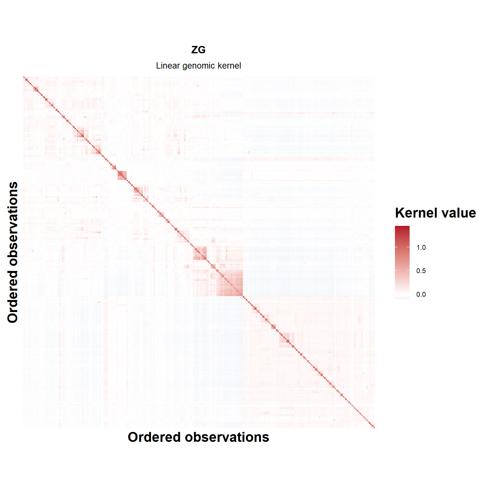
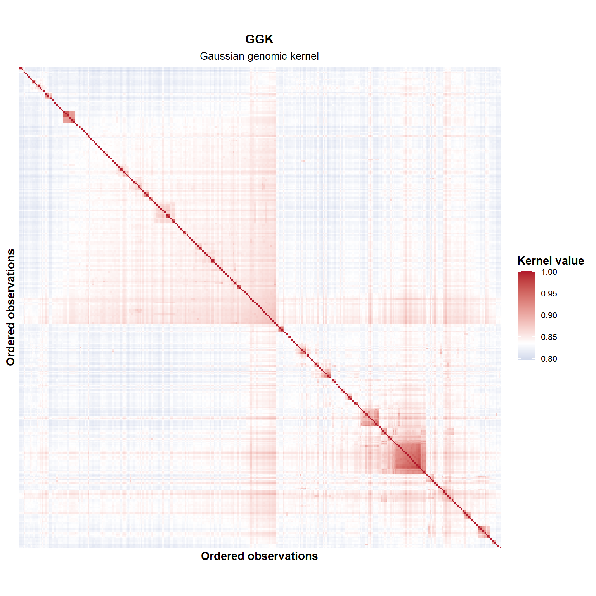
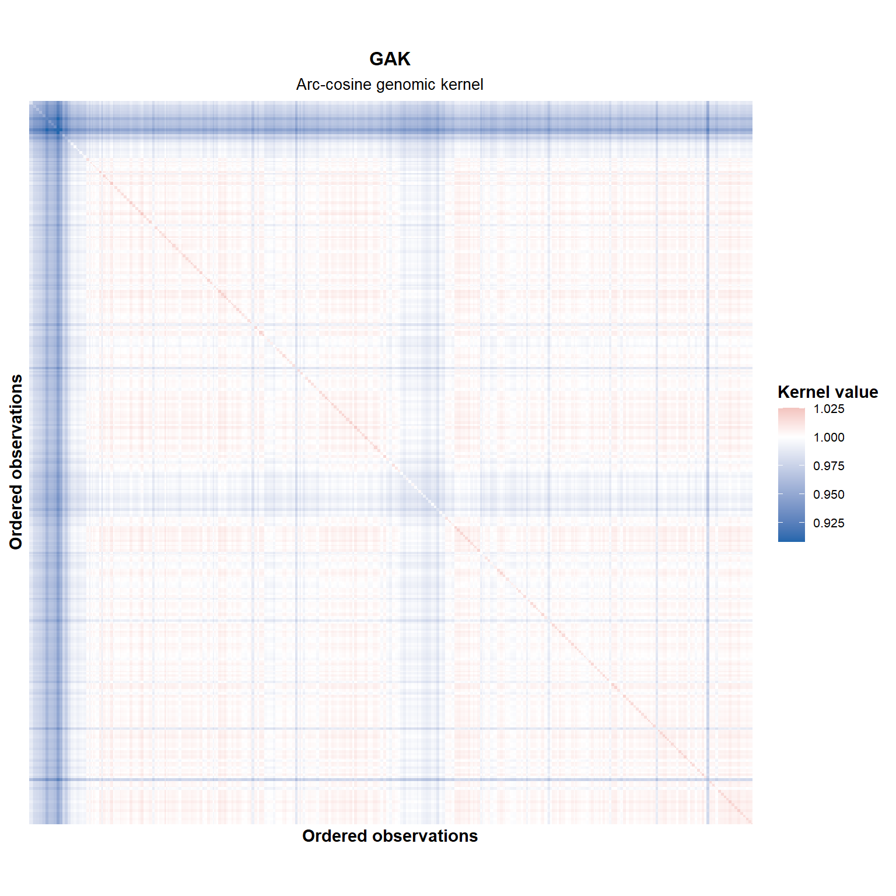
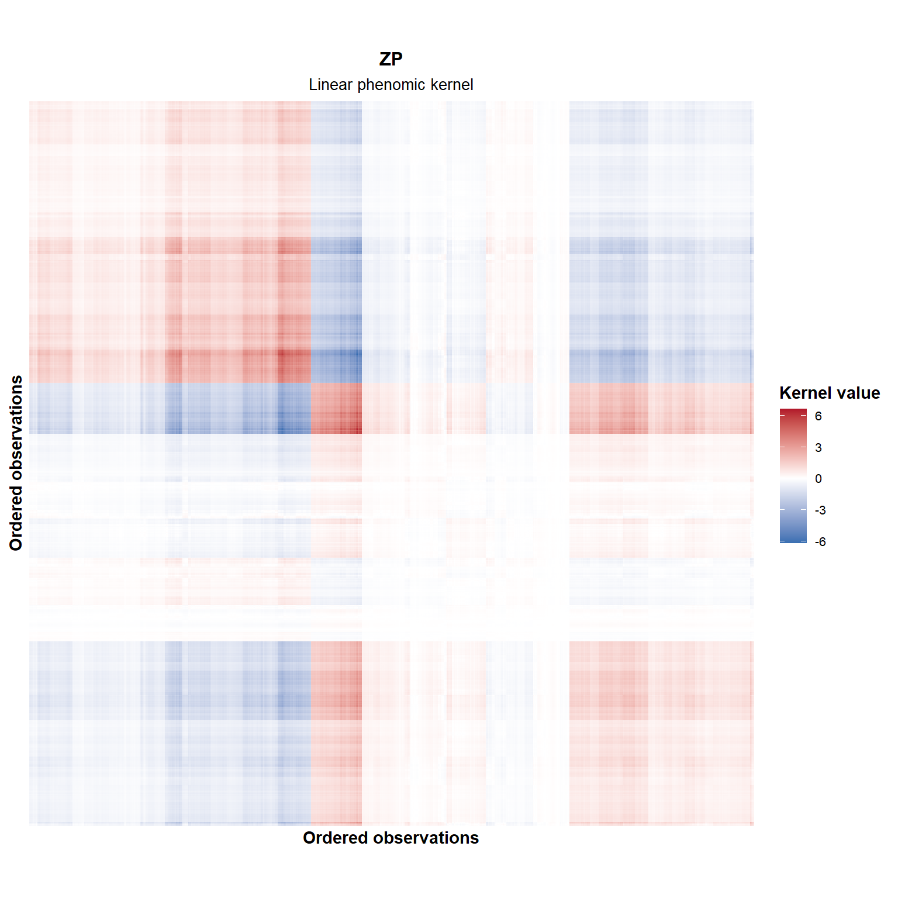
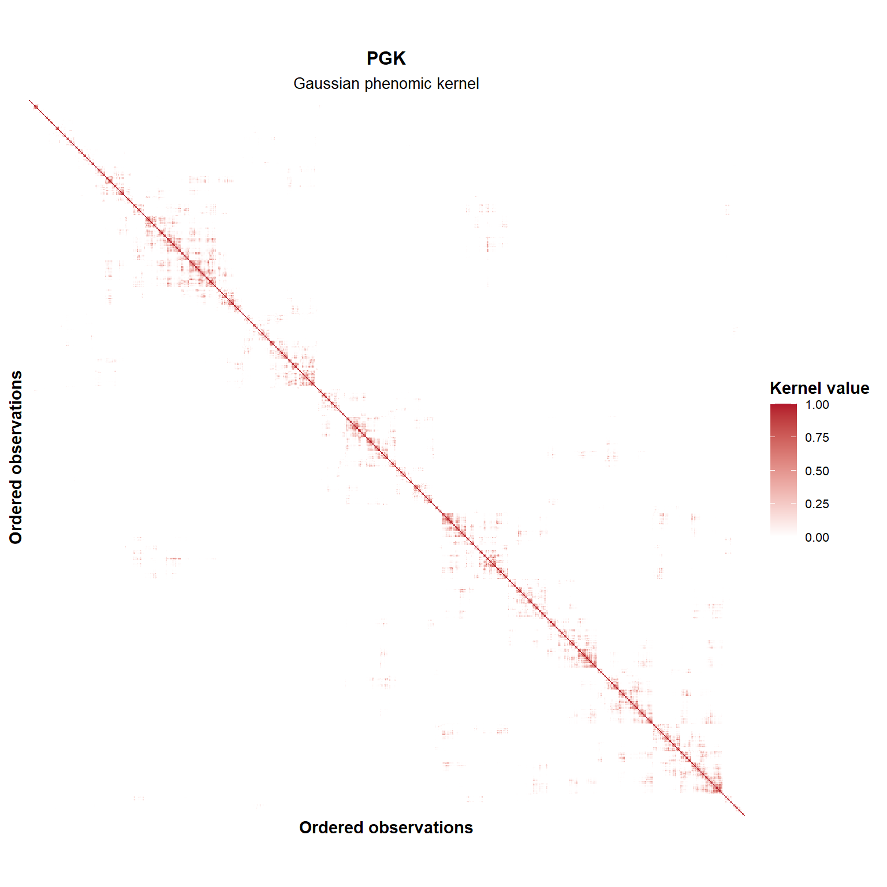
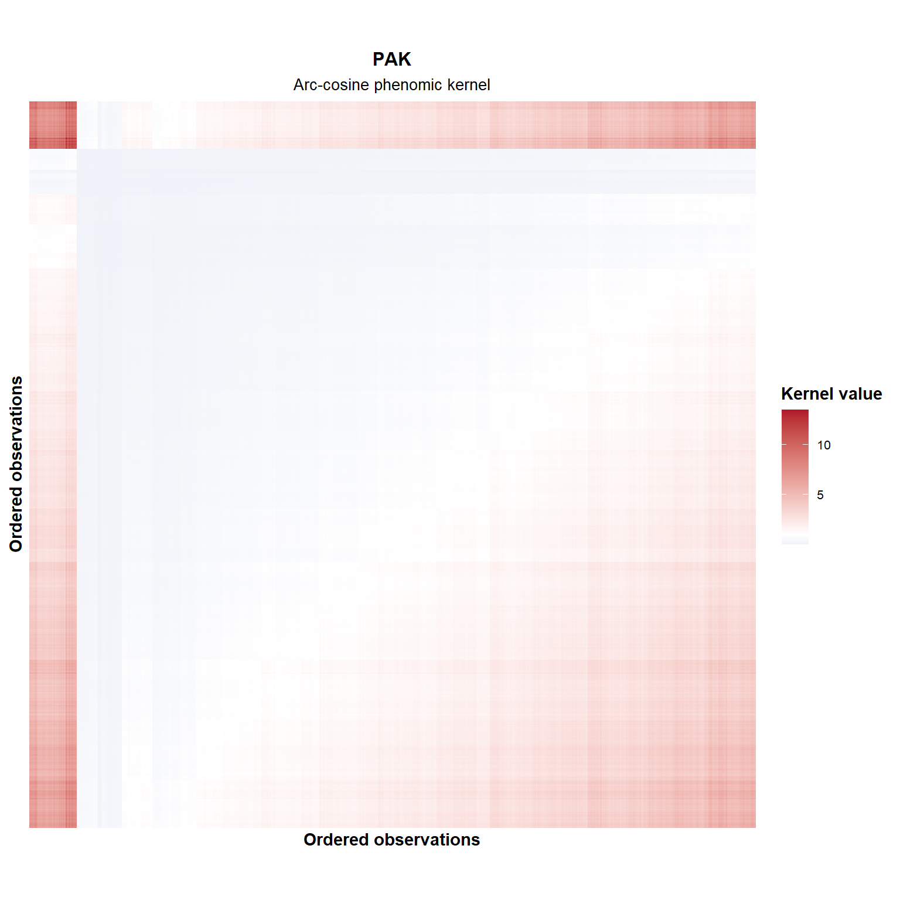

Last updated: 2026-04-08
Checks: 6 1
Knit directory:
Integrating-nir-genomic-kernel/
This reproducible R Markdown analysis was created with workflowr (version 1.7.2). The Checks tab describes the reproducibility checks that were applied when the results were created. The Past versions tab lists the development history.
The R Markdown file has unstaged changes. To know which version of
the R Markdown file created these results, you’ll want to first commit
it to the Git repo. If you’re still working on the analysis, you can
ignore this warning. When you’re finished, you can run
wflow_publish to commit the R Markdown file and build the
HTML.
Great job! The global environment was empty. Objects defined in the global environment can affect the analysis in your R Markdown file in unknown ways. For reproduciblity it’s best to always run the code in an empty environment.
The command set.seed(20250829) was run prior to running
the code in the R Markdown file. Setting a seed ensures that any results
that rely on randomness, e.g. subsampling or permutations, are
reproducible.
Great job! Recording the operating system, R version, and package versions is critical for reproducibility.
Nice! There were no cached chunks for this analysis, so you can be confident that you successfully produced the results during this run.
Great job! Using relative paths to the files within your workflowr project makes it easier to run your code on other machines.
Great! You are using Git for version control. Tracking code development and connecting the code version to the results is critical for reproducibility.
The results in this page were generated with repository version 7a97272. See the Past versions tab to see a history of the changes made to the R Markdown and HTML files.
Note that you need to be careful to ensure that all relevant files for
the analysis have been committed to Git prior to generating the results
(you can use wflow_publish or
wflow_git_commit). workflowr only checks the R Markdown
file, but you know if there are other scripts or data files that it
depends on. Below is the status of the Git repository when the results
were generated:
Ignored files:
Ignored: .Rhistory
Ignored: .Rproj.user/
Ignored: analysis/analysis.Rmd
Ignored: analysis/run_cv0_cv00_only.R
Ignored: analysis/run_cv1_cv2_only.R
Ignored: analysis/script_tabelas_resultados_pipeline_v2.R
Ignored: analysis/site_libs/
Ignored: data/Article_documents/
Ignored: data/Maize-NIRS-GBS-main/
Ignored: output/Matrizes/Geno.all.rds
Ignored: output/Matrizes/NIR.all.rds
Ignored: output/Matrizes/figures/
Ignored: output/adjust_models.rar
Ignored: output/climate_results/additional_climate_plots.tiff
Ignored: output/climate_results/combined_additional_climate_plots.tiff
Ignored: output/climate_results/combined_climate_plot.tiff
Ignored: output/cv-schemes.tiff
Ignored: output/figures/
Ignored: output/results/
Ignored: output/tables/pipeline_review/
Ignored: output/tables/prediction_cv0_cv00_raw.csv
Ignored: output/tables/prediction_cv1_cv2_by_rep_fold_env.csv
Ignored: output/tables/prediction_cv1_cv2_raw.csv
Ignored: output/variance_components/bglr_runs/GY/rep01/Eta1/VC_GY_Eta1_rep01_ETA_E_varB.dat
Ignored: output/variance_components/bglr_runs/GY/rep01/Eta1/VC_GY_Eta1_rep01_ETA_GE_varU.dat
Ignored: output/variance_components/bglr_runs/GY/rep01/Eta1/VC_GY_Eta1_rep01_ETA_G_varU.dat
Ignored: output/variance_components/bglr_runs/GY/rep01/Eta1/VC_GY_Eta1_rep01_mu.dat
Ignored: output/variance_components/bglr_runs/GY/rep01/Eta1/VC_GY_Eta1_rep01_varE.dat
Ignored: output/variance_components/bglr_runs/GY/rep01/Eta10/VC_GY_Eta10_rep01_ETA_E_varB.dat
Ignored: output/variance_components/bglr_runs/GY/rep01/Eta10/VC_GY_Eta10_rep01_ETA_GE_varU.dat
Ignored: output/variance_components/bglr_runs/GY/rep01/Eta10/VC_GY_Eta10_rep01_ETA_GW_varU.dat
Ignored: output/variance_components/bglr_runs/GY/rep01/Eta10/VC_GY_Eta10_rep01_ETA_G_varU.dat
Ignored: output/variance_components/bglr_runs/GY/rep01/Eta10/VC_GY_Eta10_rep01_ETA_W_varU.dat
Ignored: output/variance_components/bglr_runs/GY/rep01/Eta10/VC_GY_Eta10_rep01_mu.dat
Ignored: output/variance_components/bglr_runs/GY/rep01/Eta10/VC_GY_Eta10_rep01_varE.dat
Ignored: output/variance_components/bglr_runs/GY/rep01/Eta11/VC_GY_Eta11_rep01_ETA_E_varB.dat
Ignored: output/variance_components/bglr_runs/GY/rep01/Eta11/VC_GY_Eta11_rep01_ETA_PE_varU.dat
Ignored: output/variance_components/bglr_runs/GY/rep01/Eta11/VC_GY_Eta11_rep01_ETA_PW_varU.dat
Ignored: output/variance_components/bglr_runs/GY/rep01/Eta11/VC_GY_Eta11_rep01_ETA_P_varU.dat
Ignored: output/variance_components/bglr_runs/GY/rep01/Eta11/VC_GY_Eta11_rep01_ETA_W_varU.dat
Ignored: output/variance_components/bglr_runs/GY/rep01/Eta11/VC_GY_Eta11_rep01_mu.dat
Ignored: output/variance_components/bglr_runs/GY/rep01/Eta11/VC_GY_Eta11_rep01_varE.dat
Ignored: output/variance_components/bglr_runs/GY/rep01/Eta12/VC_GY_Eta12_rep01_ETA_E_varB.dat
Ignored: output/variance_components/bglr_runs/GY/rep01/Eta12/VC_GY_Eta12_rep01_ETA_GE_varU.dat
Ignored: output/variance_components/bglr_runs/GY/rep01/Eta12/VC_GY_Eta12_rep01_ETA_GW_varU.dat
Ignored: output/variance_components/bglr_runs/GY/rep01/Eta12/VC_GY_Eta12_rep01_ETA_G_varU.dat
Ignored: output/variance_components/bglr_runs/GY/rep01/Eta12/VC_GY_Eta12_rep01_ETA_PE_varU.dat
Ignored: output/variance_components/bglr_runs/GY/rep01/Eta12/VC_GY_Eta12_rep01_ETA_PW_varU.dat
Ignored: output/variance_components/bglr_runs/GY/rep01/Eta12/VC_GY_Eta12_rep01_ETA_P_varU.dat
Ignored: output/variance_components/bglr_runs/GY/rep01/Eta12/VC_GY_Eta12_rep01_ETA_W_varU.dat
Ignored: output/variance_components/bglr_runs/GY/rep01/Eta12/VC_GY_Eta12_rep01_mu.dat
Ignored: output/variance_components/bglr_runs/GY/rep01/Eta12/VC_GY_Eta12_rep01_varE.dat
Ignored: output/variance_components/bglr_runs/GY/rep01/Eta13/VC_GY_Eta13_rep01_ETA_E_varB.dat
Ignored: output/variance_components/bglr_runs/GY/rep01/Eta13/VC_GY_Eta13_rep01_ETA_GGKE_varU.dat
Ignored: output/variance_components/bglr_runs/GY/rep01/Eta13/VC_GY_Eta13_rep01_ETA_GGKW_varU.dat
Ignored: output/variance_components/bglr_runs/GY/rep01/Eta13/VC_GY_Eta13_rep01_ETA_GGK_varU.dat
Ignored: output/variance_components/bglr_runs/GY/rep01/Eta13/VC_GY_Eta13_rep01_ETA_W_varU.dat
Ignored: output/variance_components/bglr_runs/GY/rep01/Eta13/VC_GY_Eta13_rep01_mu.dat
Ignored: output/variance_components/bglr_runs/GY/rep01/Eta13/VC_GY_Eta13_rep01_varE.dat
Ignored: output/variance_components/bglr_runs/GY/rep01/Eta14/VC_GY_Eta14_rep01_ETA_E_varB.dat
Ignored: output/variance_components/bglr_runs/GY/rep01/Eta14/VC_GY_Eta14_rep01_ETA_PGKE_varU.dat
Ignored: output/variance_components/bglr_runs/GY/rep01/Eta14/VC_GY_Eta14_rep01_ETA_PGKW_varU.dat
Ignored: output/variance_components/bglr_runs/GY/rep01/Eta14/VC_GY_Eta14_rep01_ETA_PGK_varU.dat
Ignored: output/variance_components/bglr_runs/GY/rep01/Eta14/VC_GY_Eta14_rep01_ETA_W_varU.dat
Ignored: output/variance_components/bglr_runs/GY/rep01/Eta14/VC_GY_Eta14_rep01_mu.dat
Ignored: output/variance_components/bglr_runs/GY/rep01/Eta14/VC_GY_Eta14_rep01_varE.dat
Ignored: output/variance_components/bglr_runs/GY/rep01/Eta15/VC_GY_Eta15_rep01_ETA_E_varB.dat
Ignored: output/variance_components/bglr_runs/GY/rep01/Eta15/VC_GY_Eta15_rep01_ETA_GGKE_varU.dat
Ignored: output/variance_components/bglr_runs/GY/rep01/Eta15/VC_GY_Eta15_rep01_ETA_GGKW_varU.dat
Ignored: output/variance_components/bglr_runs/GY/rep01/Eta15/VC_GY_Eta15_rep01_ETA_GGK_varU.dat
Ignored: output/variance_components/bglr_runs/GY/rep01/Eta15/VC_GY_Eta15_rep01_ETA_PGKE_varU.dat
Ignored: output/variance_components/bglr_runs/GY/rep01/Eta15/VC_GY_Eta15_rep01_ETA_PGKW_varU.dat
Ignored: output/variance_components/bglr_runs/GY/rep01/Eta15/VC_GY_Eta15_rep01_ETA_PGK_varU.dat
Ignored: output/variance_components/bglr_runs/GY/rep01/Eta15/VC_GY_Eta15_rep01_ETA_W_varU.dat
Ignored: output/variance_components/bglr_runs/GY/rep01/Eta15/VC_GY_Eta15_rep01_mu.dat
Ignored: output/variance_components/bglr_runs/GY/rep01/Eta15/VC_GY_Eta15_rep01_varE.dat
Ignored: output/variance_components/bglr_runs/GY/rep01/Eta16/VC_GY_Eta16_rep01_ETA_E_varB.dat
Ignored: output/variance_components/bglr_runs/GY/rep01/Eta16/VC_GY_Eta16_rep01_ETA_GAKE_varU.dat
Ignored: output/variance_components/bglr_runs/GY/rep01/Eta16/VC_GY_Eta16_rep01_ETA_GAKW_varU.dat
Ignored: output/variance_components/bglr_runs/GY/rep01/Eta16/VC_GY_Eta16_rep01_ETA_GAK_varU.dat
Ignored: output/variance_components/bglr_runs/GY/rep01/Eta16/VC_GY_Eta16_rep01_ETA_W_varU.dat
Ignored: output/variance_components/bglr_runs/GY/rep01/Eta16/VC_GY_Eta16_rep01_mu.dat
Ignored: output/variance_components/bglr_runs/GY/rep01/Eta16/VC_GY_Eta16_rep01_varE.dat
Ignored: output/variance_components/bglr_runs/GY/rep01/Eta17/VC_GY_Eta17_rep01_ETA_E_varB.dat
Ignored: output/variance_components/bglr_runs/GY/rep01/Eta17/VC_GY_Eta17_rep01_ETA_PAKE_varU.dat
Ignored: output/variance_components/bglr_runs/GY/rep01/Eta17/VC_GY_Eta17_rep01_ETA_PAKW_varU.dat
Ignored: output/variance_components/bglr_runs/GY/rep01/Eta17/VC_GY_Eta17_rep01_ETA_PAK_varU.dat
Ignored: output/variance_components/bglr_runs/GY/rep01/Eta17/VC_GY_Eta17_rep01_ETA_W_varU.dat
Ignored: output/variance_components/bglr_runs/GY/rep01/Eta17/VC_GY_Eta17_rep01_mu.dat
Ignored: output/variance_components/bglr_runs/GY/rep01/Eta17/VC_GY_Eta17_rep01_varE.dat
Ignored: output/variance_components/bglr_runs/GY/rep01/Eta18/VC_GY_Eta18_rep01_ETA_E_varB.dat
Ignored: output/variance_components/bglr_runs/GY/rep01/Eta18/VC_GY_Eta18_rep01_ETA_GAKE_varU.dat
Ignored: output/variance_components/bglr_runs/GY/rep01/Eta18/VC_GY_Eta18_rep01_ETA_GAKW_varU.dat
Ignored: output/variance_components/bglr_runs/GY/rep01/Eta18/VC_GY_Eta18_rep01_ETA_GAK_varU.dat
Ignored: output/variance_components/bglr_runs/GY/rep01/Eta18/VC_GY_Eta18_rep01_ETA_PAKE_varU.dat
Ignored: output/variance_components/bglr_runs/GY/rep01/Eta18/VC_GY_Eta18_rep01_ETA_PAKW_varU.dat
Ignored: output/variance_components/bglr_runs/GY/rep01/Eta18/VC_GY_Eta18_rep01_ETA_PAK_varU.dat
Ignored: output/variance_components/bglr_runs/GY/rep01/Eta18/VC_GY_Eta18_rep01_ETA_W_varU.dat
Ignored: output/variance_components/bglr_runs/GY/rep01/Eta18/VC_GY_Eta18_rep01_mu.dat
Ignored: output/variance_components/bglr_runs/GY/rep01/Eta18/VC_GY_Eta18_rep01_varE.dat
Ignored: output/variance_components/bglr_runs/GY/rep01/Eta2/VC_GY_Eta2_rep01_ETA_E_varB.dat
Ignored: output/variance_components/bglr_runs/GY/rep01/Eta2/VC_GY_Eta2_rep01_ETA_PE_varU.dat
Ignored: output/variance_components/bglr_runs/GY/rep01/Eta2/VC_GY_Eta2_rep01_ETA_P_varU.dat
Ignored: output/variance_components/bglr_runs/GY/rep01/Eta2/VC_GY_Eta2_rep01_mu.dat
Ignored: output/variance_components/bglr_runs/GY/rep01/Eta2/VC_GY_Eta2_rep01_varE.dat
Ignored: output/variance_components/bglr_runs/GY/rep01/Eta3/VC_GY_Eta3_rep01_ETA_E_varB.dat
Ignored: output/variance_components/bglr_runs/GY/rep01/Eta3/VC_GY_Eta3_rep01_ETA_GGKE_varU.dat
Ignored: output/variance_components/bglr_runs/GY/rep01/Eta3/VC_GY_Eta3_rep01_ETA_GGK_varU.dat
Ignored: output/variance_components/bglr_runs/GY/rep01/Eta3/VC_GY_Eta3_rep01_mu.dat
Ignored: output/variance_components/bglr_runs/GY/rep01/Eta3/VC_GY_Eta3_rep01_varE.dat
Ignored: output/variance_components/bglr_runs/GY/rep01/Eta4/VC_GY_Eta4_rep01_ETA_E_varB.dat
Ignored: output/variance_components/bglr_runs/GY/rep01/Eta4/VC_GY_Eta4_rep01_ETA_PGKE_varU.dat
Ignored: output/variance_components/bglr_runs/GY/rep01/Eta4/VC_GY_Eta4_rep01_ETA_PGK_varU.dat
Ignored: output/variance_components/bglr_runs/GY/rep01/Eta4/VC_GY_Eta4_rep01_mu.dat
Ignored: output/variance_components/bglr_runs/GY/rep01/Eta4/VC_GY_Eta4_rep01_varE.dat
Ignored: output/variance_components/bglr_runs/GY/rep01/Eta5/VC_GY_Eta5_rep01_ETA_E_varB.dat
Ignored: output/variance_components/bglr_runs/GY/rep01/Eta5/VC_GY_Eta5_rep01_ETA_GAKE_varU.dat
Ignored: output/variance_components/bglr_runs/GY/rep01/Eta5/VC_GY_Eta5_rep01_ETA_GAK_varU.dat
Ignored: output/variance_components/bglr_runs/GY/rep01/Eta5/VC_GY_Eta5_rep01_mu.dat
Ignored: output/variance_components/bglr_runs/GY/rep01/Eta5/VC_GY_Eta5_rep01_varE.dat
Ignored: output/variance_components/bglr_runs/GY/rep01/Eta6/VC_GY_Eta6_rep01_ETA_E_varB.dat
Ignored: output/variance_components/bglr_runs/GY/rep01/Eta6/VC_GY_Eta6_rep01_ETA_PAKE_varU.dat
Ignored: output/variance_components/bglr_runs/GY/rep01/Eta6/VC_GY_Eta6_rep01_ETA_PAK_varU.dat
Ignored: output/variance_components/bglr_runs/GY/rep01/Eta6/VC_GY_Eta6_rep01_mu.dat
Ignored: output/variance_components/bglr_runs/GY/rep01/Eta6/VC_GY_Eta6_rep01_varE.dat
Ignored: output/variance_components/bglr_runs/GY/rep01/Eta7/VC_GY_Eta7_rep01_ETA_E_varB.dat
Ignored: output/variance_components/bglr_runs/GY/rep01/Eta7/VC_GY_Eta7_rep01_ETA_GE_varU.dat
Ignored: output/variance_components/bglr_runs/GY/rep01/Eta7/VC_GY_Eta7_rep01_ETA_G_varU.dat
Ignored: output/variance_components/bglr_runs/GY/rep01/Eta7/VC_GY_Eta7_rep01_ETA_PE_varU.dat
Ignored: output/variance_components/bglr_runs/GY/rep01/Eta7/VC_GY_Eta7_rep01_ETA_P_varU.dat
Ignored: output/variance_components/bglr_runs/GY/rep01/Eta7/VC_GY_Eta7_rep01_mu.dat
Ignored: output/variance_components/bglr_runs/GY/rep01/Eta7/VC_GY_Eta7_rep01_varE.dat
Ignored: output/variance_components/bglr_runs/GY/rep01/Eta8/VC_GY_Eta8_rep01_ETA_E_varB.dat
Ignored: output/variance_components/bglr_runs/GY/rep01/Eta8/VC_GY_Eta8_rep01_ETA_GGKE_varU.dat
Ignored: output/variance_components/bglr_runs/GY/rep01/Eta8/VC_GY_Eta8_rep01_ETA_GGK_varU.dat
Ignored: output/variance_components/bglr_runs/GY/rep01/Eta8/VC_GY_Eta8_rep01_ETA_PGKE_varU.dat
Ignored: output/variance_components/bglr_runs/GY/rep01/Eta8/VC_GY_Eta8_rep01_ETA_PGK_varU.dat
Ignored: output/variance_components/bglr_runs/GY/rep01/Eta8/VC_GY_Eta8_rep01_mu.dat
Ignored: output/variance_components/bglr_runs/GY/rep01/Eta8/VC_GY_Eta8_rep01_varE.dat
Ignored: output/variance_components/bglr_runs/GY/rep01/Eta9/VC_GY_Eta9_rep01_ETA_E_varB.dat
Ignored: output/variance_components/bglr_runs/GY/rep01/Eta9/VC_GY_Eta9_rep01_ETA_GAKE_varU.dat
Ignored: output/variance_components/bglr_runs/GY/rep01/Eta9/VC_GY_Eta9_rep01_ETA_GAK_varU.dat
Ignored: output/variance_components/bglr_runs/GY/rep01/Eta9/VC_GY_Eta9_rep01_ETA_PAKE_varU.dat
Ignored: output/variance_components/bglr_runs/GY/rep01/Eta9/VC_GY_Eta9_rep01_ETA_PAK_varU.dat
Ignored: output/variance_components/bglr_runs/GY/rep01/Eta9/VC_GY_Eta9_rep01_mu.dat
Ignored: output/variance_components/bglr_runs/GY/rep01/Eta9/VC_GY_Eta9_rep01_varE.dat
Ignored: output/variance_components/bglr_runs/GY/rep02/Eta1/VC_GY_Eta1_rep02_ETA_E_varB.dat
Ignored: output/variance_components/bglr_runs/GY/rep02/Eta1/VC_GY_Eta1_rep02_ETA_GE_varU.dat
Ignored: output/variance_components/bglr_runs/GY/rep02/Eta1/VC_GY_Eta1_rep02_ETA_G_varU.dat
Ignored: output/variance_components/bglr_runs/GY/rep02/Eta1/VC_GY_Eta1_rep02_mu.dat
Ignored: output/variance_components/bglr_runs/GY/rep02/Eta1/VC_GY_Eta1_rep02_varE.dat
Ignored: output/variance_components/bglr_runs/GY/rep02/Eta10/VC_GY_Eta10_rep02_ETA_E_varB.dat
Ignored: output/variance_components/bglr_runs/GY/rep02/Eta10/VC_GY_Eta10_rep02_ETA_GE_varU.dat
Ignored: output/variance_components/bglr_runs/GY/rep02/Eta10/VC_GY_Eta10_rep02_ETA_GW_varU.dat
Ignored: output/variance_components/bglr_runs/GY/rep02/Eta10/VC_GY_Eta10_rep02_ETA_G_varU.dat
Ignored: output/variance_components/bglr_runs/GY/rep02/Eta10/VC_GY_Eta10_rep02_ETA_W_varU.dat
Ignored: output/variance_components/bglr_runs/GY/rep02/Eta10/VC_GY_Eta10_rep02_mu.dat
Ignored: output/variance_components/bglr_runs/GY/rep02/Eta10/VC_GY_Eta10_rep02_varE.dat
Ignored: output/variance_components/bglr_runs/GY/rep02/Eta11/VC_GY_Eta11_rep02_ETA_E_varB.dat
Ignored: output/variance_components/bglr_runs/GY/rep02/Eta11/VC_GY_Eta11_rep02_ETA_PE_varU.dat
Ignored: output/variance_components/bglr_runs/GY/rep02/Eta11/VC_GY_Eta11_rep02_ETA_PW_varU.dat
Ignored: output/variance_components/bglr_runs/GY/rep02/Eta11/VC_GY_Eta11_rep02_ETA_P_varU.dat
Ignored: output/variance_components/bglr_runs/GY/rep02/Eta11/VC_GY_Eta11_rep02_ETA_W_varU.dat
Ignored: output/variance_components/bglr_runs/GY/rep02/Eta11/VC_GY_Eta11_rep02_mu.dat
Ignored: output/variance_components/bglr_runs/GY/rep02/Eta11/VC_GY_Eta11_rep02_varE.dat
Ignored: output/variance_components/bglr_runs/GY/rep02/Eta12/VC_GY_Eta12_rep02_ETA_E_varB.dat
Ignored: output/variance_components/bglr_runs/GY/rep02/Eta12/VC_GY_Eta12_rep02_ETA_GE_varU.dat
Ignored: output/variance_components/bglr_runs/GY/rep02/Eta12/VC_GY_Eta12_rep02_ETA_GW_varU.dat
Ignored: output/variance_components/bglr_runs/GY/rep02/Eta12/VC_GY_Eta12_rep02_ETA_G_varU.dat
Ignored: output/variance_components/bglr_runs/GY/rep02/Eta12/VC_GY_Eta12_rep02_ETA_PE_varU.dat
Ignored: output/variance_components/bglr_runs/GY/rep02/Eta12/VC_GY_Eta12_rep02_ETA_PW_varU.dat
Ignored: output/variance_components/bglr_runs/GY/rep02/Eta12/VC_GY_Eta12_rep02_ETA_P_varU.dat
Ignored: output/variance_components/bglr_runs/GY/rep02/Eta12/VC_GY_Eta12_rep02_ETA_W_varU.dat
Ignored: output/variance_components/bglr_runs/GY/rep02/Eta12/VC_GY_Eta12_rep02_mu.dat
Ignored: output/variance_components/bglr_runs/GY/rep02/Eta12/VC_GY_Eta12_rep02_varE.dat
Ignored: output/variance_components/bglr_runs/GY/rep02/Eta13/VC_GY_Eta13_rep02_ETA_E_varB.dat
Ignored: output/variance_components/bglr_runs/GY/rep02/Eta13/VC_GY_Eta13_rep02_ETA_GGKE_varU.dat
Ignored: output/variance_components/bglr_runs/GY/rep02/Eta13/VC_GY_Eta13_rep02_ETA_GGKW_varU.dat
Ignored: output/variance_components/bglr_runs/GY/rep02/Eta13/VC_GY_Eta13_rep02_ETA_GGK_varU.dat
Ignored: output/variance_components/bglr_runs/GY/rep02/Eta13/VC_GY_Eta13_rep02_ETA_W_varU.dat
Ignored: output/variance_components/bglr_runs/GY/rep02/Eta13/VC_GY_Eta13_rep02_mu.dat
Ignored: output/variance_components/bglr_runs/GY/rep02/Eta13/VC_GY_Eta13_rep02_varE.dat
Ignored: output/variance_components/bglr_runs/GY/rep02/Eta14/VC_GY_Eta14_rep02_ETA_E_varB.dat
Ignored: output/variance_components/bglr_runs/GY/rep02/Eta14/VC_GY_Eta14_rep02_ETA_PGKE_varU.dat
Ignored: output/variance_components/bglr_runs/GY/rep02/Eta14/VC_GY_Eta14_rep02_ETA_PGKW_varU.dat
Ignored: output/variance_components/bglr_runs/GY/rep02/Eta14/VC_GY_Eta14_rep02_ETA_PGK_varU.dat
Ignored: output/variance_components/bglr_runs/GY/rep02/Eta14/VC_GY_Eta14_rep02_ETA_W_varU.dat
Ignored: output/variance_components/bglr_runs/GY/rep02/Eta14/VC_GY_Eta14_rep02_mu.dat
Ignored: output/variance_components/bglr_runs/GY/rep02/Eta14/VC_GY_Eta14_rep02_varE.dat
Ignored: output/variance_components/bglr_runs/GY/rep02/Eta15/VC_GY_Eta15_rep02_ETA_E_varB.dat
Ignored: output/variance_components/bglr_runs/GY/rep02/Eta15/VC_GY_Eta15_rep02_ETA_GGKE_varU.dat
Ignored: output/variance_components/bglr_runs/GY/rep02/Eta15/VC_GY_Eta15_rep02_ETA_GGKW_varU.dat
Ignored: output/variance_components/bglr_runs/GY/rep02/Eta15/VC_GY_Eta15_rep02_ETA_GGK_varU.dat
Ignored: output/variance_components/bglr_runs/GY/rep02/Eta15/VC_GY_Eta15_rep02_ETA_PGKE_varU.dat
Ignored: output/variance_components/bglr_runs/GY/rep02/Eta15/VC_GY_Eta15_rep02_ETA_PGKW_varU.dat
Ignored: output/variance_components/bglr_runs/GY/rep02/Eta15/VC_GY_Eta15_rep02_ETA_PGK_varU.dat
Ignored: output/variance_components/bglr_runs/GY/rep02/Eta15/VC_GY_Eta15_rep02_ETA_W_varU.dat
Ignored: output/variance_components/bglr_runs/GY/rep02/Eta15/VC_GY_Eta15_rep02_mu.dat
Ignored: output/variance_components/bglr_runs/GY/rep02/Eta15/VC_GY_Eta15_rep02_varE.dat
Ignored: output/variance_components/bglr_runs/GY/rep02/Eta16/VC_GY_Eta16_rep02_ETA_E_varB.dat
Ignored: output/variance_components/bglr_runs/GY/rep02/Eta16/VC_GY_Eta16_rep02_ETA_GAKE_varU.dat
Ignored: output/variance_components/bglr_runs/GY/rep02/Eta16/VC_GY_Eta16_rep02_ETA_GAKW_varU.dat
Ignored: output/variance_components/bglr_runs/GY/rep02/Eta16/VC_GY_Eta16_rep02_ETA_GAK_varU.dat
Ignored: output/variance_components/bglr_runs/GY/rep02/Eta16/VC_GY_Eta16_rep02_ETA_W_varU.dat
Ignored: output/variance_components/bglr_runs/GY/rep02/Eta16/VC_GY_Eta16_rep02_mu.dat
Ignored: output/variance_components/bglr_runs/GY/rep02/Eta16/VC_GY_Eta16_rep02_varE.dat
Ignored: output/variance_components/bglr_runs/GY/rep02/Eta17/VC_GY_Eta17_rep02_ETA_E_varB.dat
Ignored: output/variance_components/bglr_runs/GY/rep02/Eta17/VC_GY_Eta17_rep02_ETA_PAKE_varU.dat
Ignored: output/variance_components/bglr_runs/GY/rep02/Eta17/VC_GY_Eta17_rep02_ETA_PAKW_varU.dat
Ignored: output/variance_components/bglr_runs/GY/rep02/Eta17/VC_GY_Eta17_rep02_ETA_PAK_varU.dat
Ignored: output/variance_components/bglr_runs/GY/rep02/Eta17/VC_GY_Eta17_rep02_ETA_W_varU.dat
Ignored: output/variance_components/bglr_runs/GY/rep02/Eta17/VC_GY_Eta17_rep02_mu.dat
Ignored: output/variance_components/bglr_runs/GY/rep02/Eta17/VC_GY_Eta17_rep02_varE.dat
Ignored: output/variance_components/bglr_runs/GY/rep02/Eta18/VC_GY_Eta18_rep02_ETA_E_varB.dat
Ignored: output/variance_components/bglr_runs/GY/rep02/Eta18/VC_GY_Eta18_rep02_ETA_GAKE_varU.dat
Ignored: output/variance_components/bglr_runs/GY/rep02/Eta18/VC_GY_Eta18_rep02_ETA_GAKW_varU.dat
Ignored: output/variance_components/bglr_runs/GY/rep02/Eta18/VC_GY_Eta18_rep02_ETA_GAK_varU.dat
Ignored: output/variance_components/bglr_runs/GY/rep02/Eta18/VC_GY_Eta18_rep02_ETA_PAKE_varU.dat
Ignored: output/variance_components/bglr_runs/GY/rep02/Eta18/VC_GY_Eta18_rep02_ETA_PAKW_varU.dat
Ignored: output/variance_components/bglr_runs/GY/rep02/Eta18/VC_GY_Eta18_rep02_ETA_PAK_varU.dat
Ignored: output/variance_components/bglr_runs/GY/rep02/Eta18/VC_GY_Eta18_rep02_ETA_W_varU.dat
Ignored: output/variance_components/bglr_runs/GY/rep02/Eta18/VC_GY_Eta18_rep02_mu.dat
Ignored: output/variance_components/bglr_runs/GY/rep02/Eta18/VC_GY_Eta18_rep02_varE.dat
Ignored: output/variance_components/bglr_runs/GY/rep02/Eta2/VC_GY_Eta2_rep02_ETA_E_varB.dat
Ignored: output/variance_components/bglr_runs/GY/rep02/Eta2/VC_GY_Eta2_rep02_ETA_PE_varU.dat
Ignored: output/variance_components/bglr_runs/GY/rep02/Eta2/VC_GY_Eta2_rep02_ETA_P_varU.dat
Ignored: output/variance_components/bglr_runs/GY/rep02/Eta2/VC_GY_Eta2_rep02_mu.dat
Ignored: output/variance_components/bglr_runs/GY/rep02/Eta2/VC_GY_Eta2_rep02_varE.dat
Ignored: output/variance_components/bglr_runs/GY/rep02/Eta3/VC_GY_Eta3_rep02_ETA_E_varB.dat
Ignored: output/variance_components/bglr_runs/GY/rep02/Eta3/VC_GY_Eta3_rep02_ETA_GGKE_varU.dat
Ignored: output/variance_components/bglr_runs/GY/rep02/Eta3/VC_GY_Eta3_rep02_ETA_GGK_varU.dat
Ignored: output/variance_components/bglr_runs/GY/rep02/Eta3/VC_GY_Eta3_rep02_mu.dat
Ignored: output/variance_components/bglr_runs/GY/rep02/Eta3/VC_GY_Eta3_rep02_varE.dat
Ignored: output/variance_components/bglr_runs/GY/rep02/Eta4/VC_GY_Eta4_rep02_ETA_E_varB.dat
Ignored: output/variance_components/bglr_runs/GY/rep02/Eta4/VC_GY_Eta4_rep02_ETA_PGKE_varU.dat
Ignored: output/variance_components/bglr_runs/GY/rep02/Eta4/VC_GY_Eta4_rep02_ETA_PGK_varU.dat
Ignored: output/variance_components/bglr_runs/GY/rep02/Eta4/VC_GY_Eta4_rep02_mu.dat
Ignored: output/variance_components/bglr_runs/GY/rep02/Eta4/VC_GY_Eta4_rep02_varE.dat
Ignored: output/variance_components/bglr_runs/GY/rep02/Eta5/VC_GY_Eta5_rep02_ETA_E_varB.dat
Ignored: output/variance_components/bglr_runs/GY/rep02/Eta5/VC_GY_Eta5_rep02_ETA_GAKE_varU.dat
Ignored: output/variance_components/bglr_runs/GY/rep02/Eta5/VC_GY_Eta5_rep02_ETA_GAK_varU.dat
Ignored: output/variance_components/bglr_runs/GY/rep02/Eta5/VC_GY_Eta5_rep02_mu.dat
Ignored: output/variance_components/bglr_runs/GY/rep02/Eta5/VC_GY_Eta5_rep02_varE.dat
Ignored: output/variance_components/bglr_runs/GY/rep02/Eta6/VC_GY_Eta6_rep02_ETA_E_varB.dat
Ignored: output/variance_components/bglr_runs/GY/rep02/Eta6/VC_GY_Eta6_rep02_ETA_PAKE_varU.dat
Ignored: output/variance_components/bglr_runs/GY/rep02/Eta6/VC_GY_Eta6_rep02_ETA_PAK_varU.dat
Ignored: output/variance_components/bglr_runs/GY/rep02/Eta6/VC_GY_Eta6_rep02_mu.dat
Ignored: output/variance_components/bglr_runs/GY/rep02/Eta6/VC_GY_Eta6_rep02_varE.dat
Ignored: output/variance_components/bglr_runs/GY/rep02/Eta7/VC_GY_Eta7_rep02_ETA_E_varB.dat
Ignored: output/variance_components/bglr_runs/GY/rep02/Eta7/VC_GY_Eta7_rep02_ETA_GE_varU.dat
Ignored: output/variance_components/bglr_runs/GY/rep02/Eta7/VC_GY_Eta7_rep02_ETA_G_varU.dat
Ignored: output/variance_components/bglr_runs/GY/rep02/Eta7/VC_GY_Eta7_rep02_ETA_PE_varU.dat
Ignored: output/variance_components/bglr_runs/GY/rep02/Eta7/VC_GY_Eta7_rep02_ETA_P_varU.dat
Ignored: output/variance_components/bglr_runs/GY/rep02/Eta7/VC_GY_Eta7_rep02_mu.dat
Ignored: output/variance_components/bglr_runs/GY/rep02/Eta7/VC_GY_Eta7_rep02_varE.dat
Ignored: output/variance_components/bglr_runs/GY/rep02/Eta8/VC_GY_Eta8_rep02_ETA_E_varB.dat
Ignored: output/variance_components/bglr_runs/GY/rep02/Eta8/VC_GY_Eta8_rep02_ETA_GGKE_varU.dat
Ignored: output/variance_components/bglr_runs/GY/rep02/Eta8/VC_GY_Eta8_rep02_ETA_GGK_varU.dat
Ignored: output/variance_components/bglr_runs/GY/rep02/Eta8/VC_GY_Eta8_rep02_ETA_PGKE_varU.dat
Ignored: output/variance_components/bglr_runs/GY/rep02/Eta8/VC_GY_Eta8_rep02_ETA_PGK_varU.dat
Ignored: output/variance_components/bglr_runs/GY/rep02/Eta8/VC_GY_Eta8_rep02_mu.dat
Ignored: output/variance_components/bglr_runs/GY/rep02/Eta8/VC_GY_Eta8_rep02_varE.dat
Ignored: output/variance_components/bglr_runs/GY/rep02/Eta9/VC_GY_Eta9_rep02_ETA_E_varB.dat
Ignored: output/variance_components/bglr_runs/GY/rep02/Eta9/VC_GY_Eta9_rep02_ETA_GAKE_varU.dat
Ignored: output/variance_components/bglr_runs/GY/rep02/Eta9/VC_GY_Eta9_rep02_ETA_GAK_varU.dat
Ignored: output/variance_components/bglr_runs/GY/rep02/Eta9/VC_GY_Eta9_rep02_ETA_PAKE_varU.dat
Ignored: output/variance_components/bglr_runs/GY/rep02/Eta9/VC_GY_Eta9_rep02_ETA_PAK_varU.dat
Ignored: output/variance_components/bglr_runs/GY/rep02/Eta9/VC_GY_Eta9_rep02_mu.dat
Ignored: output/variance_components/bglr_runs/GY/rep02/Eta9/VC_GY_Eta9_rep02_varE.dat
Ignored: output/variance_components/bglr_runs/GY/rep03/Eta1/VC_GY_Eta1_rep03_ETA_E_varB.dat
Ignored: output/variance_components/bglr_runs/GY/rep03/Eta1/VC_GY_Eta1_rep03_ETA_GE_varU.dat
Ignored: output/variance_components/bglr_runs/GY/rep03/Eta1/VC_GY_Eta1_rep03_ETA_G_varU.dat
Ignored: output/variance_components/bglr_runs/GY/rep03/Eta1/VC_GY_Eta1_rep03_mu.dat
Ignored: output/variance_components/bglr_runs/GY/rep03/Eta1/VC_GY_Eta1_rep03_varE.dat
Ignored: output/variance_components/bglr_runs/GY/rep03/Eta10/VC_GY_Eta10_rep03_ETA_E_varB.dat
Ignored: output/variance_components/bglr_runs/GY/rep03/Eta10/VC_GY_Eta10_rep03_ETA_GE_varU.dat
Ignored: output/variance_components/bglr_runs/GY/rep03/Eta10/VC_GY_Eta10_rep03_ETA_GW_varU.dat
Ignored: output/variance_components/bglr_runs/GY/rep03/Eta10/VC_GY_Eta10_rep03_ETA_G_varU.dat
Ignored: output/variance_components/bglr_runs/GY/rep03/Eta10/VC_GY_Eta10_rep03_ETA_W_varU.dat
Ignored: output/variance_components/bglr_runs/GY/rep03/Eta10/VC_GY_Eta10_rep03_mu.dat
Ignored: output/variance_components/bglr_runs/GY/rep03/Eta10/VC_GY_Eta10_rep03_varE.dat
Ignored: output/variance_components/bglr_runs/GY/rep03/Eta11/VC_GY_Eta11_rep03_ETA_E_varB.dat
Ignored: output/variance_components/bglr_runs/GY/rep03/Eta11/VC_GY_Eta11_rep03_ETA_PE_varU.dat
Ignored: output/variance_components/bglr_runs/GY/rep03/Eta11/VC_GY_Eta11_rep03_ETA_PW_varU.dat
Ignored: output/variance_components/bglr_runs/GY/rep03/Eta11/VC_GY_Eta11_rep03_ETA_P_varU.dat
Ignored: output/variance_components/bglr_runs/GY/rep03/Eta11/VC_GY_Eta11_rep03_ETA_W_varU.dat
Ignored: output/variance_components/bglr_runs/GY/rep03/Eta11/VC_GY_Eta11_rep03_mu.dat
Ignored: output/variance_components/bglr_runs/GY/rep03/Eta11/VC_GY_Eta11_rep03_varE.dat
Ignored: output/variance_components/bglr_runs/GY/rep03/Eta12/VC_GY_Eta12_rep03_ETA_E_varB.dat
Ignored: output/variance_components/bglr_runs/GY/rep03/Eta12/VC_GY_Eta12_rep03_ETA_GE_varU.dat
Ignored: output/variance_components/bglr_runs/GY/rep03/Eta12/VC_GY_Eta12_rep03_ETA_GW_varU.dat
Ignored: output/variance_components/bglr_runs/GY/rep03/Eta12/VC_GY_Eta12_rep03_ETA_G_varU.dat
Ignored: output/variance_components/bglr_runs/GY/rep03/Eta12/VC_GY_Eta12_rep03_ETA_PE_varU.dat
Ignored: output/variance_components/bglr_runs/GY/rep03/Eta12/VC_GY_Eta12_rep03_ETA_PW_varU.dat
Ignored: output/variance_components/bglr_runs/GY/rep03/Eta12/VC_GY_Eta12_rep03_ETA_P_varU.dat
Ignored: output/variance_components/bglr_runs/GY/rep03/Eta12/VC_GY_Eta12_rep03_ETA_W_varU.dat
Ignored: output/variance_components/bglr_runs/GY/rep03/Eta12/VC_GY_Eta12_rep03_mu.dat
Ignored: output/variance_components/bglr_runs/GY/rep03/Eta12/VC_GY_Eta12_rep03_varE.dat
Ignored: output/variance_components/bglr_runs/GY/rep03/Eta13/VC_GY_Eta13_rep03_ETA_E_varB.dat
Ignored: output/variance_components/bglr_runs/GY/rep03/Eta13/VC_GY_Eta13_rep03_ETA_GGKE_varU.dat
Ignored: output/variance_components/bglr_runs/GY/rep03/Eta13/VC_GY_Eta13_rep03_ETA_GGKW_varU.dat
Ignored: output/variance_components/bglr_runs/GY/rep03/Eta13/VC_GY_Eta13_rep03_ETA_GGK_varU.dat
Ignored: output/variance_components/bglr_runs/GY/rep03/Eta13/VC_GY_Eta13_rep03_ETA_W_varU.dat
Ignored: output/variance_components/bglr_runs/GY/rep03/Eta13/VC_GY_Eta13_rep03_mu.dat
Ignored: output/variance_components/bglr_runs/GY/rep03/Eta13/VC_GY_Eta13_rep03_varE.dat
Ignored: output/variance_components/bglr_runs/GY/rep03/Eta14/VC_GY_Eta14_rep03_ETA_E_varB.dat
Ignored: output/variance_components/bglr_runs/GY/rep03/Eta14/VC_GY_Eta14_rep03_ETA_PGKE_varU.dat
Ignored: output/variance_components/bglr_runs/GY/rep03/Eta14/VC_GY_Eta14_rep03_ETA_PGKW_varU.dat
Ignored: output/variance_components/bglr_runs/GY/rep03/Eta14/VC_GY_Eta14_rep03_ETA_PGK_varU.dat
Ignored: output/variance_components/bglr_runs/GY/rep03/Eta14/VC_GY_Eta14_rep03_ETA_W_varU.dat
Ignored: output/variance_components/bglr_runs/GY/rep03/Eta14/VC_GY_Eta14_rep03_mu.dat
Ignored: output/variance_components/bglr_runs/GY/rep03/Eta14/VC_GY_Eta14_rep03_varE.dat
Ignored: output/variance_components/bglr_runs/GY/rep03/Eta15/VC_GY_Eta15_rep03_ETA_E_varB.dat
Ignored: output/variance_components/bglr_runs/GY/rep03/Eta15/VC_GY_Eta15_rep03_ETA_GGKE_varU.dat
Ignored: output/variance_components/bglr_runs/GY/rep03/Eta15/VC_GY_Eta15_rep03_ETA_GGKW_varU.dat
Ignored: output/variance_components/bglr_runs/GY/rep03/Eta15/VC_GY_Eta15_rep03_ETA_GGK_varU.dat
Ignored: output/variance_components/bglr_runs/GY/rep03/Eta15/VC_GY_Eta15_rep03_ETA_PGKE_varU.dat
Ignored: output/variance_components/bglr_runs/GY/rep03/Eta15/VC_GY_Eta15_rep03_ETA_PGKW_varU.dat
Ignored: output/variance_components/bglr_runs/GY/rep03/Eta15/VC_GY_Eta15_rep03_ETA_PGK_varU.dat
Ignored: output/variance_components/bglr_runs/GY/rep03/Eta15/VC_GY_Eta15_rep03_ETA_W_varU.dat
Ignored: output/variance_components/bglr_runs/GY/rep03/Eta15/VC_GY_Eta15_rep03_mu.dat
Ignored: output/variance_components/bglr_runs/GY/rep03/Eta15/VC_GY_Eta15_rep03_varE.dat
Ignored: output/variance_components/bglr_runs/GY/rep03/Eta16/VC_GY_Eta16_rep03_ETA_E_varB.dat
Ignored: output/variance_components/bglr_runs/GY/rep03/Eta16/VC_GY_Eta16_rep03_ETA_GAKE_varU.dat
Ignored: output/variance_components/bglr_runs/GY/rep03/Eta16/VC_GY_Eta16_rep03_ETA_GAKW_varU.dat
Ignored: output/variance_components/bglr_runs/GY/rep03/Eta16/VC_GY_Eta16_rep03_ETA_GAK_varU.dat
Ignored: output/variance_components/bglr_runs/GY/rep03/Eta16/VC_GY_Eta16_rep03_ETA_W_varU.dat
Ignored: output/variance_components/bglr_runs/GY/rep03/Eta16/VC_GY_Eta16_rep03_mu.dat
Ignored: output/variance_components/bglr_runs/GY/rep03/Eta16/VC_GY_Eta16_rep03_varE.dat
Ignored: output/variance_components/bglr_runs/GY/rep03/Eta17/VC_GY_Eta17_rep03_ETA_E_varB.dat
Ignored: output/variance_components/bglr_runs/GY/rep03/Eta17/VC_GY_Eta17_rep03_ETA_PAKE_varU.dat
Ignored: output/variance_components/bglr_runs/GY/rep03/Eta17/VC_GY_Eta17_rep03_ETA_PAKW_varU.dat
Ignored: output/variance_components/bglr_runs/GY/rep03/Eta17/VC_GY_Eta17_rep03_ETA_PAK_varU.dat
Ignored: output/variance_components/bglr_runs/GY/rep03/Eta17/VC_GY_Eta17_rep03_ETA_W_varU.dat
Ignored: output/variance_components/bglr_runs/GY/rep03/Eta17/VC_GY_Eta17_rep03_mu.dat
Ignored: output/variance_components/bglr_runs/GY/rep03/Eta17/VC_GY_Eta17_rep03_varE.dat
Ignored: output/variance_components/bglr_runs/GY/rep03/Eta18/VC_GY_Eta18_rep03_ETA_E_varB.dat
Ignored: output/variance_components/bglr_runs/GY/rep03/Eta18/VC_GY_Eta18_rep03_ETA_GAKE_varU.dat
Ignored: output/variance_components/bglr_runs/GY/rep03/Eta18/VC_GY_Eta18_rep03_ETA_GAKW_varU.dat
Ignored: output/variance_components/bglr_runs/GY/rep03/Eta18/VC_GY_Eta18_rep03_ETA_GAK_varU.dat
Ignored: output/variance_components/bglr_runs/GY/rep03/Eta18/VC_GY_Eta18_rep03_ETA_PAKE_varU.dat
Ignored: output/variance_components/bglr_runs/GY/rep03/Eta18/VC_GY_Eta18_rep03_ETA_PAKW_varU.dat
Ignored: output/variance_components/bglr_runs/GY/rep03/Eta18/VC_GY_Eta18_rep03_ETA_PAK_varU.dat
Ignored: output/variance_components/bglr_runs/GY/rep03/Eta18/VC_GY_Eta18_rep03_ETA_W_varU.dat
Ignored: output/variance_components/bglr_runs/GY/rep03/Eta18/VC_GY_Eta18_rep03_mu.dat
Ignored: output/variance_components/bglr_runs/GY/rep03/Eta18/VC_GY_Eta18_rep03_varE.dat
Ignored: output/variance_components/bglr_runs/GY/rep03/Eta2/VC_GY_Eta2_rep03_ETA_E_varB.dat
Ignored: output/variance_components/bglr_runs/GY/rep03/Eta2/VC_GY_Eta2_rep03_ETA_PE_varU.dat
Ignored: output/variance_components/bglr_runs/GY/rep03/Eta2/VC_GY_Eta2_rep03_ETA_P_varU.dat
Ignored: output/variance_components/bglr_runs/GY/rep03/Eta2/VC_GY_Eta2_rep03_mu.dat
Ignored: output/variance_components/bglr_runs/GY/rep03/Eta2/VC_GY_Eta2_rep03_varE.dat
Ignored: output/variance_components/bglr_runs/GY/rep03/Eta3/VC_GY_Eta3_rep03_ETA_E_varB.dat
Ignored: output/variance_components/bglr_runs/GY/rep03/Eta3/VC_GY_Eta3_rep03_ETA_GGKE_varU.dat
Ignored: output/variance_components/bglr_runs/GY/rep03/Eta3/VC_GY_Eta3_rep03_ETA_GGK_varU.dat
Ignored: output/variance_components/bglr_runs/GY/rep03/Eta3/VC_GY_Eta3_rep03_mu.dat
Ignored: output/variance_components/bglr_runs/GY/rep03/Eta3/VC_GY_Eta3_rep03_varE.dat
Ignored: output/variance_components/bglr_runs/GY/rep03/Eta4/VC_GY_Eta4_rep03_ETA_E_varB.dat
Ignored: output/variance_components/bglr_runs/GY/rep03/Eta4/VC_GY_Eta4_rep03_ETA_PGKE_varU.dat
Ignored: output/variance_components/bglr_runs/GY/rep03/Eta4/VC_GY_Eta4_rep03_ETA_PGK_varU.dat
Ignored: output/variance_components/bglr_runs/GY/rep03/Eta4/VC_GY_Eta4_rep03_mu.dat
Ignored: output/variance_components/bglr_runs/GY/rep03/Eta4/VC_GY_Eta4_rep03_varE.dat
Ignored: output/variance_components/bglr_runs/GY/rep03/Eta5/VC_GY_Eta5_rep03_ETA_E_varB.dat
Ignored: output/variance_components/bglr_runs/GY/rep03/Eta5/VC_GY_Eta5_rep03_ETA_GAKE_varU.dat
Ignored: output/variance_components/bglr_runs/GY/rep03/Eta5/VC_GY_Eta5_rep03_ETA_GAK_varU.dat
Ignored: output/variance_components/bglr_runs/GY/rep03/Eta5/VC_GY_Eta5_rep03_mu.dat
Ignored: output/variance_components/bglr_runs/GY/rep03/Eta5/VC_GY_Eta5_rep03_varE.dat
Ignored: output/variance_components/bglr_runs/GY/rep03/Eta6/VC_GY_Eta6_rep03_ETA_E_varB.dat
Ignored: output/variance_components/bglr_runs/GY/rep03/Eta6/VC_GY_Eta6_rep03_ETA_PAKE_varU.dat
Ignored: output/variance_components/bglr_runs/GY/rep03/Eta6/VC_GY_Eta6_rep03_ETA_PAK_varU.dat
Ignored: output/variance_components/bglr_runs/GY/rep03/Eta6/VC_GY_Eta6_rep03_mu.dat
Ignored: output/variance_components/bglr_runs/GY/rep03/Eta6/VC_GY_Eta6_rep03_varE.dat
Ignored: output/variance_components/bglr_runs/GY/rep03/Eta7/VC_GY_Eta7_rep03_ETA_E_varB.dat
Ignored: output/variance_components/bglr_runs/GY/rep03/Eta7/VC_GY_Eta7_rep03_ETA_GE_varU.dat
Ignored: output/variance_components/bglr_runs/GY/rep03/Eta7/VC_GY_Eta7_rep03_ETA_G_varU.dat
Ignored: output/variance_components/bglr_runs/GY/rep03/Eta7/VC_GY_Eta7_rep03_ETA_PE_varU.dat
Ignored: output/variance_components/bglr_runs/GY/rep03/Eta7/VC_GY_Eta7_rep03_ETA_P_varU.dat
Ignored: output/variance_components/bglr_runs/GY/rep03/Eta7/VC_GY_Eta7_rep03_mu.dat
Ignored: output/variance_components/bglr_runs/GY/rep03/Eta7/VC_GY_Eta7_rep03_varE.dat
Ignored: output/variance_components/bglr_runs/GY/rep03/Eta8/VC_GY_Eta8_rep03_ETA_E_varB.dat
Ignored: output/variance_components/bglr_runs/GY/rep03/Eta8/VC_GY_Eta8_rep03_ETA_GGKE_varU.dat
Ignored: output/variance_components/bglr_runs/GY/rep03/Eta8/VC_GY_Eta8_rep03_ETA_GGK_varU.dat
Ignored: output/variance_components/bglr_runs/GY/rep03/Eta8/VC_GY_Eta8_rep03_ETA_PGKE_varU.dat
Ignored: output/variance_components/bglr_runs/GY/rep03/Eta8/VC_GY_Eta8_rep03_ETA_PGK_varU.dat
Ignored: output/variance_components/bglr_runs/GY/rep03/Eta8/VC_GY_Eta8_rep03_mu.dat
Ignored: output/variance_components/bglr_runs/GY/rep03/Eta8/VC_GY_Eta8_rep03_varE.dat
Ignored: output/variance_components/bglr_runs/GY/rep03/Eta9/VC_GY_Eta9_rep03_ETA_E_varB.dat
Ignored: output/variance_components/bglr_runs/GY/rep03/Eta9/VC_GY_Eta9_rep03_ETA_GAKE_varU.dat
Ignored: output/variance_components/bglr_runs/GY/rep03/Eta9/VC_GY_Eta9_rep03_ETA_GAK_varU.dat
Ignored: output/variance_components/bglr_runs/GY/rep03/Eta9/VC_GY_Eta9_rep03_ETA_PAKE_varU.dat
Ignored: output/variance_components/bglr_runs/GY/rep03/Eta9/VC_GY_Eta9_rep03_ETA_PAK_varU.dat
Ignored: output/variance_components/bglr_runs/GY/rep03/Eta9/VC_GY_Eta9_rep03_mu.dat
Ignored: output/variance_components/bglr_runs/GY/rep03/Eta9/VC_GY_Eta9_rep03_varE.dat
Ignored: output/variance_components/bglr_runs/GY/rep04/Eta1/VC_GY_Eta1_rep04_ETA_E_varB.dat
Ignored: output/variance_components/bglr_runs/GY/rep04/Eta1/VC_GY_Eta1_rep04_ETA_GE_varU.dat
Ignored: output/variance_components/bglr_runs/GY/rep04/Eta1/VC_GY_Eta1_rep04_ETA_G_varU.dat
Ignored: output/variance_components/bglr_runs/GY/rep04/Eta1/VC_GY_Eta1_rep04_mu.dat
Ignored: output/variance_components/bglr_runs/GY/rep04/Eta1/VC_GY_Eta1_rep04_varE.dat
Ignored: output/variance_components/bglr_runs/GY/rep04/Eta10/VC_GY_Eta10_rep04_ETA_E_varB.dat
Ignored: output/variance_components/bglr_runs/GY/rep04/Eta10/VC_GY_Eta10_rep04_ETA_GE_varU.dat
Ignored: output/variance_components/bglr_runs/GY/rep04/Eta10/VC_GY_Eta10_rep04_ETA_GW_varU.dat
Ignored: output/variance_components/bglr_runs/GY/rep04/Eta10/VC_GY_Eta10_rep04_ETA_G_varU.dat
Ignored: output/variance_components/bglr_runs/GY/rep04/Eta10/VC_GY_Eta10_rep04_ETA_W_varU.dat
Ignored: output/variance_components/bglr_runs/GY/rep04/Eta10/VC_GY_Eta10_rep04_mu.dat
Ignored: output/variance_components/bglr_runs/GY/rep04/Eta10/VC_GY_Eta10_rep04_varE.dat
Ignored: output/variance_components/bglr_runs/GY/rep04/Eta11/VC_GY_Eta11_rep04_ETA_E_varB.dat
Ignored: output/variance_components/bglr_runs/GY/rep04/Eta11/VC_GY_Eta11_rep04_ETA_PE_varU.dat
Ignored: output/variance_components/bglr_runs/GY/rep04/Eta11/VC_GY_Eta11_rep04_ETA_PW_varU.dat
Ignored: output/variance_components/bglr_runs/GY/rep04/Eta11/VC_GY_Eta11_rep04_ETA_P_varU.dat
Ignored: output/variance_components/bglr_runs/GY/rep04/Eta11/VC_GY_Eta11_rep04_ETA_W_varU.dat
Ignored: output/variance_components/bglr_runs/GY/rep04/Eta11/VC_GY_Eta11_rep04_mu.dat
Ignored: output/variance_components/bglr_runs/GY/rep04/Eta11/VC_GY_Eta11_rep04_varE.dat
Ignored: output/variance_components/bglr_runs/GY/rep04/Eta12/VC_GY_Eta12_rep04_ETA_E_varB.dat
Ignored: output/variance_components/bglr_runs/GY/rep04/Eta12/VC_GY_Eta12_rep04_ETA_GE_varU.dat
Ignored: output/variance_components/bglr_runs/GY/rep04/Eta12/VC_GY_Eta12_rep04_ETA_GW_varU.dat
Ignored: output/variance_components/bglr_runs/GY/rep04/Eta12/VC_GY_Eta12_rep04_ETA_G_varU.dat
Ignored: output/variance_components/bglr_runs/GY/rep04/Eta12/VC_GY_Eta12_rep04_ETA_PE_varU.dat
Ignored: output/variance_components/bglr_runs/GY/rep04/Eta12/VC_GY_Eta12_rep04_ETA_PW_varU.dat
Ignored: output/variance_components/bglr_runs/GY/rep04/Eta12/VC_GY_Eta12_rep04_ETA_P_varU.dat
Ignored: output/variance_components/bglr_runs/GY/rep04/Eta12/VC_GY_Eta12_rep04_ETA_W_varU.dat
Ignored: output/variance_components/bglr_runs/GY/rep04/Eta12/VC_GY_Eta12_rep04_mu.dat
Ignored: output/variance_components/bglr_runs/GY/rep04/Eta12/VC_GY_Eta12_rep04_varE.dat
Ignored: output/variance_components/bglr_runs/GY/rep04/Eta13/VC_GY_Eta13_rep04_ETA_E_varB.dat
Ignored: output/variance_components/bglr_runs/GY/rep04/Eta13/VC_GY_Eta13_rep04_ETA_GGKE_varU.dat
Ignored: output/variance_components/bglr_runs/GY/rep04/Eta13/VC_GY_Eta13_rep04_ETA_GGKW_varU.dat
Ignored: output/variance_components/bglr_runs/GY/rep04/Eta13/VC_GY_Eta13_rep04_ETA_GGK_varU.dat
Ignored: output/variance_components/bglr_runs/GY/rep04/Eta13/VC_GY_Eta13_rep04_ETA_W_varU.dat
Ignored: output/variance_components/bglr_runs/GY/rep04/Eta13/VC_GY_Eta13_rep04_mu.dat
Ignored: output/variance_components/bglr_runs/GY/rep04/Eta13/VC_GY_Eta13_rep04_varE.dat
Ignored: output/variance_components/bglr_runs/GY/rep04/Eta14/VC_GY_Eta14_rep04_ETA_E_varB.dat
Ignored: output/variance_components/bglr_runs/GY/rep04/Eta14/VC_GY_Eta14_rep04_ETA_PGKE_varU.dat
Ignored: output/variance_components/bglr_runs/GY/rep04/Eta14/VC_GY_Eta14_rep04_ETA_PGKW_varU.dat
Ignored: output/variance_components/bglr_runs/GY/rep04/Eta14/VC_GY_Eta14_rep04_ETA_PGK_varU.dat
Ignored: output/variance_components/bglr_runs/GY/rep04/Eta14/VC_GY_Eta14_rep04_ETA_W_varU.dat
Ignored: output/variance_components/bglr_runs/GY/rep04/Eta14/VC_GY_Eta14_rep04_mu.dat
Ignored: output/variance_components/bglr_runs/GY/rep04/Eta14/VC_GY_Eta14_rep04_varE.dat
Ignored: output/variance_components/bglr_runs/GY/rep04/Eta15/VC_GY_Eta15_rep04_ETA_E_varB.dat
Ignored: output/variance_components/bglr_runs/GY/rep04/Eta15/VC_GY_Eta15_rep04_ETA_GGKE_varU.dat
Ignored: output/variance_components/bglr_runs/GY/rep04/Eta15/VC_GY_Eta15_rep04_ETA_GGKW_varU.dat
Ignored: output/variance_components/bglr_runs/GY/rep04/Eta15/VC_GY_Eta15_rep04_ETA_GGK_varU.dat
Ignored: output/variance_components/bglr_runs/GY/rep04/Eta15/VC_GY_Eta15_rep04_ETA_PGKE_varU.dat
Ignored: output/variance_components/bglr_runs/GY/rep04/Eta15/VC_GY_Eta15_rep04_ETA_PGKW_varU.dat
Ignored: output/variance_components/bglr_runs/GY/rep04/Eta15/VC_GY_Eta15_rep04_ETA_PGK_varU.dat
Ignored: output/variance_components/bglr_runs/GY/rep04/Eta15/VC_GY_Eta15_rep04_ETA_W_varU.dat
Ignored: output/variance_components/bglr_runs/GY/rep04/Eta15/VC_GY_Eta15_rep04_mu.dat
Ignored: output/variance_components/bglr_runs/GY/rep04/Eta15/VC_GY_Eta15_rep04_varE.dat
Ignored: output/variance_components/bglr_runs/GY/rep04/Eta16/VC_GY_Eta16_rep04_ETA_E_varB.dat
Ignored: output/variance_components/bglr_runs/GY/rep04/Eta16/VC_GY_Eta16_rep04_ETA_GAKE_varU.dat
Ignored: output/variance_components/bglr_runs/GY/rep04/Eta16/VC_GY_Eta16_rep04_ETA_GAKW_varU.dat
Ignored: output/variance_components/bglr_runs/GY/rep04/Eta16/VC_GY_Eta16_rep04_ETA_GAK_varU.dat
Ignored: output/variance_components/bglr_runs/GY/rep04/Eta16/VC_GY_Eta16_rep04_ETA_W_varU.dat
Ignored: output/variance_components/bglr_runs/GY/rep04/Eta16/VC_GY_Eta16_rep04_mu.dat
Ignored: output/variance_components/bglr_runs/GY/rep04/Eta16/VC_GY_Eta16_rep04_varE.dat
Ignored: output/variance_components/bglr_runs/GY/rep04/Eta17/VC_GY_Eta17_rep04_ETA_E_varB.dat
Ignored: output/variance_components/bglr_runs/GY/rep04/Eta17/VC_GY_Eta17_rep04_ETA_PAKE_varU.dat
Ignored: output/variance_components/bglr_runs/GY/rep04/Eta17/VC_GY_Eta17_rep04_ETA_PAKW_varU.dat
Ignored: output/variance_components/bglr_runs/GY/rep04/Eta17/VC_GY_Eta17_rep04_ETA_PAK_varU.dat
Ignored: output/variance_components/bglr_runs/GY/rep04/Eta17/VC_GY_Eta17_rep04_ETA_W_varU.dat
Ignored: output/variance_components/bglr_runs/GY/rep04/Eta17/VC_GY_Eta17_rep04_mu.dat
Ignored: output/variance_components/bglr_runs/GY/rep04/Eta17/VC_GY_Eta17_rep04_varE.dat
Ignored: output/variance_components/bglr_runs/GY/rep04/Eta18/VC_GY_Eta18_rep04_ETA_E_varB.dat
Ignored: output/variance_components/bglr_runs/GY/rep04/Eta18/VC_GY_Eta18_rep04_ETA_GAKE_varU.dat
Ignored: output/variance_components/bglr_runs/GY/rep04/Eta18/VC_GY_Eta18_rep04_ETA_GAKW_varU.dat
Ignored: output/variance_components/bglr_runs/GY/rep04/Eta18/VC_GY_Eta18_rep04_ETA_GAK_varU.dat
Ignored: output/variance_components/bglr_runs/GY/rep04/Eta18/VC_GY_Eta18_rep04_ETA_PAKE_varU.dat
Ignored: output/variance_components/bglr_runs/GY/rep04/Eta18/VC_GY_Eta18_rep04_ETA_PAKW_varU.dat
Ignored: output/variance_components/bglr_runs/GY/rep04/Eta18/VC_GY_Eta18_rep04_ETA_PAK_varU.dat
Ignored: output/variance_components/bglr_runs/GY/rep04/Eta18/VC_GY_Eta18_rep04_ETA_W_varU.dat
Ignored: output/variance_components/bglr_runs/GY/rep04/Eta18/VC_GY_Eta18_rep04_mu.dat
Ignored: output/variance_components/bglr_runs/GY/rep04/Eta18/VC_GY_Eta18_rep04_varE.dat
Ignored: output/variance_components/bglr_runs/GY/rep04/Eta2/VC_GY_Eta2_rep04_ETA_E_varB.dat
Ignored: output/variance_components/bglr_runs/GY/rep04/Eta2/VC_GY_Eta2_rep04_ETA_PE_varU.dat
Ignored: output/variance_components/bglr_runs/GY/rep04/Eta2/VC_GY_Eta2_rep04_ETA_P_varU.dat
Ignored: output/variance_components/bglr_runs/GY/rep04/Eta2/VC_GY_Eta2_rep04_mu.dat
Ignored: output/variance_components/bglr_runs/GY/rep04/Eta2/VC_GY_Eta2_rep04_varE.dat
Ignored: output/variance_components/bglr_runs/GY/rep04/Eta3/VC_GY_Eta3_rep04_ETA_E_varB.dat
Ignored: output/variance_components/bglr_runs/GY/rep04/Eta3/VC_GY_Eta3_rep04_ETA_GGKE_varU.dat
Ignored: output/variance_components/bglr_runs/GY/rep04/Eta3/VC_GY_Eta3_rep04_ETA_GGK_varU.dat
Ignored: output/variance_components/bglr_runs/GY/rep04/Eta3/VC_GY_Eta3_rep04_mu.dat
Ignored: output/variance_components/bglr_runs/GY/rep04/Eta3/VC_GY_Eta3_rep04_varE.dat
Ignored: output/variance_components/bglr_runs/GY/rep04/Eta4/VC_GY_Eta4_rep04_ETA_E_varB.dat
Ignored: output/variance_components/bglr_runs/GY/rep04/Eta4/VC_GY_Eta4_rep04_ETA_PGKE_varU.dat
Ignored: output/variance_components/bglr_runs/GY/rep04/Eta4/VC_GY_Eta4_rep04_ETA_PGK_varU.dat
Ignored: output/variance_components/bglr_runs/GY/rep04/Eta4/VC_GY_Eta4_rep04_mu.dat
Ignored: output/variance_components/bglr_runs/GY/rep04/Eta4/VC_GY_Eta4_rep04_varE.dat
Ignored: output/variance_components/bglr_runs/GY/rep04/Eta5/VC_GY_Eta5_rep04_ETA_E_varB.dat
Ignored: output/variance_components/bglr_runs/GY/rep04/Eta5/VC_GY_Eta5_rep04_ETA_GAKE_varU.dat
Ignored: output/variance_components/bglr_runs/GY/rep04/Eta5/VC_GY_Eta5_rep04_ETA_GAK_varU.dat
Ignored: output/variance_components/bglr_runs/GY/rep04/Eta5/VC_GY_Eta5_rep04_mu.dat
Ignored: output/variance_components/bglr_runs/GY/rep04/Eta5/VC_GY_Eta5_rep04_varE.dat
Ignored: output/variance_components/bglr_runs/GY/rep04/Eta6/VC_GY_Eta6_rep04_ETA_E_varB.dat
Ignored: output/variance_components/bglr_runs/GY/rep04/Eta6/VC_GY_Eta6_rep04_ETA_PAKE_varU.dat
Ignored: output/variance_components/bglr_runs/GY/rep04/Eta6/VC_GY_Eta6_rep04_ETA_PAK_varU.dat
Ignored: output/variance_components/bglr_runs/GY/rep04/Eta6/VC_GY_Eta6_rep04_mu.dat
Ignored: output/variance_components/bglr_runs/GY/rep04/Eta6/VC_GY_Eta6_rep04_varE.dat
Ignored: output/variance_components/bglr_runs/GY/rep04/Eta7/VC_GY_Eta7_rep04_ETA_E_varB.dat
Ignored: output/variance_components/bglr_runs/GY/rep04/Eta7/VC_GY_Eta7_rep04_ETA_GE_varU.dat
Ignored: output/variance_components/bglr_runs/GY/rep04/Eta7/VC_GY_Eta7_rep04_ETA_G_varU.dat
Ignored: output/variance_components/bglr_runs/GY/rep04/Eta7/VC_GY_Eta7_rep04_ETA_PE_varU.dat
Ignored: output/variance_components/bglr_runs/GY/rep04/Eta7/VC_GY_Eta7_rep04_ETA_P_varU.dat
Ignored: output/variance_components/bglr_runs/GY/rep04/Eta7/VC_GY_Eta7_rep04_mu.dat
Ignored: output/variance_components/bglr_runs/GY/rep04/Eta7/VC_GY_Eta7_rep04_varE.dat
Ignored: output/variance_components/bglr_runs/GY/rep04/Eta8/VC_GY_Eta8_rep04_ETA_E_varB.dat
Ignored: output/variance_components/bglr_runs/GY/rep04/Eta8/VC_GY_Eta8_rep04_ETA_GGKE_varU.dat
Ignored: output/variance_components/bglr_runs/GY/rep04/Eta8/VC_GY_Eta8_rep04_ETA_GGK_varU.dat
Ignored: output/variance_components/bglr_runs/GY/rep04/Eta8/VC_GY_Eta8_rep04_ETA_PGKE_varU.dat
Ignored: output/variance_components/bglr_runs/GY/rep04/Eta8/VC_GY_Eta8_rep04_ETA_PGK_varU.dat
Ignored: output/variance_components/bglr_runs/GY/rep04/Eta8/VC_GY_Eta8_rep04_mu.dat
Ignored: output/variance_components/bglr_runs/GY/rep04/Eta8/VC_GY_Eta8_rep04_varE.dat
Ignored: output/variance_components/bglr_runs/GY/rep04/Eta9/VC_GY_Eta9_rep04_ETA_E_varB.dat
Ignored: output/variance_components/bglr_runs/GY/rep04/Eta9/VC_GY_Eta9_rep04_ETA_GAKE_varU.dat
Ignored: output/variance_components/bglr_runs/GY/rep04/Eta9/VC_GY_Eta9_rep04_ETA_GAK_varU.dat
Ignored: output/variance_components/bglr_runs/GY/rep04/Eta9/VC_GY_Eta9_rep04_ETA_PAKE_varU.dat
Ignored: output/variance_components/bglr_runs/GY/rep04/Eta9/VC_GY_Eta9_rep04_ETA_PAK_varU.dat
Ignored: output/variance_components/bglr_runs/GY/rep04/Eta9/VC_GY_Eta9_rep04_mu.dat
Ignored: output/variance_components/bglr_runs/GY/rep04/Eta9/VC_GY_Eta9_rep04_varE.dat
Ignored: output/variance_components/bglr_runs/GY/rep05/Eta1/VC_GY_Eta1_rep05_ETA_E_varB.dat
Ignored: output/variance_components/bglr_runs/GY/rep05/Eta1/VC_GY_Eta1_rep05_ETA_GE_varU.dat
Ignored: output/variance_components/bglr_runs/GY/rep05/Eta1/VC_GY_Eta1_rep05_ETA_G_varU.dat
Ignored: output/variance_components/bglr_runs/GY/rep05/Eta1/VC_GY_Eta1_rep05_mu.dat
Ignored: output/variance_components/bglr_runs/GY/rep05/Eta1/VC_GY_Eta1_rep05_varE.dat
Ignored: output/variance_components/bglr_runs/GY/rep05/Eta10/VC_GY_Eta10_rep05_ETA_E_varB.dat
Ignored: output/variance_components/bglr_runs/GY/rep05/Eta10/VC_GY_Eta10_rep05_ETA_GE_varU.dat
Ignored: output/variance_components/bglr_runs/GY/rep05/Eta10/VC_GY_Eta10_rep05_ETA_GW_varU.dat
Ignored: output/variance_components/bglr_runs/GY/rep05/Eta10/VC_GY_Eta10_rep05_ETA_G_varU.dat
Ignored: output/variance_components/bglr_runs/GY/rep05/Eta10/VC_GY_Eta10_rep05_ETA_W_varU.dat
Ignored: output/variance_components/bglr_runs/GY/rep05/Eta10/VC_GY_Eta10_rep05_mu.dat
Ignored: output/variance_components/bglr_runs/GY/rep05/Eta10/VC_GY_Eta10_rep05_varE.dat
Ignored: output/variance_components/bglr_runs/GY/rep05/Eta11/VC_GY_Eta11_rep05_ETA_E_varB.dat
Ignored: output/variance_components/bglr_runs/GY/rep05/Eta11/VC_GY_Eta11_rep05_ETA_PE_varU.dat
Ignored: output/variance_components/bglr_runs/GY/rep05/Eta11/VC_GY_Eta11_rep05_ETA_PW_varU.dat
Ignored: output/variance_components/bglr_runs/GY/rep05/Eta11/VC_GY_Eta11_rep05_ETA_P_varU.dat
Ignored: output/variance_components/bglr_runs/GY/rep05/Eta11/VC_GY_Eta11_rep05_ETA_W_varU.dat
Ignored: output/variance_components/bglr_runs/GY/rep05/Eta11/VC_GY_Eta11_rep05_mu.dat
Ignored: output/variance_components/bglr_runs/GY/rep05/Eta11/VC_GY_Eta11_rep05_varE.dat
Ignored: output/variance_components/bglr_runs/GY/rep05/Eta12/VC_GY_Eta12_rep05_ETA_E_varB.dat
Ignored: output/variance_components/bglr_runs/GY/rep05/Eta12/VC_GY_Eta12_rep05_ETA_GE_varU.dat
Ignored: output/variance_components/bglr_runs/GY/rep05/Eta12/VC_GY_Eta12_rep05_ETA_GW_varU.dat
Ignored: output/variance_components/bglr_runs/GY/rep05/Eta12/VC_GY_Eta12_rep05_ETA_G_varU.dat
Ignored: output/variance_components/bglr_runs/GY/rep05/Eta12/VC_GY_Eta12_rep05_ETA_PE_varU.dat
Ignored: output/variance_components/bglr_runs/GY/rep05/Eta12/VC_GY_Eta12_rep05_ETA_PW_varU.dat
Ignored: output/variance_components/bglr_runs/GY/rep05/Eta12/VC_GY_Eta12_rep05_ETA_P_varU.dat
Ignored: output/variance_components/bglr_runs/GY/rep05/Eta12/VC_GY_Eta12_rep05_ETA_W_varU.dat
Ignored: output/variance_components/bglr_runs/GY/rep05/Eta12/VC_GY_Eta12_rep05_mu.dat
Ignored: output/variance_components/bglr_runs/GY/rep05/Eta12/VC_GY_Eta12_rep05_varE.dat
Ignored: output/variance_components/bglr_runs/GY/rep05/Eta13/VC_GY_Eta13_rep05_ETA_E_varB.dat
Ignored: output/variance_components/bglr_runs/GY/rep05/Eta13/VC_GY_Eta13_rep05_ETA_GGKE_varU.dat
Ignored: output/variance_components/bglr_runs/GY/rep05/Eta13/VC_GY_Eta13_rep05_ETA_GGKW_varU.dat
Ignored: output/variance_components/bglr_runs/GY/rep05/Eta13/VC_GY_Eta13_rep05_ETA_GGK_varU.dat
Ignored: output/variance_components/bglr_runs/GY/rep05/Eta13/VC_GY_Eta13_rep05_ETA_W_varU.dat
Ignored: output/variance_components/bglr_runs/GY/rep05/Eta13/VC_GY_Eta13_rep05_mu.dat
Ignored: output/variance_components/bglr_runs/GY/rep05/Eta13/VC_GY_Eta13_rep05_varE.dat
Ignored: output/variance_components/bglr_runs/GY/rep05/Eta14/VC_GY_Eta14_rep05_ETA_E_varB.dat
Ignored: output/variance_components/bglr_runs/GY/rep05/Eta14/VC_GY_Eta14_rep05_ETA_PGKE_varU.dat
Ignored: output/variance_components/bglr_runs/GY/rep05/Eta14/VC_GY_Eta14_rep05_ETA_PGKW_varU.dat
Ignored: output/variance_components/bglr_runs/GY/rep05/Eta14/VC_GY_Eta14_rep05_ETA_PGK_varU.dat
Ignored: output/variance_components/bglr_runs/GY/rep05/Eta14/VC_GY_Eta14_rep05_ETA_W_varU.dat
Ignored: output/variance_components/bglr_runs/GY/rep05/Eta14/VC_GY_Eta14_rep05_mu.dat
Ignored: output/variance_components/bglr_runs/GY/rep05/Eta14/VC_GY_Eta14_rep05_varE.dat
Ignored: output/variance_components/bglr_runs/GY/rep05/Eta15/VC_GY_Eta15_rep05_ETA_E_varB.dat
Ignored: output/variance_components/bglr_runs/GY/rep05/Eta15/VC_GY_Eta15_rep05_ETA_GGKE_varU.dat
Ignored: output/variance_components/bglr_runs/GY/rep05/Eta15/VC_GY_Eta15_rep05_ETA_GGKW_varU.dat
Ignored: output/variance_components/bglr_runs/GY/rep05/Eta15/VC_GY_Eta15_rep05_ETA_GGK_varU.dat
Ignored: output/variance_components/bglr_runs/GY/rep05/Eta15/VC_GY_Eta15_rep05_ETA_PGKE_varU.dat
Ignored: output/variance_components/bglr_runs/GY/rep05/Eta15/VC_GY_Eta15_rep05_ETA_PGKW_varU.dat
Ignored: output/variance_components/bglr_runs/GY/rep05/Eta15/VC_GY_Eta15_rep05_ETA_PGK_varU.dat
Ignored: output/variance_components/bglr_runs/GY/rep05/Eta15/VC_GY_Eta15_rep05_ETA_W_varU.dat
Ignored: output/variance_components/bglr_runs/GY/rep05/Eta15/VC_GY_Eta15_rep05_mu.dat
Ignored: output/variance_components/bglr_runs/GY/rep05/Eta15/VC_GY_Eta15_rep05_varE.dat
Ignored: output/variance_components/bglr_runs/GY/rep05/Eta16/VC_GY_Eta16_rep05_ETA_E_varB.dat
Ignored: output/variance_components/bglr_runs/GY/rep05/Eta16/VC_GY_Eta16_rep05_ETA_GAKE_varU.dat
Ignored: output/variance_components/bglr_runs/GY/rep05/Eta16/VC_GY_Eta16_rep05_ETA_GAKW_varU.dat
Ignored: output/variance_components/bglr_runs/GY/rep05/Eta16/VC_GY_Eta16_rep05_ETA_GAK_varU.dat
Ignored: output/variance_components/bglr_runs/GY/rep05/Eta16/VC_GY_Eta16_rep05_ETA_W_varU.dat
Ignored: output/variance_components/bglr_runs/GY/rep05/Eta16/VC_GY_Eta16_rep05_mu.dat
Ignored: output/variance_components/bglr_runs/GY/rep05/Eta16/VC_GY_Eta16_rep05_varE.dat
Ignored: output/variance_components/bglr_runs/GY/rep05/Eta17/VC_GY_Eta17_rep05_ETA_E_varB.dat
Ignored: output/variance_components/bglr_runs/GY/rep05/Eta17/VC_GY_Eta17_rep05_ETA_PAKE_varU.dat
Ignored: output/variance_components/bglr_runs/GY/rep05/Eta17/VC_GY_Eta17_rep05_ETA_PAKW_varU.dat
Ignored: output/variance_components/bglr_runs/GY/rep05/Eta17/VC_GY_Eta17_rep05_ETA_PAK_varU.dat
Ignored: output/variance_components/bglr_runs/GY/rep05/Eta17/VC_GY_Eta17_rep05_ETA_W_varU.dat
Ignored: output/variance_components/bglr_runs/GY/rep05/Eta17/VC_GY_Eta17_rep05_mu.dat
Ignored: output/variance_components/bglr_runs/GY/rep05/Eta17/VC_GY_Eta17_rep05_varE.dat
Ignored: output/variance_components/bglr_runs/GY/rep05/Eta18/VC_GY_Eta18_rep05_ETA_E_varB.dat
Ignored: output/variance_components/bglr_runs/GY/rep05/Eta18/VC_GY_Eta18_rep05_ETA_GAKE_varU.dat
Ignored: output/variance_components/bglr_runs/GY/rep05/Eta18/VC_GY_Eta18_rep05_ETA_GAKW_varU.dat
Ignored: output/variance_components/bglr_runs/GY/rep05/Eta18/VC_GY_Eta18_rep05_ETA_GAK_varU.dat
Ignored: output/variance_components/bglr_runs/GY/rep05/Eta18/VC_GY_Eta18_rep05_ETA_PAKE_varU.dat
Ignored: output/variance_components/bglr_runs/GY/rep05/Eta18/VC_GY_Eta18_rep05_ETA_PAKW_varU.dat
Ignored: output/variance_components/bglr_runs/GY/rep05/Eta18/VC_GY_Eta18_rep05_ETA_PAK_varU.dat
Ignored: output/variance_components/bglr_runs/GY/rep05/Eta18/VC_GY_Eta18_rep05_ETA_W_varU.dat
Ignored: output/variance_components/bglr_runs/GY/rep05/Eta18/VC_GY_Eta18_rep05_mu.dat
Ignored: output/variance_components/bglr_runs/GY/rep05/Eta18/VC_GY_Eta18_rep05_varE.dat
Ignored: output/variance_components/bglr_runs/GY/rep05/Eta2/VC_GY_Eta2_rep05_ETA_E_varB.dat
Ignored: output/variance_components/bglr_runs/GY/rep05/Eta2/VC_GY_Eta2_rep05_ETA_PE_varU.dat
Ignored: output/variance_components/bglr_runs/GY/rep05/Eta2/VC_GY_Eta2_rep05_ETA_P_varU.dat
Ignored: output/variance_components/bglr_runs/GY/rep05/Eta2/VC_GY_Eta2_rep05_mu.dat
Ignored: output/variance_components/bglr_runs/GY/rep05/Eta2/VC_GY_Eta2_rep05_varE.dat
Ignored: output/variance_components/bglr_runs/GY/rep05/Eta3/VC_GY_Eta3_rep05_ETA_E_varB.dat
Ignored: output/variance_components/bglr_runs/GY/rep05/Eta3/VC_GY_Eta3_rep05_ETA_GGKE_varU.dat
Ignored: output/variance_components/bglr_runs/GY/rep05/Eta3/VC_GY_Eta3_rep05_ETA_GGK_varU.dat
Ignored: output/variance_components/bglr_runs/GY/rep05/Eta3/VC_GY_Eta3_rep05_mu.dat
Ignored: output/variance_components/bglr_runs/GY/rep05/Eta3/VC_GY_Eta3_rep05_varE.dat
Ignored: output/variance_components/bglr_runs/GY/rep05/Eta4/VC_GY_Eta4_rep05_ETA_E_varB.dat
Ignored: output/variance_components/bglr_runs/GY/rep05/Eta4/VC_GY_Eta4_rep05_ETA_PGKE_varU.dat
Ignored: output/variance_components/bglr_runs/GY/rep05/Eta4/VC_GY_Eta4_rep05_ETA_PGK_varU.dat
Ignored: output/variance_components/bglr_runs/GY/rep05/Eta4/VC_GY_Eta4_rep05_mu.dat
Ignored: output/variance_components/bglr_runs/GY/rep05/Eta4/VC_GY_Eta4_rep05_varE.dat
Ignored: output/variance_components/bglr_runs/GY/rep05/Eta5/VC_GY_Eta5_rep05_ETA_E_varB.dat
Ignored: output/variance_components/bglr_runs/GY/rep05/Eta5/VC_GY_Eta5_rep05_ETA_GAKE_varU.dat
Ignored: output/variance_components/bglr_runs/GY/rep05/Eta5/VC_GY_Eta5_rep05_ETA_GAK_varU.dat
Ignored: output/variance_components/bglr_runs/GY/rep05/Eta5/VC_GY_Eta5_rep05_mu.dat
Ignored: output/variance_components/bglr_runs/GY/rep05/Eta5/VC_GY_Eta5_rep05_varE.dat
Ignored: output/variance_components/bglr_runs/GY/rep05/Eta6/VC_GY_Eta6_rep05_ETA_E_varB.dat
Ignored: output/variance_components/bglr_runs/GY/rep05/Eta6/VC_GY_Eta6_rep05_ETA_PAKE_varU.dat
Ignored: output/variance_components/bglr_runs/GY/rep05/Eta6/VC_GY_Eta6_rep05_ETA_PAK_varU.dat
Ignored: output/variance_components/bglr_runs/GY/rep05/Eta6/VC_GY_Eta6_rep05_mu.dat
Ignored: output/variance_components/bglr_runs/GY/rep05/Eta6/VC_GY_Eta6_rep05_varE.dat
Ignored: output/variance_components/bglr_runs/GY/rep05/Eta7/VC_GY_Eta7_rep05_ETA_E_varB.dat
Ignored: output/variance_components/bglr_runs/GY/rep05/Eta7/VC_GY_Eta7_rep05_ETA_GE_varU.dat
Ignored: output/variance_components/bglr_runs/GY/rep05/Eta7/VC_GY_Eta7_rep05_ETA_G_varU.dat
Ignored: output/variance_components/bglr_runs/GY/rep05/Eta7/VC_GY_Eta7_rep05_ETA_PE_varU.dat
Ignored: output/variance_components/bglr_runs/GY/rep05/Eta7/VC_GY_Eta7_rep05_ETA_P_varU.dat
Ignored: output/variance_components/bglr_runs/GY/rep05/Eta7/VC_GY_Eta7_rep05_mu.dat
Ignored: output/variance_components/bglr_runs/GY/rep05/Eta7/VC_GY_Eta7_rep05_varE.dat
Ignored: output/variance_components/bglr_runs/GY/rep05/Eta8/VC_GY_Eta8_rep05_ETA_E_varB.dat
Ignored: output/variance_components/bglr_runs/GY/rep05/Eta8/VC_GY_Eta8_rep05_ETA_GGKE_varU.dat
Ignored: output/variance_components/bglr_runs/GY/rep05/Eta8/VC_GY_Eta8_rep05_ETA_GGK_varU.dat
Ignored: output/variance_components/bglr_runs/GY/rep05/Eta8/VC_GY_Eta8_rep05_ETA_PGKE_varU.dat
Ignored: output/variance_components/bglr_runs/GY/rep05/Eta8/VC_GY_Eta8_rep05_ETA_PGK_varU.dat
Ignored: output/variance_components/bglr_runs/GY/rep05/Eta8/VC_GY_Eta8_rep05_mu.dat
Ignored: output/variance_components/bglr_runs/GY/rep05/Eta8/VC_GY_Eta8_rep05_varE.dat
Ignored: output/variance_components/bglr_runs/GY/rep05/Eta9/VC_GY_Eta9_rep05_ETA_E_varB.dat
Ignored: output/variance_components/bglr_runs/GY/rep05/Eta9/VC_GY_Eta9_rep05_ETA_GAKE_varU.dat
Ignored: output/variance_components/bglr_runs/GY/rep05/Eta9/VC_GY_Eta9_rep05_ETA_GAK_varU.dat
Ignored: output/variance_components/bglr_runs/GY/rep05/Eta9/VC_GY_Eta9_rep05_ETA_PAKE_varU.dat
Ignored: output/variance_components/bglr_runs/GY/rep05/Eta9/VC_GY_Eta9_rep05_ETA_PAK_varU.dat
Ignored: output/variance_components/bglr_runs/GY/rep05/Eta9/VC_GY_Eta9_rep05_mu.dat
Ignored: output/variance_components/bglr_runs/GY/rep05/Eta9/VC_GY_Eta9_rep05_varE.dat
Ignored: output/variance_components/bglr_runs/GY/rep06/Eta1/VC_GY_Eta1_rep06_ETA_E_varB.dat
Ignored: output/variance_components/bglr_runs/GY/rep06/Eta1/VC_GY_Eta1_rep06_ETA_GE_varU.dat
Ignored: output/variance_components/bglr_runs/GY/rep06/Eta1/VC_GY_Eta1_rep06_ETA_G_varU.dat
Ignored: output/variance_components/bglr_runs/GY/rep06/Eta1/VC_GY_Eta1_rep06_mu.dat
Ignored: output/variance_components/bglr_runs/GY/rep06/Eta1/VC_GY_Eta1_rep06_varE.dat
Ignored: output/variance_components/bglr_runs/GY/rep06/Eta10/VC_GY_Eta10_rep06_ETA_E_varB.dat
Ignored: output/variance_components/bglr_runs/GY/rep06/Eta10/VC_GY_Eta10_rep06_ETA_GE_varU.dat
Ignored: output/variance_components/bglr_runs/GY/rep06/Eta10/VC_GY_Eta10_rep06_ETA_GW_varU.dat
Ignored: output/variance_components/bglr_runs/GY/rep06/Eta10/VC_GY_Eta10_rep06_ETA_G_varU.dat
Ignored: output/variance_components/bglr_runs/GY/rep06/Eta10/VC_GY_Eta10_rep06_ETA_W_varU.dat
Ignored: output/variance_components/bglr_runs/GY/rep06/Eta10/VC_GY_Eta10_rep06_mu.dat
Ignored: output/variance_components/bglr_runs/GY/rep06/Eta10/VC_GY_Eta10_rep06_varE.dat
Ignored: output/variance_components/bglr_runs/GY/rep06/Eta11/VC_GY_Eta11_rep06_ETA_E_varB.dat
Ignored: output/variance_components/bglr_runs/GY/rep06/Eta11/VC_GY_Eta11_rep06_ETA_PE_varU.dat
Ignored: output/variance_components/bglr_runs/GY/rep06/Eta11/VC_GY_Eta11_rep06_ETA_PW_varU.dat
Ignored: output/variance_components/bglr_runs/GY/rep06/Eta11/VC_GY_Eta11_rep06_ETA_P_varU.dat
Ignored: output/variance_components/bglr_runs/GY/rep06/Eta11/VC_GY_Eta11_rep06_ETA_W_varU.dat
Ignored: output/variance_components/bglr_runs/GY/rep06/Eta11/VC_GY_Eta11_rep06_mu.dat
Ignored: output/variance_components/bglr_runs/GY/rep06/Eta11/VC_GY_Eta11_rep06_varE.dat
Ignored: output/variance_components/bglr_runs/GY/rep06/Eta12/VC_GY_Eta12_rep06_ETA_E_varB.dat
Ignored: output/variance_components/bglr_runs/GY/rep06/Eta12/VC_GY_Eta12_rep06_ETA_GE_varU.dat
Ignored: output/variance_components/bglr_runs/GY/rep06/Eta12/VC_GY_Eta12_rep06_ETA_GW_varU.dat
Ignored: output/variance_components/bglr_runs/GY/rep06/Eta12/VC_GY_Eta12_rep06_ETA_G_varU.dat
Ignored: output/variance_components/bglr_runs/GY/rep06/Eta12/VC_GY_Eta12_rep06_ETA_PE_varU.dat
Ignored: output/variance_components/bglr_runs/GY/rep06/Eta12/VC_GY_Eta12_rep06_ETA_PW_varU.dat
Ignored: output/variance_components/bglr_runs/GY/rep06/Eta12/VC_GY_Eta12_rep06_ETA_P_varU.dat
Ignored: output/variance_components/bglr_runs/GY/rep06/Eta12/VC_GY_Eta12_rep06_ETA_W_varU.dat
Ignored: output/variance_components/bglr_runs/GY/rep06/Eta12/VC_GY_Eta12_rep06_mu.dat
Ignored: output/variance_components/bglr_runs/GY/rep06/Eta12/VC_GY_Eta12_rep06_varE.dat
Ignored: output/variance_components/bglr_runs/GY/rep06/Eta13/VC_GY_Eta13_rep06_ETA_E_varB.dat
Ignored: output/variance_components/bglr_runs/GY/rep06/Eta13/VC_GY_Eta13_rep06_ETA_GGKE_varU.dat
Ignored: output/variance_components/bglr_runs/GY/rep06/Eta13/VC_GY_Eta13_rep06_ETA_GGKW_varU.dat
Ignored: output/variance_components/bglr_runs/GY/rep06/Eta13/VC_GY_Eta13_rep06_ETA_GGK_varU.dat
Ignored: output/variance_components/bglr_runs/GY/rep06/Eta13/VC_GY_Eta13_rep06_ETA_W_varU.dat
Ignored: output/variance_components/bglr_runs/GY/rep06/Eta13/VC_GY_Eta13_rep06_mu.dat
Ignored: output/variance_components/bglr_runs/GY/rep06/Eta13/VC_GY_Eta13_rep06_varE.dat
Ignored: output/variance_components/bglr_runs/GY/rep06/Eta14/VC_GY_Eta14_rep06_ETA_E_varB.dat
Ignored: output/variance_components/bglr_runs/GY/rep06/Eta14/VC_GY_Eta14_rep06_ETA_PGKE_varU.dat
Ignored: output/variance_components/bglr_runs/GY/rep06/Eta14/VC_GY_Eta14_rep06_ETA_PGKW_varU.dat
Ignored: output/variance_components/bglr_runs/GY/rep06/Eta14/VC_GY_Eta14_rep06_ETA_PGK_varU.dat
Ignored: output/variance_components/bglr_runs/GY/rep06/Eta14/VC_GY_Eta14_rep06_ETA_W_varU.dat
Ignored: output/variance_components/bglr_runs/GY/rep06/Eta14/VC_GY_Eta14_rep06_mu.dat
Ignored: output/variance_components/bglr_runs/GY/rep06/Eta14/VC_GY_Eta14_rep06_varE.dat
Ignored: output/variance_components/bglr_runs/GY/rep06/Eta15/VC_GY_Eta15_rep06_ETA_E_varB.dat
Ignored: output/variance_components/bglr_runs/GY/rep06/Eta15/VC_GY_Eta15_rep06_ETA_GGKE_varU.dat
Ignored: output/variance_components/bglr_runs/GY/rep06/Eta15/VC_GY_Eta15_rep06_ETA_GGKW_varU.dat
Ignored: output/variance_components/bglr_runs/GY/rep06/Eta15/VC_GY_Eta15_rep06_ETA_GGK_varU.dat
Ignored: output/variance_components/bglr_runs/GY/rep06/Eta15/VC_GY_Eta15_rep06_ETA_PGKE_varU.dat
Ignored: output/variance_components/bglr_runs/GY/rep06/Eta15/VC_GY_Eta15_rep06_ETA_PGKW_varU.dat
Ignored: output/variance_components/bglr_runs/GY/rep06/Eta15/VC_GY_Eta15_rep06_ETA_PGK_varU.dat
Ignored: output/variance_components/bglr_runs/GY/rep06/Eta15/VC_GY_Eta15_rep06_ETA_W_varU.dat
Ignored: output/variance_components/bglr_runs/GY/rep06/Eta15/VC_GY_Eta15_rep06_mu.dat
Ignored: output/variance_components/bglr_runs/GY/rep06/Eta15/VC_GY_Eta15_rep06_varE.dat
Ignored: output/variance_components/bglr_runs/GY/rep06/Eta16/VC_GY_Eta16_rep06_ETA_E_varB.dat
Ignored: output/variance_components/bglr_runs/GY/rep06/Eta16/VC_GY_Eta16_rep06_ETA_GAKE_varU.dat
Ignored: output/variance_components/bglr_runs/GY/rep06/Eta16/VC_GY_Eta16_rep06_ETA_GAKW_varU.dat
Ignored: output/variance_components/bglr_runs/GY/rep06/Eta16/VC_GY_Eta16_rep06_ETA_GAK_varU.dat
Ignored: output/variance_components/bglr_runs/GY/rep06/Eta16/VC_GY_Eta16_rep06_ETA_W_varU.dat
Ignored: output/variance_components/bglr_runs/GY/rep06/Eta16/VC_GY_Eta16_rep06_mu.dat
Ignored: output/variance_components/bglr_runs/GY/rep06/Eta16/VC_GY_Eta16_rep06_varE.dat
Ignored: output/variance_components/bglr_runs/GY/rep06/Eta17/VC_GY_Eta17_rep06_ETA_E_varB.dat
Ignored: output/variance_components/bglr_runs/GY/rep06/Eta17/VC_GY_Eta17_rep06_ETA_PAKE_varU.dat
Ignored: output/variance_components/bglr_runs/GY/rep06/Eta17/VC_GY_Eta17_rep06_ETA_PAKW_varU.dat
Ignored: output/variance_components/bglr_runs/GY/rep06/Eta17/VC_GY_Eta17_rep06_ETA_PAK_varU.dat
Ignored: output/variance_components/bglr_runs/GY/rep06/Eta17/VC_GY_Eta17_rep06_ETA_W_varU.dat
Ignored: output/variance_components/bglr_runs/GY/rep06/Eta17/VC_GY_Eta17_rep06_mu.dat
Ignored: output/variance_components/bglr_runs/GY/rep06/Eta17/VC_GY_Eta17_rep06_varE.dat
Ignored: output/variance_components/bglr_runs/GY/rep06/Eta18/VC_GY_Eta18_rep06_ETA_E_varB.dat
Ignored: output/variance_components/bglr_runs/GY/rep06/Eta18/VC_GY_Eta18_rep06_ETA_GAKE_varU.dat
Ignored: output/variance_components/bglr_runs/GY/rep06/Eta18/VC_GY_Eta18_rep06_ETA_GAKW_varU.dat
Ignored: output/variance_components/bglr_runs/GY/rep06/Eta18/VC_GY_Eta18_rep06_ETA_GAK_varU.dat
Ignored: output/variance_components/bglr_runs/GY/rep06/Eta18/VC_GY_Eta18_rep06_ETA_PAKE_varU.dat
Ignored: output/variance_components/bglr_runs/GY/rep06/Eta18/VC_GY_Eta18_rep06_ETA_PAKW_varU.dat
Ignored: output/variance_components/bglr_runs/GY/rep06/Eta18/VC_GY_Eta18_rep06_ETA_PAK_varU.dat
Ignored: output/variance_components/bglr_runs/GY/rep06/Eta18/VC_GY_Eta18_rep06_ETA_W_varU.dat
Ignored: output/variance_components/bglr_runs/GY/rep06/Eta18/VC_GY_Eta18_rep06_mu.dat
Ignored: output/variance_components/bglr_runs/GY/rep06/Eta18/VC_GY_Eta18_rep06_varE.dat
Ignored: output/variance_components/bglr_runs/GY/rep06/Eta2/VC_GY_Eta2_rep06_ETA_E_varB.dat
Ignored: output/variance_components/bglr_runs/GY/rep06/Eta2/VC_GY_Eta2_rep06_ETA_PE_varU.dat
Ignored: output/variance_components/bglr_runs/GY/rep06/Eta2/VC_GY_Eta2_rep06_ETA_P_varU.dat
Ignored: output/variance_components/bglr_runs/GY/rep06/Eta2/VC_GY_Eta2_rep06_mu.dat
Ignored: output/variance_components/bglr_runs/GY/rep06/Eta2/VC_GY_Eta2_rep06_varE.dat
Ignored: output/variance_components/bglr_runs/GY/rep06/Eta3/VC_GY_Eta3_rep06_ETA_E_varB.dat
Ignored: output/variance_components/bglr_runs/GY/rep06/Eta3/VC_GY_Eta3_rep06_ETA_GGKE_varU.dat
Ignored: output/variance_components/bglr_runs/GY/rep06/Eta3/VC_GY_Eta3_rep06_ETA_GGK_varU.dat
Ignored: output/variance_components/bglr_runs/GY/rep06/Eta3/VC_GY_Eta3_rep06_mu.dat
Ignored: output/variance_components/bglr_runs/GY/rep06/Eta3/VC_GY_Eta3_rep06_varE.dat
Ignored: output/variance_components/bglr_runs/GY/rep06/Eta4/VC_GY_Eta4_rep06_ETA_E_varB.dat
Ignored: output/variance_components/bglr_runs/GY/rep06/Eta4/VC_GY_Eta4_rep06_ETA_PGKE_varU.dat
Ignored: output/variance_components/bglr_runs/GY/rep06/Eta4/VC_GY_Eta4_rep06_ETA_PGK_varU.dat
Ignored: output/variance_components/bglr_runs/GY/rep06/Eta4/VC_GY_Eta4_rep06_mu.dat
Ignored: output/variance_components/bglr_runs/GY/rep06/Eta4/VC_GY_Eta4_rep06_varE.dat
Ignored: output/variance_components/bglr_runs/GY/rep06/Eta5/VC_GY_Eta5_rep06_ETA_E_varB.dat
Ignored: output/variance_components/bglr_runs/GY/rep06/Eta5/VC_GY_Eta5_rep06_ETA_GAKE_varU.dat
Ignored: output/variance_components/bglr_runs/GY/rep06/Eta5/VC_GY_Eta5_rep06_ETA_GAK_varU.dat
Ignored: output/variance_components/bglr_runs/GY/rep06/Eta5/VC_GY_Eta5_rep06_mu.dat
Ignored: output/variance_components/bglr_runs/GY/rep06/Eta5/VC_GY_Eta5_rep06_varE.dat
Ignored: output/variance_components/bglr_runs/GY/rep06/Eta6/VC_GY_Eta6_rep06_ETA_E_varB.dat
Ignored: output/variance_components/bglr_runs/GY/rep06/Eta6/VC_GY_Eta6_rep06_ETA_PAKE_varU.dat
Ignored: output/variance_components/bglr_runs/GY/rep06/Eta6/VC_GY_Eta6_rep06_ETA_PAK_varU.dat
Ignored: output/variance_components/bglr_runs/GY/rep06/Eta6/VC_GY_Eta6_rep06_mu.dat
Ignored: output/variance_components/bglr_runs/GY/rep06/Eta6/VC_GY_Eta6_rep06_varE.dat
Ignored: output/variance_components/bglr_runs/GY/rep06/Eta7/VC_GY_Eta7_rep06_ETA_E_varB.dat
Ignored: output/variance_components/bglr_runs/GY/rep06/Eta7/VC_GY_Eta7_rep06_ETA_GE_varU.dat
Ignored: output/variance_components/bglr_runs/GY/rep06/Eta7/VC_GY_Eta7_rep06_ETA_G_varU.dat
Ignored: output/variance_components/bglr_runs/GY/rep06/Eta7/VC_GY_Eta7_rep06_ETA_PE_varU.dat
Ignored: output/variance_components/bglr_runs/GY/rep06/Eta7/VC_GY_Eta7_rep06_ETA_P_varU.dat
Ignored: output/variance_components/bglr_runs/GY/rep06/Eta7/VC_GY_Eta7_rep06_mu.dat
Ignored: output/variance_components/bglr_runs/GY/rep06/Eta7/VC_GY_Eta7_rep06_varE.dat
Ignored: output/variance_components/bglr_runs/GY/rep06/Eta8/VC_GY_Eta8_rep06_ETA_E_varB.dat
Ignored: output/variance_components/bglr_runs/GY/rep06/Eta8/VC_GY_Eta8_rep06_ETA_GGKE_varU.dat
Ignored: output/variance_components/bglr_runs/GY/rep06/Eta8/VC_GY_Eta8_rep06_ETA_GGK_varU.dat
Ignored: output/variance_components/bglr_runs/GY/rep06/Eta8/VC_GY_Eta8_rep06_ETA_PGKE_varU.dat
Ignored: output/variance_components/bglr_runs/GY/rep06/Eta8/VC_GY_Eta8_rep06_ETA_PGK_varU.dat
Ignored: output/variance_components/bglr_runs/GY/rep06/Eta8/VC_GY_Eta8_rep06_mu.dat
Ignored: output/variance_components/bglr_runs/GY/rep06/Eta8/VC_GY_Eta8_rep06_varE.dat
Ignored: output/variance_components/bglr_runs/GY/rep06/Eta9/VC_GY_Eta9_rep06_ETA_E_varB.dat
Ignored: output/variance_components/bglr_runs/GY/rep06/Eta9/VC_GY_Eta9_rep06_ETA_GAKE_varU.dat
Ignored: output/variance_components/bglr_runs/GY/rep06/Eta9/VC_GY_Eta9_rep06_ETA_GAK_varU.dat
Ignored: output/variance_components/bglr_runs/GY/rep06/Eta9/VC_GY_Eta9_rep06_ETA_PAKE_varU.dat
Ignored: output/variance_components/bglr_runs/GY/rep06/Eta9/VC_GY_Eta9_rep06_ETA_PAK_varU.dat
Ignored: output/variance_components/bglr_runs/GY/rep06/Eta9/VC_GY_Eta9_rep06_mu.dat
Ignored: output/variance_components/bglr_runs/GY/rep06/Eta9/VC_GY_Eta9_rep06_varE.dat
Ignored: output/variance_components/bglr_runs/GY/rep07/Eta1/VC_GY_Eta1_rep07_ETA_E_varB.dat
Ignored: output/variance_components/bglr_runs/GY/rep07/Eta1/VC_GY_Eta1_rep07_ETA_GE_varU.dat
Ignored: output/variance_components/bglr_runs/GY/rep07/Eta1/VC_GY_Eta1_rep07_ETA_G_varU.dat
Ignored: output/variance_components/bglr_runs/GY/rep07/Eta1/VC_GY_Eta1_rep07_mu.dat
Ignored: output/variance_components/bglr_runs/GY/rep07/Eta1/VC_GY_Eta1_rep07_varE.dat
Ignored: output/variance_components/bglr_runs/GY/rep07/Eta10/VC_GY_Eta10_rep07_ETA_E_varB.dat
Ignored: output/variance_components/bglr_runs/GY/rep07/Eta10/VC_GY_Eta10_rep07_ETA_GE_varU.dat
Ignored: output/variance_components/bglr_runs/GY/rep07/Eta10/VC_GY_Eta10_rep07_ETA_GW_varU.dat
Ignored: output/variance_components/bglr_runs/GY/rep07/Eta10/VC_GY_Eta10_rep07_ETA_G_varU.dat
Ignored: output/variance_components/bglr_runs/GY/rep07/Eta10/VC_GY_Eta10_rep07_ETA_W_varU.dat
Ignored: output/variance_components/bglr_runs/GY/rep07/Eta10/VC_GY_Eta10_rep07_mu.dat
Ignored: output/variance_components/bglr_runs/GY/rep07/Eta10/VC_GY_Eta10_rep07_varE.dat
Ignored: output/variance_components/bglr_runs/GY/rep07/Eta11/VC_GY_Eta11_rep07_ETA_E_varB.dat
Ignored: output/variance_components/bglr_runs/GY/rep07/Eta11/VC_GY_Eta11_rep07_ETA_PE_varU.dat
Ignored: output/variance_components/bglr_runs/GY/rep07/Eta11/VC_GY_Eta11_rep07_ETA_PW_varU.dat
Ignored: output/variance_components/bglr_runs/GY/rep07/Eta11/VC_GY_Eta11_rep07_ETA_P_varU.dat
Ignored: output/variance_components/bglr_runs/GY/rep07/Eta11/VC_GY_Eta11_rep07_ETA_W_varU.dat
Ignored: output/variance_components/bglr_runs/GY/rep07/Eta11/VC_GY_Eta11_rep07_mu.dat
Ignored: output/variance_components/bglr_runs/GY/rep07/Eta11/VC_GY_Eta11_rep07_varE.dat
Ignored: output/variance_components/bglr_runs/GY/rep07/Eta12/VC_GY_Eta12_rep07_ETA_E_varB.dat
Ignored: output/variance_components/bglr_runs/GY/rep07/Eta12/VC_GY_Eta12_rep07_ETA_GE_varU.dat
Ignored: output/variance_components/bglr_runs/GY/rep07/Eta12/VC_GY_Eta12_rep07_ETA_GW_varU.dat
Ignored: output/variance_components/bglr_runs/GY/rep07/Eta12/VC_GY_Eta12_rep07_ETA_G_varU.dat
Ignored: output/variance_components/bglr_runs/GY/rep07/Eta12/VC_GY_Eta12_rep07_ETA_PE_varU.dat
Ignored: output/variance_components/bglr_runs/GY/rep07/Eta12/VC_GY_Eta12_rep07_ETA_PW_varU.dat
Ignored: output/variance_components/bglr_runs/GY/rep07/Eta12/VC_GY_Eta12_rep07_ETA_P_varU.dat
Ignored: output/variance_components/bglr_runs/GY/rep07/Eta12/VC_GY_Eta12_rep07_ETA_W_varU.dat
Ignored: output/variance_components/bglr_runs/GY/rep07/Eta12/VC_GY_Eta12_rep07_mu.dat
Ignored: output/variance_components/bglr_runs/GY/rep07/Eta12/VC_GY_Eta12_rep07_varE.dat
Ignored: output/variance_components/bglr_runs/GY/rep07/Eta13/VC_GY_Eta13_rep07_ETA_E_varB.dat
Ignored: output/variance_components/bglr_runs/GY/rep07/Eta13/VC_GY_Eta13_rep07_ETA_GGKE_varU.dat
Ignored: output/variance_components/bglr_runs/GY/rep07/Eta13/VC_GY_Eta13_rep07_ETA_GGKW_varU.dat
Ignored: output/variance_components/bglr_runs/GY/rep07/Eta13/VC_GY_Eta13_rep07_ETA_GGK_varU.dat
Ignored: output/variance_components/bglr_runs/GY/rep07/Eta13/VC_GY_Eta13_rep07_ETA_W_varU.dat
Ignored: output/variance_components/bglr_runs/GY/rep07/Eta13/VC_GY_Eta13_rep07_mu.dat
Ignored: output/variance_components/bglr_runs/GY/rep07/Eta13/VC_GY_Eta13_rep07_varE.dat
Ignored: output/variance_components/bglr_runs/GY/rep07/Eta14/VC_GY_Eta14_rep07_ETA_E_varB.dat
Ignored: output/variance_components/bglr_runs/GY/rep07/Eta14/VC_GY_Eta14_rep07_ETA_PGKE_varU.dat
Ignored: output/variance_components/bglr_runs/GY/rep07/Eta14/VC_GY_Eta14_rep07_ETA_PGKW_varU.dat
Ignored: output/variance_components/bglr_runs/GY/rep07/Eta14/VC_GY_Eta14_rep07_ETA_PGK_varU.dat
Ignored: output/variance_components/bglr_runs/GY/rep07/Eta14/VC_GY_Eta14_rep07_ETA_W_varU.dat
Ignored: output/variance_components/bglr_runs/GY/rep07/Eta14/VC_GY_Eta14_rep07_mu.dat
Ignored: output/variance_components/bglr_runs/GY/rep07/Eta14/VC_GY_Eta14_rep07_varE.dat
Ignored: output/variance_components/bglr_runs/GY/rep07/Eta15/VC_GY_Eta15_rep07_ETA_E_varB.dat
Ignored: output/variance_components/bglr_runs/GY/rep07/Eta15/VC_GY_Eta15_rep07_ETA_GGKE_varU.dat
Ignored: output/variance_components/bglr_runs/GY/rep07/Eta15/VC_GY_Eta15_rep07_ETA_GGKW_varU.dat
Ignored: output/variance_components/bglr_runs/GY/rep07/Eta15/VC_GY_Eta15_rep07_ETA_GGK_varU.dat
Ignored: output/variance_components/bglr_runs/GY/rep07/Eta15/VC_GY_Eta15_rep07_ETA_PGKE_varU.dat
Ignored: output/variance_components/bglr_runs/GY/rep07/Eta15/VC_GY_Eta15_rep07_ETA_PGKW_varU.dat
Ignored: output/variance_components/bglr_runs/GY/rep07/Eta15/VC_GY_Eta15_rep07_ETA_PGK_varU.dat
Ignored: output/variance_components/bglr_runs/GY/rep07/Eta15/VC_GY_Eta15_rep07_ETA_W_varU.dat
Ignored: output/variance_components/bglr_runs/GY/rep07/Eta15/VC_GY_Eta15_rep07_mu.dat
Ignored: output/variance_components/bglr_runs/GY/rep07/Eta15/VC_GY_Eta15_rep07_varE.dat
Ignored: output/variance_components/bglr_runs/GY/rep07/Eta16/VC_GY_Eta16_rep07_ETA_E_varB.dat
Ignored: output/variance_components/bglr_runs/GY/rep07/Eta16/VC_GY_Eta16_rep07_ETA_GAKE_varU.dat
Ignored: output/variance_components/bglr_runs/GY/rep07/Eta16/VC_GY_Eta16_rep07_ETA_GAKW_varU.dat
Ignored: output/variance_components/bglr_runs/GY/rep07/Eta16/VC_GY_Eta16_rep07_ETA_GAK_varU.dat
Ignored: output/variance_components/bglr_runs/GY/rep07/Eta16/VC_GY_Eta16_rep07_ETA_W_varU.dat
Ignored: output/variance_components/bglr_runs/GY/rep07/Eta16/VC_GY_Eta16_rep07_mu.dat
Ignored: output/variance_components/bglr_runs/GY/rep07/Eta16/VC_GY_Eta16_rep07_varE.dat
Ignored: output/variance_components/bglr_runs/GY/rep07/Eta17/VC_GY_Eta17_rep07_ETA_E_varB.dat
Ignored: output/variance_components/bglr_runs/GY/rep07/Eta17/VC_GY_Eta17_rep07_ETA_PAKE_varU.dat
Ignored: output/variance_components/bglr_runs/GY/rep07/Eta17/VC_GY_Eta17_rep07_ETA_PAKW_varU.dat
Ignored: output/variance_components/bglr_runs/GY/rep07/Eta17/VC_GY_Eta17_rep07_ETA_PAK_varU.dat
Ignored: output/variance_components/bglr_runs/GY/rep07/Eta17/VC_GY_Eta17_rep07_ETA_W_varU.dat
Ignored: output/variance_components/bglr_runs/GY/rep07/Eta17/VC_GY_Eta17_rep07_mu.dat
Ignored: output/variance_components/bglr_runs/GY/rep07/Eta17/VC_GY_Eta17_rep07_varE.dat
Ignored: output/variance_components/bglr_runs/GY/rep07/Eta18/VC_GY_Eta18_rep07_ETA_E_varB.dat
Ignored: output/variance_components/bglr_runs/GY/rep07/Eta18/VC_GY_Eta18_rep07_ETA_GAKE_varU.dat
Ignored: output/variance_components/bglr_runs/GY/rep07/Eta18/VC_GY_Eta18_rep07_ETA_GAKW_varU.dat
Ignored: output/variance_components/bglr_runs/GY/rep07/Eta18/VC_GY_Eta18_rep07_ETA_GAK_varU.dat
Ignored: output/variance_components/bglr_runs/GY/rep07/Eta18/VC_GY_Eta18_rep07_ETA_PAKE_varU.dat
Ignored: output/variance_components/bglr_runs/GY/rep07/Eta18/VC_GY_Eta18_rep07_ETA_PAKW_varU.dat
Ignored: output/variance_components/bglr_runs/GY/rep07/Eta18/VC_GY_Eta18_rep07_ETA_PAK_varU.dat
Ignored: output/variance_components/bglr_runs/GY/rep07/Eta18/VC_GY_Eta18_rep07_ETA_W_varU.dat
Ignored: output/variance_components/bglr_runs/GY/rep07/Eta18/VC_GY_Eta18_rep07_mu.dat
Ignored: output/variance_components/bglr_runs/GY/rep07/Eta18/VC_GY_Eta18_rep07_varE.dat
Ignored: output/variance_components/bglr_runs/GY/rep07/Eta2/VC_GY_Eta2_rep07_ETA_E_varB.dat
Ignored: output/variance_components/bglr_runs/GY/rep07/Eta2/VC_GY_Eta2_rep07_ETA_PE_varU.dat
Ignored: output/variance_components/bglr_runs/GY/rep07/Eta2/VC_GY_Eta2_rep07_ETA_P_varU.dat
Ignored: output/variance_components/bglr_runs/GY/rep07/Eta2/VC_GY_Eta2_rep07_mu.dat
Ignored: output/variance_components/bglr_runs/GY/rep07/Eta2/VC_GY_Eta2_rep07_varE.dat
Ignored: output/variance_components/bglr_runs/GY/rep07/Eta3/VC_GY_Eta3_rep07_ETA_E_varB.dat
Ignored: output/variance_components/bglr_runs/GY/rep07/Eta3/VC_GY_Eta3_rep07_ETA_GGKE_varU.dat
Ignored: output/variance_components/bglr_runs/GY/rep07/Eta3/VC_GY_Eta3_rep07_ETA_GGK_varU.dat
Ignored: output/variance_components/bglr_runs/GY/rep07/Eta3/VC_GY_Eta3_rep07_mu.dat
Ignored: output/variance_components/bglr_runs/GY/rep07/Eta3/VC_GY_Eta3_rep07_varE.dat
Ignored: output/variance_components/bglr_runs/GY/rep07/Eta4/VC_GY_Eta4_rep07_ETA_E_varB.dat
Ignored: output/variance_components/bglr_runs/GY/rep07/Eta4/VC_GY_Eta4_rep07_ETA_PGKE_varU.dat
Ignored: output/variance_components/bglr_runs/GY/rep07/Eta4/VC_GY_Eta4_rep07_ETA_PGK_varU.dat
Ignored: output/variance_components/bglr_runs/GY/rep07/Eta4/VC_GY_Eta4_rep07_mu.dat
Ignored: output/variance_components/bglr_runs/GY/rep07/Eta4/VC_GY_Eta4_rep07_varE.dat
Ignored: output/variance_components/bglr_runs/GY/rep07/Eta5/VC_GY_Eta5_rep07_ETA_E_varB.dat
Ignored: output/variance_components/bglr_runs/GY/rep07/Eta5/VC_GY_Eta5_rep07_ETA_GAKE_varU.dat
Ignored: output/variance_components/bglr_runs/GY/rep07/Eta5/VC_GY_Eta5_rep07_ETA_GAK_varU.dat
Ignored: output/variance_components/bglr_runs/GY/rep07/Eta5/VC_GY_Eta5_rep07_mu.dat
Ignored: output/variance_components/bglr_runs/GY/rep07/Eta5/VC_GY_Eta5_rep07_varE.dat
Ignored: output/variance_components/bglr_runs/GY/rep07/Eta6/VC_GY_Eta6_rep07_ETA_E_varB.dat
Ignored: output/variance_components/bglr_runs/GY/rep07/Eta6/VC_GY_Eta6_rep07_ETA_PAKE_varU.dat
Ignored: output/variance_components/bglr_runs/GY/rep07/Eta6/VC_GY_Eta6_rep07_ETA_PAK_varU.dat
Ignored: output/variance_components/bglr_runs/GY/rep07/Eta6/VC_GY_Eta6_rep07_mu.dat
Ignored: output/variance_components/bglr_runs/GY/rep07/Eta6/VC_GY_Eta6_rep07_varE.dat
Ignored: output/variance_components/bglr_runs/GY/rep07/Eta7/VC_GY_Eta7_rep07_ETA_E_varB.dat
Ignored: output/variance_components/bglr_runs/GY/rep07/Eta7/VC_GY_Eta7_rep07_ETA_GE_varU.dat
Ignored: output/variance_components/bglr_runs/GY/rep07/Eta7/VC_GY_Eta7_rep07_ETA_G_varU.dat
Ignored: output/variance_components/bglr_runs/GY/rep07/Eta7/VC_GY_Eta7_rep07_ETA_PE_varU.dat
Ignored: output/variance_components/bglr_runs/GY/rep07/Eta7/VC_GY_Eta7_rep07_ETA_P_varU.dat
Ignored: output/variance_components/bglr_runs/GY/rep07/Eta7/VC_GY_Eta7_rep07_mu.dat
Ignored: output/variance_components/bglr_runs/GY/rep07/Eta7/VC_GY_Eta7_rep07_varE.dat
Ignored: output/variance_components/bglr_runs/GY/rep07/Eta8/VC_GY_Eta8_rep07_ETA_E_varB.dat
Ignored: output/variance_components/bglr_runs/GY/rep07/Eta8/VC_GY_Eta8_rep07_ETA_GGKE_varU.dat
Ignored: output/variance_components/bglr_runs/GY/rep07/Eta8/VC_GY_Eta8_rep07_ETA_GGK_varU.dat
Ignored: output/variance_components/bglr_runs/GY/rep07/Eta8/VC_GY_Eta8_rep07_ETA_PGKE_varU.dat
Ignored: output/variance_components/bglr_runs/GY/rep07/Eta8/VC_GY_Eta8_rep07_ETA_PGK_varU.dat
Ignored: output/variance_components/bglr_runs/GY/rep07/Eta8/VC_GY_Eta8_rep07_mu.dat
Ignored: output/variance_components/bglr_runs/GY/rep07/Eta8/VC_GY_Eta8_rep07_varE.dat
Ignored: output/variance_components/bglr_runs/GY/rep07/Eta9/VC_GY_Eta9_rep07_ETA_E_varB.dat
Ignored: output/variance_components/bglr_runs/GY/rep07/Eta9/VC_GY_Eta9_rep07_ETA_GAKE_varU.dat
Ignored: output/variance_components/bglr_runs/GY/rep07/Eta9/VC_GY_Eta9_rep07_ETA_GAK_varU.dat
Ignored: output/variance_components/bglr_runs/GY/rep07/Eta9/VC_GY_Eta9_rep07_ETA_PAKE_varU.dat
Ignored: output/variance_components/bglr_runs/GY/rep07/Eta9/VC_GY_Eta9_rep07_ETA_PAK_varU.dat
Ignored: output/variance_components/bglr_runs/GY/rep07/Eta9/VC_GY_Eta9_rep07_mu.dat
Ignored: output/variance_components/bglr_runs/GY/rep07/Eta9/VC_GY_Eta9_rep07_varE.dat
Ignored: output/variance_components/bglr_runs/GY/rep08/Eta1/VC_GY_Eta1_rep08_ETA_E_varB.dat
Ignored: output/variance_components/bglr_runs/GY/rep08/Eta1/VC_GY_Eta1_rep08_ETA_GE_varU.dat
Ignored: output/variance_components/bglr_runs/GY/rep08/Eta1/VC_GY_Eta1_rep08_ETA_G_varU.dat
Ignored: output/variance_components/bglr_runs/GY/rep08/Eta1/VC_GY_Eta1_rep08_mu.dat
Ignored: output/variance_components/bglr_runs/GY/rep08/Eta1/VC_GY_Eta1_rep08_varE.dat
Ignored: output/variance_components/bglr_runs/GY/rep08/Eta10/VC_GY_Eta10_rep08_ETA_E_varB.dat
Ignored: output/variance_components/bglr_runs/GY/rep08/Eta10/VC_GY_Eta10_rep08_ETA_GE_varU.dat
Ignored: output/variance_components/bglr_runs/GY/rep08/Eta10/VC_GY_Eta10_rep08_ETA_GW_varU.dat
Ignored: output/variance_components/bglr_runs/GY/rep08/Eta10/VC_GY_Eta10_rep08_ETA_G_varU.dat
Ignored: output/variance_components/bglr_runs/GY/rep08/Eta10/VC_GY_Eta10_rep08_ETA_W_varU.dat
Ignored: output/variance_components/bglr_runs/GY/rep08/Eta10/VC_GY_Eta10_rep08_mu.dat
Ignored: output/variance_components/bglr_runs/GY/rep08/Eta10/VC_GY_Eta10_rep08_varE.dat
Ignored: output/variance_components/bglr_runs/GY/rep08/Eta11/VC_GY_Eta11_rep08_ETA_E_varB.dat
Ignored: output/variance_components/bglr_runs/GY/rep08/Eta11/VC_GY_Eta11_rep08_ETA_PE_varU.dat
Ignored: output/variance_components/bglr_runs/GY/rep08/Eta11/VC_GY_Eta11_rep08_ETA_PW_varU.dat
Ignored: output/variance_components/bglr_runs/GY/rep08/Eta11/VC_GY_Eta11_rep08_ETA_P_varU.dat
Ignored: output/variance_components/bglr_runs/GY/rep08/Eta11/VC_GY_Eta11_rep08_ETA_W_varU.dat
Ignored: output/variance_components/bglr_runs/GY/rep08/Eta11/VC_GY_Eta11_rep08_mu.dat
Ignored: output/variance_components/bglr_runs/GY/rep08/Eta11/VC_GY_Eta11_rep08_varE.dat
Ignored: output/variance_components/bglr_runs/GY/rep08/Eta12/VC_GY_Eta12_rep08_ETA_E_varB.dat
Ignored: output/variance_components/bglr_runs/GY/rep08/Eta12/VC_GY_Eta12_rep08_ETA_GE_varU.dat
Ignored: output/variance_components/bglr_runs/GY/rep08/Eta12/VC_GY_Eta12_rep08_ETA_GW_varU.dat
Ignored: output/variance_components/bglr_runs/GY/rep08/Eta12/VC_GY_Eta12_rep08_ETA_G_varU.dat
Ignored: output/variance_components/bglr_runs/GY/rep08/Eta12/VC_GY_Eta12_rep08_ETA_PE_varU.dat
Ignored: output/variance_components/bglr_runs/GY/rep08/Eta12/VC_GY_Eta12_rep08_ETA_PW_varU.dat
Ignored: output/variance_components/bglr_runs/GY/rep08/Eta12/VC_GY_Eta12_rep08_ETA_P_varU.dat
Ignored: output/variance_components/bglr_runs/GY/rep08/Eta12/VC_GY_Eta12_rep08_ETA_W_varU.dat
Ignored: output/variance_components/bglr_runs/GY/rep08/Eta12/VC_GY_Eta12_rep08_mu.dat
Ignored: output/variance_components/bglr_runs/GY/rep08/Eta12/VC_GY_Eta12_rep08_varE.dat
Ignored: output/variance_components/bglr_runs/GY/rep08/Eta13/VC_GY_Eta13_rep08_ETA_E_varB.dat
Ignored: output/variance_components/bglr_runs/GY/rep08/Eta13/VC_GY_Eta13_rep08_ETA_GGKE_varU.dat
Ignored: output/variance_components/bglr_runs/GY/rep08/Eta13/VC_GY_Eta13_rep08_ETA_GGKW_varU.dat
Ignored: output/variance_components/bglr_runs/GY/rep08/Eta13/VC_GY_Eta13_rep08_ETA_GGK_varU.dat
Ignored: output/variance_components/bglr_runs/GY/rep08/Eta13/VC_GY_Eta13_rep08_ETA_W_varU.dat
Ignored: output/variance_components/bglr_runs/GY/rep08/Eta13/VC_GY_Eta13_rep08_mu.dat
Ignored: output/variance_components/bglr_runs/GY/rep08/Eta13/VC_GY_Eta13_rep08_varE.dat
Ignored: output/variance_components/bglr_runs/GY/rep08/Eta14/VC_GY_Eta14_rep08_ETA_E_varB.dat
Ignored: output/variance_components/bglr_runs/GY/rep08/Eta14/VC_GY_Eta14_rep08_ETA_PGKE_varU.dat
Ignored: output/variance_components/bglr_runs/GY/rep08/Eta14/VC_GY_Eta14_rep08_ETA_PGKW_varU.dat
Ignored: output/variance_components/bglr_runs/GY/rep08/Eta14/VC_GY_Eta14_rep08_ETA_PGK_varU.dat
Ignored: output/variance_components/bglr_runs/GY/rep08/Eta14/VC_GY_Eta14_rep08_ETA_W_varU.dat
Ignored: output/variance_components/bglr_runs/GY/rep08/Eta14/VC_GY_Eta14_rep08_mu.dat
Ignored: output/variance_components/bglr_runs/GY/rep08/Eta14/VC_GY_Eta14_rep08_varE.dat
Ignored: output/variance_components/bglr_runs/GY/rep08/Eta15/VC_GY_Eta15_rep08_ETA_E_varB.dat
Ignored: output/variance_components/bglr_runs/GY/rep08/Eta15/VC_GY_Eta15_rep08_ETA_GGKE_varU.dat
Ignored: output/variance_components/bglr_runs/GY/rep08/Eta15/VC_GY_Eta15_rep08_ETA_GGKW_varU.dat
Ignored: output/variance_components/bglr_runs/GY/rep08/Eta15/VC_GY_Eta15_rep08_ETA_GGK_varU.dat
Ignored: output/variance_components/bglr_runs/GY/rep08/Eta15/VC_GY_Eta15_rep08_ETA_PGKE_varU.dat
Ignored: output/variance_components/bglr_runs/GY/rep08/Eta15/VC_GY_Eta15_rep08_ETA_PGKW_varU.dat
Ignored: output/variance_components/bglr_runs/GY/rep08/Eta15/VC_GY_Eta15_rep08_ETA_PGK_varU.dat
Ignored: output/variance_components/bglr_runs/GY/rep08/Eta15/VC_GY_Eta15_rep08_ETA_W_varU.dat
Ignored: output/variance_components/bglr_runs/GY/rep08/Eta15/VC_GY_Eta15_rep08_mu.dat
Ignored: output/variance_components/bglr_runs/GY/rep08/Eta15/VC_GY_Eta15_rep08_varE.dat
Ignored: output/variance_components/bglr_runs/GY/rep08/Eta16/VC_GY_Eta16_rep08_ETA_E_varB.dat
Ignored: output/variance_components/bglr_runs/GY/rep08/Eta16/VC_GY_Eta16_rep08_ETA_GAKE_varU.dat
Ignored: output/variance_components/bglr_runs/GY/rep08/Eta16/VC_GY_Eta16_rep08_ETA_GAKW_varU.dat
Ignored: output/variance_components/bglr_runs/GY/rep08/Eta16/VC_GY_Eta16_rep08_ETA_GAK_varU.dat
Ignored: output/variance_components/bglr_runs/GY/rep08/Eta16/VC_GY_Eta16_rep08_ETA_W_varU.dat
Ignored: output/variance_components/bglr_runs/GY/rep08/Eta16/VC_GY_Eta16_rep08_mu.dat
Ignored: output/variance_components/bglr_runs/GY/rep08/Eta16/VC_GY_Eta16_rep08_varE.dat
Ignored: output/variance_components/bglr_runs/GY/rep08/Eta17/VC_GY_Eta17_rep08_ETA_E_varB.dat
Ignored: output/variance_components/bglr_runs/GY/rep08/Eta17/VC_GY_Eta17_rep08_ETA_PAKE_varU.dat
Ignored: output/variance_components/bglr_runs/GY/rep08/Eta17/VC_GY_Eta17_rep08_ETA_PAKW_varU.dat
Ignored: output/variance_components/bglr_runs/GY/rep08/Eta17/VC_GY_Eta17_rep08_ETA_PAK_varU.dat
Ignored: output/variance_components/bglr_runs/GY/rep08/Eta17/VC_GY_Eta17_rep08_ETA_W_varU.dat
Ignored: output/variance_components/bglr_runs/GY/rep08/Eta17/VC_GY_Eta17_rep08_mu.dat
Ignored: output/variance_components/bglr_runs/GY/rep08/Eta17/VC_GY_Eta17_rep08_varE.dat
Ignored: output/variance_components/bglr_runs/GY/rep08/Eta18/VC_GY_Eta18_rep08_ETA_E_varB.dat
Ignored: output/variance_components/bglr_runs/GY/rep08/Eta18/VC_GY_Eta18_rep08_ETA_GAKE_varU.dat
Ignored: output/variance_components/bglr_runs/GY/rep08/Eta18/VC_GY_Eta18_rep08_ETA_GAKW_varU.dat
Ignored: output/variance_components/bglr_runs/GY/rep08/Eta18/VC_GY_Eta18_rep08_ETA_GAK_varU.dat
Ignored: output/variance_components/bglr_runs/GY/rep08/Eta18/VC_GY_Eta18_rep08_ETA_PAKE_varU.dat
Ignored: output/variance_components/bglr_runs/GY/rep08/Eta18/VC_GY_Eta18_rep08_ETA_PAKW_varU.dat
Ignored: output/variance_components/bglr_runs/GY/rep08/Eta18/VC_GY_Eta18_rep08_ETA_PAK_varU.dat
Ignored: output/variance_components/bglr_runs/GY/rep08/Eta18/VC_GY_Eta18_rep08_ETA_W_varU.dat
Ignored: output/variance_components/bglr_runs/GY/rep08/Eta18/VC_GY_Eta18_rep08_mu.dat
Ignored: output/variance_components/bglr_runs/GY/rep08/Eta18/VC_GY_Eta18_rep08_varE.dat
Ignored: output/variance_components/bglr_runs/GY/rep08/Eta2/VC_GY_Eta2_rep08_ETA_E_varB.dat
Ignored: output/variance_components/bglr_runs/GY/rep08/Eta2/VC_GY_Eta2_rep08_ETA_PE_varU.dat
Ignored: output/variance_components/bglr_runs/GY/rep08/Eta2/VC_GY_Eta2_rep08_ETA_P_varU.dat
Ignored: output/variance_components/bglr_runs/GY/rep08/Eta2/VC_GY_Eta2_rep08_mu.dat
Ignored: output/variance_components/bglr_runs/GY/rep08/Eta2/VC_GY_Eta2_rep08_varE.dat
Ignored: output/variance_components/bglr_runs/GY/rep08/Eta3/VC_GY_Eta3_rep08_ETA_E_varB.dat
Ignored: output/variance_components/bglr_runs/GY/rep08/Eta3/VC_GY_Eta3_rep08_ETA_GGKE_varU.dat
Ignored: output/variance_components/bglr_runs/GY/rep08/Eta3/VC_GY_Eta3_rep08_ETA_GGK_varU.dat
Ignored: output/variance_components/bglr_runs/GY/rep08/Eta3/VC_GY_Eta3_rep08_mu.dat
Ignored: output/variance_components/bglr_runs/GY/rep08/Eta3/VC_GY_Eta3_rep08_varE.dat
Ignored: output/variance_components/bglr_runs/GY/rep08/Eta4/VC_GY_Eta4_rep08_ETA_E_varB.dat
Ignored: output/variance_components/bglr_runs/GY/rep08/Eta4/VC_GY_Eta4_rep08_ETA_PGKE_varU.dat
Ignored: output/variance_components/bglr_runs/GY/rep08/Eta4/VC_GY_Eta4_rep08_ETA_PGK_varU.dat
Ignored: output/variance_components/bglr_runs/GY/rep08/Eta4/VC_GY_Eta4_rep08_mu.dat
Ignored: output/variance_components/bglr_runs/GY/rep08/Eta4/VC_GY_Eta4_rep08_varE.dat
Ignored: output/variance_components/bglr_runs/GY/rep08/Eta5/VC_GY_Eta5_rep08_ETA_E_varB.dat
Ignored: output/variance_components/bglr_runs/GY/rep08/Eta5/VC_GY_Eta5_rep08_ETA_GAKE_varU.dat
Ignored: output/variance_components/bglr_runs/GY/rep08/Eta5/VC_GY_Eta5_rep08_ETA_GAK_varU.dat
Ignored: output/variance_components/bglr_runs/GY/rep08/Eta5/VC_GY_Eta5_rep08_mu.dat
Ignored: output/variance_components/bglr_runs/GY/rep08/Eta5/VC_GY_Eta5_rep08_varE.dat
Ignored: output/variance_components/bglr_runs/GY/rep08/Eta6/VC_GY_Eta6_rep08_ETA_E_varB.dat
Ignored: output/variance_components/bglr_runs/GY/rep08/Eta6/VC_GY_Eta6_rep08_ETA_PAKE_varU.dat
Ignored: output/variance_components/bglr_runs/GY/rep08/Eta6/VC_GY_Eta6_rep08_ETA_PAK_varU.dat
Ignored: output/variance_components/bglr_runs/GY/rep08/Eta6/VC_GY_Eta6_rep08_mu.dat
Ignored: output/variance_components/bglr_runs/GY/rep08/Eta6/VC_GY_Eta6_rep08_varE.dat
Ignored: output/variance_components/bglr_runs/GY/rep08/Eta7/VC_GY_Eta7_rep08_ETA_E_varB.dat
Ignored: output/variance_components/bglr_runs/GY/rep08/Eta7/VC_GY_Eta7_rep08_ETA_GE_varU.dat
Ignored: output/variance_components/bglr_runs/GY/rep08/Eta7/VC_GY_Eta7_rep08_ETA_G_varU.dat
Ignored: output/variance_components/bglr_runs/GY/rep08/Eta7/VC_GY_Eta7_rep08_ETA_PE_varU.dat
Ignored: output/variance_components/bglr_runs/GY/rep08/Eta7/VC_GY_Eta7_rep08_ETA_P_varU.dat
Ignored: output/variance_components/bglr_runs/GY/rep08/Eta7/VC_GY_Eta7_rep08_mu.dat
Ignored: output/variance_components/bglr_runs/GY/rep08/Eta7/VC_GY_Eta7_rep08_varE.dat
Ignored: output/variance_components/bglr_runs/GY/rep08/Eta8/VC_GY_Eta8_rep08_ETA_E_varB.dat
Ignored: output/variance_components/bglr_runs/GY/rep08/Eta8/VC_GY_Eta8_rep08_ETA_GGKE_varU.dat
Ignored: output/variance_components/bglr_runs/GY/rep08/Eta8/VC_GY_Eta8_rep08_ETA_GGK_varU.dat
Ignored: output/variance_components/bglr_runs/GY/rep08/Eta8/VC_GY_Eta8_rep08_ETA_PGKE_varU.dat
Ignored: output/variance_components/bglr_runs/GY/rep08/Eta8/VC_GY_Eta8_rep08_ETA_PGK_varU.dat
Ignored: output/variance_components/bglr_runs/GY/rep08/Eta8/VC_GY_Eta8_rep08_mu.dat
Ignored: output/variance_components/bglr_runs/GY/rep08/Eta8/VC_GY_Eta8_rep08_varE.dat
Ignored: output/variance_components/bglr_runs/GY/rep08/Eta9/VC_GY_Eta9_rep08_ETA_E_varB.dat
Ignored: output/variance_components/bglr_runs/GY/rep08/Eta9/VC_GY_Eta9_rep08_ETA_GAKE_varU.dat
Ignored: output/variance_components/bglr_runs/GY/rep08/Eta9/VC_GY_Eta9_rep08_ETA_GAK_varU.dat
Ignored: output/variance_components/bglr_runs/GY/rep08/Eta9/VC_GY_Eta9_rep08_ETA_PAKE_varU.dat
Ignored: output/variance_components/bglr_runs/GY/rep08/Eta9/VC_GY_Eta9_rep08_ETA_PAK_varU.dat
Ignored: output/variance_components/bglr_runs/GY/rep08/Eta9/VC_GY_Eta9_rep08_mu.dat
Ignored: output/variance_components/bglr_runs/GY/rep08/Eta9/VC_GY_Eta9_rep08_varE.dat
Ignored: output/variance_components/bglr_runs/GY/rep09/Eta1/VC_GY_Eta1_rep09_ETA_E_varB.dat
Ignored: output/variance_components/bglr_runs/GY/rep09/Eta1/VC_GY_Eta1_rep09_ETA_GE_varU.dat
Ignored: output/variance_components/bglr_runs/GY/rep09/Eta1/VC_GY_Eta1_rep09_ETA_G_varU.dat
Ignored: output/variance_components/bglr_runs/GY/rep09/Eta1/VC_GY_Eta1_rep09_mu.dat
Ignored: output/variance_components/bglr_runs/GY/rep09/Eta1/VC_GY_Eta1_rep09_varE.dat
Ignored: output/variance_components/bglr_runs/GY/rep09/Eta10/VC_GY_Eta10_rep09_ETA_E_varB.dat
Ignored: output/variance_components/bglr_runs/GY/rep09/Eta10/VC_GY_Eta10_rep09_ETA_GE_varU.dat
Ignored: output/variance_components/bglr_runs/GY/rep09/Eta10/VC_GY_Eta10_rep09_ETA_GW_varU.dat
Ignored: output/variance_components/bglr_runs/GY/rep09/Eta10/VC_GY_Eta10_rep09_ETA_G_varU.dat
Ignored: output/variance_components/bglr_runs/GY/rep09/Eta10/VC_GY_Eta10_rep09_ETA_W_varU.dat
Ignored: output/variance_components/bglr_runs/GY/rep09/Eta10/VC_GY_Eta10_rep09_mu.dat
Ignored: output/variance_components/bglr_runs/GY/rep09/Eta10/VC_GY_Eta10_rep09_varE.dat
Ignored: output/variance_components/bglr_runs/GY/rep09/Eta11/VC_GY_Eta11_rep09_ETA_E_varB.dat
Ignored: output/variance_components/bglr_runs/GY/rep09/Eta11/VC_GY_Eta11_rep09_ETA_PE_varU.dat
Ignored: output/variance_components/bglr_runs/GY/rep09/Eta11/VC_GY_Eta11_rep09_ETA_PW_varU.dat
Ignored: output/variance_components/bglr_runs/GY/rep09/Eta11/VC_GY_Eta11_rep09_ETA_P_varU.dat
Ignored: output/variance_components/bglr_runs/GY/rep09/Eta11/VC_GY_Eta11_rep09_ETA_W_varU.dat
Ignored: output/variance_components/bglr_runs/GY/rep09/Eta11/VC_GY_Eta11_rep09_mu.dat
Ignored: output/variance_components/bglr_runs/GY/rep09/Eta11/VC_GY_Eta11_rep09_varE.dat
Ignored: output/variance_components/bglr_runs/GY/rep09/Eta12/VC_GY_Eta12_rep09_ETA_E_varB.dat
Ignored: output/variance_components/bglr_runs/GY/rep09/Eta12/VC_GY_Eta12_rep09_ETA_GE_varU.dat
Ignored: output/variance_components/bglr_runs/GY/rep09/Eta12/VC_GY_Eta12_rep09_ETA_GW_varU.dat
Ignored: output/variance_components/bglr_runs/GY/rep09/Eta12/VC_GY_Eta12_rep09_ETA_G_varU.dat
Ignored: output/variance_components/bglr_runs/GY/rep09/Eta12/VC_GY_Eta12_rep09_ETA_PE_varU.dat
Ignored: output/variance_components/bglr_runs/GY/rep09/Eta12/VC_GY_Eta12_rep09_ETA_PW_varU.dat
Ignored: output/variance_components/bglr_runs/GY/rep09/Eta12/VC_GY_Eta12_rep09_ETA_P_varU.dat
Ignored: output/variance_components/bglr_runs/GY/rep09/Eta12/VC_GY_Eta12_rep09_ETA_W_varU.dat
Ignored: output/variance_components/bglr_runs/GY/rep09/Eta12/VC_GY_Eta12_rep09_mu.dat
Ignored: output/variance_components/bglr_runs/GY/rep09/Eta12/VC_GY_Eta12_rep09_varE.dat
Ignored: output/variance_components/bglr_runs/GY/rep09/Eta13/VC_GY_Eta13_rep09_ETA_E_varB.dat
Ignored: output/variance_components/bglr_runs/GY/rep09/Eta13/VC_GY_Eta13_rep09_ETA_GGKE_varU.dat
Ignored: output/variance_components/bglr_runs/GY/rep09/Eta13/VC_GY_Eta13_rep09_ETA_GGKW_varU.dat
Ignored: output/variance_components/bglr_runs/GY/rep09/Eta13/VC_GY_Eta13_rep09_ETA_GGK_varU.dat
Ignored: output/variance_components/bglr_runs/GY/rep09/Eta13/VC_GY_Eta13_rep09_ETA_W_varU.dat
Ignored: output/variance_components/bglr_runs/GY/rep09/Eta13/VC_GY_Eta13_rep09_mu.dat
Ignored: output/variance_components/bglr_runs/GY/rep09/Eta13/VC_GY_Eta13_rep09_varE.dat
Ignored: output/variance_components/bglr_runs/GY/rep09/Eta14/VC_GY_Eta14_rep09_ETA_E_varB.dat
Ignored: output/variance_components/bglr_runs/GY/rep09/Eta14/VC_GY_Eta14_rep09_ETA_PGKE_varU.dat
Ignored: output/variance_components/bglr_runs/GY/rep09/Eta14/VC_GY_Eta14_rep09_ETA_PGKW_varU.dat
Ignored: output/variance_components/bglr_runs/GY/rep09/Eta14/VC_GY_Eta14_rep09_ETA_PGK_varU.dat
Ignored: output/variance_components/bglr_runs/GY/rep09/Eta14/VC_GY_Eta14_rep09_ETA_W_varU.dat
Ignored: output/variance_components/bglr_runs/GY/rep09/Eta14/VC_GY_Eta14_rep09_mu.dat
Ignored: output/variance_components/bglr_runs/GY/rep09/Eta14/VC_GY_Eta14_rep09_varE.dat
Ignored: output/variance_components/bglr_runs/GY/rep09/Eta15/VC_GY_Eta15_rep09_ETA_E_varB.dat
Ignored: output/variance_components/bglr_runs/GY/rep09/Eta15/VC_GY_Eta15_rep09_ETA_GGKE_varU.dat
Ignored: output/variance_components/bglr_runs/GY/rep09/Eta15/VC_GY_Eta15_rep09_ETA_GGKW_varU.dat
Ignored: output/variance_components/bglr_runs/GY/rep09/Eta15/VC_GY_Eta15_rep09_ETA_GGK_varU.dat
Ignored: output/variance_components/bglr_runs/GY/rep09/Eta15/VC_GY_Eta15_rep09_ETA_PGKE_varU.dat
Ignored: output/variance_components/bglr_runs/GY/rep09/Eta15/VC_GY_Eta15_rep09_ETA_PGKW_varU.dat
Ignored: output/variance_components/bglr_runs/GY/rep09/Eta15/VC_GY_Eta15_rep09_ETA_PGK_varU.dat
Ignored: output/variance_components/bglr_runs/GY/rep09/Eta15/VC_GY_Eta15_rep09_ETA_W_varU.dat
Ignored: output/variance_components/bglr_runs/GY/rep09/Eta15/VC_GY_Eta15_rep09_mu.dat
Ignored: output/variance_components/bglr_runs/GY/rep09/Eta15/VC_GY_Eta15_rep09_varE.dat
Ignored: output/variance_components/bglr_runs/GY/rep09/Eta16/VC_GY_Eta16_rep09_ETA_E_varB.dat
Ignored: output/variance_components/bglr_runs/GY/rep09/Eta16/VC_GY_Eta16_rep09_ETA_GAKE_varU.dat
Ignored: output/variance_components/bglr_runs/GY/rep09/Eta16/VC_GY_Eta16_rep09_ETA_GAKW_varU.dat
Ignored: output/variance_components/bglr_runs/GY/rep09/Eta16/VC_GY_Eta16_rep09_ETA_GAK_varU.dat
Ignored: output/variance_components/bglr_runs/GY/rep09/Eta16/VC_GY_Eta16_rep09_ETA_W_varU.dat
Ignored: output/variance_components/bglr_runs/GY/rep09/Eta16/VC_GY_Eta16_rep09_mu.dat
Ignored: output/variance_components/bglr_runs/GY/rep09/Eta16/VC_GY_Eta16_rep09_varE.dat
Ignored: output/variance_components/bglr_runs/GY/rep09/Eta17/VC_GY_Eta17_rep09_ETA_E_varB.dat
Ignored: output/variance_components/bglr_runs/GY/rep09/Eta17/VC_GY_Eta17_rep09_ETA_PAKE_varU.dat
Ignored: output/variance_components/bglr_runs/GY/rep09/Eta17/VC_GY_Eta17_rep09_ETA_PAKW_varU.dat
Ignored: output/variance_components/bglr_runs/GY/rep09/Eta17/VC_GY_Eta17_rep09_ETA_PAK_varU.dat
Ignored: output/variance_components/bglr_runs/GY/rep09/Eta17/VC_GY_Eta17_rep09_ETA_W_varU.dat
Ignored: output/variance_components/bglr_runs/GY/rep09/Eta17/VC_GY_Eta17_rep09_mu.dat
Ignored: output/variance_components/bglr_runs/GY/rep09/Eta17/VC_GY_Eta17_rep09_varE.dat
Ignored: output/variance_components/bglr_runs/GY/rep09/Eta18/VC_GY_Eta18_rep09_ETA_E_varB.dat
Ignored: output/variance_components/bglr_runs/GY/rep09/Eta18/VC_GY_Eta18_rep09_ETA_GAKE_varU.dat
Ignored: output/variance_components/bglr_runs/GY/rep09/Eta18/VC_GY_Eta18_rep09_ETA_GAKW_varU.dat
Ignored: output/variance_components/bglr_runs/GY/rep09/Eta18/VC_GY_Eta18_rep09_ETA_GAK_varU.dat
Ignored: output/variance_components/bglr_runs/GY/rep09/Eta18/VC_GY_Eta18_rep09_ETA_PAKE_varU.dat
Ignored: output/variance_components/bglr_runs/GY/rep09/Eta18/VC_GY_Eta18_rep09_ETA_PAKW_varU.dat
Ignored: output/variance_components/bglr_runs/GY/rep09/Eta18/VC_GY_Eta18_rep09_ETA_PAK_varU.dat
Ignored: output/variance_components/bglr_runs/GY/rep09/Eta18/VC_GY_Eta18_rep09_ETA_W_varU.dat
Ignored: output/variance_components/bglr_runs/GY/rep09/Eta18/VC_GY_Eta18_rep09_mu.dat
Ignored: output/variance_components/bglr_runs/GY/rep09/Eta18/VC_GY_Eta18_rep09_varE.dat
Ignored: output/variance_components/bglr_runs/GY/rep09/Eta2/VC_GY_Eta2_rep09_ETA_E_varB.dat
Ignored: output/variance_components/bglr_runs/GY/rep09/Eta2/VC_GY_Eta2_rep09_ETA_PE_varU.dat
Ignored: output/variance_components/bglr_runs/GY/rep09/Eta2/VC_GY_Eta2_rep09_ETA_P_varU.dat
Ignored: output/variance_components/bglr_runs/GY/rep09/Eta2/VC_GY_Eta2_rep09_mu.dat
Ignored: output/variance_components/bglr_runs/GY/rep09/Eta2/VC_GY_Eta2_rep09_varE.dat
Ignored: output/variance_components/bglr_runs/GY/rep09/Eta3/VC_GY_Eta3_rep09_ETA_E_varB.dat
Ignored: output/variance_components/bglr_runs/GY/rep09/Eta3/VC_GY_Eta3_rep09_ETA_GGKE_varU.dat
Ignored: output/variance_components/bglr_runs/GY/rep09/Eta3/VC_GY_Eta3_rep09_ETA_GGK_varU.dat
Ignored: output/variance_components/bglr_runs/GY/rep09/Eta3/VC_GY_Eta3_rep09_mu.dat
Ignored: output/variance_components/bglr_runs/GY/rep09/Eta3/VC_GY_Eta3_rep09_varE.dat
Ignored: output/variance_components/bglr_runs/GY/rep09/Eta4/VC_GY_Eta4_rep09_ETA_E_varB.dat
Ignored: output/variance_components/bglr_runs/GY/rep09/Eta4/VC_GY_Eta4_rep09_ETA_PGKE_varU.dat
Ignored: output/variance_components/bglr_runs/GY/rep09/Eta4/VC_GY_Eta4_rep09_ETA_PGK_varU.dat
Ignored: output/variance_components/bglr_runs/GY/rep09/Eta4/VC_GY_Eta4_rep09_mu.dat
Ignored: output/variance_components/bglr_runs/GY/rep09/Eta4/VC_GY_Eta4_rep09_varE.dat
Ignored: output/variance_components/bglr_runs/GY/rep09/Eta5/VC_GY_Eta5_rep09_ETA_E_varB.dat
Ignored: output/variance_components/bglr_runs/GY/rep09/Eta5/VC_GY_Eta5_rep09_ETA_GAKE_varU.dat
Ignored: output/variance_components/bglr_runs/GY/rep09/Eta5/VC_GY_Eta5_rep09_ETA_GAK_varU.dat
Ignored: output/variance_components/bglr_runs/GY/rep09/Eta5/VC_GY_Eta5_rep09_mu.dat
Ignored: output/variance_components/bglr_runs/GY/rep09/Eta5/VC_GY_Eta5_rep09_varE.dat
Ignored: output/variance_components/bglr_runs/GY/rep09/Eta6/VC_GY_Eta6_rep09_ETA_E_varB.dat
Ignored: output/variance_components/bglr_runs/GY/rep09/Eta6/VC_GY_Eta6_rep09_ETA_PAKE_varU.dat
Ignored: output/variance_components/bglr_runs/GY/rep09/Eta6/VC_GY_Eta6_rep09_ETA_PAK_varU.dat
Ignored: output/variance_components/bglr_runs/GY/rep09/Eta6/VC_GY_Eta6_rep09_mu.dat
Ignored: output/variance_components/bglr_runs/GY/rep09/Eta6/VC_GY_Eta6_rep09_varE.dat
Ignored: output/variance_components/bglr_runs/GY/rep09/Eta7/VC_GY_Eta7_rep09_ETA_E_varB.dat
Ignored: output/variance_components/bglr_runs/GY/rep09/Eta7/VC_GY_Eta7_rep09_ETA_GE_varU.dat
Ignored: output/variance_components/bglr_runs/GY/rep09/Eta7/VC_GY_Eta7_rep09_ETA_G_varU.dat
Ignored: output/variance_components/bglr_runs/GY/rep09/Eta7/VC_GY_Eta7_rep09_ETA_PE_varU.dat
Ignored: output/variance_components/bglr_runs/GY/rep09/Eta7/VC_GY_Eta7_rep09_ETA_P_varU.dat
Ignored: output/variance_components/bglr_runs/GY/rep09/Eta7/VC_GY_Eta7_rep09_mu.dat
Ignored: output/variance_components/bglr_runs/GY/rep09/Eta7/VC_GY_Eta7_rep09_varE.dat
Ignored: output/variance_components/bglr_runs/GY/rep09/Eta8/VC_GY_Eta8_rep09_ETA_E_varB.dat
Ignored: output/variance_components/bglr_runs/GY/rep09/Eta8/VC_GY_Eta8_rep09_ETA_GGKE_varU.dat
Ignored: output/variance_components/bglr_runs/GY/rep09/Eta8/VC_GY_Eta8_rep09_ETA_GGK_varU.dat
Ignored: output/variance_components/bglr_runs/GY/rep09/Eta8/VC_GY_Eta8_rep09_ETA_PGKE_varU.dat
Ignored: output/variance_components/bglr_runs/GY/rep09/Eta8/VC_GY_Eta8_rep09_ETA_PGK_varU.dat
Ignored: output/variance_components/bglr_runs/GY/rep09/Eta8/VC_GY_Eta8_rep09_mu.dat
Ignored: output/variance_components/bglr_runs/GY/rep09/Eta8/VC_GY_Eta8_rep09_varE.dat
Ignored: output/variance_components/bglr_runs/GY/rep09/Eta9/VC_GY_Eta9_rep09_ETA_E_varB.dat
Ignored: output/variance_components/bglr_runs/GY/rep09/Eta9/VC_GY_Eta9_rep09_ETA_GAKE_varU.dat
Ignored: output/variance_components/bglr_runs/GY/rep09/Eta9/VC_GY_Eta9_rep09_ETA_GAK_varU.dat
Ignored: output/variance_components/bglr_runs/GY/rep09/Eta9/VC_GY_Eta9_rep09_ETA_PAKE_varU.dat
Ignored: output/variance_components/bglr_runs/GY/rep09/Eta9/VC_GY_Eta9_rep09_ETA_PAK_varU.dat
Ignored: output/variance_components/bglr_runs/GY/rep09/Eta9/VC_GY_Eta9_rep09_mu.dat
Ignored: output/variance_components/bglr_runs/GY/rep09/Eta9/VC_GY_Eta9_rep09_varE.dat
Ignored: output/variance_components/bglr_runs/GY/rep10/Eta1/VC_GY_Eta1_rep10_ETA_E_varB.dat
Ignored: output/variance_components/bglr_runs/GY/rep10/Eta1/VC_GY_Eta1_rep10_ETA_GE_varU.dat
Ignored: output/variance_components/bglr_runs/GY/rep10/Eta1/VC_GY_Eta1_rep10_ETA_G_varU.dat
Ignored: output/variance_components/bglr_runs/GY/rep10/Eta1/VC_GY_Eta1_rep10_mu.dat
Ignored: output/variance_components/bglr_runs/GY/rep10/Eta1/VC_GY_Eta1_rep10_varE.dat
Ignored: output/variance_components/bglr_runs/GY/rep10/Eta10/VC_GY_Eta10_rep10_ETA_E_varB.dat
Ignored: output/variance_components/bglr_runs/GY/rep10/Eta10/VC_GY_Eta10_rep10_ETA_GE_varU.dat
Ignored: output/variance_components/bglr_runs/GY/rep10/Eta10/VC_GY_Eta10_rep10_ETA_GW_varU.dat
Ignored: output/variance_components/bglr_runs/GY/rep10/Eta10/VC_GY_Eta10_rep10_ETA_G_varU.dat
Ignored: output/variance_components/bglr_runs/GY/rep10/Eta10/VC_GY_Eta10_rep10_ETA_W_varU.dat
Ignored: output/variance_components/bglr_runs/GY/rep10/Eta10/VC_GY_Eta10_rep10_mu.dat
Ignored: output/variance_components/bglr_runs/GY/rep10/Eta10/VC_GY_Eta10_rep10_varE.dat
Ignored: output/variance_components/bglr_runs/GY/rep10/Eta11/VC_GY_Eta11_rep10_ETA_E_varB.dat
Ignored: output/variance_components/bglr_runs/GY/rep10/Eta11/VC_GY_Eta11_rep10_ETA_PE_varU.dat
Ignored: output/variance_components/bglr_runs/GY/rep10/Eta11/VC_GY_Eta11_rep10_ETA_PW_varU.dat
Ignored: output/variance_components/bglr_runs/GY/rep10/Eta11/VC_GY_Eta11_rep10_ETA_P_varU.dat
Ignored: output/variance_components/bglr_runs/GY/rep10/Eta11/VC_GY_Eta11_rep10_ETA_W_varU.dat
Ignored: output/variance_components/bglr_runs/GY/rep10/Eta11/VC_GY_Eta11_rep10_mu.dat
Ignored: output/variance_components/bglr_runs/GY/rep10/Eta11/VC_GY_Eta11_rep10_varE.dat
Ignored: output/variance_components/bglr_runs/GY/rep10/Eta12/VC_GY_Eta12_rep10_ETA_E_varB.dat
Ignored: output/variance_components/bglr_runs/GY/rep10/Eta12/VC_GY_Eta12_rep10_ETA_GE_varU.dat
Ignored: output/variance_components/bglr_runs/GY/rep10/Eta12/VC_GY_Eta12_rep10_ETA_GW_varU.dat
Ignored: output/variance_components/bglr_runs/GY/rep10/Eta12/VC_GY_Eta12_rep10_ETA_G_varU.dat
Ignored: output/variance_components/bglr_runs/GY/rep10/Eta12/VC_GY_Eta12_rep10_ETA_PE_varU.dat
Ignored: output/variance_components/bglr_runs/GY/rep10/Eta12/VC_GY_Eta12_rep10_ETA_PW_varU.dat
Ignored: output/variance_components/bglr_runs/GY/rep10/Eta12/VC_GY_Eta12_rep10_ETA_P_varU.dat
Ignored: output/variance_components/bglr_runs/GY/rep10/Eta12/VC_GY_Eta12_rep10_ETA_W_varU.dat
Ignored: output/variance_components/bglr_runs/GY/rep10/Eta12/VC_GY_Eta12_rep10_mu.dat
Ignored: output/variance_components/bglr_runs/GY/rep10/Eta12/VC_GY_Eta12_rep10_varE.dat
Ignored: output/variance_components/bglr_runs/GY/rep10/Eta13/VC_GY_Eta13_rep10_ETA_E_varB.dat
Ignored: output/variance_components/bglr_runs/GY/rep10/Eta13/VC_GY_Eta13_rep10_ETA_GGKE_varU.dat
Ignored: output/variance_components/bglr_runs/GY/rep10/Eta13/VC_GY_Eta13_rep10_ETA_GGKW_varU.dat
Ignored: output/variance_components/bglr_runs/GY/rep10/Eta13/VC_GY_Eta13_rep10_ETA_GGK_varU.dat
Ignored: output/variance_components/bglr_runs/GY/rep10/Eta13/VC_GY_Eta13_rep10_ETA_W_varU.dat
Ignored: output/variance_components/bglr_runs/GY/rep10/Eta13/VC_GY_Eta13_rep10_mu.dat
Ignored: output/variance_components/bglr_runs/GY/rep10/Eta13/VC_GY_Eta13_rep10_varE.dat
Ignored: output/variance_components/bglr_runs/GY/rep10/Eta14/VC_GY_Eta14_rep10_ETA_E_varB.dat
Ignored: output/variance_components/bglr_runs/GY/rep10/Eta14/VC_GY_Eta14_rep10_ETA_PGKE_varU.dat
Ignored: output/variance_components/bglr_runs/GY/rep10/Eta14/VC_GY_Eta14_rep10_ETA_PGKW_varU.dat
Ignored: output/variance_components/bglr_runs/GY/rep10/Eta14/VC_GY_Eta14_rep10_ETA_PGK_varU.dat
Ignored: output/variance_components/bglr_runs/GY/rep10/Eta14/VC_GY_Eta14_rep10_ETA_W_varU.dat
Ignored: output/variance_components/bglr_runs/GY/rep10/Eta14/VC_GY_Eta14_rep10_mu.dat
Ignored: output/variance_components/bglr_runs/GY/rep10/Eta14/VC_GY_Eta14_rep10_varE.dat
Ignored: output/variance_components/bglr_runs/GY/rep10/Eta15/VC_GY_Eta15_rep10_ETA_E_varB.dat
Ignored: output/variance_components/bglr_runs/GY/rep10/Eta15/VC_GY_Eta15_rep10_ETA_GGKE_varU.dat
Ignored: output/variance_components/bglr_runs/GY/rep10/Eta15/VC_GY_Eta15_rep10_ETA_GGKW_varU.dat
Ignored: output/variance_components/bglr_runs/GY/rep10/Eta15/VC_GY_Eta15_rep10_ETA_GGK_varU.dat
Ignored: output/variance_components/bglr_runs/GY/rep10/Eta15/VC_GY_Eta15_rep10_ETA_PGKE_varU.dat
Ignored: output/variance_components/bglr_runs/GY/rep10/Eta15/VC_GY_Eta15_rep10_ETA_PGKW_varU.dat
Ignored: output/variance_components/bglr_runs/GY/rep10/Eta15/VC_GY_Eta15_rep10_ETA_PGK_varU.dat
Ignored: output/variance_components/bglr_runs/GY/rep10/Eta15/VC_GY_Eta15_rep10_ETA_W_varU.dat
Ignored: output/variance_components/bglr_runs/GY/rep10/Eta15/VC_GY_Eta15_rep10_mu.dat
Ignored: output/variance_components/bglr_runs/GY/rep10/Eta15/VC_GY_Eta15_rep10_varE.dat
Ignored: output/variance_components/bglr_runs/GY/rep10/Eta16/VC_GY_Eta16_rep10_ETA_E_varB.dat
Ignored: output/variance_components/bglr_runs/GY/rep10/Eta16/VC_GY_Eta16_rep10_ETA_GAKE_varU.dat
Ignored: output/variance_components/bglr_runs/GY/rep10/Eta16/VC_GY_Eta16_rep10_ETA_GAKW_varU.dat
Ignored: output/variance_components/bglr_runs/GY/rep10/Eta16/VC_GY_Eta16_rep10_ETA_GAK_varU.dat
Ignored: output/variance_components/bglr_runs/GY/rep10/Eta16/VC_GY_Eta16_rep10_ETA_W_varU.dat
Ignored: output/variance_components/bglr_runs/GY/rep10/Eta16/VC_GY_Eta16_rep10_mu.dat
Ignored: output/variance_components/bglr_runs/GY/rep10/Eta16/VC_GY_Eta16_rep10_varE.dat
Ignored: output/variance_components/bglr_runs/GY/rep10/Eta17/VC_GY_Eta17_rep10_ETA_E_varB.dat
Ignored: output/variance_components/bglr_runs/GY/rep10/Eta17/VC_GY_Eta17_rep10_ETA_PAKE_varU.dat
Ignored: output/variance_components/bglr_runs/GY/rep10/Eta17/VC_GY_Eta17_rep10_ETA_PAKW_varU.dat
Ignored: output/variance_components/bglr_runs/GY/rep10/Eta17/VC_GY_Eta17_rep10_ETA_PAK_varU.dat
Ignored: output/variance_components/bglr_runs/GY/rep10/Eta17/VC_GY_Eta17_rep10_ETA_W_varU.dat
Ignored: output/variance_components/bglr_runs/GY/rep10/Eta17/VC_GY_Eta17_rep10_mu.dat
Ignored: output/variance_components/bglr_runs/GY/rep10/Eta17/VC_GY_Eta17_rep10_varE.dat
Ignored: output/variance_components/bglr_runs/GY/rep10/Eta18/VC_GY_Eta18_rep10_ETA_E_varB.dat
Ignored: output/variance_components/bglr_runs/GY/rep10/Eta18/VC_GY_Eta18_rep10_ETA_GAKE_varU.dat
Ignored: output/variance_components/bglr_runs/GY/rep10/Eta18/VC_GY_Eta18_rep10_ETA_GAKW_varU.dat
Ignored: output/variance_components/bglr_runs/GY/rep10/Eta18/VC_GY_Eta18_rep10_ETA_GAK_varU.dat
Ignored: output/variance_components/bglr_runs/GY/rep10/Eta18/VC_GY_Eta18_rep10_ETA_PAKE_varU.dat
Ignored: output/variance_components/bglr_runs/GY/rep10/Eta18/VC_GY_Eta18_rep10_ETA_PAKW_varU.dat
Ignored: output/variance_components/bglr_runs/GY/rep10/Eta18/VC_GY_Eta18_rep10_ETA_PAK_varU.dat
Ignored: output/variance_components/bglr_runs/GY/rep10/Eta18/VC_GY_Eta18_rep10_ETA_W_varU.dat
Ignored: output/variance_components/bglr_runs/GY/rep10/Eta18/VC_GY_Eta18_rep10_mu.dat
Ignored: output/variance_components/bglr_runs/GY/rep10/Eta18/VC_GY_Eta18_rep10_varE.dat
Ignored: output/variance_components/bglr_runs/GY/rep10/Eta2/VC_GY_Eta2_rep10_ETA_E_varB.dat
Ignored: output/variance_components/bglr_runs/GY/rep10/Eta2/VC_GY_Eta2_rep10_ETA_PE_varU.dat
Ignored: output/variance_components/bglr_runs/GY/rep10/Eta2/VC_GY_Eta2_rep10_ETA_P_varU.dat
Ignored: output/variance_components/bglr_runs/GY/rep10/Eta2/VC_GY_Eta2_rep10_mu.dat
Ignored: output/variance_components/bglr_runs/GY/rep10/Eta2/VC_GY_Eta2_rep10_varE.dat
Ignored: output/variance_components/bglr_runs/GY/rep10/Eta3/VC_GY_Eta3_rep10_ETA_E_varB.dat
Ignored: output/variance_components/bglr_runs/GY/rep10/Eta3/VC_GY_Eta3_rep10_ETA_GGKE_varU.dat
Ignored: output/variance_components/bglr_runs/GY/rep10/Eta3/VC_GY_Eta3_rep10_ETA_GGK_varU.dat
Ignored: output/variance_components/bglr_runs/GY/rep10/Eta3/VC_GY_Eta3_rep10_mu.dat
Ignored: output/variance_components/bglr_runs/GY/rep10/Eta3/VC_GY_Eta3_rep10_varE.dat
Ignored: output/variance_components/bglr_runs/GY/rep10/Eta4/VC_GY_Eta4_rep10_ETA_E_varB.dat
Ignored: output/variance_components/bglr_runs/GY/rep10/Eta4/VC_GY_Eta4_rep10_ETA_PGKE_varU.dat
Ignored: output/variance_components/bglr_runs/GY/rep10/Eta4/VC_GY_Eta4_rep10_ETA_PGK_varU.dat
Ignored: output/variance_components/bglr_runs/GY/rep10/Eta4/VC_GY_Eta4_rep10_mu.dat
Ignored: output/variance_components/bglr_runs/GY/rep10/Eta4/VC_GY_Eta4_rep10_varE.dat
Ignored: output/variance_components/bglr_runs/GY/rep10/Eta5/VC_GY_Eta5_rep10_ETA_E_varB.dat
Ignored: output/variance_components/bglr_runs/GY/rep10/Eta5/VC_GY_Eta5_rep10_ETA_GAKE_varU.dat
Ignored: output/variance_components/bglr_runs/GY/rep10/Eta5/VC_GY_Eta5_rep10_ETA_GAK_varU.dat
Ignored: output/variance_components/bglr_runs/GY/rep10/Eta5/VC_GY_Eta5_rep10_mu.dat
Ignored: output/variance_components/bglr_runs/GY/rep10/Eta5/VC_GY_Eta5_rep10_varE.dat
Ignored: output/variance_components/bglr_runs/GY/rep10/Eta6/VC_GY_Eta6_rep10_ETA_E_varB.dat
Ignored: output/variance_components/bglr_runs/GY/rep10/Eta6/VC_GY_Eta6_rep10_ETA_PAKE_varU.dat
Ignored: output/variance_components/bglr_runs/GY/rep10/Eta6/VC_GY_Eta6_rep10_ETA_PAK_varU.dat
Ignored: output/variance_components/bglr_runs/GY/rep10/Eta6/VC_GY_Eta6_rep10_mu.dat
Ignored: output/variance_components/bglr_runs/GY/rep10/Eta6/VC_GY_Eta6_rep10_varE.dat
Ignored: output/variance_components/bglr_runs/GY/rep10/Eta7/VC_GY_Eta7_rep10_ETA_E_varB.dat
Ignored: output/variance_components/bglr_runs/GY/rep10/Eta7/VC_GY_Eta7_rep10_ETA_GE_varU.dat
Ignored: output/variance_components/bglr_runs/GY/rep10/Eta7/VC_GY_Eta7_rep10_ETA_G_varU.dat
Ignored: output/variance_components/bglr_runs/GY/rep10/Eta7/VC_GY_Eta7_rep10_ETA_PE_varU.dat
Ignored: output/variance_components/bglr_runs/GY/rep10/Eta7/VC_GY_Eta7_rep10_ETA_P_varU.dat
Ignored: output/variance_components/bglr_runs/GY/rep10/Eta7/VC_GY_Eta7_rep10_mu.dat
Ignored: output/variance_components/bglr_runs/GY/rep10/Eta7/VC_GY_Eta7_rep10_varE.dat
Ignored: output/variance_components/bglr_runs/GY/rep10/Eta8/VC_GY_Eta8_rep10_ETA_E_varB.dat
Ignored: output/variance_components/bglr_runs/GY/rep10/Eta8/VC_GY_Eta8_rep10_ETA_GGKE_varU.dat
Ignored: output/variance_components/bglr_runs/GY/rep10/Eta8/VC_GY_Eta8_rep10_ETA_GGK_varU.dat
Ignored: output/variance_components/bglr_runs/GY/rep10/Eta8/VC_GY_Eta8_rep10_ETA_PGKE_varU.dat
Ignored: output/variance_components/bglr_runs/GY/rep10/Eta8/VC_GY_Eta8_rep10_ETA_PGK_varU.dat
Ignored: output/variance_components/bglr_runs/GY/rep10/Eta8/VC_GY_Eta8_rep10_mu.dat
Ignored: output/variance_components/bglr_runs/GY/rep10/Eta8/VC_GY_Eta8_rep10_varE.dat
Ignored: output/variance_components/bglr_runs/GY/rep10/Eta9/VC_GY_Eta9_rep10_ETA_E_varB.dat
Ignored: output/variance_components/bglr_runs/GY/rep10/Eta9/VC_GY_Eta9_rep10_ETA_GAKE_varU.dat
Ignored: output/variance_components/bglr_runs/GY/rep10/Eta9/VC_GY_Eta9_rep10_ETA_GAK_varU.dat
Ignored: output/variance_components/bglr_runs/GY/rep10/Eta9/VC_GY_Eta9_rep10_ETA_PAKE_varU.dat
Ignored: output/variance_components/bglr_runs/GY/rep10/Eta9/VC_GY_Eta9_rep10_ETA_PAK_varU.dat
Ignored: output/variance_components/bglr_runs/GY/rep10/Eta9/VC_GY_Eta9_rep10_mu.dat
Ignored: output/variance_components/bglr_runs/GY/rep10/Eta9/VC_GY_Eta9_rep10_varE.dat
Ignored: output/variance_components/bglr_runs/KW/rep01/Eta1/VC_KW_Eta1_rep01_ETA_E_varB.dat
Ignored: output/variance_components/bglr_runs/KW/rep01/Eta1/VC_KW_Eta1_rep01_ETA_GE_varU.dat
Ignored: output/variance_components/bglr_runs/KW/rep01/Eta1/VC_KW_Eta1_rep01_ETA_G_varU.dat
Ignored: output/variance_components/bglr_runs/KW/rep01/Eta1/VC_KW_Eta1_rep01_mu.dat
Ignored: output/variance_components/bglr_runs/KW/rep01/Eta1/VC_KW_Eta1_rep01_varE.dat
Ignored: output/variance_components/bglr_runs/KW/rep01/Eta10/VC_KW_Eta10_rep01_ETA_E_varB.dat
Ignored: output/variance_components/bglr_runs/KW/rep01/Eta10/VC_KW_Eta10_rep01_ETA_GE_varU.dat
Ignored: output/variance_components/bglr_runs/KW/rep01/Eta10/VC_KW_Eta10_rep01_ETA_GW_varU.dat
Ignored: output/variance_components/bglr_runs/KW/rep01/Eta10/VC_KW_Eta10_rep01_ETA_G_varU.dat
Ignored: output/variance_components/bglr_runs/KW/rep01/Eta10/VC_KW_Eta10_rep01_ETA_W_varU.dat
Ignored: output/variance_components/bglr_runs/KW/rep01/Eta10/VC_KW_Eta10_rep01_mu.dat
Ignored: output/variance_components/bglr_runs/KW/rep01/Eta10/VC_KW_Eta10_rep01_varE.dat
Ignored: output/variance_components/bglr_runs/KW/rep01/Eta11/VC_KW_Eta11_rep01_ETA_E_varB.dat
Ignored: output/variance_components/bglr_runs/KW/rep01/Eta11/VC_KW_Eta11_rep01_ETA_PE_varU.dat
Ignored: output/variance_components/bglr_runs/KW/rep01/Eta11/VC_KW_Eta11_rep01_ETA_PW_varU.dat
Ignored: output/variance_components/bglr_runs/KW/rep01/Eta11/VC_KW_Eta11_rep01_ETA_P_varU.dat
Ignored: output/variance_components/bglr_runs/KW/rep01/Eta11/VC_KW_Eta11_rep01_ETA_W_varU.dat
Ignored: output/variance_components/bglr_runs/KW/rep01/Eta11/VC_KW_Eta11_rep01_mu.dat
Ignored: output/variance_components/bglr_runs/KW/rep01/Eta11/VC_KW_Eta11_rep01_varE.dat
Ignored: output/variance_components/bglr_runs/KW/rep01/Eta12/VC_KW_Eta12_rep01_ETA_E_varB.dat
Ignored: output/variance_components/bglr_runs/KW/rep01/Eta12/VC_KW_Eta12_rep01_ETA_GE_varU.dat
Ignored: output/variance_components/bglr_runs/KW/rep01/Eta12/VC_KW_Eta12_rep01_ETA_GW_varU.dat
Ignored: output/variance_components/bglr_runs/KW/rep01/Eta12/VC_KW_Eta12_rep01_ETA_G_varU.dat
Ignored: output/variance_components/bglr_runs/KW/rep01/Eta12/VC_KW_Eta12_rep01_ETA_PE_varU.dat
Ignored: output/variance_components/bglr_runs/KW/rep01/Eta12/VC_KW_Eta12_rep01_ETA_PW_varU.dat
Ignored: output/variance_components/bglr_runs/KW/rep01/Eta12/VC_KW_Eta12_rep01_ETA_P_varU.dat
Ignored: output/variance_components/bglr_runs/KW/rep01/Eta12/VC_KW_Eta12_rep01_ETA_W_varU.dat
Ignored: output/variance_components/bglr_runs/KW/rep01/Eta12/VC_KW_Eta12_rep01_mu.dat
Ignored: output/variance_components/bglr_runs/KW/rep01/Eta12/VC_KW_Eta12_rep01_varE.dat
Ignored: output/variance_components/bglr_runs/KW/rep01/Eta13/VC_KW_Eta13_rep01_ETA_E_varB.dat
Ignored: output/variance_components/bglr_runs/KW/rep01/Eta13/VC_KW_Eta13_rep01_ETA_GGKE_varU.dat
Ignored: output/variance_components/bglr_runs/KW/rep01/Eta13/VC_KW_Eta13_rep01_ETA_GGKW_varU.dat
Ignored: output/variance_components/bglr_runs/KW/rep01/Eta13/VC_KW_Eta13_rep01_ETA_GGK_varU.dat
Ignored: output/variance_components/bglr_runs/KW/rep01/Eta13/VC_KW_Eta13_rep01_ETA_W_varU.dat
Ignored: output/variance_components/bglr_runs/KW/rep01/Eta13/VC_KW_Eta13_rep01_mu.dat
Ignored: output/variance_components/bglr_runs/KW/rep01/Eta13/VC_KW_Eta13_rep01_varE.dat
Ignored: output/variance_components/bglr_runs/KW/rep01/Eta14/VC_KW_Eta14_rep01_ETA_E_varB.dat
Ignored: output/variance_components/bglr_runs/KW/rep01/Eta14/VC_KW_Eta14_rep01_ETA_PGKE_varU.dat
Ignored: output/variance_components/bglr_runs/KW/rep01/Eta14/VC_KW_Eta14_rep01_ETA_PGKW_varU.dat
Ignored: output/variance_components/bglr_runs/KW/rep01/Eta14/VC_KW_Eta14_rep01_ETA_PGK_varU.dat
Ignored: output/variance_components/bglr_runs/KW/rep01/Eta14/VC_KW_Eta14_rep01_ETA_W_varU.dat
Ignored: output/variance_components/bglr_runs/KW/rep01/Eta14/VC_KW_Eta14_rep01_mu.dat
Ignored: output/variance_components/bglr_runs/KW/rep01/Eta14/VC_KW_Eta14_rep01_varE.dat
Ignored: output/variance_components/bglr_runs/KW/rep01/Eta15/VC_KW_Eta15_rep01_ETA_E_varB.dat
Ignored: output/variance_components/bglr_runs/KW/rep01/Eta15/VC_KW_Eta15_rep01_ETA_GGKE_varU.dat
Ignored: output/variance_components/bglr_runs/KW/rep01/Eta15/VC_KW_Eta15_rep01_ETA_GGKW_varU.dat
Ignored: output/variance_components/bglr_runs/KW/rep01/Eta15/VC_KW_Eta15_rep01_ETA_GGK_varU.dat
Ignored: output/variance_components/bglr_runs/KW/rep01/Eta15/VC_KW_Eta15_rep01_ETA_PGKE_varU.dat
Ignored: output/variance_components/bglr_runs/KW/rep01/Eta15/VC_KW_Eta15_rep01_ETA_PGKW_varU.dat
Ignored: output/variance_components/bglr_runs/KW/rep01/Eta15/VC_KW_Eta15_rep01_ETA_PGK_varU.dat
Ignored: output/variance_components/bglr_runs/KW/rep01/Eta15/VC_KW_Eta15_rep01_ETA_W_varU.dat
Ignored: output/variance_components/bglr_runs/KW/rep01/Eta15/VC_KW_Eta15_rep01_mu.dat
Ignored: output/variance_components/bglr_runs/KW/rep01/Eta15/VC_KW_Eta15_rep01_varE.dat
Ignored: output/variance_components/bglr_runs/KW/rep01/Eta16/VC_KW_Eta16_rep01_ETA_E_varB.dat
Ignored: output/variance_components/bglr_runs/KW/rep01/Eta16/VC_KW_Eta16_rep01_ETA_GAKE_varU.dat
Ignored: output/variance_components/bglr_runs/KW/rep01/Eta16/VC_KW_Eta16_rep01_ETA_GAKW_varU.dat
Ignored: output/variance_components/bglr_runs/KW/rep01/Eta16/VC_KW_Eta16_rep01_ETA_GAK_varU.dat
Ignored: output/variance_components/bglr_runs/KW/rep01/Eta16/VC_KW_Eta16_rep01_ETA_W_varU.dat
Ignored: output/variance_components/bglr_runs/KW/rep01/Eta16/VC_KW_Eta16_rep01_mu.dat
Ignored: output/variance_components/bglr_runs/KW/rep01/Eta16/VC_KW_Eta16_rep01_varE.dat
Ignored: output/variance_components/bglr_runs/KW/rep01/Eta17/VC_KW_Eta17_rep01_ETA_E_varB.dat
Ignored: output/variance_components/bglr_runs/KW/rep01/Eta17/VC_KW_Eta17_rep01_ETA_PAKE_varU.dat
Ignored: output/variance_components/bglr_runs/KW/rep01/Eta17/VC_KW_Eta17_rep01_ETA_PAKW_varU.dat
Ignored: output/variance_components/bglr_runs/KW/rep01/Eta17/VC_KW_Eta17_rep01_ETA_PAK_varU.dat
Ignored: output/variance_components/bglr_runs/KW/rep01/Eta17/VC_KW_Eta17_rep01_ETA_W_varU.dat
Ignored: output/variance_components/bglr_runs/KW/rep01/Eta17/VC_KW_Eta17_rep01_mu.dat
Ignored: output/variance_components/bglr_runs/KW/rep01/Eta17/VC_KW_Eta17_rep01_varE.dat
Ignored: output/variance_components/bglr_runs/KW/rep01/Eta18/VC_KW_Eta18_rep01_ETA_E_varB.dat
Ignored: output/variance_components/bglr_runs/KW/rep01/Eta18/VC_KW_Eta18_rep01_ETA_GAKE_varU.dat
Ignored: output/variance_components/bglr_runs/KW/rep01/Eta18/VC_KW_Eta18_rep01_ETA_GAKW_varU.dat
Ignored: output/variance_components/bglr_runs/KW/rep01/Eta18/VC_KW_Eta18_rep01_ETA_GAK_varU.dat
Ignored: output/variance_components/bglr_runs/KW/rep01/Eta18/VC_KW_Eta18_rep01_ETA_PAKE_varU.dat
Ignored: output/variance_components/bglr_runs/KW/rep01/Eta18/VC_KW_Eta18_rep01_ETA_PAKW_varU.dat
Ignored: output/variance_components/bglr_runs/KW/rep01/Eta18/VC_KW_Eta18_rep01_ETA_PAK_varU.dat
Ignored: output/variance_components/bglr_runs/KW/rep01/Eta18/VC_KW_Eta18_rep01_ETA_W_varU.dat
Ignored: output/variance_components/bglr_runs/KW/rep01/Eta18/VC_KW_Eta18_rep01_mu.dat
Ignored: output/variance_components/bglr_runs/KW/rep01/Eta18/VC_KW_Eta18_rep01_varE.dat
Ignored: output/variance_components/bglr_runs/KW/rep01/Eta2/VC_KW_Eta2_rep01_ETA_E_varB.dat
Ignored: output/variance_components/bglr_runs/KW/rep01/Eta2/VC_KW_Eta2_rep01_ETA_PE_varU.dat
Ignored: output/variance_components/bglr_runs/KW/rep01/Eta2/VC_KW_Eta2_rep01_ETA_P_varU.dat
Ignored: output/variance_components/bglr_runs/KW/rep01/Eta2/VC_KW_Eta2_rep01_mu.dat
Ignored: output/variance_components/bglr_runs/KW/rep01/Eta2/VC_KW_Eta2_rep01_varE.dat
Ignored: output/variance_components/bglr_runs/KW/rep01/Eta3/VC_KW_Eta3_rep01_ETA_E_varB.dat
Ignored: output/variance_components/bglr_runs/KW/rep01/Eta3/VC_KW_Eta3_rep01_ETA_GGKE_varU.dat
Ignored: output/variance_components/bglr_runs/KW/rep01/Eta3/VC_KW_Eta3_rep01_ETA_GGK_varU.dat
Ignored: output/variance_components/bglr_runs/KW/rep01/Eta3/VC_KW_Eta3_rep01_mu.dat
Ignored: output/variance_components/bglr_runs/KW/rep01/Eta3/VC_KW_Eta3_rep01_varE.dat
Ignored: output/variance_components/bglr_runs/KW/rep01/Eta4/VC_KW_Eta4_rep01_ETA_E_varB.dat
Ignored: output/variance_components/bglr_runs/KW/rep01/Eta4/VC_KW_Eta4_rep01_ETA_PGKE_varU.dat
Ignored: output/variance_components/bglr_runs/KW/rep01/Eta4/VC_KW_Eta4_rep01_ETA_PGK_varU.dat
Ignored: output/variance_components/bglr_runs/KW/rep01/Eta4/VC_KW_Eta4_rep01_mu.dat
Ignored: output/variance_components/bglr_runs/KW/rep01/Eta4/VC_KW_Eta4_rep01_varE.dat
Ignored: output/variance_components/bglr_runs/KW/rep01/Eta5/VC_KW_Eta5_rep01_ETA_E_varB.dat
Ignored: output/variance_components/bglr_runs/KW/rep01/Eta5/VC_KW_Eta5_rep01_ETA_GAKE_varU.dat
Ignored: output/variance_components/bglr_runs/KW/rep01/Eta5/VC_KW_Eta5_rep01_ETA_GAK_varU.dat
Ignored: output/variance_components/bglr_runs/KW/rep01/Eta5/VC_KW_Eta5_rep01_mu.dat
Ignored: output/variance_components/bglr_runs/KW/rep01/Eta5/VC_KW_Eta5_rep01_varE.dat
Ignored: output/variance_components/bglr_runs/KW/rep01/Eta6/VC_KW_Eta6_rep01_ETA_E_varB.dat
Ignored: output/variance_components/bglr_runs/KW/rep01/Eta6/VC_KW_Eta6_rep01_ETA_PAKE_varU.dat
Ignored: output/variance_components/bglr_runs/KW/rep01/Eta6/VC_KW_Eta6_rep01_ETA_PAK_varU.dat
Ignored: output/variance_components/bglr_runs/KW/rep01/Eta6/VC_KW_Eta6_rep01_mu.dat
Ignored: output/variance_components/bglr_runs/KW/rep01/Eta6/VC_KW_Eta6_rep01_varE.dat
Ignored: output/variance_components/bglr_runs/KW/rep01/Eta7/VC_KW_Eta7_rep01_ETA_E_varB.dat
Ignored: output/variance_components/bglr_runs/KW/rep01/Eta7/VC_KW_Eta7_rep01_ETA_GE_varU.dat
Ignored: output/variance_components/bglr_runs/KW/rep01/Eta7/VC_KW_Eta7_rep01_ETA_G_varU.dat
Ignored: output/variance_components/bglr_runs/KW/rep01/Eta7/VC_KW_Eta7_rep01_ETA_PE_varU.dat
Ignored: output/variance_components/bglr_runs/KW/rep01/Eta7/VC_KW_Eta7_rep01_ETA_P_varU.dat
Ignored: output/variance_components/bglr_runs/KW/rep01/Eta7/VC_KW_Eta7_rep01_mu.dat
Ignored: output/variance_components/bglr_runs/KW/rep01/Eta7/VC_KW_Eta7_rep01_varE.dat
Ignored: output/variance_components/bglr_runs/KW/rep01/Eta8/VC_KW_Eta8_rep01_ETA_E_varB.dat
Ignored: output/variance_components/bglr_runs/KW/rep01/Eta8/VC_KW_Eta8_rep01_ETA_GGKE_varU.dat
Ignored: output/variance_components/bglr_runs/KW/rep01/Eta8/VC_KW_Eta8_rep01_ETA_GGK_varU.dat
Ignored: output/variance_components/bglr_runs/KW/rep01/Eta8/VC_KW_Eta8_rep01_ETA_PGKE_varU.dat
Ignored: output/variance_components/bglr_runs/KW/rep01/Eta8/VC_KW_Eta8_rep01_ETA_PGK_varU.dat
Ignored: output/variance_components/bglr_runs/KW/rep01/Eta8/VC_KW_Eta8_rep01_mu.dat
Ignored: output/variance_components/bglr_runs/KW/rep01/Eta8/VC_KW_Eta8_rep01_varE.dat
Ignored: output/variance_components/bglr_runs/KW/rep01/Eta9/VC_KW_Eta9_rep01_ETA_E_varB.dat
Ignored: output/variance_components/bglr_runs/KW/rep01/Eta9/VC_KW_Eta9_rep01_ETA_GAKE_varU.dat
Ignored: output/variance_components/bglr_runs/KW/rep01/Eta9/VC_KW_Eta9_rep01_ETA_GAK_varU.dat
Ignored: output/variance_components/bglr_runs/KW/rep01/Eta9/VC_KW_Eta9_rep01_ETA_PAKE_varU.dat
Ignored: output/variance_components/bglr_runs/KW/rep01/Eta9/VC_KW_Eta9_rep01_ETA_PAK_varU.dat
Ignored: output/variance_components/bglr_runs/KW/rep01/Eta9/VC_KW_Eta9_rep01_mu.dat
Ignored: output/variance_components/bglr_runs/KW/rep01/Eta9/VC_KW_Eta9_rep01_varE.dat
Ignored: output/variance_components/bglr_runs/KW/rep02/Eta1/VC_KW_Eta1_rep02_ETA_E_varB.dat
Ignored: output/variance_components/bglr_runs/KW/rep02/Eta1/VC_KW_Eta1_rep02_ETA_GE_varU.dat
Ignored: output/variance_components/bglr_runs/KW/rep02/Eta1/VC_KW_Eta1_rep02_ETA_G_varU.dat
Ignored: output/variance_components/bglr_runs/KW/rep02/Eta1/VC_KW_Eta1_rep02_mu.dat
Ignored: output/variance_components/bglr_runs/KW/rep02/Eta1/VC_KW_Eta1_rep02_varE.dat
Ignored: output/variance_components/bglr_runs/KW/rep02/Eta10/VC_KW_Eta10_rep02_ETA_E_varB.dat
Ignored: output/variance_components/bglr_runs/KW/rep02/Eta10/VC_KW_Eta10_rep02_ETA_GE_varU.dat
Ignored: output/variance_components/bglr_runs/KW/rep02/Eta10/VC_KW_Eta10_rep02_ETA_GW_varU.dat
Ignored: output/variance_components/bglr_runs/KW/rep02/Eta10/VC_KW_Eta10_rep02_ETA_G_varU.dat
Ignored: output/variance_components/bglr_runs/KW/rep02/Eta10/VC_KW_Eta10_rep02_ETA_W_varU.dat
Ignored: output/variance_components/bglr_runs/KW/rep02/Eta10/VC_KW_Eta10_rep02_mu.dat
Ignored: output/variance_components/bglr_runs/KW/rep02/Eta10/VC_KW_Eta10_rep02_varE.dat
Ignored: output/variance_components/bglr_runs/KW/rep02/Eta11/VC_KW_Eta11_rep02_ETA_E_varB.dat
Ignored: output/variance_components/bglr_runs/KW/rep02/Eta11/VC_KW_Eta11_rep02_ETA_PE_varU.dat
Ignored: output/variance_components/bglr_runs/KW/rep02/Eta11/VC_KW_Eta11_rep02_ETA_PW_varU.dat
Ignored: output/variance_components/bglr_runs/KW/rep02/Eta11/VC_KW_Eta11_rep02_ETA_P_varU.dat
Ignored: output/variance_components/bglr_runs/KW/rep02/Eta11/VC_KW_Eta11_rep02_ETA_W_varU.dat
Ignored: output/variance_components/bglr_runs/KW/rep02/Eta11/VC_KW_Eta11_rep02_mu.dat
Ignored: output/variance_components/bglr_runs/KW/rep02/Eta11/VC_KW_Eta11_rep02_varE.dat
Ignored: output/variance_components/bglr_runs/KW/rep02/Eta12/VC_KW_Eta12_rep02_ETA_E_varB.dat
Ignored: output/variance_components/bglr_runs/KW/rep02/Eta12/VC_KW_Eta12_rep02_ETA_GE_varU.dat
Ignored: output/variance_components/bglr_runs/KW/rep02/Eta12/VC_KW_Eta12_rep02_ETA_GW_varU.dat
Ignored: output/variance_components/bglr_runs/KW/rep02/Eta12/VC_KW_Eta12_rep02_ETA_G_varU.dat
Ignored: output/variance_components/bglr_runs/KW/rep02/Eta12/VC_KW_Eta12_rep02_ETA_PE_varU.dat
Ignored: output/variance_components/bglr_runs/KW/rep02/Eta12/VC_KW_Eta12_rep02_ETA_PW_varU.dat
Ignored: output/variance_components/bglr_runs/KW/rep02/Eta12/VC_KW_Eta12_rep02_ETA_P_varU.dat
Ignored: output/variance_components/bglr_runs/KW/rep02/Eta12/VC_KW_Eta12_rep02_ETA_W_varU.dat
Ignored: output/variance_components/bglr_runs/KW/rep02/Eta12/VC_KW_Eta12_rep02_mu.dat
Ignored: output/variance_components/bglr_runs/KW/rep02/Eta12/VC_KW_Eta12_rep02_varE.dat
Ignored: output/variance_components/bglr_runs/KW/rep02/Eta13/VC_KW_Eta13_rep02_ETA_E_varB.dat
Ignored: output/variance_components/bglr_runs/KW/rep02/Eta13/VC_KW_Eta13_rep02_ETA_GGKE_varU.dat
Ignored: output/variance_components/bglr_runs/KW/rep02/Eta13/VC_KW_Eta13_rep02_ETA_GGKW_varU.dat
Ignored: output/variance_components/bglr_runs/KW/rep02/Eta13/VC_KW_Eta13_rep02_ETA_GGK_varU.dat
Ignored: output/variance_components/bglr_runs/KW/rep02/Eta13/VC_KW_Eta13_rep02_ETA_W_varU.dat
Ignored: output/variance_components/bglr_runs/KW/rep02/Eta13/VC_KW_Eta13_rep02_mu.dat
Ignored: output/variance_components/bglr_runs/KW/rep02/Eta13/VC_KW_Eta13_rep02_varE.dat
Ignored: output/variance_components/bglr_runs/KW/rep02/Eta14/VC_KW_Eta14_rep02_ETA_E_varB.dat
Ignored: output/variance_components/bglr_runs/KW/rep02/Eta14/VC_KW_Eta14_rep02_ETA_PGKE_varU.dat
Ignored: output/variance_components/bglr_runs/KW/rep02/Eta14/VC_KW_Eta14_rep02_ETA_PGKW_varU.dat
Ignored: output/variance_components/bglr_runs/KW/rep02/Eta14/VC_KW_Eta14_rep02_ETA_PGK_varU.dat
Ignored: output/variance_components/bglr_runs/KW/rep02/Eta14/VC_KW_Eta14_rep02_ETA_W_varU.dat
Ignored: output/variance_components/bglr_runs/KW/rep02/Eta14/VC_KW_Eta14_rep02_mu.dat
Ignored: output/variance_components/bglr_runs/KW/rep02/Eta14/VC_KW_Eta14_rep02_varE.dat
Ignored: output/variance_components/bglr_runs/KW/rep02/Eta15/VC_KW_Eta15_rep02_ETA_E_varB.dat
Ignored: output/variance_components/bglr_runs/KW/rep02/Eta15/VC_KW_Eta15_rep02_ETA_GGKE_varU.dat
Ignored: output/variance_components/bglr_runs/KW/rep02/Eta15/VC_KW_Eta15_rep02_ETA_GGKW_varU.dat
Ignored: output/variance_components/bglr_runs/KW/rep02/Eta15/VC_KW_Eta15_rep02_ETA_GGK_varU.dat
Ignored: output/variance_components/bglr_runs/KW/rep02/Eta15/VC_KW_Eta15_rep02_ETA_PGKE_varU.dat
Ignored: output/variance_components/bglr_runs/KW/rep02/Eta15/VC_KW_Eta15_rep02_ETA_PGKW_varU.dat
Ignored: output/variance_components/bglr_runs/KW/rep02/Eta15/VC_KW_Eta15_rep02_ETA_PGK_varU.dat
Ignored: output/variance_components/bglr_runs/KW/rep02/Eta15/VC_KW_Eta15_rep02_ETA_W_varU.dat
Ignored: output/variance_components/bglr_runs/KW/rep02/Eta15/VC_KW_Eta15_rep02_mu.dat
Ignored: output/variance_components/bglr_runs/KW/rep02/Eta15/VC_KW_Eta15_rep02_varE.dat
Ignored: output/variance_components/bglr_runs/KW/rep02/Eta16/VC_KW_Eta16_rep02_ETA_E_varB.dat
Ignored: output/variance_components/bglr_runs/KW/rep02/Eta16/VC_KW_Eta16_rep02_ETA_GAKE_varU.dat
Ignored: output/variance_components/bglr_runs/KW/rep02/Eta16/VC_KW_Eta16_rep02_ETA_GAKW_varU.dat
Ignored: output/variance_components/bglr_runs/KW/rep02/Eta16/VC_KW_Eta16_rep02_ETA_GAK_varU.dat
Ignored: output/variance_components/bglr_runs/KW/rep02/Eta16/VC_KW_Eta16_rep02_ETA_W_varU.dat
Ignored: output/variance_components/bglr_runs/KW/rep02/Eta16/VC_KW_Eta16_rep02_mu.dat
Ignored: output/variance_components/bglr_runs/KW/rep02/Eta16/VC_KW_Eta16_rep02_varE.dat
Ignored: output/variance_components/bglr_runs/KW/rep02/Eta17/VC_KW_Eta17_rep02_ETA_E_varB.dat
Ignored: output/variance_components/bglr_runs/KW/rep02/Eta17/VC_KW_Eta17_rep02_ETA_PAKE_varU.dat
Ignored: output/variance_components/bglr_runs/KW/rep02/Eta17/VC_KW_Eta17_rep02_ETA_PAKW_varU.dat
Ignored: output/variance_components/bglr_runs/KW/rep02/Eta17/VC_KW_Eta17_rep02_ETA_PAK_varU.dat
Ignored: output/variance_components/bglr_runs/KW/rep02/Eta17/VC_KW_Eta17_rep02_ETA_W_varU.dat
Ignored: output/variance_components/bglr_runs/KW/rep02/Eta17/VC_KW_Eta17_rep02_mu.dat
Ignored: output/variance_components/bglr_runs/KW/rep02/Eta17/VC_KW_Eta17_rep02_varE.dat
Ignored: output/variance_components/bglr_runs/KW/rep02/Eta18/VC_KW_Eta18_rep02_ETA_E_varB.dat
Ignored: output/variance_components/bglr_runs/KW/rep02/Eta18/VC_KW_Eta18_rep02_ETA_GAKE_varU.dat
Ignored: output/variance_components/bglr_runs/KW/rep02/Eta18/VC_KW_Eta18_rep02_ETA_GAKW_varU.dat
Ignored: output/variance_components/bglr_runs/KW/rep02/Eta18/VC_KW_Eta18_rep02_ETA_GAK_varU.dat
Ignored: output/variance_components/bglr_runs/KW/rep02/Eta18/VC_KW_Eta18_rep02_ETA_PAKE_varU.dat
Ignored: output/variance_components/bglr_runs/KW/rep02/Eta18/VC_KW_Eta18_rep02_ETA_PAKW_varU.dat
Ignored: output/variance_components/bglr_runs/KW/rep02/Eta18/VC_KW_Eta18_rep02_ETA_PAK_varU.dat
Ignored: output/variance_components/bglr_runs/KW/rep02/Eta18/VC_KW_Eta18_rep02_ETA_W_varU.dat
Ignored: output/variance_components/bglr_runs/KW/rep02/Eta18/VC_KW_Eta18_rep02_mu.dat
Ignored: output/variance_components/bglr_runs/KW/rep02/Eta18/VC_KW_Eta18_rep02_varE.dat
Ignored: output/variance_components/bglr_runs/KW/rep02/Eta2/VC_KW_Eta2_rep02_ETA_E_varB.dat
Ignored: output/variance_components/bglr_runs/KW/rep02/Eta2/VC_KW_Eta2_rep02_ETA_PE_varU.dat
Ignored: output/variance_components/bglr_runs/KW/rep02/Eta2/VC_KW_Eta2_rep02_ETA_P_varU.dat
Ignored: output/variance_components/bglr_runs/KW/rep02/Eta2/VC_KW_Eta2_rep02_mu.dat
Ignored: output/variance_components/bglr_runs/KW/rep02/Eta2/VC_KW_Eta2_rep02_varE.dat
Ignored: output/variance_components/bglr_runs/KW/rep02/Eta3/VC_KW_Eta3_rep02_ETA_E_varB.dat
Ignored: output/variance_components/bglr_runs/KW/rep02/Eta3/VC_KW_Eta3_rep02_ETA_GGKE_varU.dat
Ignored: output/variance_components/bglr_runs/KW/rep02/Eta3/VC_KW_Eta3_rep02_ETA_GGK_varU.dat
Ignored: output/variance_components/bglr_runs/KW/rep02/Eta3/VC_KW_Eta3_rep02_mu.dat
Ignored: output/variance_components/bglr_runs/KW/rep02/Eta3/VC_KW_Eta3_rep02_varE.dat
Ignored: output/variance_components/bglr_runs/KW/rep02/Eta4/VC_KW_Eta4_rep02_ETA_E_varB.dat
Ignored: output/variance_components/bglr_runs/KW/rep02/Eta4/VC_KW_Eta4_rep02_ETA_PGKE_varU.dat
Ignored: output/variance_components/bglr_runs/KW/rep02/Eta4/VC_KW_Eta4_rep02_ETA_PGK_varU.dat
Ignored: output/variance_components/bglr_runs/KW/rep02/Eta4/VC_KW_Eta4_rep02_mu.dat
Ignored: output/variance_components/bglr_runs/KW/rep02/Eta4/VC_KW_Eta4_rep02_varE.dat
Ignored: output/variance_components/bglr_runs/KW/rep02/Eta5/VC_KW_Eta5_rep02_ETA_E_varB.dat
Ignored: output/variance_components/bglr_runs/KW/rep02/Eta5/VC_KW_Eta5_rep02_ETA_GAKE_varU.dat
Ignored: output/variance_components/bglr_runs/KW/rep02/Eta5/VC_KW_Eta5_rep02_ETA_GAK_varU.dat
Ignored: output/variance_components/bglr_runs/KW/rep02/Eta5/VC_KW_Eta5_rep02_mu.dat
Ignored: output/variance_components/bglr_runs/KW/rep02/Eta5/VC_KW_Eta5_rep02_varE.dat
Ignored: output/variance_components/bglr_runs/KW/rep02/Eta6/VC_KW_Eta6_rep02_ETA_E_varB.dat
Ignored: output/variance_components/bglr_runs/KW/rep02/Eta6/VC_KW_Eta6_rep02_ETA_PAKE_varU.dat
Ignored: output/variance_components/bglr_runs/KW/rep02/Eta6/VC_KW_Eta6_rep02_ETA_PAK_varU.dat
Ignored: output/variance_components/bglr_runs/KW/rep02/Eta6/VC_KW_Eta6_rep02_mu.dat
Ignored: output/variance_components/bglr_runs/KW/rep02/Eta6/VC_KW_Eta6_rep02_varE.dat
Ignored: output/variance_components/bglr_runs/KW/rep02/Eta7/VC_KW_Eta7_rep02_ETA_E_varB.dat
Ignored: output/variance_components/bglr_runs/KW/rep02/Eta7/VC_KW_Eta7_rep02_ETA_GE_varU.dat
Ignored: output/variance_components/bglr_runs/KW/rep02/Eta7/VC_KW_Eta7_rep02_ETA_G_varU.dat
Ignored: output/variance_components/bglr_runs/KW/rep02/Eta7/VC_KW_Eta7_rep02_ETA_PE_varU.dat
Ignored: output/variance_components/bglr_runs/KW/rep02/Eta7/VC_KW_Eta7_rep02_ETA_P_varU.dat
Ignored: output/variance_components/bglr_runs/KW/rep02/Eta7/VC_KW_Eta7_rep02_mu.dat
Ignored: output/variance_components/bglr_runs/KW/rep02/Eta7/VC_KW_Eta7_rep02_varE.dat
Ignored: output/variance_components/bglr_runs/KW/rep02/Eta8/VC_KW_Eta8_rep02_ETA_E_varB.dat
Ignored: output/variance_components/bglr_runs/KW/rep02/Eta8/VC_KW_Eta8_rep02_ETA_GGKE_varU.dat
Ignored: output/variance_components/bglr_runs/KW/rep02/Eta8/VC_KW_Eta8_rep02_ETA_GGK_varU.dat
Ignored: output/variance_components/bglr_runs/KW/rep02/Eta8/VC_KW_Eta8_rep02_ETA_PGKE_varU.dat
Ignored: output/variance_components/bglr_runs/KW/rep02/Eta8/VC_KW_Eta8_rep02_ETA_PGK_varU.dat
Ignored: output/variance_components/bglr_runs/KW/rep02/Eta8/VC_KW_Eta8_rep02_mu.dat
Ignored: output/variance_components/bglr_runs/KW/rep02/Eta8/VC_KW_Eta8_rep02_varE.dat
Ignored: output/variance_components/bglr_runs/KW/rep02/Eta9/VC_KW_Eta9_rep02_ETA_E_varB.dat
Ignored: output/variance_components/bglr_runs/KW/rep02/Eta9/VC_KW_Eta9_rep02_ETA_GAKE_varU.dat
Ignored: output/variance_components/bglr_runs/KW/rep02/Eta9/VC_KW_Eta9_rep02_ETA_GAK_varU.dat
Ignored: output/variance_components/bglr_runs/KW/rep02/Eta9/VC_KW_Eta9_rep02_ETA_PAKE_varU.dat
Ignored: output/variance_components/bglr_runs/KW/rep02/Eta9/VC_KW_Eta9_rep02_ETA_PAK_varU.dat
Ignored: output/variance_components/bglr_runs/KW/rep02/Eta9/VC_KW_Eta9_rep02_mu.dat
Ignored: output/variance_components/bglr_runs/KW/rep02/Eta9/VC_KW_Eta9_rep02_varE.dat
Ignored: output/variance_components/bglr_runs/KW/rep03/Eta1/VC_KW_Eta1_rep03_ETA_E_varB.dat
Ignored: output/variance_components/bglr_runs/KW/rep03/Eta1/VC_KW_Eta1_rep03_ETA_GE_varU.dat
Ignored: output/variance_components/bglr_runs/KW/rep03/Eta1/VC_KW_Eta1_rep03_ETA_G_varU.dat
Ignored: output/variance_components/bglr_runs/KW/rep03/Eta1/VC_KW_Eta1_rep03_mu.dat
Ignored: output/variance_components/bglr_runs/KW/rep03/Eta1/VC_KW_Eta1_rep03_varE.dat
Ignored: output/variance_components/bglr_runs/KW/rep03/Eta10/VC_KW_Eta10_rep03_ETA_E_varB.dat
Ignored: output/variance_components/bglr_runs/KW/rep03/Eta10/VC_KW_Eta10_rep03_ETA_GE_varU.dat
Ignored: output/variance_components/bglr_runs/KW/rep03/Eta10/VC_KW_Eta10_rep03_ETA_GW_varU.dat
Ignored: output/variance_components/bglr_runs/KW/rep03/Eta10/VC_KW_Eta10_rep03_ETA_G_varU.dat
Ignored: output/variance_components/bglr_runs/KW/rep03/Eta10/VC_KW_Eta10_rep03_ETA_W_varU.dat
Ignored: output/variance_components/bglr_runs/KW/rep03/Eta10/VC_KW_Eta10_rep03_mu.dat
Ignored: output/variance_components/bglr_runs/KW/rep03/Eta10/VC_KW_Eta10_rep03_varE.dat
Ignored: output/variance_components/bglr_runs/KW/rep03/Eta11/VC_KW_Eta11_rep03_ETA_E_varB.dat
Ignored: output/variance_components/bglr_runs/KW/rep03/Eta11/VC_KW_Eta11_rep03_ETA_PE_varU.dat
Ignored: output/variance_components/bglr_runs/KW/rep03/Eta11/VC_KW_Eta11_rep03_ETA_PW_varU.dat
Ignored: output/variance_components/bglr_runs/KW/rep03/Eta11/VC_KW_Eta11_rep03_ETA_P_varU.dat
Ignored: output/variance_components/bglr_runs/KW/rep03/Eta11/VC_KW_Eta11_rep03_ETA_W_varU.dat
Ignored: output/variance_components/bglr_runs/KW/rep03/Eta11/VC_KW_Eta11_rep03_mu.dat
Ignored: output/variance_components/bglr_runs/KW/rep03/Eta11/VC_KW_Eta11_rep03_varE.dat
Ignored: output/variance_components/bglr_runs/KW/rep03/Eta12/VC_KW_Eta12_rep03_ETA_E_varB.dat
Ignored: output/variance_components/bglr_runs/KW/rep03/Eta12/VC_KW_Eta12_rep03_ETA_GE_varU.dat
Ignored: output/variance_components/bglr_runs/KW/rep03/Eta12/VC_KW_Eta12_rep03_ETA_GW_varU.dat
Ignored: output/variance_components/bglr_runs/KW/rep03/Eta12/VC_KW_Eta12_rep03_ETA_G_varU.dat
Ignored: output/variance_components/bglr_runs/KW/rep03/Eta12/VC_KW_Eta12_rep03_ETA_PE_varU.dat
Ignored: output/variance_components/bglr_runs/KW/rep03/Eta12/VC_KW_Eta12_rep03_ETA_PW_varU.dat
Ignored: output/variance_components/bglr_runs/KW/rep03/Eta12/VC_KW_Eta12_rep03_ETA_P_varU.dat
Ignored: output/variance_components/bglr_runs/KW/rep03/Eta12/VC_KW_Eta12_rep03_ETA_W_varU.dat
Ignored: output/variance_components/bglr_runs/KW/rep03/Eta12/VC_KW_Eta12_rep03_mu.dat
Ignored: output/variance_components/bglr_runs/KW/rep03/Eta12/VC_KW_Eta12_rep03_varE.dat
Ignored: output/variance_components/bglr_runs/KW/rep03/Eta13/VC_KW_Eta13_rep03_ETA_E_varB.dat
Ignored: output/variance_components/bglr_runs/KW/rep03/Eta13/VC_KW_Eta13_rep03_ETA_GGKE_varU.dat
Ignored: output/variance_components/bglr_runs/KW/rep03/Eta13/VC_KW_Eta13_rep03_ETA_GGKW_varU.dat
Ignored: output/variance_components/bglr_runs/KW/rep03/Eta13/VC_KW_Eta13_rep03_ETA_GGK_varU.dat
Ignored: output/variance_components/bglr_runs/KW/rep03/Eta13/VC_KW_Eta13_rep03_ETA_W_varU.dat
Ignored: output/variance_components/bglr_runs/KW/rep03/Eta13/VC_KW_Eta13_rep03_mu.dat
Ignored: output/variance_components/bglr_runs/KW/rep03/Eta13/VC_KW_Eta13_rep03_varE.dat
Ignored: output/variance_components/bglr_runs/KW/rep03/Eta14/VC_KW_Eta14_rep03_ETA_E_varB.dat
Ignored: output/variance_components/bglr_runs/KW/rep03/Eta14/VC_KW_Eta14_rep03_ETA_PGKE_varU.dat
Ignored: output/variance_components/bglr_runs/KW/rep03/Eta14/VC_KW_Eta14_rep03_ETA_PGKW_varU.dat
Ignored: output/variance_components/bglr_runs/KW/rep03/Eta14/VC_KW_Eta14_rep03_ETA_PGK_varU.dat
Ignored: output/variance_components/bglr_runs/KW/rep03/Eta14/VC_KW_Eta14_rep03_ETA_W_varU.dat
Ignored: output/variance_components/bglr_runs/KW/rep03/Eta14/VC_KW_Eta14_rep03_mu.dat
Ignored: output/variance_components/bglr_runs/KW/rep03/Eta14/VC_KW_Eta14_rep03_varE.dat
Ignored: output/variance_components/bglr_runs/KW/rep03/Eta15/VC_KW_Eta15_rep03_ETA_E_varB.dat
Ignored: output/variance_components/bglr_runs/KW/rep03/Eta15/VC_KW_Eta15_rep03_ETA_GGKE_varU.dat
Ignored: output/variance_components/bglr_runs/KW/rep03/Eta15/VC_KW_Eta15_rep03_ETA_GGKW_varU.dat
Ignored: output/variance_components/bglr_runs/KW/rep03/Eta15/VC_KW_Eta15_rep03_ETA_GGK_varU.dat
Ignored: output/variance_components/bglr_runs/KW/rep03/Eta15/VC_KW_Eta15_rep03_ETA_PGKE_varU.dat
Ignored: output/variance_components/bglr_runs/KW/rep03/Eta15/VC_KW_Eta15_rep03_ETA_PGKW_varU.dat
Ignored: output/variance_components/bglr_runs/KW/rep03/Eta15/VC_KW_Eta15_rep03_ETA_PGK_varU.dat
Ignored: output/variance_components/bglr_runs/KW/rep03/Eta15/VC_KW_Eta15_rep03_ETA_W_varU.dat
Ignored: output/variance_components/bglr_runs/KW/rep03/Eta15/VC_KW_Eta15_rep03_mu.dat
Ignored: output/variance_components/bglr_runs/KW/rep03/Eta15/VC_KW_Eta15_rep03_varE.dat
Ignored: output/variance_components/bglr_runs/KW/rep03/Eta16/VC_KW_Eta16_rep03_ETA_E_varB.dat
Ignored: output/variance_components/bglr_runs/KW/rep03/Eta16/VC_KW_Eta16_rep03_ETA_GAKE_varU.dat
Ignored: output/variance_components/bglr_runs/KW/rep03/Eta16/VC_KW_Eta16_rep03_ETA_GAKW_varU.dat
Ignored: output/variance_components/bglr_runs/KW/rep03/Eta16/VC_KW_Eta16_rep03_ETA_GAK_varU.dat
Ignored: output/variance_components/bglr_runs/KW/rep03/Eta16/VC_KW_Eta16_rep03_ETA_W_varU.dat
Ignored: output/variance_components/bglr_runs/KW/rep03/Eta16/VC_KW_Eta16_rep03_mu.dat
Ignored: output/variance_components/bglr_runs/KW/rep03/Eta16/VC_KW_Eta16_rep03_varE.dat
Ignored: output/variance_components/bglr_runs/KW/rep03/Eta17/VC_KW_Eta17_rep03_ETA_E_varB.dat
Ignored: output/variance_components/bglr_runs/KW/rep03/Eta17/VC_KW_Eta17_rep03_ETA_PAKE_varU.dat
Ignored: output/variance_components/bglr_runs/KW/rep03/Eta17/VC_KW_Eta17_rep03_ETA_PAKW_varU.dat
Ignored: output/variance_components/bglr_runs/KW/rep03/Eta17/VC_KW_Eta17_rep03_ETA_PAK_varU.dat
Ignored: output/variance_components/bglr_runs/KW/rep03/Eta17/VC_KW_Eta17_rep03_ETA_W_varU.dat
Ignored: output/variance_components/bglr_runs/KW/rep03/Eta17/VC_KW_Eta17_rep03_mu.dat
Ignored: output/variance_components/bglr_runs/KW/rep03/Eta17/VC_KW_Eta17_rep03_varE.dat
Ignored: output/variance_components/bglr_runs/KW/rep03/Eta18/VC_KW_Eta18_rep03_ETA_E_varB.dat
Ignored: output/variance_components/bglr_runs/KW/rep03/Eta18/VC_KW_Eta18_rep03_ETA_GAKE_varU.dat
Ignored: output/variance_components/bglr_runs/KW/rep03/Eta18/VC_KW_Eta18_rep03_ETA_GAKW_varU.dat
Ignored: output/variance_components/bglr_runs/KW/rep03/Eta18/VC_KW_Eta18_rep03_ETA_GAK_varU.dat
Ignored: output/variance_components/bglr_runs/KW/rep03/Eta18/VC_KW_Eta18_rep03_ETA_PAKE_varU.dat
Ignored: output/variance_components/bglr_runs/KW/rep03/Eta18/VC_KW_Eta18_rep03_ETA_PAKW_varU.dat
Ignored: output/variance_components/bglr_runs/KW/rep03/Eta18/VC_KW_Eta18_rep03_ETA_PAK_varU.dat
Ignored: output/variance_components/bglr_runs/KW/rep03/Eta18/VC_KW_Eta18_rep03_ETA_W_varU.dat
Ignored: output/variance_components/bglr_runs/KW/rep03/Eta18/VC_KW_Eta18_rep03_mu.dat
Ignored: output/variance_components/bglr_runs/KW/rep03/Eta18/VC_KW_Eta18_rep03_varE.dat
Ignored: output/variance_components/bglr_runs/KW/rep03/Eta2/VC_KW_Eta2_rep03_ETA_E_varB.dat
Ignored: output/variance_components/bglr_runs/KW/rep03/Eta2/VC_KW_Eta2_rep03_ETA_PE_varU.dat
Ignored: output/variance_components/bglr_runs/KW/rep03/Eta2/VC_KW_Eta2_rep03_ETA_P_varU.dat
Ignored: output/variance_components/bglr_runs/KW/rep03/Eta2/VC_KW_Eta2_rep03_mu.dat
Ignored: output/variance_components/bglr_runs/KW/rep03/Eta2/VC_KW_Eta2_rep03_varE.dat
Ignored: output/variance_components/bglr_runs/KW/rep03/Eta3/VC_KW_Eta3_rep03_ETA_E_varB.dat
Ignored: output/variance_components/bglr_runs/KW/rep03/Eta3/VC_KW_Eta3_rep03_ETA_GGKE_varU.dat
Ignored: output/variance_components/bglr_runs/KW/rep03/Eta3/VC_KW_Eta3_rep03_ETA_GGK_varU.dat
Ignored: output/variance_components/bglr_runs/KW/rep03/Eta3/VC_KW_Eta3_rep03_mu.dat
Ignored: output/variance_components/bglr_runs/KW/rep03/Eta3/VC_KW_Eta3_rep03_varE.dat
Ignored: output/variance_components/bglr_runs/KW/rep03/Eta4/VC_KW_Eta4_rep03_ETA_E_varB.dat
Ignored: output/variance_components/bglr_runs/KW/rep03/Eta4/VC_KW_Eta4_rep03_ETA_PGKE_varU.dat
Ignored: output/variance_components/bglr_runs/KW/rep03/Eta4/VC_KW_Eta4_rep03_ETA_PGK_varU.dat
Ignored: output/variance_components/bglr_runs/KW/rep03/Eta4/VC_KW_Eta4_rep03_mu.dat
Ignored: output/variance_components/bglr_runs/KW/rep03/Eta4/VC_KW_Eta4_rep03_varE.dat
Ignored: output/variance_components/bglr_runs/KW/rep03/Eta5/VC_KW_Eta5_rep03_ETA_E_varB.dat
Ignored: output/variance_components/bglr_runs/KW/rep03/Eta5/VC_KW_Eta5_rep03_ETA_GAKE_varU.dat
Ignored: output/variance_components/bglr_runs/KW/rep03/Eta5/VC_KW_Eta5_rep03_ETA_GAK_varU.dat
Ignored: output/variance_components/bglr_runs/KW/rep03/Eta5/VC_KW_Eta5_rep03_mu.dat
Ignored: output/variance_components/bglr_runs/KW/rep03/Eta5/VC_KW_Eta5_rep03_varE.dat
Ignored: output/variance_components/bglr_runs/KW/rep03/Eta6/VC_KW_Eta6_rep03_ETA_E_varB.dat
Ignored: output/variance_components/bglr_runs/KW/rep03/Eta6/VC_KW_Eta6_rep03_ETA_PAKE_varU.dat
Ignored: output/variance_components/bglr_runs/KW/rep03/Eta6/VC_KW_Eta6_rep03_ETA_PAK_varU.dat
Ignored: output/variance_components/bglr_runs/KW/rep03/Eta6/VC_KW_Eta6_rep03_mu.dat
Ignored: output/variance_components/bglr_runs/KW/rep03/Eta6/VC_KW_Eta6_rep03_varE.dat
Ignored: output/variance_components/bglr_runs/KW/rep03/Eta7/VC_KW_Eta7_rep03_ETA_E_varB.dat
Ignored: output/variance_components/bglr_runs/KW/rep03/Eta7/VC_KW_Eta7_rep03_ETA_GE_varU.dat
Ignored: output/variance_components/bglr_runs/KW/rep03/Eta7/VC_KW_Eta7_rep03_ETA_G_varU.dat
Ignored: output/variance_components/bglr_runs/KW/rep03/Eta7/VC_KW_Eta7_rep03_ETA_PE_varU.dat
Ignored: output/variance_components/bglr_runs/KW/rep03/Eta7/VC_KW_Eta7_rep03_ETA_P_varU.dat
Ignored: output/variance_components/bglr_runs/KW/rep03/Eta7/VC_KW_Eta7_rep03_mu.dat
Ignored: output/variance_components/bglr_runs/KW/rep03/Eta7/VC_KW_Eta7_rep03_varE.dat
Ignored: output/variance_components/bglr_runs/KW/rep03/Eta8/VC_KW_Eta8_rep03_ETA_E_varB.dat
Ignored: output/variance_components/bglr_runs/KW/rep03/Eta8/VC_KW_Eta8_rep03_ETA_GGKE_varU.dat
Ignored: output/variance_components/bglr_runs/KW/rep03/Eta8/VC_KW_Eta8_rep03_ETA_GGK_varU.dat
Ignored: output/variance_components/bglr_runs/KW/rep03/Eta8/VC_KW_Eta8_rep03_ETA_PGKE_varU.dat
Ignored: output/variance_components/bglr_runs/KW/rep03/Eta8/VC_KW_Eta8_rep03_ETA_PGK_varU.dat
Ignored: output/variance_components/bglr_runs/KW/rep03/Eta8/VC_KW_Eta8_rep03_mu.dat
Ignored: output/variance_components/bglr_runs/KW/rep03/Eta8/VC_KW_Eta8_rep03_varE.dat
Ignored: output/variance_components/bglr_runs/KW/rep03/Eta9/VC_KW_Eta9_rep03_ETA_E_varB.dat
Ignored: output/variance_components/bglr_runs/KW/rep03/Eta9/VC_KW_Eta9_rep03_ETA_GAKE_varU.dat
Ignored: output/variance_components/bglr_runs/KW/rep03/Eta9/VC_KW_Eta9_rep03_ETA_GAK_varU.dat
Ignored: output/variance_components/bglr_runs/KW/rep03/Eta9/VC_KW_Eta9_rep03_ETA_PAKE_varU.dat
Ignored: output/variance_components/bglr_runs/KW/rep03/Eta9/VC_KW_Eta9_rep03_ETA_PAK_varU.dat
Ignored: output/variance_components/bglr_runs/KW/rep03/Eta9/VC_KW_Eta9_rep03_mu.dat
Ignored: output/variance_components/bglr_runs/KW/rep03/Eta9/VC_KW_Eta9_rep03_varE.dat
Ignored: output/variance_components/bglr_runs/KW/rep04/Eta1/VC_KW_Eta1_rep04_ETA_E_varB.dat
Ignored: output/variance_components/bglr_runs/KW/rep04/Eta1/VC_KW_Eta1_rep04_ETA_GE_varU.dat
Ignored: output/variance_components/bglr_runs/KW/rep04/Eta1/VC_KW_Eta1_rep04_ETA_G_varU.dat
Ignored: output/variance_components/bglr_runs/KW/rep04/Eta1/VC_KW_Eta1_rep04_mu.dat
Ignored: output/variance_components/bglr_runs/KW/rep04/Eta1/VC_KW_Eta1_rep04_varE.dat
Ignored: output/variance_components/bglr_runs/KW/rep04/Eta10/VC_KW_Eta10_rep04_ETA_E_varB.dat
Ignored: output/variance_components/bglr_runs/KW/rep04/Eta10/VC_KW_Eta10_rep04_ETA_GE_varU.dat
Ignored: output/variance_components/bglr_runs/KW/rep04/Eta10/VC_KW_Eta10_rep04_ETA_GW_varU.dat
Ignored: output/variance_components/bglr_runs/KW/rep04/Eta10/VC_KW_Eta10_rep04_ETA_G_varU.dat
Ignored: output/variance_components/bglr_runs/KW/rep04/Eta10/VC_KW_Eta10_rep04_ETA_W_varU.dat
Ignored: output/variance_components/bglr_runs/KW/rep04/Eta10/VC_KW_Eta10_rep04_mu.dat
Ignored: output/variance_components/bglr_runs/KW/rep04/Eta10/VC_KW_Eta10_rep04_varE.dat
Ignored: output/variance_components/bglr_runs/KW/rep04/Eta11/VC_KW_Eta11_rep04_ETA_E_varB.dat
Ignored: output/variance_components/bglr_runs/KW/rep04/Eta11/VC_KW_Eta11_rep04_ETA_PE_varU.dat
Ignored: output/variance_components/bglr_runs/KW/rep04/Eta11/VC_KW_Eta11_rep04_ETA_PW_varU.dat
Ignored: output/variance_components/bglr_runs/KW/rep04/Eta11/VC_KW_Eta11_rep04_ETA_P_varU.dat
Ignored: output/variance_components/bglr_runs/KW/rep04/Eta11/VC_KW_Eta11_rep04_ETA_W_varU.dat
Ignored: output/variance_components/bglr_runs/KW/rep04/Eta11/VC_KW_Eta11_rep04_mu.dat
Ignored: output/variance_components/bglr_runs/KW/rep04/Eta11/VC_KW_Eta11_rep04_varE.dat
Ignored: output/variance_components/bglr_runs/KW/rep04/Eta12/VC_KW_Eta12_rep04_ETA_E_varB.dat
Ignored: output/variance_components/bglr_runs/KW/rep04/Eta12/VC_KW_Eta12_rep04_ETA_GE_varU.dat
Ignored: output/variance_components/bglr_runs/KW/rep04/Eta12/VC_KW_Eta12_rep04_ETA_GW_varU.dat
Ignored: output/variance_components/bglr_runs/KW/rep04/Eta12/VC_KW_Eta12_rep04_ETA_G_varU.dat
Ignored: output/variance_components/bglr_runs/KW/rep04/Eta12/VC_KW_Eta12_rep04_ETA_PE_varU.dat
Ignored: output/variance_components/bglr_runs/KW/rep04/Eta12/VC_KW_Eta12_rep04_ETA_PW_varU.dat
Ignored: output/variance_components/bglr_runs/KW/rep04/Eta12/VC_KW_Eta12_rep04_ETA_P_varU.dat
Ignored: output/variance_components/bglr_runs/KW/rep04/Eta12/VC_KW_Eta12_rep04_ETA_W_varU.dat
Ignored: output/variance_components/bglr_runs/KW/rep04/Eta12/VC_KW_Eta12_rep04_mu.dat
Ignored: output/variance_components/bglr_runs/KW/rep04/Eta12/VC_KW_Eta12_rep04_varE.dat
Ignored: output/variance_components/bglr_runs/KW/rep04/Eta13/VC_KW_Eta13_rep04_ETA_E_varB.dat
Ignored: output/variance_components/bglr_runs/KW/rep04/Eta13/VC_KW_Eta13_rep04_ETA_GGKE_varU.dat
Ignored: output/variance_components/bglr_runs/KW/rep04/Eta13/VC_KW_Eta13_rep04_ETA_GGKW_varU.dat
Ignored: output/variance_components/bglr_runs/KW/rep04/Eta13/VC_KW_Eta13_rep04_ETA_GGK_varU.dat
Ignored: output/variance_components/bglr_runs/KW/rep04/Eta13/VC_KW_Eta13_rep04_ETA_W_varU.dat
Ignored: output/variance_components/bglr_runs/KW/rep04/Eta13/VC_KW_Eta13_rep04_mu.dat
Ignored: output/variance_components/bglr_runs/KW/rep04/Eta13/VC_KW_Eta13_rep04_varE.dat
Ignored: output/variance_components/bglr_runs/KW/rep04/Eta14/VC_KW_Eta14_rep04_ETA_E_varB.dat
Ignored: output/variance_components/bglr_runs/KW/rep04/Eta14/VC_KW_Eta14_rep04_ETA_PGKE_varU.dat
Ignored: output/variance_components/bglr_runs/KW/rep04/Eta14/VC_KW_Eta14_rep04_ETA_PGKW_varU.dat
Ignored: output/variance_components/bglr_runs/KW/rep04/Eta14/VC_KW_Eta14_rep04_ETA_PGK_varU.dat
Ignored: output/variance_components/bglr_runs/KW/rep04/Eta14/VC_KW_Eta14_rep04_ETA_W_varU.dat
Ignored: output/variance_components/bglr_runs/KW/rep04/Eta14/VC_KW_Eta14_rep04_mu.dat
Ignored: output/variance_components/bglr_runs/KW/rep04/Eta14/VC_KW_Eta14_rep04_varE.dat
Ignored: output/variance_components/bglr_runs/KW/rep04/Eta15/VC_KW_Eta15_rep04_ETA_E_varB.dat
Ignored: output/variance_components/bglr_runs/KW/rep04/Eta15/VC_KW_Eta15_rep04_ETA_GGKE_varU.dat
Ignored: output/variance_components/bglr_runs/KW/rep04/Eta15/VC_KW_Eta15_rep04_ETA_GGKW_varU.dat
Ignored: output/variance_components/bglr_runs/KW/rep04/Eta15/VC_KW_Eta15_rep04_ETA_GGK_varU.dat
Ignored: output/variance_components/bglr_runs/KW/rep04/Eta15/VC_KW_Eta15_rep04_ETA_PGKE_varU.dat
Ignored: output/variance_components/bglr_runs/KW/rep04/Eta15/VC_KW_Eta15_rep04_ETA_PGKW_varU.dat
Ignored: output/variance_components/bglr_runs/KW/rep04/Eta15/VC_KW_Eta15_rep04_ETA_PGK_varU.dat
Ignored: output/variance_components/bglr_runs/KW/rep04/Eta15/VC_KW_Eta15_rep04_ETA_W_varU.dat
Ignored: output/variance_components/bglr_runs/KW/rep04/Eta15/VC_KW_Eta15_rep04_mu.dat
Ignored: output/variance_components/bglr_runs/KW/rep04/Eta15/VC_KW_Eta15_rep04_varE.dat
Ignored: output/variance_components/bglr_runs/KW/rep04/Eta16/VC_KW_Eta16_rep04_ETA_E_varB.dat
Ignored: output/variance_components/bglr_runs/KW/rep04/Eta16/VC_KW_Eta16_rep04_ETA_GAKE_varU.dat
Ignored: output/variance_components/bglr_runs/KW/rep04/Eta16/VC_KW_Eta16_rep04_ETA_GAKW_varU.dat
Ignored: output/variance_components/bglr_runs/KW/rep04/Eta16/VC_KW_Eta16_rep04_ETA_GAK_varU.dat
Ignored: output/variance_components/bglr_runs/KW/rep04/Eta16/VC_KW_Eta16_rep04_ETA_W_varU.dat
Ignored: output/variance_components/bglr_runs/KW/rep04/Eta16/VC_KW_Eta16_rep04_mu.dat
Ignored: output/variance_components/bglr_runs/KW/rep04/Eta16/VC_KW_Eta16_rep04_varE.dat
Ignored: output/variance_components/bglr_runs/KW/rep04/Eta17/VC_KW_Eta17_rep04_ETA_E_varB.dat
Ignored: output/variance_components/bglr_runs/KW/rep04/Eta17/VC_KW_Eta17_rep04_ETA_PAKE_varU.dat
Ignored: output/variance_components/bglr_runs/KW/rep04/Eta17/VC_KW_Eta17_rep04_ETA_PAKW_varU.dat
Ignored: output/variance_components/bglr_runs/KW/rep04/Eta17/VC_KW_Eta17_rep04_ETA_PAK_varU.dat
Ignored: output/variance_components/bglr_runs/KW/rep04/Eta17/VC_KW_Eta17_rep04_ETA_W_varU.dat
Ignored: output/variance_components/bglr_runs/KW/rep04/Eta17/VC_KW_Eta17_rep04_mu.dat
Ignored: output/variance_components/bglr_runs/KW/rep04/Eta17/VC_KW_Eta17_rep04_varE.dat
Ignored: output/variance_components/bglr_runs/KW/rep04/Eta18/VC_KW_Eta18_rep04_ETA_E_varB.dat
Ignored: output/variance_components/bglr_runs/KW/rep04/Eta18/VC_KW_Eta18_rep04_ETA_GAKE_varU.dat
Ignored: output/variance_components/bglr_runs/KW/rep04/Eta18/VC_KW_Eta18_rep04_ETA_GAKW_varU.dat
Ignored: output/variance_components/bglr_runs/KW/rep04/Eta18/VC_KW_Eta18_rep04_ETA_GAK_varU.dat
Ignored: output/variance_components/bglr_runs/KW/rep04/Eta18/VC_KW_Eta18_rep04_ETA_PAKE_varU.dat
Ignored: output/variance_components/bglr_runs/KW/rep04/Eta18/VC_KW_Eta18_rep04_ETA_PAKW_varU.dat
Ignored: output/variance_components/bglr_runs/KW/rep04/Eta18/VC_KW_Eta18_rep04_ETA_PAK_varU.dat
Ignored: output/variance_components/bglr_runs/KW/rep04/Eta18/VC_KW_Eta18_rep04_ETA_W_varU.dat
Ignored: output/variance_components/bglr_runs/KW/rep04/Eta18/VC_KW_Eta18_rep04_mu.dat
Ignored: output/variance_components/bglr_runs/KW/rep04/Eta18/VC_KW_Eta18_rep04_varE.dat
Ignored: output/variance_components/bglr_runs/KW/rep04/Eta2/VC_KW_Eta2_rep04_ETA_E_varB.dat
Ignored: output/variance_components/bglr_runs/KW/rep04/Eta2/VC_KW_Eta2_rep04_ETA_PE_varU.dat
Ignored: output/variance_components/bglr_runs/KW/rep04/Eta2/VC_KW_Eta2_rep04_ETA_P_varU.dat
Ignored: output/variance_components/bglr_runs/KW/rep04/Eta2/VC_KW_Eta2_rep04_mu.dat
Ignored: output/variance_components/bglr_runs/KW/rep04/Eta2/VC_KW_Eta2_rep04_varE.dat
Ignored: output/variance_components/bglr_runs/KW/rep04/Eta3/VC_KW_Eta3_rep04_ETA_E_varB.dat
Ignored: output/variance_components/bglr_runs/KW/rep04/Eta3/VC_KW_Eta3_rep04_ETA_GGKE_varU.dat
Ignored: output/variance_components/bglr_runs/KW/rep04/Eta3/VC_KW_Eta3_rep04_ETA_GGK_varU.dat
Ignored: output/variance_components/bglr_runs/KW/rep04/Eta3/VC_KW_Eta3_rep04_mu.dat
Ignored: output/variance_components/bglr_runs/KW/rep04/Eta3/VC_KW_Eta3_rep04_varE.dat
Ignored: output/variance_components/bglr_runs/KW/rep04/Eta4/VC_KW_Eta4_rep04_ETA_E_varB.dat
Ignored: output/variance_components/bglr_runs/KW/rep04/Eta4/VC_KW_Eta4_rep04_ETA_PGKE_varU.dat
Ignored: output/variance_components/bglr_runs/KW/rep04/Eta4/VC_KW_Eta4_rep04_ETA_PGK_varU.dat
Ignored: output/variance_components/bglr_runs/KW/rep04/Eta4/VC_KW_Eta4_rep04_mu.dat
Ignored: output/variance_components/bglr_runs/KW/rep04/Eta4/VC_KW_Eta4_rep04_varE.dat
Ignored: output/variance_components/bglr_runs/KW/rep04/Eta5/VC_KW_Eta5_rep04_ETA_E_varB.dat
Ignored: output/variance_components/bglr_runs/KW/rep04/Eta5/VC_KW_Eta5_rep04_ETA_GAKE_varU.dat
Ignored: output/variance_components/bglr_runs/KW/rep04/Eta5/VC_KW_Eta5_rep04_ETA_GAK_varU.dat
Ignored: output/variance_components/bglr_runs/KW/rep04/Eta5/VC_KW_Eta5_rep04_mu.dat
Ignored: output/variance_components/bglr_runs/KW/rep04/Eta5/VC_KW_Eta5_rep04_varE.dat
Ignored: output/variance_components/bglr_runs/KW/rep04/Eta6/VC_KW_Eta6_rep04_ETA_E_varB.dat
Ignored: output/variance_components/bglr_runs/KW/rep04/Eta6/VC_KW_Eta6_rep04_ETA_PAKE_varU.dat
Ignored: output/variance_components/bglr_runs/KW/rep04/Eta6/VC_KW_Eta6_rep04_ETA_PAK_varU.dat
Ignored: output/variance_components/bglr_runs/KW/rep04/Eta6/VC_KW_Eta6_rep04_mu.dat
Ignored: output/variance_components/bglr_runs/KW/rep04/Eta6/VC_KW_Eta6_rep04_varE.dat
Ignored: output/variance_components/bglr_runs/KW/rep04/Eta7/VC_KW_Eta7_rep04_ETA_E_varB.dat
Ignored: output/variance_components/bglr_runs/KW/rep04/Eta7/VC_KW_Eta7_rep04_ETA_GE_varU.dat
Ignored: output/variance_components/bglr_runs/KW/rep04/Eta7/VC_KW_Eta7_rep04_ETA_G_varU.dat
Ignored: output/variance_components/bglr_runs/KW/rep04/Eta7/VC_KW_Eta7_rep04_ETA_PE_varU.dat
Ignored: output/variance_components/bglr_runs/KW/rep04/Eta7/VC_KW_Eta7_rep04_ETA_P_varU.dat
Ignored: output/variance_components/bglr_runs/KW/rep04/Eta7/VC_KW_Eta7_rep04_mu.dat
Ignored: output/variance_components/bglr_runs/KW/rep04/Eta7/VC_KW_Eta7_rep04_varE.dat
Ignored: output/variance_components/bglr_runs/KW/rep04/Eta8/VC_KW_Eta8_rep04_ETA_E_varB.dat
Ignored: output/variance_components/bglr_runs/KW/rep04/Eta8/VC_KW_Eta8_rep04_ETA_GGKE_varU.dat
Ignored: output/variance_components/bglr_runs/KW/rep04/Eta8/VC_KW_Eta8_rep04_ETA_GGK_varU.dat
Ignored: output/variance_components/bglr_runs/KW/rep04/Eta8/VC_KW_Eta8_rep04_ETA_PGKE_varU.dat
Ignored: output/variance_components/bglr_runs/KW/rep04/Eta8/VC_KW_Eta8_rep04_ETA_PGK_varU.dat
Ignored: output/variance_components/bglr_runs/KW/rep04/Eta8/VC_KW_Eta8_rep04_mu.dat
Ignored: output/variance_components/bglr_runs/KW/rep04/Eta8/VC_KW_Eta8_rep04_varE.dat
Ignored: output/variance_components/bglr_runs/KW/rep04/Eta9/VC_KW_Eta9_rep04_ETA_E_varB.dat
Ignored: output/variance_components/bglr_runs/KW/rep04/Eta9/VC_KW_Eta9_rep04_ETA_GAKE_varU.dat
Ignored: output/variance_components/bglr_runs/KW/rep04/Eta9/VC_KW_Eta9_rep04_ETA_GAK_varU.dat
Ignored: output/variance_components/bglr_runs/KW/rep04/Eta9/VC_KW_Eta9_rep04_ETA_PAKE_varU.dat
Ignored: output/variance_components/bglr_runs/KW/rep04/Eta9/VC_KW_Eta9_rep04_ETA_PAK_varU.dat
Ignored: output/variance_components/bglr_runs/KW/rep04/Eta9/VC_KW_Eta9_rep04_mu.dat
Ignored: output/variance_components/bglr_runs/KW/rep04/Eta9/VC_KW_Eta9_rep04_varE.dat
Ignored: output/variance_components/bglr_runs/KW/rep05/Eta1/VC_KW_Eta1_rep05_ETA_E_varB.dat
Ignored: output/variance_components/bglr_runs/KW/rep05/Eta1/VC_KW_Eta1_rep05_ETA_GE_varU.dat
Ignored: output/variance_components/bglr_runs/KW/rep05/Eta1/VC_KW_Eta1_rep05_ETA_G_varU.dat
Ignored: output/variance_components/bglr_runs/KW/rep05/Eta1/VC_KW_Eta1_rep05_mu.dat
Ignored: output/variance_components/bglr_runs/KW/rep05/Eta1/VC_KW_Eta1_rep05_varE.dat
Ignored: output/variance_components/bglr_runs/KW/rep05/Eta10/VC_KW_Eta10_rep05_ETA_E_varB.dat
Ignored: output/variance_components/bglr_runs/KW/rep05/Eta10/VC_KW_Eta10_rep05_ETA_GE_varU.dat
Ignored: output/variance_components/bglr_runs/KW/rep05/Eta10/VC_KW_Eta10_rep05_ETA_GW_varU.dat
Ignored: output/variance_components/bglr_runs/KW/rep05/Eta10/VC_KW_Eta10_rep05_ETA_G_varU.dat
Ignored: output/variance_components/bglr_runs/KW/rep05/Eta10/VC_KW_Eta10_rep05_ETA_W_varU.dat
Ignored: output/variance_components/bglr_runs/KW/rep05/Eta10/VC_KW_Eta10_rep05_mu.dat
Ignored: output/variance_components/bglr_runs/KW/rep05/Eta10/VC_KW_Eta10_rep05_varE.dat
Ignored: output/variance_components/bglr_runs/KW/rep05/Eta11/VC_KW_Eta11_rep05_ETA_E_varB.dat
Ignored: output/variance_components/bglr_runs/KW/rep05/Eta11/VC_KW_Eta11_rep05_ETA_PE_varU.dat
Ignored: output/variance_components/bglr_runs/KW/rep05/Eta11/VC_KW_Eta11_rep05_ETA_PW_varU.dat
Ignored: output/variance_components/bglr_runs/KW/rep05/Eta11/VC_KW_Eta11_rep05_ETA_P_varU.dat
Ignored: output/variance_components/bglr_runs/KW/rep05/Eta11/VC_KW_Eta11_rep05_ETA_W_varU.dat
Ignored: output/variance_components/bglr_runs/KW/rep05/Eta11/VC_KW_Eta11_rep05_mu.dat
Ignored: output/variance_components/bglr_runs/KW/rep05/Eta11/VC_KW_Eta11_rep05_varE.dat
Ignored: output/variance_components/bglr_runs/KW/rep05/Eta12/VC_KW_Eta12_rep05_ETA_E_varB.dat
Ignored: output/variance_components/bglr_runs/KW/rep05/Eta12/VC_KW_Eta12_rep05_ETA_GE_varU.dat
Ignored: output/variance_components/bglr_runs/KW/rep05/Eta12/VC_KW_Eta12_rep05_ETA_GW_varU.dat
Ignored: output/variance_components/bglr_runs/KW/rep05/Eta12/VC_KW_Eta12_rep05_ETA_G_varU.dat
Ignored: output/variance_components/bglr_runs/KW/rep05/Eta12/VC_KW_Eta12_rep05_ETA_PE_varU.dat
Ignored: output/variance_components/bglr_runs/KW/rep05/Eta12/VC_KW_Eta12_rep05_ETA_PW_varU.dat
Ignored: output/variance_components/bglr_runs/KW/rep05/Eta12/VC_KW_Eta12_rep05_ETA_P_varU.dat
Ignored: output/variance_components/bglr_runs/KW/rep05/Eta12/VC_KW_Eta12_rep05_ETA_W_varU.dat
Ignored: output/variance_components/bglr_runs/KW/rep05/Eta12/VC_KW_Eta12_rep05_mu.dat
Ignored: output/variance_components/bglr_runs/KW/rep05/Eta12/VC_KW_Eta12_rep05_varE.dat
Ignored: output/variance_components/bglr_runs/KW/rep05/Eta13/VC_KW_Eta13_rep05_ETA_E_varB.dat
Ignored: output/variance_components/bglr_runs/KW/rep05/Eta13/VC_KW_Eta13_rep05_ETA_GGKE_varU.dat
Ignored: output/variance_components/bglr_runs/KW/rep05/Eta13/VC_KW_Eta13_rep05_ETA_GGKW_varU.dat
Ignored: output/variance_components/bglr_runs/KW/rep05/Eta13/VC_KW_Eta13_rep05_ETA_GGK_varU.dat
Ignored: output/variance_components/bglr_runs/KW/rep05/Eta13/VC_KW_Eta13_rep05_ETA_W_varU.dat
Ignored: output/variance_components/bglr_runs/KW/rep05/Eta13/VC_KW_Eta13_rep05_mu.dat
Ignored: output/variance_components/bglr_runs/KW/rep05/Eta13/VC_KW_Eta13_rep05_varE.dat
Ignored: output/variance_components/bglr_runs/KW/rep05/Eta14/VC_KW_Eta14_rep05_ETA_E_varB.dat
Ignored: output/variance_components/bglr_runs/KW/rep05/Eta14/VC_KW_Eta14_rep05_ETA_PGKE_varU.dat
Ignored: output/variance_components/bglr_runs/KW/rep05/Eta14/VC_KW_Eta14_rep05_ETA_PGKW_varU.dat
Ignored: output/variance_components/bglr_runs/KW/rep05/Eta14/VC_KW_Eta14_rep05_ETA_PGK_varU.dat
Ignored: output/variance_components/bglr_runs/KW/rep05/Eta14/VC_KW_Eta14_rep05_ETA_W_varU.dat
Ignored: output/variance_components/bglr_runs/KW/rep05/Eta14/VC_KW_Eta14_rep05_mu.dat
Ignored: output/variance_components/bglr_runs/KW/rep05/Eta14/VC_KW_Eta14_rep05_varE.dat
Ignored: output/variance_components/bglr_runs/KW/rep05/Eta15/VC_KW_Eta15_rep05_ETA_E_varB.dat
Ignored: output/variance_components/bglr_runs/KW/rep05/Eta15/VC_KW_Eta15_rep05_ETA_GGKE_varU.dat
Ignored: output/variance_components/bglr_runs/KW/rep05/Eta15/VC_KW_Eta15_rep05_ETA_GGKW_varU.dat
Ignored: output/variance_components/bglr_runs/KW/rep05/Eta15/VC_KW_Eta15_rep05_ETA_GGK_varU.dat
Ignored: output/variance_components/bglr_runs/KW/rep05/Eta15/VC_KW_Eta15_rep05_ETA_PGKE_varU.dat
Ignored: output/variance_components/bglr_runs/KW/rep05/Eta15/VC_KW_Eta15_rep05_ETA_PGKW_varU.dat
Ignored: output/variance_components/bglr_runs/KW/rep05/Eta15/VC_KW_Eta15_rep05_ETA_PGK_varU.dat
Ignored: output/variance_components/bglr_runs/KW/rep05/Eta15/VC_KW_Eta15_rep05_ETA_W_varU.dat
Ignored: output/variance_components/bglr_runs/KW/rep05/Eta15/VC_KW_Eta15_rep05_mu.dat
Ignored: output/variance_components/bglr_runs/KW/rep05/Eta15/VC_KW_Eta15_rep05_varE.dat
Ignored: output/variance_components/bglr_runs/KW/rep05/Eta16/VC_KW_Eta16_rep05_ETA_E_varB.dat
Ignored: output/variance_components/bglr_runs/KW/rep05/Eta16/VC_KW_Eta16_rep05_ETA_GAKE_varU.dat
Ignored: output/variance_components/bglr_runs/KW/rep05/Eta16/VC_KW_Eta16_rep05_ETA_GAKW_varU.dat
Ignored: output/variance_components/bglr_runs/KW/rep05/Eta16/VC_KW_Eta16_rep05_ETA_GAK_varU.dat
Ignored: output/variance_components/bglr_runs/KW/rep05/Eta16/VC_KW_Eta16_rep05_ETA_W_varU.dat
Ignored: output/variance_components/bglr_runs/KW/rep05/Eta16/VC_KW_Eta16_rep05_mu.dat
Ignored: output/variance_components/bglr_runs/KW/rep05/Eta16/VC_KW_Eta16_rep05_varE.dat
Ignored: output/variance_components/bglr_runs/KW/rep05/Eta17/VC_KW_Eta17_rep05_ETA_E_varB.dat
Ignored: output/variance_components/bglr_runs/KW/rep05/Eta17/VC_KW_Eta17_rep05_ETA_PAKE_varU.dat
Ignored: output/variance_components/bglr_runs/KW/rep05/Eta17/VC_KW_Eta17_rep05_ETA_PAKW_varU.dat
Ignored: output/variance_components/bglr_runs/KW/rep05/Eta17/VC_KW_Eta17_rep05_ETA_PAK_varU.dat
Ignored: output/variance_components/bglr_runs/KW/rep05/Eta17/VC_KW_Eta17_rep05_ETA_W_varU.dat
Ignored: output/variance_components/bglr_runs/KW/rep05/Eta17/VC_KW_Eta17_rep05_mu.dat
Ignored: output/variance_components/bglr_runs/KW/rep05/Eta17/VC_KW_Eta17_rep05_varE.dat
Ignored: output/variance_components/bglr_runs/KW/rep05/Eta18/VC_KW_Eta18_rep05_ETA_E_varB.dat
Ignored: output/variance_components/bglr_runs/KW/rep05/Eta18/VC_KW_Eta18_rep05_ETA_GAKE_varU.dat
Ignored: output/variance_components/bglr_runs/KW/rep05/Eta18/VC_KW_Eta18_rep05_ETA_GAKW_varU.dat
Ignored: output/variance_components/bglr_runs/KW/rep05/Eta18/VC_KW_Eta18_rep05_ETA_GAK_varU.dat
Ignored: output/variance_components/bglr_runs/KW/rep05/Eta18/VC_KW_Eta18_rep05_ETA_PAKE_varU.dat
Ignored: output/variance_components/bglr_runs/KW/rep05/Eta18/VC_KW_Eta18_rep05_ETA_PAKW_varU.dat
Ignored: output/variance_components/bglr_runs/KW/rep05/Eta18/VC_KW_Eta18_rep05_ETA_PAK_varU.dat
Ignored: output/variance_components/bglr_runs/KW/rep05/Eta18/VC_KW_Eta18_rep05_ETA_W_varU.dat
Ignored: output/variance_components/bglr_runs/KW/rep05/Eta18/VC_KW_Eta18_rep05_mu.dat
Ignored: output/variance_components/bglr_runs/KW/rep05/Eta18/VC_KW_Eta18_rep05_varE.dat
Ignored: output/variance_components/bglr_runs/KW/rep05/Eta2/VC_KW_Eta2_rep05_ETA_E_varB.dat
Ignored: output/variance_components/bglr_runs/KW/rep05/Eta2/VC_KW_Eta2_rep05_ETA_PE_varU.dat
Ignored: output/variance_components/bglr_runs/KW/rep05/Eta2/VC_KW_Eta2_rep05_ETA_P_varU.dat
Ignored: output/variance_components/bglr_runs/KW/rep05/Eta2/VC_KW_Eta2_rep05_mu.dat
Ignored: output/variance_components/bglr_runs/KW/rep05/Eta2/VC_KW_Eta2_rep05_varE.dat
Ignored: output/variance_components/bglr_runs/KW/rep05/Eta3/VC_KW_Eta3_rep05_ETA_E_varB.dat
Ignored: output/variance_components/bglr_runs/KW/rep05/Eta3/VC_KW_Eta3_rep05_ETA_GGKE_varU.dat
Ignored: output/variance_components/bglr_runs/KW/rep05/Eta3/VC_KW_Eta3_rep05_ETA_GGK_varU.dat
Ignored: output/variance_components/bglr_runs/KW/rep05/Eta3/VC_KW_Eta3_rep05_mu.dat
Ignored: output/variance_components/bglr_runs/KW/rep05/Eta3/VC_KW_Eta3_rep05_varE.dat
Ignored: output/variance_components/bglr_runs/KW/rep05/Eta4/VC_KW_Eta4_rep05_ETA_E_varB.dat
Ignored: output/variance_components/bglr_runs/KW/rep05/Eta4/VC_KW_Eta4_rep05_ETA_PGKE_varU.dat
Ignored: output/variance_components/bglr_runs/KW/rep05/Eta4/VC_KW_Eta4_rep05_ETA_PGK_varU.dat
Ignored: output/variance_components/bglr_runs/KW/rep05/Eta4/VC_KW_Eta4_rep05_mu.dat
Ignored: output/variance_components/bglr_runs/KW/rep05/Eta4/VC_KW_Eta4_rep05_varE.dat
Ignored: output/variance_components/bglr_runs/KW/rep05/Eta5/VC_KW_Eta5_rep05_ETA_E_varB.dat
Ignored: output/variance_components/bglr_runs/KW/rep05/Eta5/VC_KW_Eta5_rep05_ETA_GAKE_varU.dat
Ignored: output/variance_components/bglr_runs/KW/rep05/Eta5/VC_KW_Eta5_rep05_ETA_GAK_varU.dat
Ignored: output/variance_components/bglr_runs/KW/rep05/Eta5/VC_KW_Eta5_rep05_mu.dat
Ignored: output/variance_components/bglr_runs/KW/rep05/Eta5/VC_KW_Eta5_rep05_varE.dat
Ignored: output/variance_components/bglr_runs/KW/rep05/Eta6/VC_KW_Eta6_rep05_ETA_E_varB.dat
Ignored: output/variance_components/bglr_runs/KW/rep05/Eta6/VC_KW_Eta6_rep05_ETA_PAKE_varU.dat
Ignored: output/variance_components/bglr_runs/KW/rep05/Eta6/VC_KW_Eta6_rep05_ETA_PAK_varU.dat
Ignored: output/variance_components/bglr_runs/KW/rep05/Eta6/VC_KW_Eta6_rep05_mu.dat
Ignored: output/variance_components/bglr_runs/KW/rep05/Eta6/VC_KW_Eta6_rep05_varE.dat
Ignored: output/variance_components/bglr_runs/KW/rep05/Eta7/VC_KW_Eta7_rep05_ETA_E_varB.dat
Ignored: output/variance_components/bglr_runs/KW/rep05/Eta7/VC_KW_Eta7_rep05_ETA_GE_varU.dat
Ignored: output/variance_components/bglr_runs/KW/rep05/Eta7/VC_KW_Eta7_rep05_ETA_G_varU.dat
Ignored: output/variance_components/bglr_runs/KW/rep05/Eta7/VC_KW_Eta7_rep05_ETA_PE_varU.dat
Ignored: output/variance_components/bglr_runs/KW/rep05/Eta7/VC_KW_Eta7_rep05_ETA_P_varU.dat
Ignored: output/variance_components/bglr_runs/KW/rep05/Eta7/VC_KW_Eta7_rep05_mu.dat
Ignored: output/variance_components/bglr_runs/KW/rep05/Eta7/VC_KW_Eta7_rep05_varE.dat
Ignored: output/variance_components/bglr_runs/KW/rep05/Eta8/VC_KW_Eta8_rep05_ETA_E_varB.dat
Ignored: output/variance_components/bglr_runs/KW/rep05/Eta8/VC_KW_Eta8_rep05_ETA_GGKE_varU.dat
Ignored: output/variance_components/bglr_runs/KW/rep05/Eta8/VC_KW_Eta8_rep05_ETA_GGK_varU.dat
Ignored: output/variance_components/bglr_runs/KW/rep05/Eta8/VC_KW_Eta8_rep05_ETA_PGKE_varU.dat
Ignored: output/variance_components/bglr_runs/KW/rep05/Eta8/VC_KW_Eta8_rep05_ETA_PGK_varU.dat
Ignored: output/variance_components/bglr_runs/KW/rep05/Eta8/VC_KW_Eta8_rep05_mu.dat
Ignored: output/variance_components/bglr_runs/KW/rep05/Eta8/VC_KW_Eta8_rep05_varE.dat
Ignored: output/variance_components/bglr_runs/KW/rep05/Eta9/VC_KW_Eta9_rep05_ETA_E_varB.dat
Ignored: output/variance_components/bglr_runs/KW/rep05/Eta9/VC_KW_Eta9_rep05_ETA_GAKE_varU.dat
Ignored: output/variance_components/bglr_runs/KW/rep05/Eta9/VC_KW_Eta9_rep05_ETA_GAK_varU.dat
Ignored: output/variance_components/bglr_runs/KW/rep05/Eta9/VC_KW_Eta9_rep05_ETA_PAKE_varU.dat
Ignored: output/variance_components/bglr_runs/KW/rep05/Eta9/VC_KW_Eta9_rep05_ETA_PAK_varU.dat
Ignored: output/variance_components/bglr_runs/KW/rep05/Eta9/VC_KW_Eta9_rep05_mu.dat
Ignored: output/variance_components/bglr_runs/KW/rep05/Eta9/VC_KW_Eta9_rep05_varE.dat
Ignored: output/variance_components/bglr_runs/KW/rep06/Eta1/VC_KW_Eta1_rep06_ETA_E_varB.dat
Ignored: output/variance_components/bglr_runs/KW/rep06/Eta1/VC_KW_Eta1_rep06_ETA_GE_varU.dat
Ignored: output/variance_components/bglr_runs/KW/rep06/Eta1/VC_KW_Eta1_rep06_ETA_G_varU.dat
Ignored: output/variance_components/bglr_runs/KW/rep06/Eta1/VC_KW_Eta1_rep06_mu.dat
Ignored: output/variance_components/bglr_runs/KW/rep06/Eta1/VC_KW_Eta1_rep06_varE.dat
Ignored: output/variance_components/bglr_runs/KW/rep06/Eta10/VC_KW_Eta10_rep06_ETA_E_varB.dat
Ignored: output/variance_components/bglr_runs/KW/rep06/Eta10/VC_KW_Eta10_rep06_ETA_GE_varU.dat
Ignored: output/variance_components/bglr_runs/KW/rep06/Eta10/VC_KW_Eta10_rep06_ETA_GW_varU.dat
Ignored: output/variance_components/bglr_runs/KW/rep06/Eta10/VC_KW_Eta10_rep06_ETA_G_varU.dat
Ignored: output/variance_components/bglr_runs/KW/rep06/Eta10/VC_KW_Eta10_rep06_ETA_W_varU.dat
Ignored: output/variance_components/bglr_runs/KW/rep06/Eta10/VC_KW_Eta10_rep06_mu.dat
Ignored: output/variance_components/bglr_runs/KW/rep06/Eta10/VC_KW_Eta10_rep06_varE.dat
Ignored: output/variance_components/bglr_runs/KW/rep06/Eta11/VC_KW_Eta11_rep06_ETA_E_varB.dat
Ignored: output/variance_components/bglr_runs/KW/rep06/Eta11/VC_KW_Eta11_rep06_ETA_PE_varU.dat
Ignored: output/variance_components/bglr_runs/KW/rep06/Eta11/VC_KW_Eta11_rep06_ETA_PW_varU.dat
Ignored: output/variance_components/bglr_runs/KW/rep06/Eta11/VC_KW_Eta11_rep06_ETA_P_varU.dat
Ignored: output/variance_components/bglr_runs/KW/rep06/Eta11/VC_KW_Eta11_rep06_ETA_W_varU.dat
Ignored: output/variance_components/bglr_runs/KW/rep06/Eta11/VC_KW_Eta11_rep06_mu.dat
Ignored: output/variance_components/bglr_runs/KW/rep06/Eta11/VC_KW_Eta11_rep06_varE.dat
Ignored: output/variance_components/bglr_runs/KW/rep06/Eta12/VC_KW_Eta12_rep06_ETA_E_varB.dat
Ignored: output/variance_components/bglr_runs/KW/rep06/Eta12/VC_KW_Eta12_rep06_ETA_GE_varU.dat
Ignored: output/variance_components/bglr_runs/KW/rep06/Eta12/VC_KW_Eta12_rep06_ETA_GW_varU.dat
Ignored: output/variance_components/bglr_runs/KW/rep06/Eta12/VC_KW_Eta12_rep06_ETA_G_varU.dat
Ignored: output/variance_components/bglr_runs/KW/rep06/Eta12/VC_KW_Eta12_rep06_ETA_PE_varU.dat
Ignored: output/variance_components/bglr_runs/KW/rep06/Eta12/VC_KW_Eta12_rep06_ETA_PW_varU.dat
Ignored: output/variance_components/bglr_runs/KW/rep06/Eta12/VC_KW_Eta12_rep06_ETA_P_varU.dat
Ignored: output/variance_components/bglr_runs/KW/rep06/Eta12/VC_KW_Eta12_rep06_ETA_W_varU.dat
Ignored: output/variance_components/bglr_runs/KW/rep06/Eta12/VC_KW_Eta12_rep06_mu.dat
Ignored: output/variance_components/bglr_runs/KW/rep06/Eta12/VC_KW_Eta12_rep06_varE.dat
Ignored: output/variance_components/bglr_runs/KW/rep06/Eta13/VC_KW_Eta13_rep06_ETA_E_varB.dat
Ignored: output/variance_components/bglr_runs/KW/rep06/Eta13/VC_KW_Eta13_rep06_ETA_GGKE_varU.dat
Ignored: output/variance_components/bglr_runs/KW/rep06/Eta13/VC_KW_Eta13_rep06_ETA_GGKW_varU.dat
Ignored: output/variance_components/bglr_runs/KW/rep06/Eta13/VC_KW_Eta13_rep06_ETA_GGK_varU.dat
Ignored: output/variance_components/bglr_runs/KW/rep06/Eta13/VC_KW_Eta13_rep06_ETA_W_varU.dat
Ignored: output/variance_components/bglr_runs/KW/rep06/Eta13/VC_KW_Eta13_rep06_mu.dat
Ignored: output/variance_components/bglr_runs/KW/rep06/Eta13/VC_KW_Eta13_rep06_varE.dat
Ignored: output/variance_components/bglr_runs/KW/rep06/Eta14/VC_KW_Eta14_rep06_ETA_E_varB.dat
Ignored: output/variance_components/bglr_runs/KW/rep06/Eta14/VC_KW_Eta14_rep06_ETA_PGKE_varU.dat
Ignored: output/variance_components/bglr_runs/KW/rep06/Eta14/VC_KW_Eta14_rep06_ETA_PGKW_varU.dat
Ignored: output/variance_components/bglr_runs/KW/rep06/Eta14/VC_KW_Eta14_rep06_ETA_PGK_varU.dat
Ignored: output/variance_components/bglr_runs/KW/rep06/Eta14/VC_KW_Eta14_rep06_ETA_W_varU.dat
Ignored: output/variance_components/bglr_runs/KW/rep06/Eta14/VC_KW_Eta14_rep06_mu.dat
Ignored: output/variance_components/bglr_runs/KW/rep06/Eta14/VC_KW_Eta14_rep06_varE.dat
Ignored: output/variance_components/bglr_runs/KW/rep06/Eta15/VC_KW_Eta15_rep06_ETA_E_varB.dat
Ignored: output/variance_components/bglr_runs/KW/rep06/Eta15/VC_KW_Eta15_rep06_ETA_GGKE_varU.dat
Ignored: output/variance_components/bglr_runs/KW/rep06/Eta15/VC_KW_Eta15_rep06_ETA_GGKW_varU.dat
Ignored: output/variance_components/bglr_runs/KW/rep06/Eta15/VC_KW_Eta15_rep06_ETA_GGK_varU.dat
Ignored: output/variance_components/bglr_runs/KW/rep06/Eta15/VC_KW_Eta15_rep06_ETA_PGKE_varU.dat
Ignored: output/variance_components/bglr_runs/KW/rep06/Eta15/VC_KW_Eta15_rep06_ETA_PGKW_varU.dat
Ignored: output/variance_components/bglr_runs/KW/rep06/Eta15/VC_KW_Eta15_rep06_ETA_PGK_varU.dat
Ignored: output/variance_components/bglr_runs/KW/rep06/Eta15/VC_KW_Eta15_rep06_ETA_W_varU.dat
Ignored: output/variance_components/bglr_runs/KW/rep06/Eta15/VC_KW_Eta15_rep06_mu.dat
Ignored: output/variance_components/bglr_runs/KW/rep06/Eta15/VC_KW_Eta15_rep06_varE.dat
Ignored: output/variance_components/bglr_runs/KW/rep06/Eta16/VC_KW_Eta16_rep06_ETA_E_varB.dat
Ignored: output/variance_components/bglr_runs/KW/rep06/Eta16/VC_KW_Eta16_rep06_ETA_GAKE_varU.dat
Ignored: output/variance_components/bglr_runs/KW/rep06/Eta16/VC_KW_Eta16_rep06_ETA_GAKW_varU.dat
Ignored: output/variance_components/bglr_runs/KW/rep06/Eta16/VC_KW_Eta16_rep06_ETA_GAK_varU.dat
Ignored: output/variance_components/bglr_runs/KW/rep06/Eta16/VC_KW_Eta16_rep06_ETA_W_varU.dat
Ignored: output/variance_components/bglr_runs/KW/rep06/Eta16/VC_KW_Eta16_rep06_mu.dat
Ignored: output/variance_components/bglr_runs/KW/rep06/Eta16/VC_KW_Eta16_rep06_varE.dat
Ignored: output/variance_components/bglr_runs/KW/rep06/Eta17/VC_KW_Eta17_rep06_ETA_E_varB.dat
Ignored: output/variance_components/bglr_runs/KW/rep06/Eta17/VC_KW_Eta17_rep06_ETA_PAKE_varU.dat
Ignored: output/variance_components/bglr_runs/KW/rep06/Eta17/VC_KW_Eta17_rep06_ETA_PAKW_varU.dat
Ignored: output/variance_components/bglr_runs/KW/rep06/Eta17/VC_KW_Eta17_rep06_ETA_PAK_varU.dat
Ignored: output/variance_components/bglr_runs/KW/rep06/Eta17/VC_KW_Eta17_rep06_ETA_W_varU.dat
Ignored: output/variance_components/bglr_runs/KW/rep06/Eta17/VC_KW_Eta17_rep06_mu.dat
Ignored: output/variance_components/bglr_runs/KW/rep06/Eta17/VC_KW_Eta17_rep06_varE.dat
Ignored: output/variance_components/bglr_runs/KW/rep06/Eta18/VC_KW_Eta18_rep06_ETA_E_varB.dat
Ignored: output/variance_components/bglr_runs/KW/rep06/Eta18/VC_KW_Eta18_rep06_ETA_GAKE_varU.dat
Ignored: output/variance_components/bglr_runs/KW/rep06/Eta18/VC_KW_Eta18_rep06_ETA_GAKW_varU.dat
Ignored: output/variance_components/bglr_runs/KW/rep06/Eta18/VC_KW_Eta18_rep06_ETA_GAK_varU.dat
Ignored: output/variance_components/bglr_runs/KW/rep06/Eta18/VC_KW_Eta18_rep06_ETA_PAKE_varU.dat
Ignored: output/variance_components/bglr_runs/KW/rep06/Eta18/VC_KW_Eta18_rep06_ETA_PAKW_varU.dat
Ignored: output/variance_components/bglr_runs/KW/rep06/Eta18/VC_KW_Eta18_rep06_ETA_PAK_varU.dat
Ignored: output/variance_components/bglr_runs/KW/rep06/Eta18/VC_KW_Eta18_rep06_ETA_W_varU.dat
Ignored: output/variance_components/bglr_runs/KW/rep06/Eta18/VC_KW_Eta18_rep06_mu.dat
Ignored: output/variance_components/bglr_runs/KW/rep06/Eta18/VC_KW_Eta18_rep06_varE.dat
Ignored: output/variance_components/bglr_runs/KW/rep06/Eta2/VC_KW_Eta2_rep06_ETA_E_varB.dat
Ignored: output/variance_components/bglr_runs/KW/rep06/Eta2/VC_KW_Eta2_rep06_ETA_PE_varU.dat
Ignored: output/variance_components/bglr_runs/KW/rep06/Eta2/VC_KW_Eta2_rep06_ETA_P_varU.dat
Ignored: output/variance_components/bglr_runs/KW/rep06/Eta2/VC_KW_Eta2_rep06_mu.dat
Ignored: output/variance_components/bglr_runs/KW/rep06/Eta2/VC_KW_Eta2_rep06_varE.dat
Ignored: output/variance_components/bglr_runs/KW/rep06/Eta3/VC_KW_Eta3_rep06_ETA_E_varB.dat
Ignored: output/variance_components/bglr_runs/KW/rep06/Eta3/VC_KW_Eta3_rep06_ETA_GGKE_varU.dat
Ignored: output/variance_components/bglr_runs/KW/rep06/Eta3/VC_KW_Eta3_rep06_ETA_GGK_varU.dat
Ignored: output/variance_components/bglr_runs/KW/rep06/Eta3/VC_KW_Eta3_rep06_mu.dat
Ignored: output/variance_components/bglr_runs/KW/rep06/Eta3/VC_KW_Eta3_rep06_varE.dat
Ignored: output/variance_components/bglr_runs/KW/rep06/Eta4/VC_KW_Eta4_rep06_ETA_E_varB.dat
Ignored: output/variance_components/bglr_runs/KW/rep06/Eta4/VC_KW_Eta4_rep06_ETA_PGKE_varU.dat
Ignored: output/variance_components/bglr_runs/KW/rep06/Eta4/VC_KW_Eta4_rep06_ETA_PGK_varU.dat
Ignored: output/variance_components/bglr_runs/KW/rep06/Eta4/VC_KW_Eta4_rep06_mu.dat
Ignored: output/variance_components/bglr_runs/KW/rep06/Eta4/VC_KW_Eta4_rep06_varE.dat
Ignored: output/variance_components/bglr_runs/KW/rep06/Eta5/VC_KW_Eta5_rep06_ETA_E_varB.dat
Ignored: output/variance_components/bglr_runs/KW/rep06/Eta5/VC_KW_Eta5_rep06_ETA_GAKE_varU.dat
Ignored: output/variance_components/bglr_runs/KW/rep06/Eta5/VC_KW_Eta5_rep06_ETA_GAK_varU.dat
Ignored: output/variance_components/bglr_runs/KW/rep06/Eta5/VC_KW_Eta5_rep06_mu.dat
Ignored: output/variance_components/bglr_runs/KW/rep06/Eta5/VC_KW_Eta5_rep06_varE.dat
Ignored: output/variance_components/bglr_runs/KW/rep06/Eta6/VC_KW_Eta6_rep06_ETA_E_varB.dat
Ignored: output/variance_components/bglr_runs/KW/rep06/Eta6/VC_KW_Eta6_rep06_ETA_PAKE_varU.dat
Ignored: output/variance_components/bglr_runs/KW/rep06/Eta6/VC_KW_Eta6_rep06_ETA_PAK_varU.dat
Ignored: output/variance_components/bglr_runs/KW/rep06/Eta6/VC_KW_Eta6_rep06_mu.dat
Ignored: output/variance_components/bglr_runs/KW/rep06/Eta6/VC_KW_Eta6_rep06_varE.dat
Ignored: output/variance_components/bglr_runs/KW/rep06/Eta7/VC_KW_Eta7_rep06_ETA_E_varB.dat
Ignored: output/variance_components/bglr_runs/KW/rep06/Eta7/VC_KW_Eta7_rep06_ETA_GE_varU.dat
Ignored: output/variance_components/bglr_runs/KW/rep06/Eta7/VC_KW_Eta7_rep06_ETA_G_varU.dat
Ignored: output/variance_components/bglr_runs/KW/rep06/Eta7/VC_KW_Eta7_rep06_ETA_PE_varU.dat
Ignored: output/variance_components/bglr_runs/KW/rep06/Eta7/VC_KW_Eta7_rep06_ETA_P_varU.dat
Ignored: output/variance_components/bglr_runs/KW/rep06/Eta7/VC_KW_Eta7_rep06_mu.dat
Ignored: output/variance_components/bglr_runs/KW/rep06/Eta7/VC_KW_Eta7_rep06_varE.dat
Ignored: output/variance_components/bglr_runs/KW/rep06/Eta8/VC_KW_Eta8_rep06_ETA_E_varB.dat
Ignored: output/variance_components/bglr_runs/KW/rep06/Eta8/VC_KW_Eta8_rep06_ETA_GGKE_varU.dat
Ignored: output/variance_components/bglr_runs/KW/rep06/Eta8/VC_KW_Eta8_rep06_ETA_GGK_varU.dat
Ignored: output/variance_components/bglr_runs/KW/rep06/Eta8/VC_KW_Eta8_rep06_ETA_PGKE_varU.dat
Ignored: output/variance_components/bglr_runs/KW/rep06/Eta8/VC_KW_Eta8_rep06_ETA_PGK_varU.dat
Ignored: output/variance_components/bglr_runs/KW/rep06/Eta8/VC_KW_Eta8_rep06_mu.dat
Ignored: output/variance_components/bglr_runs/KW/rep06/Eta8/VC_KW_Eta8_rep06_varE.dat
Ignored: output/variance_components/bglr_runs/KW/rep06/Eta9/VC_KW_Eta9_rep06_ETA_E_varB.dat
Ignored: output/variance_components/bglr_runs/KW/rep06/Eta9/VC_KW_Eta9_rep06_ETA_GAKE_varU.dat
Ignored: output/variance_components/bglr_runs/KW/rep06/Eta9/VC_KW_Eta9_rep06_ETA_GAK_varU.dat
Ignored: output/variance_components/bglr_runs/KW/rep06/Eta9/VC_KW_Eta9_rep06_ETA_PAKE_varU.dat
Ignored: output/variance_components/bglr_runs/KW/rep06/Eta9/VC_KW_Eta9_rep06_ETA_PAK_varU.dat
Ignored: output/variance_components/bglr_runs/KW/rep06/Eta9/VC_KW_Eta9_rep06_mu.dat
Ignored: output/variance_components/bglr_runs/KW/rep06/Eta9/VC_KW_Eta9_rep06_varE.dat
Ignored: output/variance_components/bglr_runs/KW/rep07/Eta1/VC_KW_Eta1_rep07_ETA_E_varB.dat
Ignored: output/variance_components/bglr_runs/KW/rep07/Eta1/VC_KW_Eta1_rep07_ETA_GE_varU.dat
Ignored: output/variance_components/bglr_runs/KW/rep07/Eta1/VC_KW_Eta1_rep07_ETA_G_varU.dat
Ignored: output/variance_components/bglr_runs/KW/rep07/Eta1/VC_KW_Eta1_rep07_mu.dat
Ignored: output/variance_components/bglr_runs/KW/rep07/Eta1/VC_KW_Eta1_rep07_varE.dat
Ignored: output/variance_components/bglr_runs/KW/rep07/Eta10/VC_KW_Eta10_rep07_ETA_E_varB.dat
Ignored: output/variance_components/bglr_runs/KW/rep07/Eta10/VC_KW_Eta10_rep07_ETA_GE_varU.dat
Ignored: output/variance_components/bglr_runs/KW/rep07/Eta10/VC_KW_Eta10_rep07_ETA_GW_varU.dat
Ignored: output/variance_components/bglr_runs/KW/rep07/Eta10/VC_KW_Eta10_rep07_ETA_G_varU.dat
Ignored: output/variance_components/bglr_runs/KW/rep07/Eta10/VC_KW_Eta10_rep07_ETA_W_varU.dat
Ignored: output/variance_components/bglr_runs/KW/rep07/Eta10/VC_KW_Eta10_rep07_mu.dat
Ignored: output/variance_components/bglr_runs/KW/rep07/Eta10/VC_KW_Eta10_rep07_varE.dat
Ignored: output/variance_components/bglr_runs/KW/rep07/Eta11/VC_KW_Eta11_rep07_ETA_E_varB.dat
Ignored: output/variance_components/bglr_runs/KW/rep07/Eta11/VC_KW_Eta11_rep07_ETA_PE_varU.dat
Ignored: output/variance_components/bglr_runs/KW/rep07/Eta11/VC_KW_Eta11_rep07_ETA_PW_varU.dat
Ignored: output/variance_components/bglr_runs/KW/rep07/Eta11/VC_KW_Eta11_rep07_ETA_P_varU.dat
Ignored: output/variance_components/bglr_runs/KW/rep07/Eta11/VC_KW_Eta11_rep07_ETA_W_varU.dat
Ignored: output/variance_components/bglr_runs/KW/rep07/Eta11/VC_KW_Eta11_rep07_mu.dat
Ignored: output/variance_components/bglr_runs/KW/rep07/Eta11/VC_KW_Eta11_rep07_varE.dat
Ignored: output/variance_components/bglr_runs/KW/rep07/Eta12/VC_KW_Eta12_rep07_ETA_E_varB.dat
Ignored: output/variance_components/bglr_runs/KW/rep07/Eta12/VC_KW_Eta12_rep07_ETA_GE_varU.dat
Ignored: output/variance_components/bglr_runs/KW/rep07/Eta12/VC_KW_Eta12_rep07_ETA_GW_varU.dat
Ignored: output/variance_components/bglr_runs/KW/rep07/Eta12/VC_KW_Eta12_rep07_ETA_G_varU.dat
Ignored: output/variance_components/bglr_runs/KW/rep07/Eta12/VC_KW_Eta12_rep07_ETA_PE_varU.dat
Ignored: output/variance_components/bglr_runs/KW/rep07/Eta12/VC_KW_Eta12_rep07_ETA_PW_varU.dat
Ignored: output/variance_components/bglr_runs/KW/rep07/Eta12/VC_KW_Eta12_rep07_ETA_P_varU.dat
Ignored: output/variance_components/bglr_runs/KW/rep07/Eta12/VC_KW_Eta12_rep07_ETA_W_varU.dat
Ignored: output/variance_components/bglr_runs/KW/rep07/Eta12/VC_KW_Eta12_rep07_mu.dat
Ignored: output/variance_components/bglr_runs/KW/rep07/Eta12/VC_KW_Eta12_rep07_varE.dat
Ignored: output/variance_components/bglr_runs/KW/rep07/Eta13/VC_KW_Eta13_rep07_ETA_E_varB.dat
Ignored: output/variance_components/bglr_runs/KW/rep07/Eta13/VC_KW_Eta13_rep07_ETA_GGKE_varU.dat
Ignored: output/variance_components/bglr_runs/KW/rep07/Eta13/VC_KW_Eta13_rep07_ETA_GGKW_varU.dat
Ignored: output/variance_components/bglr_runs/KW/rep07/Eta13/VC_KW_Eta13_rep07_ETA_GGK_varU.dat
Ignored: output/variance_components/bglr_runs/KW/rep07/Eta13/VC_KW_Eta13_rep07_ETA_W_varU.dat
Ignored: output/variance_components/bglr_runs/KW/rep07/Eta13/VC_KW_Eta13_rep07_mu.dat
Ignored: output/variance_components/bglr_runs/KW/rep07/Eta13/VC_KW_Eta13_rep07_varE.dat
Ignored: output/variance_components/bglr_runs/KW/rep07/Eta14/VC_KW_Eta14_rep07_ETA_E_varB.dat
Ignored: output/variance_components/bglr_runs/KW/rep07/Eta14/VC_KW_Eta14_rep07_ETA_PGKE_varU.dat
Ignored: output/variance_components/bglr_runs/KW/rep07/Eta14/VC_KW_Eta14_rep07_ETA_PGKW_varU.dat
Ignored: output/variance_components/bglr_runs/KW/rep07/Eta14/VC_KW_Eta14_rep07_ETA_PGK_varU.dat
Ignored: output/variance_components/bglr_runs/KW/rep07/Eta14/VC_KW_Eta14_rep07_ETA_W_varU.dat
Ignored: output/variance_components/bglr_runs/KW/rep07/Eta14/VC_KW_Eta14_rep07_mu.dat
Ignored: output/variance_components/bglr_runs/KW/rep07/Eta14/VC_KW_Eta14_rep07_varE.dat
Ignored: output/variance_components/bglr_runs/KW/rep07/Eta15/VC_KW_Eta15_rep07_ETA_E_varB.dat
Ignored: output/variance_components/bglr_runs/KW/rep07/Eta15/VC_KW_Eta15_rep07_ETA_GGKE_varU.dat
Ignored: output/variance_components/bglr_runs/KW/rep07/Eta15/VC_KW_Eta15_rep07_ETA_GGKW_varU.dat
Ignored: output/variance_components/bglr_runs/KW/rep07/Eta15/VC_KW_Eta15_rep07_ETA_GGK_varU.dat
Ignored: output/variance_components/bglr_runs/KW/rep07/Eta15/VC_KW_Eta15_rep07_ETA_PGKE_varU.dat
Ignored: output/variance_components/bglr_runs/KW/rep07/Eta15/VC_KW_Eta15_rep07_ETA_PGKW_varU.dat
Ignored: output/variance_components/bglr_runs/KW/rep07/Eta15/VC_KW_Eta15_rep07_ETA_PGK_varU.dat
Ignored: output/variance_components/bglr_runs/KW/rep07/Eta15/VC_KW_Eta15_rep07_ETA_W_varU.dat
Ignored: output/variance_components/bglr_runs/KW/rep07/Eta15/VC_KW_Eta15_rep07_mu.dat
Ignored: output/variance_components/bglr_runs/KW/rep07/Eta15/VC_KW_Eta15_rep07_varE.dat
Ignored: output/variance_components/bglr_runs/KW/rep07/Eta16/VC_KW_Eta16_rep07_ETA_E_varB.dat
Ignored: output/variance_components/bglr_runs/KW/rep07/Eta16/VC_KW_Eta16_rep07_ETA_GAKE_varU.dat
Ignored: output/variance_components/bglr_runs/KW/rep07/Eta16/VC_KW_Eta16_rep07_ETA_GAKW_varU.dat
Ignored: output/variance_components/bglr_runs/KW/rep07/Eta16/VC_KW_Eta16_rep07_ETA_GAK_varU.dat
Ignored: output/variance_components/bglr_runs/KW/rep07/Eta16/VC_KW_Eta16_rep07_ETA_W_varU.dat
Ignored: output/variance_components/bglr_runs/KW/rep07/Eta16/VC_KW_Eta16_rep07_mu.dat
Ignored: output/variance_components/bglr_runs/KW/rep07/Eta16/VC_KW_Eta16_rep07_varE.dat
Ignored: output/variance_components/bglr_runs/KW/rep07/Eta17/VC_KW_Eta17_rep07_ETA_E_varB.dat
Ignored: output/variance_components/bglr_runs/KW/rep07/Eta17/VC_KW_Eta17_rep07_ETA_PAKE_varU.dat
Ignored: output/variance_components/bglr_runs/KW/rep07/Eta17/VC_KW_Eta17_rep07_ETA_PAKW_varU.dat
Ignored: output/variance_components/bglr_runs/KW/rep07/Eta17/VC_KW_Eta17_rep07_ETA_PAK_varU.dat
Ignored: output/variance_components/bglr_runs/KW/rep07/Eta17/VC_KW_Eta17_rep07_ETA_W_varU.dat
Ignored: output/variance_components/bglr_runs/KW/rep07/Eta17/VC_KW_Eta17_rep07_mu.dat
Ignored: output/variance_components/bglr_runs/KW/rep07/Eta17/VC_KW_Eta17_rep07_varE.dat
Ignored: output/variance_components/bglr_runs/KW/rep07/Eta18/VC_KW_Eta18_rep07_ETA_E_varB.dat
Ignored: output/variance_components/bglr_runs/KW/rep07/Eta18/VC_KW_Eta18_rep07_ETA_GAKE_varU.dat
Ignored: output/variance_components/bglr_runs/KW/rep07/Eta18/VC_KW_Eta18_rep07_ETA_GAKW_varU.dat
Ignored: output/variance_components/bglr_runs/KW/rep07/Eta18/VC_KW_Eta18_rep07_ETA_GAK_varU.dat
Ignored: output/variance_components/bglr_runs/KW/rep07/Eta18/VC_KW_Eta18_rep07_ETA_PAKE_varU.dat
Ignored: output/variance_components/bglr_runs/KW/rep07/Eta18/VC_KW_Eta18_rep07_ETA_PAKW_varU.dat
Ignored: output/variance_components/bglr_runs/KW/rep07/Eta18/VC_KW_Eta18_rep07_ETA_PAK_varU.dat
Ignored: output/variance_components/bglr_runs/KW/rep07/Eta18/VC_KW_Eta18_rep07_ETA_W_varU.dat
Ignored: output/variance_components/bglr_runs/KW/rep07/Eta18/VC_KW_Eta18_rep07_mu.dat
Ignored: output/variance_components/bglr_runs/KW/rep07/Eta18/VC_KW_Eta18_rep07_varE.dat
Ignored: output/variance_components/bglr_runs/KW/rep07/Eta2/VC_KW_Eta2_rep07_ETA_E_varB.dat
Ignored: output/variance_components/bglr_runs/KW/rep07/Eta2/VC_KW_Eta2_rep07_ETA_PE_varU.dat
Ignored: output/variance_components/bglr_runs/KW/rep07/Eta2/VC_KW_Eta2_rep07_ETA_P_varU.dat
Ignored: output/variance_components/bglr_runs/KW/rep07/Eta2/VC_KW_Eta2_rep07_mu.dat
Ignored: output/variance_components/bglr_runs/KW/rep07/Eta2/VC_KW_Eta2_rep07_varE.dat
Ignored: output/variance_components/bglr_runs/KW/rep07/Eta3/VC_KW_Eta3_rep07_ETA_E_varB.dat
Ignored: output/variance_components/bglr_runs/KW/rep07/Eta3/VC_KW_Eta3_rep07_ETA_GGKE_varU.dat
Ignored: output/variance_components/bglr_runs/KW/rep07/Eta3/VC_KW_Eta3_rep07_ETA_GGK_varU.dat
Ignored: output/variance_components/bglr_runs/KW/rep07/Eta3/VC_KW_Eta3_rep07_mu.dat
Ignored: output/variance_components/bglr_runs/KW/rep07/Eta3/VC_KW_Eta3_rep07_varE.dat
Ignored: output/variance_components/bglr_runs/KW/rep07/Eta4/VC_KW_Eta4_rep07_ETA_E_varB.dat
Ignored: output/variance_components/bglr_runs/KW/rep07/Eta4/VC_KW_Eta4_rep07_ETA_PGKE_varU.dat
Ignored: output/variance_components/bglr_runs/KW/rep07/Eta4/VC_KW_Eta4_rep07_ETA_PGK_varU.dat
Ignored: output/variance_components/bglr_runs/KW/rep07/Eta4/VC_KW_Eta4_rep07_mu.dat
Ignored: output/variance_components/bglr_runs/KW/rep07/Eta4/VC_KW_Eta4_rep07_varE.dat
Ignored: output/variance_components/bglr_runs/KW/rep07/Eta5/VC_KW_Eta5_rep07_ETA_E_varB.dat
Ignored: output/variance_components/bglr_runs/KW/rep07/Eta5/VC_KW_Eta5_rep07_ETA_GAKE_varU.dat
Ignored: output/variance_components/bglr_runs/KW/rep07/Eta5/VC_KW_Eta5_rep07_ETA_GAK_varU.dat
Ignored: output/variance_components/bglr_runs/KW/rep07/Eta5/VC_KW_Eta5_rep07_mu.dat
Ignored: output/variance_components/bglr_runs/KW/rep07/Eta5/VC_KW_Eta5_rep07_varE.dat
Ignored: output/variance_components/bglr_runs/KW/rep07/Eta6/VC_KW_Eta6_rep07_ETA_E_varB.dat
Ignored: output/variance_components/bglr_runs/KW/rep07/Eta6/VC_KW_Eta6_rep07_ETA_PAKE_varU.dat
Ignored: output/variance_components/bglr_runs/KW/rep07/Eta6/VC_KW_Eta6_rep07_ETA_PAK_varU.dat
Ignored: output/variance_components/bglr_runs/KW/rep07/Eta6/VC_KW_Eta6_rep07_mu.dat
Ignored: output/variance_components/bglr_runs/KW/rep07/Eta6/VC_KW_Eta6_rep07_varE.dat
Ignored: output/variance_components/bglr_runs/KW/rep07/Eta7/VC_KW_Eta7_rep07_ETA_E_varB.dat
Ignored: output/variance_components/bglr_runs/KW/rep07/Eta7/VC_KW_Eta7_rep07_ETA_GE_varU.dat
Ignored: output/variance_components/bglr_runs/KW/rep07/Eta7/VC_KW_Eta7_rep07_ETA_G_varU.dat
Ignored: output/variance_components/bglr_runs/KW/rep07/Eta7/VC_KW_Eta7_rep07_ETA_PE_varU.dat
Ignored: output/variance_components/bglr_runs/KW/rep07/Eta7/VC_KW_Eta7_rep07_ETA_P_varU.dat
Ignored: output/variance_components/bglr_runs/KW/rep07/Eta7/VC_KW_Eta7_rep07_mu.dat
Ignored: output/variance_components/bglr_runs/KW/rep07/Eta7/VC_KW_Eta7_rep07_varE.dat
Ignored: output/variance_components/bglr_runs/KW/rep07/Eta8/VC_KW_Eta8_rep07_ETA_E_varB.dat
Ignored: output/variance_components/bglr_runs/KW/rep07/Eta8/VC_KW_Eta8_rep07_ETA_GGKE_varU.dat
Ignored: output/variance_components/bglr_runs/KW/rep07/Eta8/VC_KW_Eta8_rep07_ETA_GGK_varU.dat
Ignored: output/variance_components/bglr_runs/KW/rep07/Eta8/VC_KW_Eta8_rep07_ETA_PGKE_varU.dat
Ignored: output/variance_components/bglr_runs/KW/rep07/Eta8/VC_KW_Eta8_rep07_ETA_PGK_varU.dat
Ignored: output/variance_components/bglr_runs/KW/rep07/Eta8/VC_KW_Eta8_rep07_mu.dat
Ignored: output/variance_components/bglr_runs/KW/rep07/Eta8/VC_KW_Eta8_rep07_varE.dat
Ignored: output/variance_components/bglr_runs/KW/rep07/Eta9/VC_KW_Eta9_rep07_ETA_E_varB.dat
Ignored: output/variance_components/bglr_runs/KW/rep07/Eta9/VC_KW_Eta9_rep07_ETA_GAKE_varU.dat
Ignored: output/variance_components/bglr_runs/KW/rep07/Eta9/VC_KW_Eta9_rep07_ETA_GAK_varU.dat
Ignored: output/variance_components/bglr_runs/KW/rep07/Eta9/VC_KW_Eta9_rep07_ETA_PAKE_varU.dat
Ignored: output/variance_components/bglr_runs/KW/rep07/Eta9/VC_KW_Eta9_rep07_ETA_PAK_varU.dat
Ignored: output/variance_components/bglr_runs/KW/rep07/Eta9/VC_KW_Eta9_rep07_mu.dat
Ignored: output/variance_components/bglr_runs/KW/rep07/Eta9/VC_KW_Eta9_rep07_varE.dat
Ignored: output/variance_components/bglr_runs/KW/rep08/Eta1/VC_KW_Eta1_rep08_ETA_E_varB.dat
Ignored: output/variance_components/bglr_runs/KW/rep08/Eta1/VC_KW_Eta1_rep08_ETA_GE_varU.dat
Ignored: output/variance_components/bglr_runs/KW/rep08/Eta1/VC_KW_Eta1_rep08_ETA_G_varU.dat
Ignored: output/variance_components/bglr_runs/KW/rep08/Eta1/VC_KW_Eta1_rep08_mu.dat
Ignored: output/variance_components/bglr_runs/KW/rep08/Eta1/VC_KW_Eta1_rep08_varE.dat
Ignored: output/variance_components/bglr_runs/KW/rep08/Eta10/VC_KW_Eta10_rep08_ETA_E_varB.dat
Ignored: output/variance_components/bglr_runs/KW/rep08/Eta10/VC_KW_Eta10_rep08_ETA_GE_varU.dat
Ignored: output/variance_components/bglr_runs/KW/rep08/Eta10/VC_KW_Eta10_rep08_ETA_GW_varU.dat
Ignored: output/variance_components/bglr_runs/KW/rep08/Eta10/VC_KW_Eta10_rep08_ETA_G_varU.dat
Ignored: output/variance_components/bglr_runs/KW/rep08/Eta10/VC_KW_Eta10_rep08_ETA_W_varU.dat
Ignored: output/variance_components/bglr_runs/KW/rep08/Eta10/VC_KW_Eta10_rep08_mu.dat
Ignored: output/variance_components/bglr_runs/KW/rep08/Eta10/VC_KW_Eta10_rep08_varE.dat
Ignored: output/variance_components/bglr_runs/KW/rep08/Eta11/VC_KW_Eta11_rep08_ETA_E_varB.dat
Ignored: output/variance_components/bglr_runs/KW/rep08/Eta11/VC_KW_Eta11_rep08_ETA_PE_varU.dat
Ignored: output/variance_components/bglr_runs/KW/rep08/Eta11/VC_KW_Eta11_rep08_ETA_PW_varU.dat
Ignored: output/variance_components/bglr_runs/KW/rep08/Eta11/VC_KW_Eta11_rep08_ETA_P_varU.dat
Ignored: output/variance_components/bglr_runs/KW/rep08/Eta11/VC_KW_Eta11_rep08_ETA_W_varU.dat
Ignored: output/variance_components/bglr_runs/KW/rep08/Eta11/VC_KW_Eta11_rep08_mu.dat
Ignored: output/variance_components/bglr_runs/KW/rep08/Eta11/VC_KW_Eta11_rep08_varE.dat
Ignored: output/variance_components/bglr_runs/KW/rep08/Eta12/VC_KW_Eta12_rep08_ETA_E_varB.dat
Ignored: output/variance_components/bglr_runs/KW/rep08/Eta12/VC_KW_Eta12_rep08_ETA_GE_varU.dat
Ignored: output/variance_components/bglr_runs/KW/rep08/Eta12/VC_KW_Eta12_rep08_ETA_GW_varU.dat
Ignored: output/variance_components/bglr_runs/KW/rep08/Eta12/VC_KW_Eta12_rep08_ETA_G_varU.dat
Ignored: output/variance_components/bglr_runs/KW/rep08/Eta12/VC_KW_Eta12_rep08_ETA_PE_varU.dat
Ignored: output/variance_components/bglr_runs/KW/rep08/Eta12/VC_KW_Eta12_rep08_ETA_PW_varU.dat
Ignored: output/variance_components/bglr_runs/KW/rep08/Eta12/VC_KW_Eta12_rep08_ETA_P_varU.dat
Ignored: output/variance_components/bglr_runs/KW/rep08/Eta12/VC_KW_Eta12_rep08_ETA_W_varU.dat
Ignored: output/variance_components/bglr_runs/KW/rep08/Eta12/VC_KW_Eta12_rep08_mu.dat
Ignored: output/variance_components/bglr_runs/KW/rep08/Eta12/VC_KW_Eta12_rep08_varE.dat
Ignored: output/variance_components/bglr_runs/KW/rep08/Eta13/VC_KW_Eta13_rep08_ETA_E_varB.dat
Ignored: output/variance_components/bglr_runs/KW/rep08/Eta13/VC_KW_Eta13_rep08_ETA_GGKE_varU.dat
Ignored: output/variance_components/bglr_runs/KW/rep08/Eta13/VC_KW_Eta13_rep08_ETA_GGKW_varU.dat
Ignored: output/variance_components/bglr_runs/KW/rep08/Eta13/VC_KW_Eta13_rep08_ETA_GGK_varU.dat
Ignored: output/variance_components/bglr_runs/KW/rep08/Eta13/VC_KW_Eta13_rep08_ETA_W_varU.dat
Ignored: output/variance_components/bglr_runs/KW/rep08/Eta13/VC_KW_Eta13_rep08_mu.dat
Ignored: output/variance_components/bglr_runs/KW/rep08/Eta13/VC_KW_Eta13_rep08_varE.dat
Ignored: output/variance_components/bglr_runs/KW/rep08/Eta14/VC_KW_Eta14_rep08_ETA_E_varB.dat
Ignored: output/variance_components/bglr_runs/KW/rep08/Eta14/VC_KW_Eta14_rep08_ETA_PGKE_varU.dat
Ignored: output/variance_components/bglr_runs/KW/rep08/Eta14/VC_KW_Eta14_rep08_ETA_PGKW_varU.dat
Ignored: output/variance_components/bglr_runs/KW/rep08/Eta14/VC_KW_Eta14_rep08_ETA_PGK_varU.dat
Ignored: output/variance_components/bglr_runs/KW/rep08/Eta14/VC_KW_Eta14_rep08_ETA_W_varU.dat
Ignored: output/variance_components/bglr_runs/KW/rep08/Eta14/VC_KW_Eta14_rep08_mu.dat
Ignored: output/variance_components/bglr_runs/KW/rep08/Eta14/VC_KW_Eta14_rep08_varE.dat
Ignored: output/variance_components/bglr_runs/KW/rep08/Eta15/VC_KW_Eta15_rep08_ETA_E_varB.dat
Ignored: output/variance_components/bglr_runs/KW/rep08/Eta15/VC_KW_Eta15_rep08_ETA_GGKE_varU.dat
Ignored: output/variance_components/bglr_runs/KW/rep08/Eta15/VC_KW_Eta15_rep08_ETA_GGKW_varU.dat
Ignored: output/variance_components/bglr_runs/KW/rep08/Eta15/VC_KW_Eta15_rep08_ETA_GGK_varU.dat
Ignored: output/variance_components/bglr_runs/KW/rep08/Eta15/VC_KW_Eta15_rep08_ETA_PGKE_varU.dat
Ignored: output/variance_components/bglr_runs/KW/rep08/Eta15/VC_KW_Eta15_rep08_ETA_PGKW_varU.dat
Ignored: output/variance_components/bglr_runs/KW/rep08/Eta15/VC_KW_Eta15_rep08_ETA_PGK_varU.dat
Ignored: output/variance_components/bglr_runs/KW/rep08/Eta15/VC_KW_Eta15_rep08_ETA_W_varU.dat
Ignored: output/variance_components/bglr_runs/KW/rep08/Eta15/VC_KW_Eta15_rep08_mu.dat
Ignored: output/variance_components/bglr_runs/KW/rep08/Eta15/VC_KW_Eta15_rep08_varE.dat
Ignored: output/variance_components/bglr_runs/KW/rep08/Eta16/VC_KW_Eta16_rep08_ETA_E_varB.dat
Ignored: output/variance_components/bglr_runs/KW/rep08/Eta16/VC_KW_Eta16_rep08_ETA_GAKE_varU.dat
Ignored: output/variance_components/bglr_runs/KW/rep08/Eta16/VC_KW_Eta16_rep08_ETA_GAKW_varU.dat
Ignored: output/variance_components/bglr_runs/KW/rep08/Eta16/VC_KW_Eta16_rep08_ETA_GAK_varU.dat
Ignored: output/variance_components/bglr_runs/KW/rep08/Eta16/VC_KW_Eta16_rep08_ETA_W_varU.dat
Ignored: output/variance_components/bglr_runs/KW/rep08/Eta16/VC_KW_Eta16_rep08_mu.dat
Ignored: output/variance_components/bglr_runs/KW/rep08/Eta16/VC_KW_Eta16_rep08_varE.dat
Ignored: output/variance_components/bglr_runs/KW/rep08/Eta17/VC_KW_Eta17_rep08_ETA_E_varB.dat
Ignored: output/variance_components/bglr_runs/KW/rep08/Eta17/VC_KW_Eta17_rep08_ETA_PAKE_varU.dat
Ignored: output/variance_components/bglr_runs/KW/rep08/Eta17/VC_KW_Eta17_rep08_ETA_PAKW_varU.dat
Ignored: output/variance_components/bglr_runs/KW/rep08/Eta17/VC_KW_Eta17_rep08_ETA_PAK_varU.dat
Ignored: output/variance_components/bglr_runs/KW/rep08/Eta17/VC_KW_Eta17_rep08_ETA_W_varU.dat
Ignored: output/variance_components/bglr_runs/KW/rep08/Eta17/VC_KW_Eta17_rep08_mu.dat
Ignored: output/variance_components/bglr_runs/KW/rep08/Eta17/VC_KW_Eta17_rep08_varE.dat
Ignored: output/variance_components/bglr_runs/KW/rep08/Eta18/VC_KW_Eta18_rep08_ETA_E_varB.dat
Ignored: output/variance_components/bglr_runs/KW/rep08/Eta18/VC_KW_Eta18_rep08_ETA_GAKE_varU.dat
Ignored: output/variance_components/bglr_runs/KW/rep08/Eta18/VC_KW_Eta18_rep08_ETA_GAKW_varU.dat
Ignored: output/variance_components/bglr_runs/KW/rep08/Eta18/VC_KW_Eta18_rep08_ETA_GAK_varU.dat
Ignored: output/variance_components/bglr_runs/KW/rep08/Eta18/VC_KW_Eta18_rep08_ETA_PAKE_varU.dat
Ignored: output/variance_components/bglr_runs/KW/rep08/Eta18/VC_KW_Eta18_rep08_ETA_PAKW_varU.dat
Ignored: output/variance_components/bglr_runs/KW/rep08/Eta18/VC_KW_Eta18_rep08_ETA_PAK_varU.dat
Ignored: output/variance_components/bglr_runs/KW/rep08/Eta18/VC_KW_Eta18_rep08_ETA_W_varU.dat
Ignored: output/variance_components/bglr_runs/KW/rep08/Eta18/VC_KW_Eta18_rep08_mu.dat
Ignored: output/variance_components/bglr_runs/KW/rep08/Eta18/VC_KW_Eta18_rep08_varE.dat
Ignored: output/variance_components/bglr_runs/KW/rep08/Eta2/VC_KW_Eta2_rep08_ETA_E_varB.dat
Ignored: output/variance_components/bglr_runs/KW/rep08/Eta2/VC_KW_Eta2_rep08_ETA_PE_varU.dat
Ignored: output/variance_components/bglr_runs/KW/rep08/Eta2/VC_KW_Eta2_rep08_ETA_P_varU.dat
Ignored: output/variance_components/bglr_runs/KW/rep08/Eta2/VC_KW_Eta2_rep08_mu.dat
Ignored: output/variance_components/bglr_runs/KW/rep08/Eta2/VC_KW_Eta2_rep08_varE.dat
Ignored: output/variance_components/bglr_runs/KW/rep08/Eta3/VC_KW_Eta3_rep08_ETA_E_varB.dat
Ignored: output/variance_components/bglr_runs/KW/rep08/Eta3/VC_KW_Eta3_rep08_ETA_GGKE_varU.dat
Ignored: output/variance_components/bglr_runs/KW/rep08/Eta3/VC_KW_Eta3_rep08_ETA_GGK_varU.dat
Ignored: output/variance_components/bglr_runs/KW/rep08/Eta3/VC_KW_Eta3_rep08_mu.dat
Ignored: output/variance_components/bglr_runs/KW/rep08/Eta3/VC_KW_Eta3_rep08_varE.dat
Ignored: output/variance_components/bglr_runs/KW/rep08/Eta4/VC_KW_Eta4_rep08_ETA_E_varB.dat
Ignored: output/variance_components/bglr_runs/KW/rep08/Eta4/VC_KW_Eta4_rep08_ETA_PGKE_varU.dat
Ignored: output/variance_components/bglr_runs/KW/rep08/Eta4/VC_KW_Eta4_rep08_ETA_PGK_varU.dat
Ignored: output/variance_components/bglr_runs/KW/rep08/Eta4/VC_KW_Eta4_rep08_mu.dat
Ignored: output/variance_components/bglr_runs/KW/rep08/Eta4/VC_KW_Eta4_rep08_varE.dat
Ignored: output/variance_components/bglr_runs/KW/rep08/Eta5/VC_KW_Eta5_rep08_ETA_E_varB.dat
Ignored: output/variance_components/bglr_runs/KW/rep08/Eta5/VC_KW_Eta5_rep08_ETA_GAKE_varU.dat
Ignored: output/variance_components/bglr_runs/KW/rep08/Eta5/VC_KW_Eta5_rep08_ETA_GAK_varU.dat
Ignored: output/variance_components/bglr_runs/KW/rep08/Eta5/VC_KW_Eta5_rep08_mu.dat
Ignored: output/variance_components/bglr_runs/KW/rep08/Eta5/VC_KW_Eta5_rep08_varE.dat
Ignored: output/variance_components/bglr_runs/KW/rep08/Eta6/VC_KW_Eta6_rep08_ETA_E_varB.dat
Ignored: output/variance_components/bglr_runs/KW/rep08/Eta6/VC_KW_Eta6_rep08_ETA_PAKE_varU.dat
Ignored: output/variance_components/bglr_runs/KW/rep08/Eta6/VC_KW_Eta6_rep08_ETA_PAK_varU.dat
Ignored: output/variance_components/bglr_runs/KW/rep08/Eta6/VC_KW_Eta6_rep08_mu.dat
Ignored: output/variance_components/bglr_runs/KW/rep08/Eta6/VC_KW_Eta6_rep08_varE.dat
Ignored: output/variance_components/bglr_runs/KW/rep08/Eta7/VC_KW_Eta7_rep08_ETA_E_varB.dat
Ignored: output/variance_components/bglr_runs/KW/rep08/Eta7/VC_KW_Eta7_rep08_ETA_GE_varU.dat
Ignored: output/variance_components/bglr_runs/KW/rep08/Eta7/VC_KW_Eta7_rep08_ETA_G_varU.dat
Ignored: output/variance_components/bglr_runs/KW/rep08/Eta7/VC_KW_Eta7_rep08_ETA_PE_varU.dat
Ignored: output/variance_components/bglr_runs/KW/rep08/Eta7/VC_KW_Eta7_rep08_ETA_P_varU.dat
Ignored: output/variance_components/bglr_runs/KW/rep08/Eta7/VC_KW_Eta7_rep08_mu.dat
Ignored: output/variance_components/bglr_runs/KW/rep08/Eta7/VC_KW_Eta7_rep08_varE.dat
Ignored: output/variance_components/bglr_runs/KW/rep08/Eta8/VC_KW_Eta8_rep08_ETA_E_varB.dat
Ignored: output/variance_components/bglr_runs/KW/rep08/Eta8/VC_KW_Eta8_rep08_ETA_GGKE_varU.dat
Ignored: output/variance_components/bglr_runs/KW/rep08/Eta8/VC_KW_Eta8_rep08_ETA_GGK_varU.dat
Ignored: output/variance_components/bglr_runs/KW/rep08/Eta8/VC_KW_Eta8_rep08_ETA_PGKE_varU.dat
Ignored: output/variance_components/bglr_runs/KW/rep08/Eta8/VC_KW_Eta8_rep08_ETA_PGK_varU.dat
Ignored: output/variance_components/bglr_runs/KW/rep08/Eta8/VC_KW_Eta8_rep08_mu.dat
Ignored: output/variance_components/bglr_runs/KW/rep08/Eta8/VC_KW_Eta8_rep08_varE.dat
Ignored: output/variance_components/bglr_runs/KW/rep08/Eta9/VC_KW_Eta9_rep08_ETA_E_varB.dat
Ignored: output/variance_components/bglr_runs/KW/rep08/Eta9/VC_KW_Eta9_rep08_ETA_GAKE_varU.dat
Ignored: output/variance_components/bglr_runs/KW/rep08/Eta9/VC_KW_Eta9_rep08_ETA_GAK_varU.dat
Ignored: output/variance_components/bglr_runs/KW/rep08/Eta9/VC_KW_Eta9_rep08_ETA_PAKE_varU.dat
Ignored: output/variance_components/bglr_runs/KW/rep08/Eta9/VC_KW_Eta9_rep08_ETA_PAK_varU.dat
Ignored: output/variance_components/bglr_runs/KW/rep08/Eta9/VC_KW_Eta9_rep08_mu.dat
Ignored: output/variance_components/bglr_runs/KW/rep08/Eta9/VC_KW_Eta9_rep08_varE.dat
Ignored: output/variance_components/bglr_runs/KW/rep09/Eta1/VC_KW_Eta1_rep09_ETA_E_varB.dat
Ignored: output/variance_components/bglr_runs/KW/rep09/Eta1/VC_KW_Eta1_rep09_ETA_GE_varU.dat
Ignored: output/variance_components/bglr_runs/KW/rep09/Eta1/VC_KW_Eta1_rep09_ETA_G_varU.dat
Ignored: output/variance_components/bglr_runs/KW/rep09/Eta1/VC_KW_Eta1_rep09_mu.dat
Ignored: output/variance_components/bglr_runs/KW/rep09/Eta1/VC_KW_Eta1_rep09_varE.dat
Ignored: output/variance_components/bglr_runs/KW/rep09/Eta10/VC_KW_Eta10_rep09_ETA_E_varB.dat
Ignored: output/variance_components/bglr_runs/KW/rep09/Eta10/VC_KW_Eta10_rep09_ETA_GE_varU.dat
Ignored: output/variance_components/bglr_runs/KW/rep09/Eta10/VC_KW_Eta10_rep09_ETA_GW_varU.dat
Ignored: output/variance_components/bglr_runs/KW/rep09/Eta10/VC_KW_Eta10_rep09_ETA_G_varU.dat
Ignored: output/variance_components/bglr_runs/KW/rep09/Eta10/VC_KW_Eta10_rep09_ETA_W_varU.dat
Ignored: output/variance_components/bglr_runs/KW/rep09/Eta10/VC_KW_Eta10_rep09_mu.dat
Ignored: output/variance_components/bglr_runs/KW/rep09/Eta10/VC_KW_Eta10_rep09_varE.dat
Ignored: output/variance_components/bglr_runs/KW/rep09/Eta11/VC_KW_Eta11_rep09_ETA_E_varB.dat
Ignored: output/variance_components/bglr_runs/KW/rep09/Eta11/VC_KW_Eta11_rep09_ETA_PE_varU.dat
Ignored: output/variance_components/bglr_runs/KW/rep09/Eta11/VC_KW_Eta11_rep09_ETA_PW_varU.dat
Ignored: output/variance_components/bglr_runs/KW/rep09/Eta11/VC_KW_Eta11_rep09_ETA_P_varU.dat
Ignored: output/variance_components/bglr_runs/KW/rep09/Eta11/VC_KW_Eta11_rep09_ETA_W_varU.dat
Ignored: output/variance_components/bglr_runs/KW/rep09/Eta11/VC_KW_Eta11_rep09_mu.dat
Ignored: output/variance_components/bglr_runs/KW/rep09/Eta11/VC_KW_Eta11_rep09_varE.dat
Ignored: output/variance_components/bglr_runs/KW/rep09/Eta12/VC_KW_Eta12_rep09_ETA_E_varB.dat
Ignored: output/variance_components/bglr_runs/KW/rep09/Eta12/VC_KW_Eta12_rep09_ETA_GE_varU.dat
Ignored: output/variance_components/bglr_runs/KW/rep09/Eta12/VC_KW_Eta12_rep09_ETA_GW_varU.dat
Ignored: output/variance_components/bglr_runs/KW/rep09/Eta12/VC_KW_Eta12_rep09_ETA_G_varU.dat
Ignored: output/variance_components/bglr_runs/KW/rep09/Eta12/VC_KW_Eta12_rep09_ETA_PE_varU.dat
Ignored: output/variance_components/bglr_runs/KW/rep09/Eta12/VC_KW_Eta12_rep09_ETA_PW_varU.dat
Ignored: output/variance_components/bglr_runs/KW/rep09/Eta12/VC_KW_Eta12_rep09_ETA_P_varU.dat
Ignored: output/variance_components/bglr_runs/KW/rep09/Eta12/VC_KW_Eta12_rep09_ETA_W_varU.dat
Ignored: output/variance_components/bglr_runs/KW/rep09/Eta12/VC_KW_Eta12_rep09_mu.dat
Ignored: output/variance_components/bglr_runs/KW/rep09/Eta12/VC_KW_Eta12_rep09_varE.dat
Ignored: output/variance_components/bglr_runs/KW/rep09/Eta13/VC_KW_Eta13_rep09_ETA_E_varB.dat
Ignored: output/variance_components/bglr_runs/KW/rep09/Eta13/VC_KW_Eta13_rep09_ETA_GGKE_varU.dat
Ignored: output/variance_components/bglr_runs/KW/rep09/Eta13/VC_KW_Eta13_rep09_ETA_GGKW_varU.dat
Ignored: output/variance_components/bglr_runs/KW/rep09/Eta13/VC_KW_Eta13_rep09_ETA_GGK_varU.dat
Ignored: output/variance_components/bglr_runs/KW/rep09/Eta13/VC_KW_Eta13_rep09_ETA_W_varU.dat
Ignored: output/variance_components/bglr_runs/KW/rep09/Eta13/VC_KW_Eta13_rep09_mu.dat
Ignored: output/variance_components/bglr_runs/KW/rep09/Eta13/VC_KW_Eta13_rep09_varE.dat
Ignored: output/variance_components/bglr_runs/KW/rep09/Eta14/VC_KW_Eta14_rep09_ETA_E_varB.dat
Ignored: output/variance_components/bglr_runs/KW/rep09/Eta14/VC_KW_Eta14_rep09_ETA_PGKE_varU.dat
Ignored: output/variance_components/bglr_runs/KW/rep09/Eta14/VC_KW_Eta14_rep09_ETA_PGKW_varU.dat
Ignored: output/variance_components/bglr_runs/KW/rep09/Eta14/VC_KW_Eta14_rep09_ETA_PGK_varU.dat
Ignored: output/variance_components/bglr_runs/KW/rep09/Eta14/VC_KW_Eta14_rep09_ETA_W_varU.dat
Ignored: output/variance_components/bglr_runs/KW/rep09/Eta14/VC_KW_Eta14_rep09_mu.dat
Ignored: output/variance_components/bglr_runs/KW/rep09/Eta14/VC_KW_Eta14_rep09_varE.dat
Ignored: output/variance_components/bglr_runs/KW/rep09/Eta15/VC_KW_Eta15_rep09_ETA_E_varB.dat
Ignored: output/variance_components/bglr_runs/KW/rep09/Eta15/VC_KW_Eta15_rep09_ETA_GGKE_varU.dat
Ignored: output/variance_components/bglr_runs/KW/rep09/Eta15/VC_KW_Eta15_rep09_ETA_GGKW_varU.dat
Ignored: output/variance_components/bglr_runs/KW/rep09/Eta15/VC_KW_Eta15_rep09_ETA_GGK_varU.dat
Ignored: output/variance_components/bglr_runs/KW/rep09/Eta15/VC_KW_Eta15_rep09_ETA_PGKE_varU.dat
Ignored: output/variance_components/bglr_runs/KW/rep09/Eta15/VC_KW_Eta15_rep09_ETA_PGKW_varU.dat
Ignored: output/variance_components/bglr_runs/KW/rep09/Eta15/VC_KW_Eta15_rep09_ETA_PGK_varU.dat
Ignored: output/variance_components/bglr_runs/KW/rep09/Eta15/VC_KW_Eta15_rep09_ETA_W_varU.dat
Ignored: output/variance_components/bglr_runs/KW/rep09/Eta15/VC_KW_Eta15_rep09_mu.dat
Ignored: output/variance_components/bglr_runs/KW/rep09/Eta15/VC_KW_Eta15_rep09_varE.dat
Ignored: output/variance_components/bglr_runs/KW/rep09/Eta16/VC_KW_Eta16_rep09_ETA_E_varB.dat
Ignored: output/variance_components/bglr_runs/KW/rep09/Eta16/VC_KW_Eta16_rep09_ETA_GAKE_varU.dat
Ignored: output/variance_components/bglr_runs/KW/rep09/Eta16/VC_KW_Eta16_rep09_ETA_GAKW_varU.dat
Ignored: output/variance_components/bglr_runs/KW/rep09/Eta16/VC_KW_Eta16_rep09_ETA_GAK_varU.dat
Ignored: output/variance_components/bglr_runs/KW/rep09/Eta16/VC_KW_Eta16_rep09_ETA_W_varU.dat
Ignored: output/variance_components/bglr_runs/KW/rep09/Eta16/VC_KW_Eta16_rep09_mu.dat
Ignored: output/variance_components/bglr_runs/KW/rep09/Eta16/VC_KW_Eta16_rep09_varE.dat
Ignored: output/variance_components/bglr_runs/KW/rep09/Eta17/VC_KW_Eta17_rep09_ETA_E_varB.dat
Ignored: output/variance_components/bglr_runs/KW/rep09/Eta17/VC_KW_Eta17_rep09_ETA_PAKE_varU.dat
Ignored: output/variance_components/bglr_runs/KW/rep09/Eta17/VC_KW_Eta17_rep09_ETA_PAKW_varU.dat
Ignored: output/variance_components/bglr_runs/KW/rep09/Eta17/VC_KW_Eta17_rep09_ETA_PAK_varU.dat
Ignored: output/variance_components/bglr_runs/KW/rep09/Eta17/VC_KW_Eta17_rep09_ETA_W_varU.dat
Ignored: output/variance_components/bglr_runs/KW/rep09/Eta17/VC_KW_Eta17_rep09_mu.dat
Ignored: output/variance_components/bglr_runs/KW/rep09/Eta17/VC_KW_Eta17_rep09_varE.dat
Ignored: output/variance_components/bglr_runs/KW/rep09/Eta18/VC_KW_Eta18_rep09_ETA_E_varB.dat
Ignored: output/variance_components/bglr_runs/KW/rep09/Eta18/VC_KW_Eta18_rep09_ETA_GAKE_varU.dat
Ignored: output/variance_components/bglr_runs/KW/rep09/Eta18/VC_KW_Eta18_rep09_ETA_GAKW_varU.dat
Ignored: output/variance_components/bglr_runs/KW/rep09/Eta18/VC_KW_Eta18_rep09_ETA_GAK_varU.dat
Ignored: output/variance_components/bglr_runs/KW/rep09/Eta18/VC_KW_Eta18_rep09_ETA_PAKE_varU.dat
Ignored: output/variance_components/bglr_runs/KW/rep09/Eta18/VC_KW_Eta18_rep09_ETA_PAKW_varU.dat
Ignored: output/variance_components/bglr_runs/KW/rep09/Eta18/VC_KW_Eta18_rep09_ETA_PAK_varU.dat
Ignored: output/variance_components/bglr_runs/KW/rep09/Eta18/VC_KW_Eta18_rep09_ETA_W_varU.dat
Ignored: output/variance_components/bglr_runs/KW/rep09/Eta18/VC_KW_Eta18_rep09_mu.dat
Ignored: output/variance_components/bglr_runs/KW/rep09/Eta18/VC_KW_Eta18_rep09_varE.dat
Ignored: output/variance_components/bglr_runs/KW/rep09/Eta2/VC_KW_Eta2_rep09_ETA_E_varB.dat
Ignored: output/variance_components/bglr_runs/KW/rep09/Eta2/VC_KW_Eta2_rep09_ETA_PE_varU.dat
Ignored: output/variance_components/bglr_runs/KW/rep09/Eta2/VC_KW_Eta2_rep09_ETA_P_varU.dat
Ignored: output/variance_components/bglr_runs/KW/rep09/Eta2/VC_KW_Eta2_rep09_mu.dat
Ignored: output/variance_components/bglr_runs/KW/rep09/Eta2/VC_KW_Eta2_rep09_varE.dat
Ignored: output/variance_components/bglr_runs/KW/rep09/Eta3/VC_KW_Eta3_rep09_ETA_E_varB.dat
Ignored: output/variance_components/bglr_runs/KW/rep09/Eta3/VC_KW_Eta3_rep09_ETA_GGKE_varU.dat
Ignored: output/variance_components/bglr_runs/KW/rep09/Eta3/VC_KW_Eta3_rep09_ETA_GGK_varU.dat
Ignored: output/variance_components/bglr_runs/KW/rep09/Eta3/VC_KW_Eta3_rep09_mu.dat
Ignored: output/variance_components/bglr_runs/KW/rep09/Eta3/VC_KW_Eta3_rep09_varE.dat
Ignored: output/variance_components/bglr_runs/KW/rep09/Eta4/VC_KW_Eta4_rep09_ETA_E_varB.dat
Ignored: output/variance_components/bglr_runs/KW/rep09/Eta4/VC_KW_Eta4_rep09_ETA_PGKE_varU.dat
Ignored: output/variance_components/bglr_runs/KW/rep09/Eta4/VC_KW_Eta4_rep09_ETA_PGK_varU.dat
Ignored: output/variance_components/bglr_runs/KW/rep09/Eta4/VC_KW_Eta4_rep09_mu.dat
Ignored: output/variance_components/bglr_runs/KW/rep09/Eta4/VC_KW_Eta4_rep09_varE.dat
Ignored: output/variance_components/bglr_runs/KW/rep09/Eta5/VC_KW_Eta5_rep09_ETA_E_varB.dat
Ignored: output/variance_components/bglr_runs/KW/rep09/Eta5/VC_KW_Eta5_rep09_ETA_GAKE_varU.dat
Ignored: output/variance_components/bglr_runs/KW/rep09/Eta5/VC_KW_Eta5_rep09_ETA_GAK_varU.dat
Ignored: output/variance_components/bglr_runs/KW/rep09/Eta5/VC_KW_Eta5_rep09_mu.dat
Ignored: output/variance_components/bglr_runs/KW/rep09/Eta5/VC_KW_Eta5_rep09_varE.dat
Ignored: output/variance_components/bglr_runs/KW/rep09/Eta6/VC_KW_Eta6_rep09_ETA_E_varB.dat
Ignored: output/variance_components/bglr_runs/KW/rep09/Eta6/VC_KW_Eta6_rep09_ETA_PAKE_varU.dat
Ignored: output/variance_components/bglr_runs/KW/rep09/Eta6/VC_KW_Eta6_rep09_ETA_PAK_varU.dat
Ignored: output/variance_components/bglr_runs/KW/rep09/Eta6/VC_KW_Eta6_rep09_mu.dat
Ignored: output/variance_components/bglr_runs/KW/rep09/Eta6/VC_KW_Eta6_rep09_varE.dat
Ignored: output/variance_components/bglr_runs/KW/rep09/Eta7/VC_KW_Eta7_rep09_ETA_E_varB.dat
Ignored: output/variance_components/bglr_runs/KW/rep09/Eta7/VC_KW_Eta7_rep09_ETA_GE_varU.dat
Ignored: output/variance_components/bglr_runs/KW/rep09/Eta7/VC_KW_Eta7_rep09_ETA_G_varU.dat
Ignored: output/variance_components/bglr_runs/KW/rep09/Eta7/VC_KW_Eta7_rep09_ETA_PE_varU.dat
Ignored: output/variance_components/bglr_runs/KW/rep09/Eta7/VC_KW_Eta7_rep09_ETA_P_varU.dat
Ignored: output/variance_components/bglr_runs/KW/rep09/Eta7/VC_KW_Eta7_rep09_mu.dat
Ignored: output/variance_components/bglr_runs/KW/rep09/Eta7/VC_KW_Eta7_rep09_varE.dat
Ignored: output/variance_components/bglr_runs/KW/rep09/Eta8/VC_KW_Eta8_rep09_ETA_E_varB.dat
Ignored: output/variance_components/bglr_runs/KW/rep09/Eta8/VC_KW_Eta8_rep09_ETA_GGKE_varU.dat
Ignored: output/variance_components/bglr_runs/KW/rep09/Eta8/VC_KW_Eta8_rep09_ETA_GGK_varU.dat
Ignored: output/variance_components/bglr_runs/KW/rep09/Eta8/VC_KW_Eta8_rep09_ETA_PGKE_varU.dat
Ignored: output/variance_components/bglr_runs/KW/rep09/Eta8/VC_KW_Eta8_rep09_ETA_PGK_varU.dat
Ignored: output/variance_components/bglr_runs/KW/rep09/Eta8/VC_KW_Eta8_rep09_mu.dat
Ignored: output/variance_components/bglr_runs/KW/rep09/Eta8/VC_KW_Eta8_rep09_varE.dat
Ignored: output/variance_components/bglr_runs/KW/rep09/Eta9/VC_KW_Eta9_rep09_ETA_E_varB.dat
Ignored: output/variance_components/bglr_runs/KW/rep09/Eta9/VC_KW_Eta9_rep09_ETA_GAKE_varU.dat
Ignored: output/variance_components/bglr_runs/KW/rep09/Eta9/VC_KW_Eta9_rep09_ETA_GAK_varU.dat
Ignored: output/variance_components/bglr_runs/KW/rep09/Eta9/VC_KW_Eta9_rep09_ETA_PAKE_varU.dat
Ignored: output/variance_components/bglr_runs/KW/rep09/Eta9/VC_KW_Eta9_rep09_ETA_PAK_varU.dat
Ignored: output/variance_components/bglr_runs/KW/rep09/Eta9/VC_KW_Eta9_rep09_mu.dat
Ignored: output/variance_components/bglr_runs/KW/rep09/Eta9/VC_KW_Eta9_rep09_varE.dat
Ignored: output/variance_components/bglr_runs/KW/rep10/Eta1/VC_KW_Eta1_rep10_ETA_E_varB.dat
Ignored: output/variance_components/bglr_runs/KW/rep10/Eta1/VC_KW_Eta1_rep10_ETA_GE_varU.dat
Ignored: output/variance_components/bglr_runs/KW/rep10/Eta1/VC_KW_Eta1_rep10_ETA_G_varU.dat
Ignored: output/variance_components/bglr_runs/KW/rep10/Eta1/VC_KW_Eta1_rep10_mu.dat
Ignored: output/variance_components/bglr_runs/KW/rep10/Eta1/VC_KW_Eta1_rep10_varE.dat
Ignored: output/variance_components/bglr_runs/KW/rep10/Eta10/VC_KW_Eta10_rep10_ETA_E_varB.dat
Ignored: output/variance_components/bglr_runs/KW/rep10/Eta10/VC_KW_Eta10_rep10_ETA_GE_varU.dat
Ignored: output/variance_components/bglr_runs/KW/rep10/Eta10/VC_KW_Eta10_rep10_ETA_GW_varU.dat
Ignored: output/variance_components/bglr_runs/KW/rep10/Eta10/VC_KW_Eta10_rep10_ETA_G_varU.dat
Ignored: output/variance_components/bglr_runs/KW/rep10/Eta10/VC_KW_Eta10_rep10_ETA_W_varU.dat
Ignored: output/variance_components/bglr_runs/KW/rep10/Eta10/VC_KW_Eta10_rep10_mu.dat
Ignored: output/variance_components/bglr_runs/KW/rep10/Eta10/VC_KW_Eta10_rep10_varE.dat
Ignored: output/variance_components/bglr_runs/KW/rep10/Eta11/VC_KW_Eta11_rep10_ETA_E_varB.dat
Ignored: output/variance_components/bglr_runs/KW/rep10/Eta11/VC_KW_Eta11_rep10_ETA_PE_varU.dat
Ignored: output/variance_components/bglr_runs/KW/rep10/Eta11/VC_KW_Eta11_rep10_ETA_PW_varU.dat
Ignored: output/variance_components/bglr_runs/KW/rep10/Eta11/VC_KW_Eta11_rep10_ETA_P_varU.dat
Ignored: output/variance_components/bglr_runs/KW/rep10/Eta11/VC_KW_Eta11_rep10_ETA_W_varU.dat
Ignored: output/variance_components/bglr_runs/KW/rep10/Eta11/VC_KW_Eta11_rep10_mu.dat
Ignored: output/variance_components/bglr_runs/KW/rep10/Eta11/VC_KW_Eta11_rep10_varE.dat
Ignored: output/variance_components/bglr_runs/KW/rep10/Eta12/VC_KW_Eta12_rep10_ETA_E_varB.dat
Ignored: output/variance_components/bglr_runs/KW/rep10/Eta12/VC_KW_Eta12_rep10_ETA_GE_varU.dat
Ignored: output/variance_components/bglr_runs/KW/rep10/Eta12/VC_KW_Eta12_rep10_ETA_GW_varU.dat
Ignored: output/variance_components/bglr_runs/KW/rep10/Eta12/VC_KW_Eta12_rep10_ETA_G_varU.dat
Ignored: output/variance_components/bglr_runs/KW/rep10/Eta12/VC_KW_Eta12_rep10_ETA_PE_varU.dat
Ignored: output/variance_components/bglr_runs/KW/rep10/Eta12/VC_KW_Eta12_rep10_ETA_PW_varU.dat
Ignored: output/variance_components/bglr_runs/KW/rep10/Eta12/VC_KW_Eta12_rep10_ETA_P_varU.dat
Ignored: output/variance_components/bglr_runs/KW/rep10/Eta12/VC_KW_Eta12_rep10_ETA_W_varU.dat
Ignored: output/variance_components/bglr_runs/KW/rep10/Eta12/VC_KW_Eta12_rep10_mu.dat
Ignored: output/variance_components/bglr_runs/KW/rep10/Eta12/VC_KW_Eta12_rep10_varE.dat
Ignored: output/variance_components/bglr_runs/KW/rep10/Eta13/VC_KW_Eta13_rep10_ETA_E_varB.dat
Ignored: output/variance_components/bglr_runs/KW/rep10/Eta13/VC_KW_Eta13_rep10_ETA_GGKE_varU.dat
Ignored: output/variance_components/bglr_runs/KW/rep10/Eta13/VC_KW_Eta13_rep10_ETA_GGKW_varU.dat
Ignored: output/variance_components/bglr_runs/KW/rep10/Eta13/VC_KW_Eta13_rep10_ETA_GGK_varU.dat
Ignored: output/variance_components/bglr_runs/KW/rep10/Eta13/VC_KW_Eta13_rep10_ETA_W_varU.dat
Ignored: output/variance_components/bglr_runs/KW/rep10/Eta13/VC_KW_Eta13_rep10_mu.dat
Ignored: output/variance_components/bglr_runs/KW/rep10/Eta13/VC_KW_Eta13_rep10_varE.dat
Ignored: output/variance_components/bglr_runs/KW/rep10/Eta14/VC_KW_Eta14_rep10_ETA_E_varB.dat
Ignored: output/variance_components/bglr_runs/KW/rep10/Eta14/VC_KW_Eta14_rep10_ETA_PGKE_varU.dat
Ignored: output/variance_components/bglr_runs/KW/rep10/Eta14/VC_KW_Eta14_rep10_ETA_PGKW_varU.dat
Ignored: output/variance_components/bglr_runs/KW/rep10/Eta14/VC_KW_Eta14_rep10_ETA_PGK_varU.dat
Ignored: output/variance_components/bglr_runs/KW/rep10/Eta14/VC_KW_Eta14_rep10_ETA_W_varU.dat
Ignored: output/variance_components/bglr_runs/KW/rep10/Eta14/VC_KW_Eta14_rep10_mu.dat
Ignored: output/variance_components/bglr_runs/KW/rep10/Eta14/VC_KW_Eta14_rep10_varE.dat
Ignored: output/variance_components/bglr_runs/KW/rep10/Eta15/VC_KW_Eta15_rep10_ETA_E_varB.dat
Ignored: output/variance_components/bglr_runs/KW/rep10/Eta15/VC_KW_Eta15_rep10_ETA_GGKE_varU.dat
Ignored: output/variance_components/bglr_runs/KW/rep10/Eta15/VC_KW_Eta15_rep10_ETA_GGKW_varU.dat
Ignored: output/variance_components/bglr_runs/KW/rep10/Eta15/VC_KW_Eta15_rep10_ETA_GGK_varU.dat
Ignored: output/variance_components/bglr_runs/KW/rep10/Eta15/VC_KW_Eta15_rep10_ETA_PGKE_varU.dat
Ignored: output/variance_components/bglr_runs/KW/rep10/Eta15/VC_KW_Eta15_rep10_ETA_PGKW_varU.dat
Ignored: output/variance_components/bglr_runs/KW/rep10/Eta15/VC_KW_Eta15_rep10_ETA_PGK_varU.dat
Ignored: output/variance_components/bglr_runs/KW/rep10/Eta15/VC_KW_Eta15_rep10_ETA_W_varU.dat
Ignored: output/variance_components/bglr_runs/KW/rep10/Eta15/VC_KW_Eta15_rep10_mu.dat
Ignored: output/variance_components/bglr_runs/KW/rep10/Eta15/VC_KW_Eta15_rep10_varE.dat
Ignored: output/variance_components/bglr_runs/KW/rep10/Eta16/VC_KW_Eta16_rep10_ETA_E_varB.dat
Ignored: output/variance_components/bglr_runs/KW/rep10/Eta16/VC_KW_Eta16_rep10_ETA_GAKE_varU.dat
Ignored: output/variance_components/bglr_runs/KW/rep10/Eta16/VC_KW_Eta16_rep10_ETA_GAKW_varU.dat
Ignored: output/variance_components/bglr_runs/KW/rep10/Eta16/VC_KW_Eta16_rep10_ETA_GAK_varU.dat
Ignored: output/variance_components/bglr_runs/KW/rep10/Eta16/VC_KW_Eta16_rep10_ETA_W_varU.dat
Ignored: output/variance_components/bglr_runs/KW/rep10/Eta16/VC_KW_Eta16_rep10_mu.dat
Ignored: output/variance_components/bglr_runs/KW/rep10/Eta16/VC_KW_Eta16_rep10_varE.dat
Ignored: output/variance_components/bglr_runs/KW/rep10/Eta17/VC_KW_Eta17_rep10_ETA_E_varB.dat
Ignored: output/variance_components/bglr_runs/KW/rep10/Eta17/VC_KW_Eta17_rep10_ETA_PAKE_varU.dat
Ignored: output/variance_components/bglr_runs/KW/rep10/Eta17/VC_KW_Eta17_rep10_ETA_PAKW_varU.dat
Ignored: output/variance_components/bglr_runs/KW/rep10/Eta17/VC_KW_Eta17_rep10_ETA_PAK_varU.dat
Ignored: output/variance_components/bglr_runs/KW/rep10/Eta17/VC_KW_Eta17_rep10_ETA_W_varU.dat
Ignored: output/variance_components/bglr_runs/KW/rep10/Eta17/VC_KW_Eta17_rep10_mu.dat
Ignored: output/variance_components/bglr_runs/KW/rep10/Eta17/VC_KW_Eta17_rep10_varE.dat
Ignored: output/variance_components/bglr_runs/KW/rep10/Eta18/VC_KW_Eta18_rep10_ETA_E_varB.dat
Ignored: output/variance_components/bglr_runs/KW/rep10/Eta18/VC_KW_Eta18_rep10_ETA_GAKE_varU.dat
Ignored: output/variance_components/bglr_runs/KW/rep10/Eta18/VC_KW_Eta18_rep10_ETA_GAKW_varU.dat
Ignored: output/variance_components/bglr_runs/KW/rep10/Eta18/VC_KW_Eta18_rep10_ETA_GAK_varU.dat
Ignored: output/variance_components/bglr_runs/KW/rep10/Eta18/VC_KW_Eta18_rep10_ETA_PAKE_varU.dat
Ignored: output/variance_components/bglr_runs/KW/rep10/Eta18/VC_KW_Eta18_rep10_ETA_PAKW_varU.dat
Ignored: output/variance_components/bglr_runs/KW/rep10/Eta18/VC_KW_Eta18_rep10_ETA_PAK_varU.dat
Ignored: output/variance_components/bglr_runs/KW/rep10/Eta18/VC_KW_Eta18_rep10_ETA_W_varU.dat
Ignored: output/variance_components/bglr_runs/KW/rep10/Eta18/VC_KW_Eta18_rep10_mu.dat
Ignored: output/variance_components/bglr_runs/KW/rep10/Eta18/VC_KW_Eta18_rep10_varE.dat
Ignored: output/variance_components/bglr_runs/KW/rep10/Eta2/VC_KW_Eta2_rep10_ETA_E_varB.dat
Ignored: output/variance_components/bglr_runs/KW/rep10/Eta2/VC_KW_Eta2_rep10_ETA_PE_varU.dat
Ignored: output/variance_components/bglr_runs/KW/rep10/Eta2/VC_KW_Eta2_rep10_ETA_P_varU.dat
Ignored: output/variance_components/bglr_runs/KW/rep10/Eta2/VC_KW_Eta2_rep10_mu.dat
Ignored: output/variance_components/bglr_runs/KW/rep10/Eta2/VC_KW_Eta2_rep10_varE.dat
Ignored: output/variance_components/bglr_runs/KW/rep10/Eta3/VC_KW_Eta3_rep10_ETA_E_varB.dat
Ignored: output/variance_components/bglr_runs/KW/rep10/Eta3/VC_KW_Eta3_rep10_ETA_GGKE_varU.dat
Ignored: output/variance_components/bglr_runs/KW/rep10/Eta3/VC_KW_Eta3_rep10_ETA_GGK_varU.dat
Ignored: output/variance_components/bglr_runs/KW/rep10/Eta3/VC_KW_Eta3_rep10_mu.dat
Ignored: output/variance_components/bglr_runs/KW/rep10/Eta3/VC_KW_Eta3_rep10_varE.dat
Ignored: output/variance_components/bglr_runs/KW/rep10/Eta4/VC_KW_Eta4_rep10_ETA_E_varB.dat
Ignored: output/variance_components/bglr_runs/KW/rep10/Eta4/VC_KW_Eta4_rep10_ETA_PGKE_varU.dat
Ignored: output/variance_components/bglr_runs/KW/rep10/Eta4/VC_KW_Eta4_rep10_ETA_PGK_varU.dat
Ignored: output/variance_components/bglr_runs/KW/rep10/Eta4/VC_KW_Eta4_rep10_mu.dat
Ignored: output/variance_components/bglr_runs/KW/rep10/Eta4/VC_KW_Eta4_rep10_varE.dat
Ignored: output/variance_components/bglr_runs/KW/rep10/Eta5/VC_KW_Eta5_rep10_ETA_E_varB.dat
Ignored: output/variance_components/bglr_runs/KW/rep10/Eta5/VC_KW_Eta5_rep10_ETA_GAKE_varU.dat
Ignored: output/variance_components/bglr_runs/KW/rep10/Eta5/VC_KW_Eta5_rep10_ETA_GAK_varU.dat
Ignored: output/variance_components/bglr_runs/KW/rep10/Eta5/VC_KW_Eta5_rep10_mu.dat
Ignored: output/variance_components/bglr_runs/KW/rep10/Eta5/VC_KW_Eta5_rep10_varE.dat
Ignored: output/variance_components/bglr_runs/KW/rep10/Eta6/VC_KW_Eta6_rep10_ETA_E_varB.dat
Ignored: output/variance_components/bglr_runs/KW/rep10/Eta6/VC_KW_Eta6_rep10_ETA_PAKE_varU.dat
Ignored: output/variance_components/bglr_runs/KW/rep10/Eta6/VC_KW_Eta6_rep10_ETA_PAK_varU.dat
Ignored: output/variance_components/bglr_runs/KW/rep10/Eta6/VC_KW_Eta6_rep10_mu.dat
Ignored: output/variance_components/bglr_runs/KW/rep10/Eta6/VC_KW_Eta6_rep10_varE.dat
Ignored: output/variance_components/bglr_runs/KW/rep10/Eta7/VC_KW_Eta7_rep10_ETA_E_varB.dat
Ignored: output/variance_components/bglr_runs/KW/rep10/Eta7/VC_KW_Eta7_rep10_ETA_GE_varU.dat
Ignored: output/variance_components/bglr_runs/KW/rep10/Eta7/VC_KW_Eta7_rep10_ETA_G_varU.dat
Ignored: output/variance_components/bglr_runs/KW/rep10/Eta7/VC_KW_Eta7_rep10_ETA_PE_varU.dat
Ignored: output/variance_components/bglr_runs/KW/rep10/Eta7/VC_KW_Eta7_rep10_ETA_P_varU.dat
Ignored: output/variance_components/bglr_runs/KW/rep10/Eta7/VC_KW_Eta7_rep10_mu.dat
Ignored: output/variance_components/bglr_runs/KW/rep10/Eta7/VC_KW_Eta7_rep10_varE.dat
Ignored: output/variance_components/bglr_runs/KW/rep10/Eta8/VC_KW_Eta8_rep10_ETA_E_varB.dat
Ignored: output/variance_components/bglr_runs/KW/rep10/Eta8/VC_KW_Eta8_rep10_ETA_GGKE_varU.dat
Ignored: output/variance_components/bglr_runs/KW/rep10/Eta8/VC_KW_Eta8_rep10_ETA_GGK_varU.dat
Ignored: output/variance_components/bglr_runs/KW/rep10/Eta8/VC_KW_Eta8_rep10_ETA_PGKE_varU.dat
Ignored: output/variance_components/bglr_runs/KW/rep10/Eta8/VC_KW_Eta8_rep10_ETA_PGK_varU.dat
Ignored: output/variance_components/bglr_runs/KW/rep10/Eta8/VC_KW_Eta8_rep10_mu.dat
Ignored: output/variance_components/bglr_runs/KW/rep10/Eta8/VC_KW_Eta8_rep10_varE.dat
Ignored: output/variance_components/bglr_runs/KW/rep10/Eta9/VC_KW_Eta9_rep10_ETA_E_varB.dat
Ignored: output/variance_components/bglr_runs/KW/rep10/Eta9/VC_KW_Eta9_rep10_ETA_GAKE_varU.dat
Ignored: output/variance_components/bglr_runs/KW/rep10/Eta9/VC_KW_Eta9_rep10_ETA_GAK_varU.dat
Ignored: output/variance_components/bglr_runs/KW/rep10/Eta9/VC_KW_Eta9_rep10_ETA_PAKE_varU.dat
Ignored: output/variance_components/bglr_runs/KW/rep10/Eta9/VC_KW_Eta9_rep10_ETA_PAK_varU.dat
Ignored: output/variance_components/bglr_runs/KW/rep10/Eta9/VC_KW_Eta9_rep10_mu.dat
Ignored: output/variance_components/bglr_runs/KW/rep10/Eta9/VC_KW_Eta9_rep10_varE.dat
Ignored: output/variance_components/figures/
Untracked files:
Untracked: analysis_text_guided_chunks.zip
Untracked: output/tables/pipeline_review.zip
Unstaged changes:
Modified: analysis/analysis_prediction.Rmd
Modified: analysis/analysis_prediction_pt.Rmd
Modified: analysis/analysis_prediction_run_outputs.Rmd
Modified: analysis/analysis_prediction_run_outputs_pt.Rmd
Modified: analysis/climate_data.Rmd
Modified: analysis/climate_data_pt.Rmd
Modified: analysis/matrizes.Rmd
Modified: analysis/matrizes_pt.Rmd
Modified: analysis/variance_components.Rmd
Modified: analysis/variance_components_pt.Rmd
Modified: analysis/visualization.Rmd
Modified: analysis/visualization_pt.Rmd
Note that any generated files, e.g. HTML, png, CSS, etc., are not included in this status report because it is ok for generated content to have uncommitted changes.
These are the previous versions of the repository in which changes were
made to the R Markdown (analysis/matrizes.Rmd) and HTML
(docs/matrizes.html) files. If you’ve configured a remote
Git repository (see ?wflow_git_remote), click on the
hyperlinks in the table below to view the files as they were in that
past version.
| File | Version | Author | Date | Message |
|---|---|---|---|---|
| Rmd | ee9b0ba | WevertonGomesCosta | 2026-04-07 | update |
| html | ee9b0ba | WevertonGomesCosta | 2026-04-07 | update |
| Rmd | d7caa48 | WevertonGomesCosta | 2026-04-07 | update |
| html | d7caa48 | WevertonGomesCosta | 2026-04-07 | update |
| html | d523a7d | WevertonGomesCosta | 2026-04-07 | update |
| Rmd | 4f80b41 | WevertonGomesCosta | 2026-04-06 | update matrizes |
| html | 4f80b41 | WevertonGomesCosta | 2026-04-06 | update matrizes |
| html | a7d077a | WevertonGomesCosta | 2026-04-03 | update |
| Rmd | b3df8b2 | WevertonGomesCosta | 2026-04-03 | update |
| html | f6d5560 | WevertonGomesCosta | 2026-04-03 | update files |
| html | 005c393 | WevertonGomesCosta | 2026-04-02 | update |
| html | d54afd7 | WevertonGomesCosta | 2026-04-01 | update |
| Rmd | 00ef3ef | WevertonGomesCosta | 2026-04-01 | update |
| html | 00ef3ef | WevertonGomesCosta | 2026-04-01 | update |
| Rmd | 1915912 | WevertonGomesCosta | 2026-03-31 | update |
| Rmd | 9827bcc | WevertonGomesCosta | 2026-03-31 | update scripts rmd |
| html | 9c95aaf | WevertonGomesCosta | 2026-03-27 | update matrices html |
| Rmd | b9a7cdc | WevertonGomesCosta | 2026-03-27 | update |
| html | b9a7cdc | WevertonGomesCosta | 2026-03-27 | update |
| Rmd | 385a0be | WevertonGomesCosta | 2026-03-27 | update |
| Rmd | 640dfbe | WevertonGomesCosta | 2026-03-27 | update |
| html | 640dfbe | WevertonGomesCosta | 2026-03-27 | update |
| html | 0a6715e | WevertonGomesCosta | 2026-03-27 | update |
| Rmd | d35a997 | WevertonGomesCosta | 2026-03-27 | update matrizes |
| html | d35a997 | WevertonGomesCosta | 2026-03-27 | update matrizes |
| Rmd | 15e5ada | WevertonGomesCosta | 2026-03-27 | remove highlight: github |
| Rmd | 5b10ff7 | WevertonGomesCosta | 2026-02-24 | update |
The knitting options below keep code, messages, and figures under a single presentation standard.
This chunk initializes the document options used in the matrix-construction module. It prepares the session so that the remaining steps focus on the logic of building the analytical objects.
Language / Idioma: English | Português
This tutorial documents how the project constructs the core kernels used in the genomic prediction analyses. The goal is not simply to read files and calculate matrices. The goal is to transform heterogeneous information sources into aligned scientific objects that can be used in multi-environment prediction models.
The script integrates four data layers:
Pheno): grain
yield (GY) and kernel weight (KW) by genotype
and environment.Geno): SNP markers
processed in numerical format.NIR): phenomic
measurements used to build a spectral similarity kernel.W):
meteorological descriptors generated in the climate tutorial.The final outputs of this script are the matrices used later in the prediction models:
ZG, ZP,
ZEZE, ZWZGZE,
ZPZE, ZGZW, ZPZWGGK,
PGK, GGKE, PGKE,
GGKW, PGKWGAK,
PAK, GAKE, PAKE,
GAKW, PAKWIn the reduced set of 18 final models, the weather kernel
(ZW) and its interaction terms are used mainly in models
Eta10-Eta18. The earlier models
(Eta1-Eta9) rely on the categorical
environment effect (E) together with genomic and/or
phenomic kernels, but do not include the weather kernel.
A key practical objective of this tutorial is to guarantee that all matrices are constructed in the same observation order. If the kernels are not perfectly aligned, the downstream prediction analyses become invalid.
Inputs of this step - phenotypic, genomic, and
phenomic data - climate-derived covariates produced by
climate_data.Rmd
Outputs of this step - aligned observational objects - environment and weather design structures - linear and nonlinear kernels - interaction kernels used later in the pipeline
Next step - the objects generated here are consumed
directly by variance_components.Rmd and
analysis_prediction.Rmd.
We first load the packages required for data handling, kernel construction, visualization, and memory management.
tidyverse: data wrangling and plotting.data.table: fast reading of large files.BGLR: downstream Bayesian genomic prediction
framework.parallel and doParallel: support for
computationally intensive tasks.MASS: additional statistical utilities.patchwork: multi-panel figure composition for
diagnostic plots.The packages below support matrix construction, data wrangling, kernel calculations, optimization, and plotting.
This chunk loads the packages required for data manipulation, kernel construction, and matrix diagnostics. Bringing the dependencies together at the beginning clarifies the computational tools used throughout the module.
suppressPackageStartupMessages({
library(tidyverse)
library(data.table)
library(BGLR)
library(parallel)
library(doParallel)
library(MASS)
library(gridExtra)
library(grid)
library(knitr)
library(kableExtra)
library(tools)
library(patchwork)
})
dir.create("output/Matrizes", recursive = TRUE, showWarnings = FALSE)
dir.create("output/Matrizes/figures", recursive = TRUE, showWarnings = FALSE)In this tutorial, we avoid small convenience helpers for plotting and checking matrices. Instead, the code is written in a more explicit and linear way. This makes the script longer, but it also makes each operation easier to follow for readers who are still learning R and matrix-based modeling workflows.
The only functions kept later in the script are the mathematical functions strictly required to estimate the Gaussian and arc-cosine kernels. Those functions are part of the modeling procedure itself, not just programming shortcuts.
The next section reads the raw inputs used in the kernel-construction pipeline. At this stage, the goal is only to import the data and inspect the basic structure of each source.
The NIR.csv file contains identifiers, environments,
phenotypic traits, and the spectral bands used later to build the
phenomic kernel.
The code below reads the NIR data and prepares the phenomic input that will later be matched to the phenotypic and genomic records.
This chunk reads the NIR data set that will support the phenomic representation of the genotypes. It establishes one of the main information sources used later in the kernels.
NIR <- fread("data/NIR.csv") %>% as.data.frame()
head(NIR[, 1:7])unique(NIR$Env)[1] "CS11_WS" "CS11_WW" "CS12_WS" "CS12_WW"The genotype file contains one row per genotype and one column per
marker. The first column (taxa) is the genotype identifier
used to align genomic and phenotypic information.
The code below reads the genomic marker data that provide the basis for the genomic kernels used in the downstream models.
This chunk reads the genotypic data that will support the genomic representation of the same materials. Together with the NIR data, it forms the basis for parallel genomic and phenomic comparisons.
Geno <- fread("data/GAPIT.Genotype.Numerical.txt") %>% as.data.frame()
head(Geno[, 1:5])The modeling scripts later require a clean phenotype table containing only the identifiers and the target traits. We extract those columns directly from the NIR file to guarantee that the phenotype table remains synchronized with the observation-level spectral records.
We also create an observation identifier
(ObsID) combining environment and genotype. This is useful
because the same genotype can appear in more than one environment, and
unique observation labels greatly improve traceability and alignment
checks.
The code below assembles the phenotypic table that serves as the observation-level backbone for the aligned matrices.
This chunk builds the phenotypic table that links observations, genotypes, environments, and traits. The resulting table acts as the central alignment structure for the matrices created below.
Pheno <- NIR %>%
dplyr::select(Pedigree, Env, GY, KW) %>%
arrange(Env, Pedigree) %>%
mutate(ObsID = paste(Env, Pedigree, sep = "__"))
head(Pheno)This is a critical validation step. The genomic file and the NIR/phenotypic file must refer to the same genotypes. If the IDs are not harmonized before matrix construction, every downstream kernel will be misaligned.
The code below harmonizes genotype identifiers across data sources so that genomic, phenomic, and phenotypic information refer to the same materials.
This chunk harmonizes the identifiers across phenotypic, genomic, and NIR sources. This alignment step is essential to ensure that all subsequent matrices refer to the same individuals in the same order.
Pedigree <- intersect(Geno$taxa, NIR$Pedigree)
NIR <- NIR[NIR$Pedigree %in% Pedigree, ] %>%
arrange(Env, Pedigree) %>%
mutate(ObsID = paste(Env, Pedigree, sep = "__"))
Geno <- Geno[Geno$taxa %in% Pedigree, ] %>%
arrange(taxa)
Pheno <- Pheno[Pheno$Pedigree %in% Pedigree, ] %>%
arrange(Env, Pedigree) %>%
mutate(ObsID = paste(Env, Pedigree, sep = "__"))
cat("Shared genotypes in NIR :", length(unique(NIR$Pedigree)), "\n")Shared genotypes in NIR : 329 cat("Shared genotypes in Geno:", nrow(Geno), "\n")Shared genotypes in Geno: 329 cat("Shared genotypes in Pheno:", length(unique(Pheno$Pedigree)), "\n")Shared genotypes in Pheno: 329 The study has four environments:
CS11_WSCS11_WWCS12_WSCS12_WWThe kernel construction later uses environment-specific blocks. For that reason, we separate the NIR observations into four environment-specific data frames while preserving the observation identifiers.
The code below organizes the harmonized data by environment to support later checks of balance, overlap, and kernel construction.
This chunk organizes the phenotypic records by environment. This makes it easier to create environment-aware matrices and to verify that the later interaction structures are well indexed.
a <- NIR %>% filter(Env == "CS11_WS") %>% arrange(Pedigree)
b <- NIR %>% filter(Env == "CS11_WW") %>% arrange(Pedigree)
c <- NIR %>% filter(Env == "CS12_WS") %>% arrange(Pedigree)
d <- NIR %>% filter(Env == "CS12_WW") %>% arrange(Pedigree)
rownames(a) <- a$ObsID
rownames(b) <- b$ObsID
rownames(c) <- c$ObsID
rownames(d) <- d$ObsIDThis object is informative for balanced-data checks and for interpreting the overlap across trials.
The code below identifies the genotypes shared across environments, which is important for stable cross-environment alignment.
This chunk identifies the genotypes shared across the environments considered in the study. This shared subset is important because several downstream matrices rely on common support across environments.
Pedigree_communs <- Reduce(
intersect,
list(Geno$taxa, a$Pedigree, b$Pedigree, c$Pedigree, d$Pedigree)
)
length(Pedigree_communs)[1] 146ZG)The genomic kernel measures similarity among observations based on SNP markers.
The legacy pipeline used in this project standardizes marker values within each environment-specific observation block before stacking the data. Although this is not the only possible strategy, we preserve it here to maintain compatibility with the downstream analyses already developed for the article.
The practical steps are:
The code below constructs the linear genomic kernel used as the basic genomic relationship representation in the pipeline.
This chunk constructs the linear genomic incidence or relationship structure used in the prediction models. It provides the first explicit genomic matrix used downstream.
Geno <- Geno[order(Geno$taxa), ]
rownames(Geno) <- Geno$taxa
Geno <- Geno[, -1, drop = FALSE]
Geno.a <- scale(Geno[a$Pedigree, , drop = FALSE], center = TRUE, scale = TRUE)
Geno.b <- scale(Geno[b$Pedigree, , drop = FALSE], center = TRUE, scale = TRUE)
Geno.c <- scale(Geno[c$Pedigree, , drop = FALSE], center = TRUE, scale = TRUE)
Geno.d <- scale(Geno[d$Pedigree, , drop = FALSE], center = TRUE, scale = TRUE)
rownames(Geno.a) <- a$ObsID
rownames(Geno.b) <- b$ObsID
rownames(Geno.c) <- c$ObsID
rownames(Geno.d) <- d$ObsID
Geno.all <- rbind(Geno.a, Geno.b, Geno.c, Geno.d)
ZG <- tcrossprod(as.matrix(Geno.all)) / ncol(Geno.all)
rownames(ZG) <- rownames(Geno.all)
colnames(ZG) <- rownames(Geno.all)
dim(ZG)[1] 982 982ZG[1:5, 1:5] CS11_WS__A188 CS11_WS__A214N CS11_WS__A4415 CS11_WS__A632
CS11_WS__A188 1.081262206 -0.007936875 0.02849732 -0.01341945
CS11_WS__A214N -0.007936875 1.106776982 -0.01406327 0.30335381
CS11_WS__A4415 0.028497322 -0.014063270 0.97459897 -0.01030808
CS11_WS__A632 -0.013419454 0.303353810 -0.01030808 0.81053742
CS11_WS__A634 0.010866216 0.518636190 -0.01225142 0.46287155
CS11_WS__A634
CS11_WS__A188 0.01086622
CS11_WS__A214N 0.51863619
CS11_WS__A4415 -0.01225142
CS11_WS__A632 0.46287155
CS11_WS__A634 1.07224004ZP)The phenomic kernel uses the NIR spectral bands. The same blockwise logic is used here to keep the observation order synchronized with the genomic, categorical environment, and weather kernels.
This kernel is useful because it summarizes spectral similarity among observations. At the same time, it should be interpreted with caution. NIR spectra can reflect strong physiological responses to the field conditions, so the phenomic kernel may capture part of the environmental signal in addition to genotype-related information.
The code below constructs the linear phenomic kernel from the NIR information so it can be compared with the genomic and weather-based structures.
This chunk constructs the linear phenomic incidence or relationship structure based on the NIR information. It mirrors the genomic pathway and allows direct genomic-versus-phenomic comparisons.
# Identify spectral variables defensively: keep only numeric columns and remove
# metadata/trait columns that should not enter the phenomic kernel.
metadata_cols <- c("Pedigree", "Env", "GY", "KW", "ObsID")
nir_feature_cols <- setdiff(colnames(NIR), metadata_cols)
nir_feature_cols <- nir_feature_cols[
vapply(NIR[, nir_feature_cols, drop = FALSE], is.numeric, logical(1))
]
if (length(nir_feature_cols) == 0) {
stop("No numeric NIR feature columns were found after filtering metadata columns.")
}
excluded_non_numeric <- setdiff(setdiff(colnames(NIR), metadata_cols), nir_feature_cols)
cat("Number of NIR feature columns used in ZP:", length(nir_feature_cols), "\n")Number of NIR feature columns used in ZP: 3112 if (length(excluded_non_numeric) > 0) {
cat("Excluded non-numeric columns:", paste(excluded_non_numeric, collapse = ", "), "\n")
}Excluded non-numeric columns: interaction NIR.a <- scale(as.matrix(a[, nir_feature_cols, drop = FALSE]), center = TRUE, scale = TRUE)
NIR.b <- scale(as.matrix(b[, nir_feature_cols, drop = FALSE]), center = TRUE, scale = TRUE)
NIR.c <- scale(as.matrix(c[, nir_feature_cols, drop = FALSE]), center = TRUE, scale = TRUE)
NIR.d <- scale(as.matrix(d[, nir_feature_cols, drop = FALSE]), center = TRUE, scale = TRUE)
rownames(NIR.a) <- a$ObsID
rownames(NIR.b) <- b$ObsID
rownames(NIR.c) <- c$ObsID
rownames(NIR.d) <- d$ObsID
NIR.all <- rbind(NIR.a, NIR.b, NIR.c, NIR.d)
ZP <- tcrossprod(NIR.all) / ncol(NIR.all)
rownames(ZP) <- rownames(NIR.all)
colnames(ZP) <- rownames(NIR.all)
dim(ZP)[1] 982 982ZP[1:5, 1:5] CS11_WS__A188 CS11_WS__A214N CS11_WS__A4415 CS11_WS__A632
CS11_WS__A188 2.0689756 0.12794826 -0.96853101 1.20893618
CS11_WS__A214N 0.1279483 0.01220063 -0.05604141 0.06624954
CS11_WS__A4415 -0.9685310 -0.05604141 0.46231635 -0.56784147
CS11_WS__A632 1.2089362 0.06624954 -0.56784147 0.82350392
CS11_WS__A634 0.6505185 0.03393302 -0.29814444 0.52022985
CS11_WS__A634
CS11_WS__A188 0.65051847
CS11_WS__A214N 0.03393302
CS11_WS__A4415 -0.29814444
CS11_WS__A632 0.52022985
CS11_WS__A634 0.38209739The simplest environmental representation treats each environment as
a categorical factor. We first build the incidence matrix
ZE, then convert it into a kernel (ZEZE)
through the cross-product.
This kernel assigns full environmental similarity to observations
from the same environment and zero similarity to observations from
different environments. In the final models, ZEZE
represents the categorical environment effect. It is
not the same as the weather kernel. In practical terms,
ZEZE keeps the distinction among the four
macro-environments, whereas ZW later describes similarity
among observations based on meteorological covariates.
The code below builds the categorical environment matrix that represents the macro-environment effect separately from the weather-derived kernel.
This chunk builds the environment design structure used to encode categorical environmental effects. This matrix provides the baseline environmental representation used in several models.
Pheno <- Pheno %>% arrange(match(ObsID, rownames(ZG)))
ZE <- model.matrix(~ as.factor(Pheno$Env) - 1)
rownames(ZE) <- Pheno$ObsID
colnames(ZE) <- gsub("^as.factor\\(Pheno\\$Env\\)", "", colnames(ZE))
ZEZE <- tcrossprod(ZE)
rownames(ZEZE) <- rownames(ZE)
colnames(ZEZE) <- rownames(ZE)
cat("Dimensions of ZE :", dim(ZE), "\n")Dimensions of ZE : 982 4 cat("Dimensions of ZEZE :", dim(ZEZE), "\n")Dimensions of ZEZE : 982 982 ZEZE[1:5, 1:5] CS11_WS__A188 CS11_WS__A214N CS11_WS__A4415 CS11_WS__A632
CS11_WS__A188 1 1 1 1
CS11_WS__A214N 1 1 1 1
CS11_WS__A4415 1 1 1 1
CS11_WS__A632 1 1 1 1
CS11_WS__A634 1 1 1 1
CS11_WS__A634
CS11_WS__A188 1
CS11_WS__A214N 1
CS11_WS__A4415 1
CS11_WS__A632 1
CS11_WS__A634 1ZW)The weather kernel uses the climate outputs created in the
climate_data tutorial. The updated climate workflow now
exports two files:
environmental_covariates.csv: one row per year with
aggregated weather summaries.environmental_covariates_expanded.csv: daily records
linked to those annual summaries.This script uses both files:
In the final reduced pipeline, ZW is used mainly in
models Eta10-Eta18, together with interactions
such as GW, PW, GGKW,
PGKW, GAKW, and PAKW. The weather
kernel should therefore be interpreted as an additional source of
meteorological similarity. It does not replace the
categorical environment effect represented by ZEZE.
The code below reads the engineered climate outputs produced by the climate module so that the weather kernel can be constructed from saved files.
This chunk reads the processed climatic files produced in the climate module. These files provide the environmental time-series summaries needed to build weather-derived covariates.
annual_ec_file <- "output/climate_results/environmental_covariates.csv"
expanded_ec_file <- "output/climate_results/environmental_covariates_expanded.csv"
if (!file.exists(annual_ec_file)) {
stop("The file 'output/climate_results/environmental_covariates.csv' was not found. Run climate_data.Rmd first.")
}
if (!file.exists(expanded_ec_file)) {
stop("The file 'output/climate_results/environmental_covariates_expanded.csv' was not found. Run climate_data.Rmd first.")
}
ECs_annual <- read.csv(annual_ec_file)
ECs_expanded <- read.csv(expanded_ec_file)
annual_cols <- c(
"TMAX_AVG", "TMIN_AVG", "GDD_CUM", "HEAT_STRESS_DAYS",
"PRECTOT", "DRY_DAYS", "RH_AVG", "WS2M_AVG", "RAD_CUM",
"T_AVG", "DTR_AVG", "COLD_STRESS_DAYS", "RAINY_DAYS",
"PREC_INTENSITY", "LOW_RH_DAYS", "VPD_AVG", "VPD_STRESS_DAYS"
)
# Keep only true daily weather variables. Exclude identifiers, date encodings,
# coordinate fields, and any annual summary columns that may also be present in
# the expanded file.
daily_id_cols <- c(
"year", "Year", "YEAR",
"date", "Date",
"YYYYMMDD", "MMDD", "DOY",
"month", "Month", "MM",
"day", "DD",
"LON", "LAT"
)
candidate_daily_cols <- setdiff(
colnames(ECs_expanded),
c(daily_id_cols, annual_cols)
)
daily_cols <- candidate_daily_cols[
vapply(ECs_expanded[, candidate_daily_cols, drop = FALSE], is.numeric, logical(1))
]
excluded_daily_cols <- setdiff(candidate_daily_cols, daily_cols)
if (length(daily_cols) == 0) {
stop("No numeric daily climate variables were found in environmental_covariates_expanded.csv.")
}
cat("Number of daily climate variables used in ZW:", length(daily_cols), "\n")Number of daily climate variables used in ZW: 12 if (length(excluded_daily_cols) > 0) {
cat("Excluded non-climatic or non-numeric columns:", paste(excluded_daily_cols, collapse = ", "), "\n")
}
ECs_annual <- ECs_annual %>%
mutate(year = as.integer(year)) %>%
dplyr::select(year, all_of(annual_cols))
ECs_expanded <- ECs_expanded %>%
mutate(
year = as.integer(year),
date = as.character(date)
)The purpose of this step is to place heterogeneous environmental variables on a comparable scale before kernel construction.
The code below standardizes the climate covariates so that the weather variables are on a comparable scale before kernel construction.
This chunk standardizes the climatic inputs before weather signatures are created. Standardization keeps the variables on comparable scales and avoids dominance by variables with larger numerical ranges.
annual_scaled <- ECs_annual %>%
dplyr::select(all_of(annual_cols)) %>%
scale(center = TRUE, scale = TRUE) %>%
as.data.frame()
annual_scaled <- bind_cols(
year = ECs_annual$year,
annual_scaled
)
daily_scaled <- ECs_expanded %>%
dplyr::select(year, date, all_of(daily_cols)) %>%
group_by(year) %>%
mutate(across(all_of(daily_cols), ~ as.numeric(scale(.x, center = TRUE, scale = TRUE)))) %>%
ungroup()For each year, we transform the daily weather trajectories into a single wide-row signature. This gives each year a reproducible vector representing its within-season weather profile.
The code below derives the year-level weather signatures that summarize the standardized climate information for kernel building.
This chunk aggregates the standardized climatic records into year-level or season-level signatures. These signatures are the basis for the weather structure used later in the pipeline.
daily_signature_2011 <- daily_scaled %>%
filter(year == 2011) %>%
dplyr::select(date, all_of(daily_cols)) %>%
pivot_longer(cols = -date, names_to = "variable", values_to = "value") %>%
mutate(signature_col = paste(variable, date, sep = "__")) %>%
dplyr::select(signature_col, value) %>%
pivot_wider(names_from = signature_col, values_from = value)
daily_signature_2012 <- daily_scaled %>%
filter(year == 2012) %>%
dplyr::select(date, all_of(daily_cols)) %>%
pivot_longer(cols = -date, names_to = "variable", values_to = "value") %>%
mutate(signature_col = paste(variable, date, sep = "__")) %>%
dplyr::select(signature_col, value) %>%
pivot_wider(names_from = signature_col, values_from = value)
annual_signature_2011 <- annual_scaled %>%
filter(year == 2011) %>%
dplyr::select(-year)
annual_signature_2012 <- annual_scaled %>%
filter(year == 2012) %>%
dplyr::select(-year)Each observation inherits the climatic signature of the year
associated with its environment. The 2011 environments receive the 2011
daily and annual signatures; the 2012 environments receive the 2012
signatures. Missing year-specific blocks are filled with NA
and later replaced with zero so that the final matrix can be used in a
cross-product.
The code below constructs the weather kernel W, which
complements rather than replaces the categorical environment
structure.
This chunk builds the weather matrix from the engineered climatic signatures. This object introduces an explicit weather-derived source of information into the model comparison.
ids_a <- a$ObsID
ids_b <- b$ObsID
ids_c <- c$ObsID
ids_d <- d$ObsID
# Environments from 2011 receive the 2011 daily and annual signatures.
ECs.a_main_daily <- as.data.frame(daily_signature_2011[rep(1, length(ids_a)), , drop = FALSE])
rownames(ECs.a_main_daily) <- ids_a
ECs.a_other_daily <- as.data.frame(
matrix(
NA_real_,
nrow = length(ids_a),
ncol = ncol(daily_signature_2012),
dimnames = list(ids_a, colnames(daily_signature_2012))
)
)
ECs.a_annual <- as.data.frame(annual_signature_2011[rep(1, length(ids_a)), , drop = FALSE])
rownames(ECs.a_annual) <- ids_a
ECs.a <- cbind(ECs.a_main_daily, ECs.a_other_daily, ECs.a_annual)
ECs.a <- as.data.frame(ECs.a)
rownames(ECs.a) <- ids_a
ECs.b_main_daily <- as.data.frame(daily_signature_2011[rep(1, length(ids_b)), , drop = FALSE])
rownames(ECs.b_main_daily) <- ids_b
ECs.b_other_daily <- as.data.frame(
matrix(
NA_real_,
nrow = length(ids_b),
ncol = ncol(daily_signature_2012),
dimnames = list(ids_b, colnames(daily_signature_2012))
)
)
ECs.b_annual <- as.data.frame(annual_signature_2011[rep(1, length(ids_b)), , drop = FALSE])
rownames(ECs.b_annual) <- ids_b
ECs.b <- cbind(ECs.b_main_daily, ECs.b_other_daily, ECs.b_annual)
ECs.b <- as.data.frame(ECs.b)
rownames(ECs.b) <- ids_b
# Environments from 2012 receive the 2012 daily and annual signatures.
ECs.c_main_daily <- as.data.frame(daily_signature_2012[rep(1, length(ids_c)), , drop = FALSE])
rownames(ECs.c_main_daily) <- ids_c
ECs.c_other_daily <- as.data.frame(
matrix(
NA_real_,
nrow = length(ids_c),
ncol = ncol(daily_signature_2011),
dimnames = list(ids_c, colnames(daily_signature_2011))
)
)
ECs.c_annual <- as.data.frame(annual_signature_2012[rep(1, length(ids_c)), , drop = FALSE])
rownames(ECs.c_annual) <- ids_c
ECs.c <- cbind(ECs.c_main_daily, ECs.c_other_daily, ECs.c_annual)
ECs.c <- as.data.frame(ECs.c)
rownames(ECs.c) <- ids_c
ECs.d_main_daily <- as.data.frame(daily_signature_2012[rep(1, length(ids_d)), , drop = FALSE])
rownames(ECs.d_main_daily) <- ids_d
ECs.d_other_daily <- as.data.frame(
matrix(
NA_real_,
nrow = length(ids_d),
ncol = ncol(daily_signature_2011),
dimnames = list(ids_d, colnames(daily_signature_2011))
)
)
ECs.d_annual <- as.data.frame(annual_signature_2012[rep(1, length(ids_d)), , drop = FALSE])
rownames(ECs.d_annual) <- ids_d
ECs.d <- cbind(ECs.d_main_daily, ECs.d_other_daily, ECs.d_annual)
ECs.d <- as.data.frame(ECs.d)
rownames(ECs.d) <- ids_d
W <- rbind(ECs.a, ECs.b, ECs.c, ECs.d)
W <- as.data.frame(W)
rownames(W) <- c(ids_a, ids_b, ids_c, ids_d)
W <- W[Pheno$ObsID, , drop = FALSE]
W[is.na(W)] <- 0
ZW <- tcrossprod(as.matrix(W)) / ncol(W)
rownames(ZW) <- rownames(W)
colnames(ZW) <- rownames(W)
print(paste("Rows in W :", nrow(W)))[1] "Rows in W : 982"print(paste("Rows in ZG:", nrow(ZG)))[1] "Rows in ZG: 982"print(paste("ZW and ZG aligned:", identical(rownames(ZW), rownames(ZG))))[1] "ZW and ZG aligned: TRUE"print(paste("ZW and ZP aligned:", identical(rownames(ZW), rownames(ZP))))[1] "ZW and ZP aligned: TRUE"Before building interactions and nonlinear kernels, we summarize the main linear kernels. This table is useful both for quality control and for tutorial purposes.
The output below summarizes the basic linear kernels so the reader can verify dimensions, ranges, and general behavior before moving on.
This chunk summarizes the dimensions and basic properties of the linear matrices constructed so far. It provides a compact checkpoint before moving to interaction and nonlinear kernels.
reference_ids <- Pheno$ObsID
kernel_inventory_linear <- data.frame(
kernel = c("ZG (genomic)", "ZP (phenomic/NIR)", "ZEZE (categorical environment effect)", "ZW (weather kernel)"),
n_rows = c(nrow(ZG), nrow(ZP), nrow(ZEZE), nrow(ZW)),
n_cols = c(ncol(ZG), ncol(ZP), ncol(ZEZE), ncol(ZW)),
is_square = c(
nrow(ZG) == ncol(ZG),
nrow(ZP) == ncol(ZP),
nrow(ZEZE) == ncol(ZEZE),
nrow(ZW) == ncol(ZW)
),
symmetric_names = c(
identical(rownames(ZG), colnames(ZG)),
identical(rownames(ZP), colnames(ZP)),
identical(rownames(ZEZE), colnames(ZEZE)),
identical(rownames(ZW), colnames(ZW))
),
aligned_with_reference = c(
identical(rownames(ZG), reference_ids),
identical(rownames(ZP), reference_ids),
identical(rownames(ZEZE), reference_ids),
identical(rownames(ZW), reference_ids)
)
)
kernel_inventory_linear %>%
dplyr::mutate(
n_rows = format(n_rows, big.mark = ","),
n_cols = format(n_cols, big.mark = ",")
) %>%
knitr::kable(
caption = "Diagnostic summary of the main linear kernels.",
align = "lcccccc"
) %>%
kableExtra::kable_styling(
bootstrap_options = c("striped", "hover", "condensed", "responsive"),
full_width = FALSE,
position = "left"
) %>%
kableExtra::scroll_box(width = "100%", height = "260px")| kernel | n_rows | n_cols | is_square | symmetric_names | aligned_with_reference |
|---|---|---|---|---|---|
| ZG (genomic) | 982 | 982 | TRUE | TRUE | TRUE |
| ZP (phenomic/NIR) | 982 | 982 | TRUE | TRUE | TRUE |
| ZEZE (categorical environment effect) | 982 | 982 | TRUE | TRUE | TRUE |
| ZW (weather kernel) | 982 | 982 | TRUE | TRUE | TRUE |
We inspect the same pedigree across matrices to verify that the stacked observation ordering remains coherent.
The checks below examine selected entries directly to confirm that the aligned matrices are behaving as expected.
This chunk performs direct spot checks on selected matrices to verify ordering, dimensions, and basic consistency. These small inspections help catch structural problems before they propagate.
Geno.all[str_detect(rownames(Geno.all), "A188"), 1:5] S1_517642 S1_1000282 S1_1763292 S1_1763397 S1_2088440
CS11_WS__A188 -0.3244447 -0.4954853 0.4389794 -0.5765720 -0.2468038
CS11_WW__A188 -0.3071575 -0.5046434 0.4309819 -0.5753945 -0.2647288
CS12_WS__A188 -0.3068291 -0.4844154 0.4318786 -0.5471143 -0.2895119
CS12_WW__A188 -0.3277855 -0.4725198 0.4256480 -0.5603790 -0.2964903W[str_detect(rownames(W), "A188"), 1:5]NIR.all[str_detect(rownames(NIR.all), "A188"), 1:5] X3999.640137 X4001.568604 X4003.497071 X4005.425537 X4007.354004
CS11_WS__A188 -1.701604 -1.696844 -1.696844 -1.696283 -1.696195
CS11_WW__A188 -1.120197 -1.112012 -1.112012 -1.110283 -1.111711
CS12_WS__A188 -1.398754 -1.393058 -1.393058 -1.392220 -1.392757
CS12_WW__A188 -1.523355 -1.518600 -1.518600 -1.517747 -1.517932All checks below should return TRUE.
The checks below test alignment among matrices and metadata so mismatches can be caught before the nonlinear kernels are built.
This chunk runs additional alignment checks to confirm that the matrices and identifiers remain synchronized across data sources. It is an important quality-control step before interaction kernels are formed.
all(rownames(ZW) == colnames(ZW))[1] TRUEall(rownames(ZG) == colnames(ZG))[1] TRUEall(rownames(ZP) == colnames(ZP))[1] TRUEall(rownames(ZW) == rownames(ZG))[1] TRUEall(rownames(ZW) == rownames(ZP))[1] TRUEall(colnames(ZW) == colnames(ZG))[1] TRUEall(colnames(ZW) == colnames(ZP))[1] TRUEWe postpone the final diagnostic figures until the Gaussian and arc-cosine kernels are available. This allows us to compare the linear and nonlinear representations within the genomic and phenomic spaces separately, which is more informative for the article than mixing weather and phenomic matrices in a single panel.
Even though ZW is not shown in the integrated heatmap
figure, it remains a central object in the reduced pipeline because it
supports the weather-augmented models
(Eta10-Eta18) and their interaction terms.
The interaction kernels are obtained through the Hadamard product
(element-wise multiplication). This operation restricts genomic or
phenomic similarity to the environmental context represented by
ZEZE or ZW.
The code below constructs the linear interaction kernels that link genomic or phenomic information with environment and weather structures.
This chunk constructs the interaction matrices that connect genomic or phenomic information to environment and weather. These products are required to represent context-dependent biological effects in the prediction models.
ZGZE <- ZG * ZEZE
ZPZE <- ZP * ZEZE
ZGZW <- ZG * ZW
ZPZW <- ZP * ZW
ZGZE[1:5, 1:5] CS11_WS__A188 CS11_WS__A214N CS11_WS__A4415 CS11_WS__A632
CS11_WS__A188 1.081262206 -0.007936875 0.02849732 -0.01341945
CS11_WS__A214N -0.007936875 1.106776982 -0.01406327 0.30335381
CS11_WS__A4415 0.028497322 -0.014063270 0.97459897 -0.01030808
CS11_WS__A632 -0.013419454 0.303353810 -0.01030808 0.81053742
CS11_WS__A634 0.010866216 0.518636190 -0.01225142 0.46287155
CS11_WS__A634
CS11_WS__A188 0.01086622
CS11_WS__A214N 0.51863619
CS11_WS__A4415 -0.01225142
CS11_WS__A632 0.46287155
CS11_WS__A634 1.07224004ZPZE[1:5, 1:5] CS11_WS__A188 CS11_WS__A214N CS11_WS__A4415 CS11_WS__A632
CS11_WS__A188 2.0689756 0.12794826 -0.96853101 1.20893618
CS11_WS__A214N 0.1279483 0.01220063 -0.05604141 0.06624954
CS11_WS__A4415 -0.9685310 -0.05604141 0.46231635 -0.56784147
CS11_WS__A632 1.2089362 0.06624954 -0.56784147 0.82350392
CS11_WS__A634 0.6505185 0.03393302 -0.29814444 0.52022985
CS11_WS__A634
CS11_WS__A188 0.65051847
CS11_WS__A214N 0.03393302
CS11_WS__A4415 -0.29814444
CS11_WS__A632 0.52022985
CS11_WS__A634 0.38209739ZGZW[1:5, 1:5] CS11_WS__A188 CS11_WS__A214N CS11_WS__A4415 CS11_WS__A632
CS11_WS__A188 0.537113850 -0.003942620 0.014155962 -0.006666075
CS11_WS__A214N -0.003942620 0.549788241 -0.006985889 0.150690121
CS11_WS__A4415 0.014155962 -0.006985889 0.484129201 -0.005120507
CS11_WS__A632 -0.006666075 0.150690121 -0.005120507 0.402632101
CS11_WS__A634 0.005397761 0.257631016 -0.006085858 0.229930093
CS11_WS__A634
CS11_WS__A188 0.005397761
CS11_WS__A214N 0.257631016
CS11_WS__A4415 -0.006085858
CS11_WS__A632 0.229930093
CS11_WS__A634 0.532632117ZPZW[1:5, 1:5] CS11_WS__A188 CS11_WS__A214N CS11_WS__A4415 CS11_WS__A632
CS11_WS__A188 1.02775761 0.063557925 -0.48111496 0.60053552
CS11_WS__A214N 0.06355793 0.006060625 -0.02783841 0.03290927
CS11_WS__A4415 -0.48111496 -0.027838406 0.22965430 -0.28207359
CS11_WS__A632 0.60053552 0.032909266 -0.28207359 0.40907317
CS11_WS__A634 0.32314316 0.016856131 -0.14810238 0.25842266
CS11_WS__A634
CS11_WS__A188 0.32314316
CS11_WS__A214N 0.01685613
CS11_WS__A4415 -0.14810238
CS11_WS__A632 0.25842266
CS11_WS__A634 0.18980576saveRDS(ZGZE, "output/Matrizes/ZGZE.rds")
saveRDS(ZPZE, "output/Matrizes/ZPZE.rds")The linear kernels above capture additive similarity. To explore nonlinear relationships, we also build Gaussian kernels for the genomic and phenomic spaces.
The next function is kept because it is part of the Gaussian-kernel
method itself. To keep the tutorial readable, the code is written with
explicit intermediate objects (Kh, Uh,
Sh, d) so the reader can follow how the
marginal-likelihood objective is built.
Although it appears as a function, it is not a programming shortcut. It is the mathematical objective used to choose the Gaussian-kernel bandwidth.
This chunk defines the Gaussian kernel functions used to generate nonlinear genomic and phenomic similarity structures. The goal is to make the kernel construction explicit before applying it to the data.
# The objective below is the marginal-likelihood criterion used to select the Gaussian-kernel bandwidth.
gaussian_kernel_objective <- function(theta, y, D, q, nu = 0.0001, Sc = 0.0001,
nuh = NULL, Sch = NULL, prior = NULL) {
h <- theta[1]
phi <- theta[2]
Kh <- exp(-h * D / q)
eigenKh <- eigen(Kh)
nr <- length(which(eigenKh$values > 1e-10))
Uh <- eigenKh$vectors[, 1:nr, drop = FALSE]
Sh <- eigenKh$values[1:nr]
d <- t(Uh) %*% scale(y, scale = FALSE)
lden <- -0.5 * sum(log(1 + phi * Sh)) -
(nu + nr - 1) / 2 * log(Sc + sum(d^2 / (1 + phi * Sh)))
if (!is.null(prior)) {
lprior <- dgamma(h, nuh, Sch, log = TRUE)
} else {
lprior <- 0
}
return(-(lden + lprior))
}GGK)We first compute genomic distances among unique genotypes, then project them into the observation space.
The code below computes candidate genomic Gaussian-kernel values before the final bandwidth is fixed.
This chunk prepares the genomic Gaussian kernel workflow and its tuning pathway. It establishes the nonlinear genomic similarity structure before the final version is fixed.
DG <- (as.matrix(dist(Geno)))^2
q05G <- quantile(DG, 0.05)
IDs <- as.character(Pheno$Pedigree)
DG <- DG[rownames(DG) %in% IDs, rownames(DG) %in% IDs, drop = FALSE]
IDs <- factor(IDs, levels = rownames(DG))
Z <- as.matrix(model.matrix(~ IDs - 1))
rownames(Z) <- Pheno$ObsID
ZD <- tcrossprod(Z, DG)
DG_proj <- tcrossprod(ZD, Z)
rownames(DG_proj) <- Pheno$ObsID
colnames(DG_proj) <- Pheno$ObsIDThe search below identifies the genomic Gaussian-kernel parameter that best matches the intended kernel behavior.
This chunk identifies the tuning value used to obtain the final genomic Gaussian kernel. The tuning step is separated conceptually from the final object to keep the calibration process transparent.
solG <- optim(
c(1, 1),
gaussian_kernel_objective,
y = Pheno$GY,
D = DG_proj,
q = q05G,
method = "L-BFGS-B",
lower = c(0.05, 0.05),
upper = c(6, 30)
)The code below reads and inspects the selected genomic Gaussian-kernel solution so the final object can be built explicitly.
This chunk restores the selected genomic Gaussian kernel solution so the remainder of the document can work with the finalized object. This keeps the final workflow aligned with the chosen tuning result.
The code below constructs the final genomic Gaussian kernel using the selected parameter value.
This chunk stores the final genomic Gaussian kernel that will be used downstream. From this point onward, the nonlinear genomic similarity is treated as a stable analytical input.
hG <- solG$par[1]
GGK <- exp(-hG * DG_proj / q05G)
rownames(GGK) <- Pheno$ObsID
colnames(GGK) <- Pheno$ObsID
dim(GGK)[1] 982 982GGK[1:5, 1:5] CS11_WS__A188 CS11_WS__A214N CS11_WS__A4415 CS11_WS__A632
CS11_WS__A188 1.0000000 0.8252071 0.8404879 0.8422504
CS11_WS__A214N 0.8252071 1.0000000 0.8299100 0.8894593
CS11_WS__A4415 0.8404879 0.8299100 1.0000000 0.8504548
CS11_WS__A632 0.8422504 0.8894593 0.8504548 1.0000000
CS11_WS__A634 0.8292761 0.9060073 0.8327802 0.9159797
CS11_WS__A634
CS11_WS__A188 0.8292761
CS11_WS__A214N 0.9060073
CS11_WS__A4415 0.8327802
CS11_WS__A632 0.9159797
CS11_WS__A634 1.0000000PGK)The phenomic Gaussian kernel uses Euclidean distances derived from the standardized NIR matrix.
As in the genomic Gaussian kernel, the optimization step in the current pipeline uses GY as the reference trait, and the resulting phenomic Gaussian kernel is then reused for both GY and KW.
The code below computes candidate phenomic Gaussian-kernel values before the final bandwidth is selected.
This chunk prepares the phenomic Gaussian kernel workflow and its tuning pathway. It mirrors the genomic Gaussian construction using the NIR-based representation.
DP <- (as.matrix(dist(NIR.all)))^2
q05P <- quantile(DP, 0.05)
IDs <- rownames(NIR.all)
DP <- DP[rownames(DP) %in% IDs, rownames(DP) %in% IDs, drop = FALSE]
Z <- as.matrix(model.matrix(~ IDs - 1))
rownames(Z) <- IDs
Z0 <- tcrossprod(Z, Z)
ZD <- tcrossprod(Z0, DP)
DP_proj <- tcrossprod(ZD, Z0)
rownames(DP_proj) <- IDs
colnames(DP_proj) <- IDsThe search below identifies the phenomic Gaussian-kernel parameter used to define the final phenomic nonlinear kernel.
This chunk identifies the tuning value used to obtain the final phenomic Gaussian kernel. The calibration step is kept explicit so the reader can distinguish tuning from the final kernel object.
solP <- optim(
c(1, 1),
gaussian_kernel_objective,
y = Pheno$GY,
D = DP_proj,
q = q05P,
method = "L-BFGS-B",
lower = c(0.05, 0.05),
upper = c(6, 30)
)The code below reads and checks the selected phenomic Gaussian-kernel solution before final construction.
This chunk restores the selected phenomic Gaussian kernel solution for downstream use. This allows the workflow to continue from the finalized phenomic kernel rather than from the tuning search.
The code below builds the final phenomic Gaussian kernel with the chosen bandwidth.
This chunk stores the final phenomic Gaussian kernel used in the remaining modules. It closes the Gaussian-kernel branch of the matrix-building workflow.
hP <- solP$par[1]
PGK <- exp(-hP * DP_proj / q05P)
rownames(PGK) <- rownames(NIR.all)
colnames(PGK) <- rownames(NIR.all)
dim(PGK)[1] 982 982PGK[1:5, 1:5] CS11_WS__A188 CS11_WS__A214N CS11_WS__A4415 CS11_WS__A632
CS11_WS__A188 1.000000e+00 2.885682e-88 5.004588e-215 1.729865e-23
CS11_WS__A214N 2.885682e-88 1.000000e+00 7.360162e-29 1.881576e-34
CS11_WS__A4415 5.004588e-215 7.360162e-29 1.000000e+00 7.338163e-117
CS11_WS__A632 1.729865e-23 1.881576e-34 7.338163e-117 1.000000e+00
CS11_WS__A634 6.993408e-56 2.210252e-16 8.024658e-70 1.201900e-08
CS11_WS__A634
CS11_WS__A188 6.993408e-56
CS11_WS__A214N 2.210252e-16
CS11_WS__A4415 8.024658e-70
CS11_WS__A632 1.201900e-08
CS11_WS__A634 1.000000e+00The code below generates the Gaussian-kernel interaction structures so the nonlinear kernels can also be combined with environment and weather information.
This chunk builds the interaction kernels that combine the Gaussian similarities with environment and weather structures. These objects extend the nonlinear representation to context-specific relationships.
GGKE <- GGK * ZEZE
PGKE <- PGK * ZEZE
GGKW <- GGK * ZW
PGKW <- PGK * ZWArc-cosine kernels offer a second nonlinear representation. They are inspired by neural-network geometry and can capture hierarchical nonlinear patterns through recursive transformations.
In this tutorial we keep the mathematical functions below explicitly in the script because they define the arc-cosine kernel itself. Even though they are written as functions, they are part of the method rather than programming shortcuts.
The functions below define the arc-cosine kernels used to compute the additive nonlinear structures. They are kept explicit because they are part of the method itself. The goal here is to show each mathematical step with clearer names, not to hide the procedure in programming shortcuts.
This chunk defines the arc-cosine kernel functions used to generate an alternative family of nonlinear similarities. Presenting the functions here makes the construction of the arc-cosine matrices easier to follow.
AK1.fun <- function(X) {
cosalfa <- cor(t(X))
cosalfa[cosalfa > 1] <- 1
cosalfa[cosalfa < -1] <- -1
angulo <- acos(cosalfa)
mag <- sqrt(apply(X, 1, function(x) crossprod(x)))
sxy <- tcrossprod(mag)
AK1 <- (1 / pi) * sxy * (sin(angulo) + (pi - angulo) * cosalfa)
AK1 <- AK1 / median(AK1, na.rm = TRUE)
colnames(AK1) <- rownames(X)
rownames(AK1) <- rownames(X)
return(AK1)
}
marg.AK <- function(y, AK1, ml) {
lden.fun <- function(phi, nr, Uh, Sh, d) {
lden <- -0.5 * sum(log(1 + phi * Sh)) -
(nr - 1) / 2 * log(sum(d^2 / (1 + phi * Sh)))
return(-lden)
}
vero <- function(y, GC) {
Kh <- GC
eigenKh <- eigen(Kh)
nr <- length(which(eigenKh$values > 1e-10))
Uh <- eigenKh$vectors[, 1:nr, drop = FALSE]
Sh <- eigenKh$values[1:nr]
d <- t(Uh) %*% scale(y, scale = FALSE)
sol <- optimize(lden.fun, nr = nr, Uh = Uh, Sh = Sh, d = d,
lower = 0.0005, upper = 200)
phi <- sol[[1]]
log.vero <- 0.5 * sum(log(1 + phi * Sh)) -
(nr - 1) / 2 * log(sum(d^2 / (1 + phi * Sh)))
return(log.vero)
}
GC <- AK1
l <- 1
GC2 <- GC
vero1 <- vero(y = y, GC = GC2)
m <- 0
while (m == 0 && (l < ml)) {
l <- l + 1
GC <- AK.fun(AK1 = GC2, nl = 1)
GC2 <- GC
vero2 <- vero(y = y, GC = GC2)
if (vero2 < vero1) m <- 1
vero1 <- vero2
}
return(l - 1)
}
AK.fun <- function(AK1, nl) {
n <- nrow(AK1)
AK <- AK1
for (l in 1:nl) {
Aux <- tcrossprod(diag(AK))
cosalfa <- AK * (Aux^(-1 / 2))
cosa <- as.vector(cosalfa)
cosa[cosa > 1] <- 1
cosa[cosa < -1] <- -1
angulo <- acos(cosa)
angulo <- matrix(angulo, n, n)
AK <- (1 / pi) * (Aux^(1 / 2)) * (sin(angulo) + (pi - angulo) * cos(angulo))
}
AK <- AK / median(AK, na.rm = TRUE)
rownames(AK) <- rownames(AK1)
colnames(AK) <- colnames(AK1)
return(AK)
}GAK)The arc-cosine kernels follow the same practical rule adopted for the Gaussian kernels. In the current pipeline, the number of hidden layers is selected once using GY as the reference trait, and the resulting kernel is then reused in both trait analyses.
The code below constructs the genomic arc-cosine kernel candidate used in the nonlinear genomic pathway.
This chunk builds the genomic arc-cosine kernel from the genomic data source. It introduces a second nonlinear genomic representation to compare against the Gaussian alternative.
GAK1 <- AK1.fun(Geno)
dim(GAK1)[1] 329 329GAK1[1:5, 1:5] A188 A214N A239 A4415 A554
A188 1.7685173 0.9584083 1.0038980 1.0262802 1.0011397
A214N 0.9584083 1.7942427 0.9810621 0.9950431 0.9604347
A239 1.0038980 0.9810621 1.7661590 1.0208122 1.0081672
A4415 1.0262802 0.9950431 1.0208122 1.7922089 1.0261770
A554 1.0011397 0.9604347 1.0081672 1.0261770 1.7531340IDs <- as.character(Pheno$Pedigree)
GAK1 <- GAK1[rownames(GAK1) %in% IDs, rownames(GAK1) %in% IDs, drop = FALSE]
IDs <- factor(IDs, levels = rownames(GAK1))
Z <- as.matrix(model.matrix(~ IDs - 1))
rownames(Z) <- Pheno$ObsID
G <- tcrossprod(tcrossprod(Z, GAK1), Z)
Gl <- marg.AK(y = Pheno$GY, AK1 = G, ml = 50)
IDs.L <- factor(Pheno$Pedigree, levels = rownames(GAK1))
Z.L <- as.matrix(model.matrix(~ IDs.L - 1))
rownames(Z.L) <- Pheno$ObsID
G.L <- tcrossprod(tcrossprod(Z.L, GAK1), Z.L)
GAK <- AK.fun(AK1 = G.L, nl = Gl)
rownames(GAK) <- Pheno$ObsID
colnames(GAK) <- Pheno$ObsIDThe checks below verify that the genomic arc-cosine kernel is numerically well formed.
This chunk checks the genomic arc-cosine kernel after construction. The aim is to confirm that the final object has the expected dimensions and numerical behavior.
dim(GAK)[1] 982 982GAK[1:5, 1:5] CS11_WS__A188 CS11_WS__A214N CS11_WS__A4415 CS11_WS__A632
CS11_WS__A188 0.9990646 0.9946313 0.9942027 0.9960061
CS11_WS__A214N 0.9946313 1.0135973 1.0013290 1.0038101
CS11_WS__A4415 0.9942027 1.0013290 1.0124484 1.0027557
CS11_WS__A632 0.9960061 1.0038101 1.0027557 1.0160907
CS11_WS__A634 0.9942696 1.0024601 1.0009561 1.0039067
CS11_WS__A634
CS11_WS__A188 0.9942696
CS11_WS__A214N 1.0024601
CS11_WS__A4415 1.0009561
CS11_WS__A632 1.0039067
CS11_WS__A634 1.0127906PAK)The phenomic arc-cosine kernel is also calibrated once using GY as the reference trait, and the final kernel is reused for both GY and KW in the downstream models.
The code below constructs the phenomic arc-cosine kernel candidate used in the nonlinear phenomic pathway.
This chunk builds the phenomic arc-cosine kernel from the NIR data source. It parallels the genomic arc-cosine pathway and completes the phenomic nonlinear representation.
PAK1 <- AK1.fun(NIR.all)
dim(PAK1)[1] 982 982PAK1[1:5, 1:5] CS11_WS__A188 CS11_WS__A214N CS11_WS__A4415 CS11_WS__A632
CS11_WS__A188 20.11384819 1.0354311 1.5396601 0.04303532
CS11_WS__A214N 1.03543108 0.1186102 0.3223817 0.13156365
CS11_WS__A4415 1.53966005 0.3223817 4.4944758 4.08786393
CS11_WS__A632 0.04303532 0.1315636 4.0878639 8.00581345
CS11_WS__A634 0.13435748 0.1268015 3.2061644 5.32671059
CS11_WS__A634
CS11_WS__A188 0.1343575
CS11_WS__A214N 0.1268015
CS11_WS__A4415 3.2061644
CS11_WS__A632 5.3267106
CS11_WS__A634 3.7146155IDs <- rownames(NIR.all)
PAK1 <- PAK1[rownames(PAK1) %in% IDs, rownames(PAK1) %in% IDs, drop = FALSE]
Z <- as.matrix(model.matrix(~ IDs - 1))
rownames(Z) <- IDs
Z0 <- tcrossprod(Z, Z)
ZD <- tcrossprod(Z0, PAK1)
P <- tcrossprod(ZD, Z0)
Pl <- marg.AK(y = Pheno$GY, AK1 = P, ml = 50)
IDs.L <- rownames(NIR.all)
Z.L <- as.matrix(model.matrix(~ IDs.L - 1))
rownames(Z.L) <- IDs.L
Z0.L <- tcrossprod(Z.L, Z.L)
P.L <- tcrossprod(tcrossprod(Z0.L, PAK1), Z0.L)
PAK <- AK.fun(AK1 = P.L, nl = Pl)
rownames(PAK) <- rownames(NIR.all)
colnames(PAK) <- rownames(NIR.all)The checks below confirm that the phenomic arc-cosine kernel is coherent.
This chunk checks the phenomic arc-cosine kernel after construction. These inspections help confirm that the final matrix is ready for downstream interaction building.
dim(PAK)[1] 982 982PAK[1:5, 1:5] CS11_WS__A188 CS11_WS__A214N CS11_WS__A4415 CS11_WS__A632
CS11_WS__A188 4.2003907 0.31899063 1.9609738 2.616716
CS11_WS__A214N 0.3189906 0.02476945 0.1506630 0.200971
CS11_WS__A4415 1.9609738 0.15066296 0.9385849 1.238905
CS11_WS__A632 2.6167163 0.20097096 1.2389054 1.671860
CS11_WS__A634 1.7824447 0.13690513 0.8445348 1.133085
CS11_WS__A634
CS11_WS__A188 1.7824447
CS11_WS__A214N 0.1369051
CS11_WS__A4415 0.8445348
CS11_WS__A632 1.1330846
CS11_WS__A634 0.7757261The code below builds the interaction kernels associated with the arc-cosine structures so they can be used in the downstream models.
This chunk creates the interaction kernels that combine the arc-cosine similarities with environment and weather structures. These matrices complete the nonlinear interaction branch of the workflow.
GAKE <- GAK * ZEZE
PAKE <- PAK * ZEZE
GAKW <- GAK * ZW
PAKW <- PAK * ZW
GAKE[1:5, 1:5] CS11_WS__A188 CS11_WS__A214N CS11_WS__A4415 CS11_WS__A632
CS11_WS__A188 0.9990646 0.9946313 0.9942027 0.9960061
CS11_WS__A214N 0.9946313 1.0135973 1.0013290 1.0038101
CS11_WS__A4415 0.9942027 1.0013290 1.0124484 1.0027557
CS11_WS__A632 0.9960061 1.0038101 1.0027557 1.0160907
CS11_WS__A634 0.9942696 1.0024601 1.0009561 1.0039067
CS11_WS__A634
CS11_WS__A188 0.9942696
CS11_WS__A214N 1.0024601
CS11_WS__A4415 1.0009561
CS11_WS__A632 1.0039067
CS11_WS__A634 1.0127906PAKE[1:5, 1:5] CS11_WS__A188 CS11_WS__A214N CS11_WS__A4415 CS11_WS__A632
CS11_WS__A188 4.2003907 0.31899063 1.9609738 2.616716
CS11_WS__A214N 0.3189906 0.02476945 0.1506630 0.200971
CS11_WS__A4415 1.9609738 0.15066296 0.9385849 1.238905
CS11_WS__A632 2.6167163 0.20097096 1.2389054 1.671860
CS11_WS__A634 1.7824447 0.13690513 0.8445348 1.133085
CS11_WS__A634
CS11_WS__A188 1.7824447
CS11_WS__A214N 0.1369051
CS11_WS__A4415 0.8445348
CS11_WS__A632 1.1330846
CS11_WS__A634 0.7757261GAKW[1:5, 1:5] CS11_WS__A188 CS11_WS__A214N CS11_WS__A4415 CS11_WS__A632
CS11_WS__A188 0.4962824 0.4940802 0.4938673 0.4947631
CS11_WS__A214N 0.4940802 0.5035015 0.4974073 0.4986398
CS11_WS__A4415 0.4938673 0.4974073 0.5029308 0.4981160
CS11_WS__A632 0.4947631 0.4986398 0.4981160 0.5047401
CS11_WS__A634 0.4939005 0.4979692 0.4972220 0.4986877
CS11_WS__A634
CS11_WS__A188 0.4939005
CS11_WS__A214N 0.4979692
CS11_WS__A4415 0.4972220
CS11_WS__A632 0.4986877
CS11_WS__A634 0.5031008PAKW[1:5, 1:5] CS11_WS__A188 CS11_WS__A214N CS11_WS__A4415 CS11_WS__A632
CS11_WS__A188 2.0865318 0.15845767 0.97410800 1.29984619
CS11_WS__A214N 0.1584577 0.01230415 0.07484139 0.09983174
CS11_WS__A4415 0.9741080 0.07484139 0.46623931 0.61542264
CS11_WS__A632 1.2998462 0.09983174 0.61542264 0.83049173
CS11_WS__A634 0.8854242 0.06800723 0.41952020 0.56285646
CS11_WS__A634
CS11_WS__A188 0.88542419
CS11_WS__A214N 0.06800723
CS11_WS__A4415 0.41952020
CS11_WS__A632 0.56285646
CS11_WS__A634 0.38533966The table below provides a final integrity check for the nonlinear kernels before export.
The output below summarizes the nonlinear kernels and their interactions to provide a final diagnostic view of the constructed objects.
This chunk summarizes the nonlinear kernels created in the Gaussian and arc-cosine branches. The summary provides a compact view of the main nonlinear objects before saving them.
kernel_inventory_nonlinear <- data.frame(
kernel = c("GGK", "PGK", "GAK", "PAK", "GGKE", "PGKE", "GGKW", "PGKW", "GAKE", "PAKE", "GAKW", "PAKW"),
n_rows = c(nrow(GGK), nrow(PGK), nrow(GAK), nrow(PAK), nrow(GGKE), nrow(PGKE), nrow(GGKW), nrow(PGKW), nrow(GAKE), nrow(PAKE), nrow(GAKW), nrow(PAKW)),
n_cols = c(ncol(GGK), ncol(PGK), ncol(GAK), ncol(PAK), ncol(GGKE), ncol(PGKE), ncol(GGKW), ncol(PGKW), ncol(GAKE), ncol(PAKE), ncol(GAKW), ncol(PAKW)),
is_square = c(
nrow(GGK) == ncol(GGK), nrow(PGK) == ncol(PGK), nrow(GAK) == ncol(GAK), nrow(PAK) == ncol(PAK),
nrow(GGKE) == ncol(GGKE), nrow(PGKE) == ncol(PGKE), nrow(GGKW) == ncol(GGKW), nrow(PGKW) == ncol(PGKW),
nrow(GAKE) == ncol(GAKE), nrow(PAKE) == ncol(PAKE), nrow(GAKW) == ncol(GAKW), nrow(PAKW) == ncol(PAKW)
),
symmetric_names = c(
identical(rownames(GGK), colnames(GGK)), identical(rownames(PGK), colnames(PGK)),
identical(rownames(GAK), colnames(GAK)), identical(rownames(PAK), colnames(PAK)),
identical(rownames(GGKE), colnames(GGKE)), identical(rownames(PGKE), colnames(PGKE)),
identical(rownames(GGKW), colnames(GGKW)), identical(rownames(PGKW), colnames(PGKW)),
identical(rownames(GAKE), colnames(GAKE)), identical(rownames(PAKE), colnames(PAKE)),
identical(rownames(GAKW), colnames(GAKW)), identical(rownames(PAKW), colnames(PAKW))
),
aligned_with_reference = c(
identical(rownames(GGK), reference_ids), identical(rownames(PGK), reference_ids),
identical(rownames(GAK), reference_ids), identical(rownames(PAK), reference_ids),
identical(rownames(GGKE), reference_ids), identical(rownames(PGKE), reference_ids),
identical(rownames(GGKW), reference_ids), identical(rownames(PGKW), reference_ids),
identical(rownames(GAKE), reference_ids), identical(rownames(PAKE), reference_ids),
identical(rownames(GAKW), reference_ids), identical(rownames(PAKW), reference_ids)
)
)
kernel_inventory_nonlinear %>%
dplyr::mutate(
n_rows = format(n_rows, big.mark = ","),
n_cols = format(n_cols, big.mark = ",")
) %>%
knitr::kable(
caption = "Diagnostic summary of the nonlinear and interaction kernels.",
align = "lcccccc"
) %>%
kableExtra::kable_styling(
bootstrap_options = c("striped", "hover", "condensed", "responsive"),
full_width = FALSE,
position = "left"
) %>%
kableExtra::scroll_box(width = "100%", height = "340px")| kernel | n_rows | n_cols | is_square | symmetric_names | aligned_with_reference |
|---|---|---|---|---|---|
| GGK | 982 | 982 | TRUE | TRUE | TRUE |
| PGK | 982 | 982 | TRUE | TRUE | TRUE |
| GAK | 982 | 982 | TRUE | TRUE | TRUE |
| PAK | 982 | 982 | TRUE | TRUE | TRUE |
| GGKE | 982 | 982 | TRUE | TRUE | TRUE |
| PGKE | 982 | 982 | TRUE | TRUE | TRUE |
| GGKW | 982 | 982 | TRUE | TRUE | TRUE |
| PGKW | 982 | 982 | TRUE | TRUE | TRUE |
| GAKE | 982 | 982 | TRUE | TRUE | TRUE |
| PAKE | 982 | 982 | TRUE | TRUE | TRUE |
| GAKW | 982 | 982 | TRUE | TRUE | TRUE |
| PAKW | 982 | 982 | TRUE | TRUE | TRUE |
To reveal the internal structure of the kernels more clearly, we now plot the full matrices instead of a small upper-left subset. Each matrix is reordered using hierarchical clustering based on the kernel-induced distance between individuals or observations:
\[ d_{ij}=\sqrt{K_{ii}+K_{jj}-2K_{ij}} \]
The same clustering order is then applied to the rows and columns of the matrix. This makes it easier to identify block structure, local similarity patterns, and contrasts among the linear, Gaussian, and arc-cosine kernels.
Because these are square matrices, each heatmap is displayed with
coord_fixed() and exported with width = height
so that the visual aspect ratio matches the mathematical structure of
the matrix.
The figure below compares the behavior of the main kernels.
This chunk assembles a diagnostic figure that compares the major kernel structures visually. The figure helps the reader assess general similarity patterns across the constructed matrices.
kernel_plot_info <- data.frame(
KernelName = c("ZG", "GGK", "GAK", "ZP", "PGK", "PAK"),
KernelLabel = c(
"Linear genomic kernel",
"Gaussian genomic kernel",
"Arc-cosine genomic kernel",
"Linear phenomic kernel",
"Gaussian phenomic kernel",
"Arc-cosine phenomic kernel"
),
stringsAsFactors = FALSE
)
dir.create("output/Matrizes/figures", recursive = TRUE, showWarnings = FALSE)
for (i in seq_len(nrow(kernel_plot_info))) {
current_name <- kernel_plot_info$KernelName[i]
current_label <- kernel_plot_info$KernelLabel[i]
current_matrix <- get(current_name)
current_matrix <- as.matrix(current_matrix)
current_matrix <- (current_matrix + t(current_matrix)) / 2
diag_values <- diag(current_matrix)
distance_squared <- outer(diag_values, diag_values, "+") - 2 * current_matrix
distance_squared[distance_squared < 0] <- 0
distance_matrix <- sqrt(distance_squared)
hc <- hclust(as.dist(distance_matrix), method = "average")
ord <- hc$order
current_matrix_ordered <- current_matrix[ord, ord, drop = FALSE]
rownames(current_matrix_ordered) <- seq_len(nrow(current_matrix_ordered))
colnames(current_matrix_ordered) <- seq_len(ncol(current_matrix_ordered))
current_df <- as.data.frame(as.table(current_matrix_ordered))
colnames(current_df) <- c("Row", "Column", "Value")
current_df$Row <- factor(current_df$Row, levels = rev(unique(current_df$Row)))
current_df$Column <- factor(current_df$Column, levels = unique(current_df$Column))
current_plot <- ggplot(current_df, aes(x = Column, y = Row, fill = Value)) +
geom_raster() +
scale_fill_gradient2(
low = "#2166AC",
mid = "white",
high = "#B2182B",
midpoint = median(current_df$Value, na.rm = TRUE),
name = "Kernel value"
) +
coord_fixed() +
labs(
title = current_name,
subtitle = current_label,
x = "Ordered observations",
y = "Ordered observations"
) +
theme_minimal(base_size = 11) +
theme(
plot.title = element_text(face = "bold", size = 12, hjust = 0.5),
plot.subtitle = element_text(size = 10, hjust = 0.5),
axis.title = element_text(face = "bold"),
axis.text = element_blank(),
axis.ticks = element_blank(),
legend.title = element_text(face = "bold"),
legend.text = element_text(size = 8),
panel.grid = element_blank()
)
print(current_plot)
ggsave(
filename = paste0("output/Matrizes/figures/", current_name, "_ordered_heatmap.tiff"),
plot = current_plot,
width = 8,
height = 8,
dpi = 300,
compression = "lzw",
bg = "white"
)
}





The kernel objects created in this tutorial are computationally
expensive to reproduce. For that reason, the final step saves them as
.rds files and cleans the workspace so the next modeling
script can start from a lighter memory state.
This last section is also written in a direct way: we list which objects will be saved, write them to disk, export the diagnostic tables, remove the remaining temporary objects, and then reload the saved matrices.
The final code block saves all matrices and kernels to disk and then performs basic cleanup so that later modules can load the artifacts directly.
This chunk writes the final matrices and kernels to disk for use in the prediction and variance modules. Saving these objects closes the matrix-construction stage of the pipeline.
keep_names <- c(
"ZE", "ZEZE", "ZG", "ZP", "ZGZE", "ZPZE", "ZW", "ZGZW", "ZPZW",
"GGK", "PGK", "GGKE", "PGKE", "GGKW", "PGKW",
"GAK", "PAK", "GAKE", "PAKE", "GAKW", "PAKW",
"Pheno", "Pedigree", "Pedigree_communs", "Geno.all", "NIR.all", "W"
)
current_objs <- ls(envir = .GlobalEnv)
to_keep <- intersect(current_objs, keep_names)
to_remove <- setdiff(current_objs, to_keep)
message("Objects kept (", length(to_keep), "): ", paste(to_keep, collapse = ", "))
message(
"Objects removed (", length(to_remove), "): ",
paste(head(to_remove, 40), collapse = ", "),
if (length(to_remove) > 40) paste0(" ... (+", length(to_remove) - 40, " more)")
)
for (obj_name in to_keep) {
saveRDS(get(obj_name), file = file.path("output/Matrizes", paste0(obj_name, ".rds")))
}
write.csv(
kernel_inventory_linear,
file = "output/Matrizes/kernel_inventory_linear.csv",
row.names = FALSE
)
write.csv(
kernel_inventory_nonlinear,
file = "output/Matrizes/kernel_inventory_nonlinear.csv",
row.names = FALSE
)
rm(list = to_remove, envir = .GlobalEnv)
gc() used (Mb) gc trigger (Mb) max used (Mb)
Ncells 1921993 102.7 4356472 232.7 4356472 232.7
Vcells 72006642 549.4 225227902 1718.4 281534877 2148.0rds_files <- list.files("output/Matrizes", pattern = "\\.rds$", full.names = TRUE)
for (file in rds_files) {
obj_name <- tools::file_path_sans_ext(basename(file))
assign(obj_name, readRDS(file), envir = .GlobalEnv)
}
message("Objects reloaded: ", paste(tools::file_path_sans_ext(basename(rds_files)), collapse = ", "))This tutorial converts raw genomic, phenomic, and climatic information into a reproducible collection of aligned kernels ready for downstream prediction models.
From a scientific workflow perspective, this script plays a structural role in the project:
In the next stage of the project, these kernels become the inputs for the genomic prediction models compared in the article.
Weverton Gomes da Costa, Postdoctoral Researcher, Department of Statistics - Universidade Federal de Viçosa, wevertonufv@gmail.com↩︎